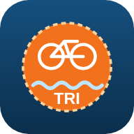

<!DOCTYPE html>
<html lang="da">
<head>
<meta charset="UTF-8">
<meta name="viewport" content="width=device-width, initial-scale=1, viewport-fit=cover">
<meta name="theme-color" content="#0f3b5f">
<meta name="apple-mobile-web-app-capable" content="yes">
<meta name="mobile-web-app-capable" content="yes">
<meta name="apple-mobile-web-app-title" content="Triquiz">
<meta name="apple-mobile-web-app-status-bar-style" content="default">
<link rel="manifest" href="manifest.webmanifest">
<link rel="icon" type="image/png" sizes="192x192" href="icons/icon-192.png">
<link rel="apple-touch-icon" href="icons/apple-touch-icon.png">
<title>Triquiz</title>
<style>
:root{
  --bg:#e9eef2; --paper:#fbfcfd; --paper2:#eef3f6; --ink:#1b2530; --muted:#5d6b77;
  --forest:#0f3b5f; --green:#1d6fa5; --green-d:#12507a; --moss:#2a9d8f;
  --earth:#e0662a; --earth-d:#a8461a; --line:#cfdbe4;
  --ok:#2f8f46; --ok-bg:#e1f3dd; --bad:#c4392d; --bad-bg:#fbe3df; --gold:#e0a923;
}
*{box-sizing:border-box;-webkit-tap-highlight-color:transparent}
[hidden]{display:none!important}
html{background:var(--bg)}
body{margin:0;min-height:100vh;font-family:system-ui,-apple-system,"Segoe UI",Roboto,"Helvetica Neue",Arial,sans-serif;
  color:var(--ink);background:var(--bg);
  background-image:radial-gradient(ellipse at top,#f7fbfd 0,rgba(247,251,253,0) 65%);
  -webkit-text-size-adjust:100%;}
body::before{content:"";position:fixed;left:0;right:0;bottom:0;height:90px;pointer-events:none;z-index:0;opacity:.12;
  background:url("data:image/svg+xml;utf8,<svg xmlns='http://www.w3.org/2000/svg' viewBox='0 0 400 90' preserveAspectRatio='none'><path d='M0 90V40q25-16 50 0t50 0 50 0 50 0 50 0 50 0 50 0 50 0V90Z' fill='%230f3b5f'/><path d='M0 90V62q25-14 50 0t50 0 50 0 50 0 50 0 50 0 50 0 50 0V90Z' fill='%231d6fa5'/></svg>") bottom/100% 100% no-repeat;}
button,input{font:inherit;color:inherit}
button{cursor:pointer}
#app{position:relative;z-index:1;max-width:520px;margin:0 auto;padding:16px 16px calc(40px + env(safe-area-inset-bottom));min-height:100vh}
h1,h2,h3{margin:0;line-height:1.2}
p{line-height:1.45}
.muted{color:var(--muted)}
.center{text-align:center}

/* Topbar */
.topbar{display:flex;align-items:center;gap:10px;margin:2px 0 14px}
.topbar h1{flex:1;font-size:21px;color:var(--forest);text-align:center}
.iconbtn{flex:none;width:48px;height:48px;border-radius:14px;border:none;background:var(--paper);
  box-shadow:0 3px 0 var(--line);font-size:21px;display:grid;place-items:center;padding:0}
.iconbtn:active{transform:translateY(2px);box-shadow:0 1px 0 var(--line)}
.spacer{width:48px;flex:none}

/* Knapper */
.btn{display:flex;align-items:center;justify-content:center;gap:10px;width:100%;min-height:58px;padding:14px 18px;
  border:none;border-radius:16px;font-size:18px;font-weight:700;color:#fff;background:var(--green);
  box-shadow:0 4px 0 var(--green-d);margin:10px 0;transition:transform .08s,box-shadow .08s;text-align:center}
.btn:active{transform:translateY(3px);box-shadow:0 1px 0 var(--green-d)}
.btn.secondary{background:var(--paper);color:var(--forest);box-shadow:0 4px 0 var(--line)}
.btn.earth{background:var(--earth);box-shadow:0 4px 0 var(--earth-d)}
.btn.gold{background:#c98a16;box-shadow:0 4px 0 #8a5d0b}
.btn:disabled{opacity:.45;pointer-events:none}
.row{display:flex;gap:10px}.row>*{flex:1}

/* Kort */
.card{background:var(--paper);border-radius:20px;padding:16px;margin-bottom:14px;
  box-shadow:0 2px 0 rgba(0,0,0,.06),0 8px 22px rgba(70,50,15,.08);border:1px solid rgba(220,207,174,.6)}

/* Velkomst / vælg */
.hero{text-align:center;padding:10px 0 6px}
.hero h1{font-size:32px;color:var(--forest);letter-spacing:.5px;margin-top:6px}
.hero p{margin:4px 0 16px;color:var(--muted)}
.charrow{display:flex;align-items:center;gap:12px;padding:10px 12px;cursor:pointer}
.charrow .mini{width:64px;height:64px;flex:none;border-radius:50%;background:#e4ecd6;overflow:hidden}
.charrow .mini svg{width:100%;height:100%}
.charrow .info{flex:1;min-width:0}
.charrow .info b{display:block;font-size:18px;overflow:hidden;text-overflow:ellipsis;white-space:nowrap}
.charrow .info span{font-size:14px;color:var(--muted)}

/* Editor */
.preview{width:170px;margin:0 auto}
.preview svg{width:100%;display:block}
.lbl{display:block;font-weight:700;margin:14px 0 8px;color:var(--forest)}
.lbl:first-child{margin-top:0}
input[type=text]{width:100%;min-height:54px;border-radius:14px;border:2px solid var(--line);background:#fff;padding:10px 14px;font-size:18px;outline:none}
input[type=text]:focus{border-color:var(--moss)}
input.err{border-color:var(--bad);animation:shake .4s}
.swatches{display:flex;flex-wrap:wrap;gap:10px}
.sw{width:46px;height:46px;border-radius:50%;border:3px solid #fff;box-shadow:0 0 0 2px var(--line);padding:0}
.sw.on{box-shadow:0 0 0 3px var(--forest);transform:scale(1.08)}
.chips{display:flex;flex-wrap:wrap;gap:8px}
.chip{min-height:46px;padding:8px 14px;border-radius:999px;border:2px solid var(--line);background:#fff;font-weight:600;font-size:16px}
.chip.on{background:var(--forest);border-color:var(--forest);color:#fff}

/* Profil */
.profile{text-align:center;background:linear-gradient(180deg,#d6e8f4 0,var(--paper) 55%)}
.titler{display:flex;flex-wrap:wrap;gap:6px;justify-content:center;margin-top:6px}.titler span{background:var(--gold,#e8b84a);color:#3b2a0a;border-radius:999px;padding:3px 10px;font-weight:800;font-size:13px}
.fugle{position:absolute;inset:0;pointer-events:none;overflow:hidden;border-radius:22px;z-index:61}.fugle span{position:absolute;left:-10%;width:26px;animation:flyv 14s linear infinite}.fugle svg{display:block;width:100%;height:auto;filter:drop-shadow(0 6px 3px rgba(0,0,0,.18))}.fugle .vinge{transform-box:fill-box;transform-origin:center;animation:flaks .5s ease-in-out infinite alternate}@keyframes flaks{to{transform:scaleY(.35)}}
@keyframes flyv{0%{transform:translate(0,0)}25%{transform:translate(32vw,-10px)}50%{transform:translate(64vw,8px)}75%{transform:translate(96vw,-6px)}100%{transform:translate(130vw,0)}}
.rank-pill{display:inline-flex;align-items:center;gap:6px;background:var(--forest);color:#fff;border-radius:999px;padding:6px 14px;font-weight:700;font-size:15px}
.avatar-wrap{width:min(230px,62vw);margin:8px auto 0}
.avatar-wrap svg{width:100%;display:block}
.stats{display:flex;justify-content:space-around;margin:12px 0 4px}
.stats div{display:flex;flex-direction:column}
.stats b{font-size:22px;color:var(--forest)}
.stats span{font-size:13px;color:var(--muted)}
.prog{margin-top:10px}
.bar{height:12px;border-radius:8px;background:#e2d7bb;overflow:hidden}
.bar i{display:block;height:100%;background:linear-gradient(90deg,var(--moss),var(--gold));border-radius:8px}
.prog small{display:block;margin-top:6px;color:var(--muted)}
.toggle{display:flex;align-items:center;justify-content:space-between;gap:12px;font-weight:600;min-height:44px}
.toggle small{display:block;font-weight:400;color:var(--muted)}
.switch{position:relative;width:58px;height:34px;flex:none}
.switch input{opacity:0;width:100%;height:100%;margin:0;position:absolute;z-index:2;cursor:pointer}
.switch span{position:absolute;inset:0;border-radius:20px;background:#cfc4a6;transition:.2s}
.switch span::after{content:"";position:absolute;width:26px;height:26px;left:4px;top:4px;border-radius:50%;background:#fff;transition:.2s;box-shadow:0 1px 3px rgba(0,0,0,.3)}
.switch input:checked+span{background:var(--green)}
.switch input:checked+span::after{left:28px}

.install{display:flex;align-items:center;gap:12px}
.install img{width:52px;height:52px;border-radius:12px;flex:none}
.install div{flex:1;min-width:0}
.install div>b{display:block;color:var(--forest)}
.install small{color:var(--muted);line-height:1.35;display:block}
.backup>b,.fejlkort>b,.indst>b{display:block;color:var(--forest)}
/* Adventureløb */
.kortramme{position:relative;margin-bottom:10px}
.kortscroll{overflow:auto;max-height:min(50vh,360px);border-radius:18px;box-shadow:inset 0 0 0 3px rgba(0,0,0,.12),0 8px 20px rgba(40,30,10,.2);background:#6f9a45;-webkit-overflow-scrolling:touch}
.loebkort{display:block;min-width:100%;height:auto}
.btn.rute{flex-direction:column;gap:2px}
.zoom{position:absolute;right:8px;bottom:8px;display:flex;gap:6px}
.zoom .chip{width:40px;height:40px;padding:0;font-size:22px;font-weight:800;justify-content:center;box-shadow:0 2px 6px rgba(0,0,0,.25)}
.sti{fill:none;stroke:#efdfb4;stroke-width:6;stroke-linecap:round;opacity:.9}
.sti.fravalgt{opacity:.25}
.gaaet{fill:none;stroke:#0f3b5f;stroke-width:3;stroke-dasharray:6 5;stroke-linecap:round}
.sti.s-svom{stroke:#2b8cbe;opacity:.75}.sti.s-t1,.sti.s-t2{stroke:#9aa6b2}.sti.s-cykel{stroke:#55606a;opacity:.8}.sti.s-loeb{stroke:#e8925a;opacity:.85}
.spejderfig .zzz{position:absolute;right:-60%;top:-40%;width:70%;pointer-events:none}
.rollechip{font-weight:600;color:var(--muted);font-size:12.5px;white-space:nowrap}
.arb .btn.lillebtn{min-height:38px;padding:6px 10px;font-size:14px}
.arbinfo .bar.traet i{background:linear-gradient(90deg,#5b7bd5,#9fb4ee)}
#lbrik{transition:transform 1.1s ease-in-out}
.lpost.naeste{animation:blink 1.2s ease-in-out infinite}
.hjerter{font-size:14px;letter-spacing:-1px;white-space:nowrap}
.loebhead{display:flex;align-items:center;gap:12px}.loebhead b{display:block}.loebhead small{color:var(--muted)}
.rollerk{min-height:56px}.rolleik{font-size:24px;width:30px;text-align:center}.rollenavn{font-size:14px;max-width:70px;overflow:hidden;text-overflow:ellipsis}
.rollerk .chip{padding:6px 10px}
.jokerbar{background:var(--paper);border-radius:16px;padding:10px 12px;margin:10px 0;box-shadow:0 2px 0 var(--line)}
.jokerbar small{display:block;color:var(--muted);margin-bottom:6px}.jokerbar .row{flex-wrap:wrap;gap:6px}.jokerbar .chip{flex:1 1 auto;justify-content:center}
.kompassvg{display:block;width:100%;max-width:260px;margin:8px auto 0}
.opgtitel{display:block;margin-top:8px;color:var(--forest)}
.stjerner3 span{font-size:44px;color:#d8cfb8}.stjerner3 span.on{color:#f2b630;text-shadow:0 2px 0 #b07a00}
.stjsm span{color:#cfc4a6}.stjsm span.on{color:#e0a020}
.loebnr{flex:none;width:46px;height:46px;border-radius:12px;background:#dceaf4;display:grid;place-items:center;align-content:center;font-size:22px;line-height:1}
.loebnr small{font-size:11px;font-weight:800;color:var(--forest)}
.loebrk .lvltxt small+small{margin-top:1px}
.fortsaet{display:flex;align-items:center;gap:10px;background:#fff7d6;border:2px solid #e8c95a}
.fortsaet>div{flex:1;min-width:0}.fortsaet b{display:block}.fortsaet small{color:var(--muted);font-size:13px}
.fortsaet .btn{width:auto;margin:0;min-height:44px;padding:8px 14px}
.trofaetop{display:flex;align-items:center;gap:12px}.trofaetop b{display:block}.trofaetop small{color:var(--muted)}
.tider{display:grid;grid-template-columns:repeat(auto-fill,minmax(88px,1fr));gap:6px;margin-top:10px}
.tider div{background:var(--paper2);border-radius:12px;padding:6px;text-align:center}.tider span{display:block;font-size:13px}.tider b{display:block}.tider small{color:#b07a00;font-size:12px}
.mestertrofae{margin-top:10px;background:linear-gradient(135deg,#fff3c4,#f4cb4e);border-radius:14px;padding:10px;text-align:center}
.loebtekst{font-style:italic;line-height:1.45}
.haend{text-align:center}
.lejrvalg{flex-direction:column;gap:6px;margin-top:8px}.lejrvalg .chip{justify-content:flex-start;text-align:left;white-space:normal}
.qstats .rest{color:#b3261e}
/* Spejderhytten */
.hyttescene{aspect-ratio:300/220}
.hting{position:absolute;aspect-ratio:1;display:grid;place-items:center;pointer-events:none}
.hting svg{width:100%;height:100%}.hting .emo{font-size:clamp(22px,8vw,40px);line-height:1}
.hting.trofae{aspect-ratio:auto}
.hylde{display:flex;flex-wrap:wrap;justify-content:center;gap:2px;padding:4px 4px 6px;border-bottom:6px solid #5c3a20;background:rgba(0,0,0,.12);border-radius:6px 6px 0 0;min-height:30px}
.hylde .badge.xs{width:clamp(16px,6vw,26px);height:clamp(16px,6vw,26px)}
.hylde small{color:#fbeedd;font-size:11px;text-align:center}
.moedekort>.btn{margin:10px 0 0}
.nedtael{margin-top:8px;font-size:15px;color:var(--muted)}
.mstats{display:grid;grid-template-columns:repeat(4,1fr);gap:6px;margin:0 0 12px}
.mstats div{background:var(--paper);border-radius:14px;padding:8px 4px;text-align:center;box-shadow:0 2px 0 var(--line)}
.mstats b{display:block;font-size:17px;color:var(--forest)}.mstats span{font-size:11px;color:var(--muted)}
.ugenr.lille{width:44px;height:44px;font-size:17px;border-radius:12px}
.lvlrow .ugenr small{color:#fff;font-size:9px;opacity:.85;text-transform:uppercase}
.hbesked{background:#fff6d8;border:2px solid #f2d27a}
.hytteknap{background:#2f5d62;box-shadow:0 5px 0 #1f3f43}
.hytteknap small{font-weight:600;opacity:.85}
.ugestjerne{background:#fff6d8;border:2px solid #f2c94c;text-align:center}
.mtrin{display:flex;justify-content:space-between;gap:4px;margin:0 0 6px}
.mtrin span{flex:1;display:flex;flex-direction:column;align-items:center;font-weight:800;font-size:15px;color:var(--muted)}
.mtrin span small{font-size:10.5px;font-weight:700;margin-top:2px}
.mtrin span.nu{color:var(--forest)}.mtrin span.ok{color:var(--ok)}
.belon .belonliste{display:flex;flex-wrap:wrap;gap:6px;margin:8px 0}
.belonliste span{display:inline-flex;align-items:center;gap:4px;background:var(--paper2);border-radius:20px;padding:4px 10px;font-weight:700;font-size:14px}
.belonliste .matik{width:20px;height:20px}
.belon small{display:block;margin-top:4px;color:var(--muted)}
.indst .toggle{margin-top:10px}
.oplaesknap{margin-top:12px}
/* Større tekst */
.stortekst .qtext{font-size:25px}
.stortekst .ans{font-size:21px;min-height:70px}
.stortekst .fb,.stortekst .fb p{font-size:19px}
.stortekst .fb b.head{font-size:22px}
.stortekst .qtopic{font-size:15px}
.stortekst .trinknap,.stortekst .trinliste li{font-size:19px}
.stortekst .btn{font-size:20px}
.stortekst .card p,.stortekst .review li,.stortekst .muted{font-size:18px}
.stortekst small{font-size:16px}
.ugetop{display:flex;gap:12px;align-items:center}
.ugetop b{display:block;color:var(--forest)}.ugetop small{color:var(--muted);line-height:1.35;display:block}
.ugenr{flex:none;width:56px;height:56px;border-radius:14px;background:var(--forest);color:#fff;display:grid;place-items:center;align-content:center;font-weight:800;font-size:22px;line-height:1}
.ugetop .ugenr small{font-size:11px;font-weight:700;color:#fff;opacity:.85;text-transform:uppercase;letter-spacing:.04em;line-height:1}
.ugebest{margin:10px 0 0;font-size:15px}
.ugekort>.btn{margin:10px 0 0}
.fejlkort>small{color:var(--muted);line-height:1.35;display:block;margin:2px 0 0}
.fejlkort>.btn{margin:12px 0 0}
.backup>small{color:var(--muted);line-height:1.35;display:block;margin:2px 0 10px}
.backup .row{display:flex;gap:8px}
.backup .btn{min-height:48px;font-size:16px;padding:10px 12px}
.backup .row .btn{flex:1;margin:0}
.backup>.btn{margin:8px 0 0}
.install .btn{width:auto;min-height:46px;margin:0;padding:10px 16px;font-size:16px}
/* Mærker */
.badge{position:relative;width:84px;height:84px;margin:0 auto}
.badge svg{width:100%;height:100%;display:block;filter:drop-shadow(0 3px 2px rgba(0,0,0,.25))}
.badge.locked svg{filter:grayscale(1) opacity(.5)}
.badge.faded svg{filter:saturate(.35) opacity(.75)}
.badge.xs{width:30px;height:30px;margin:0}
.badge.sm{width:60px;height:60px}
.badge.lg{width:130px;height:130px}
.badge.xl{width:190px;height:190px}
.umaerke{cursor:pointer}.umaerke:active{opacity:.7}
.maerkestor .badge.xl{width:min(240px,62vw);height:min(240px,62vw);animation:maerkezoom .35s cubic-bezier(.2,1.4,.5,1)}
@keyframes maerkezoom{from{transform:scale(.25);opacity:0}to{transform:scale(1);opacity:1}}
.lock{position:absolute;right:-2px;bottom:-2px;width:34%;height:34%;border-radius:50%;background:#fff;display:grid;place-items:center;box-shadow:0 1px 3px rgba(0,0,0,.3)}
.lock svg{width:62%;height:62%;filter:none!important}
.summary{display:flex;justify-content:center;gap:14px;font-weight:700;margin-bottom:12px;flex-wrap:wrap}
.summary span{background:var(--paper);border-radius:999px;padding:6px 12px;box-shadow:0 2px 0 var(--line)}
.grid{display:grid;grid-template-columns:repeat(3,1fr);gap:10px}
.gruppe{display:flex;align-items:center;gap:10px;margin:18px 2px 8px}.gruppe b{font-size:17px;color:var(--forest)}.gruppe b span{font-weight:700;color:var(--muted)}
.gruppebar{height:6px;border-radius:3px;background:var(--paper2);margin:-2px 2px 10px;overflow:hidden}.gruppebar i{display:block;height:100%;background:linear-gradient(90deg,#b0702f,#9aa6b2,#e0a923)}
.bcell{background:var(--paper);border:1px solid rgba(220,207,174,.7);border-radius:18px;padding:12px 4px 10px;text-align:center;box-shadow:0 3px 0 var(--line);display:flex;flex-direction:column;align-items:center;gap:6px;min-height:150px}
.bcell:active{transform:translateY(2px)}
.bcell .badge{width:74px;height:74px}
.bcell b{font-size:13px;line-height:1.2}
.bcell small{font-size:12px;font-weight:700;padding:2px 8px;border-radius:999px;background:var(--paper2);color:var(--muted)}
.bcell small.l1{background:#f1dcc6;color:#7e4a1f}.bcell small.l2{background:#e5e9ee;color:#55606a}.bcell small.l3{background:#fbecb9;color:#8a6208}

/* Emne */
.emnehead{text-align:center}
.emnehead p{margin:10px 0 0;color:var(--muted)}
.lvlcard .lvltop{display:flex;align-items:center;gap:12px}
.lvlcard .lvltop .badge{margin:0;flex:none}
.lvlcard .lvltxt{flex:1}
.lvlcard .lvltxt b{font-size:18px;display:block}
.lvlcard .lvltxt small{display:block;color:var(--muted);margin-top:2px}
.lvlcard.laast{opacity:.75}
.lvlcard .btn{margin-bottom:0}
.status{font-weight:700}
.status.done{color:var(--ok)}

/* Træning */
.sect{font-weight:700;color:var(--forest);margin:4px 0 10px}

/* Quiz */
.quiztop{display:flex;align-items:center;gap:10px;margin-bottom:10px}
.qinfo{flex:1;min-width:0}
.qinfo small{display:block;color:var(--muted);font-size:13px;white-space:nowrap;overflow:hidden;text-overflow:ellipsis}
.qinfo b{font-size:17px}
.qstats{display:flex;flex-direction:column;align-items:flex-end;gap:2px;font-weight:700;font-size:15px}
.streak.hot{color:#d35400;animation:pulse 1s infinite}
.dots{display:flex;gap:5px;margin-bottom:12px}
.dots i{flex:1;height:8px;border-radius:5px;background:#ddd1b2}
.dots i.now{background:var(--moss)}
.dots i.ok{background:var(--ok)}
.dots i.bad{background:var(--bad)}
.timer{display:flex;align-items:center;gap:10px;margin-bottom:12px}
.timer .bar{flex:1;height:14px}
.timer .bar i{width:100%;transition:width .1s linear;background:linear-gradient(90deg,#5fa04e,#9cc24a)}
.timer.low .bar i{background:var(--bad)}
.timer span{width:30px;text-align:right;font-weight:800;font-variant-numeric:tabular-nums}
.timer.low span{color:var(--bad)}
.qcard{padding:18px}
.qtopic{display:flex;align-items:center;gap:8px;font-size:13px;font-weight:700;color:var(--muted);text-transform:uppercase;letter-spacing:.4px}
.qtext{font-size:20px;font-weight:700;margin:10px 0 0;line-height:1.35}
.ans{display:flex;align-items:center;gap:12px;width:100%;min-height:62px;padding:12px 14px;margin:0 0 10px;
  border:2px solid var(--line);border-radius:16px;background:var(--paper);font-size:17px;text-align:left;
  box-shadow:0 3px 0 var(--line);transition:transform .08s}
.ans:active{transform:translateY(2px)}
.ans .letter{flex:none;width:34px;height:34px;border-radius:50%;background:var(--paper2);display:grid;place-items:center;font-weight:800;color:var(--forest)}
.ans.correct{background:var(--ok-bg);border-color:var(--ok);box-shadow:0 3px 0 var(--ok)}
.ans.correct .letter{background:var(--ok);color:#fff}
.ans.wrong{background:var(--bad-bg);border-color:var(--bad);box-shadow:0 3px 0 var(--bad);animation:shake .45s}
.ans.wrong .letter{background:var(--bad);color:#fff}
.ans.dim{opacity:.5}
.ans:disabled{cursor:default}
.ans.correct.pop{animation:popin .45s}
.fb{border-radius:16px;padding:14px 16px;margin-top:4px;border-left:6px solid}
.fb.ok{background:var(--ok-bg);border-color:var(--ok)}
.fb.bad{background:var(--bad-bg);border-color:var(--bad)}
.fb b.head{font-size:19px}
.fb.ok b.head{color:var(--ok)}.fb.bad b.head{color:var(--bad)}
.fb p{margin:8px 0 0}
.forkl{color:#3d3a2c}
.plus{display:inline-block;margin-left:6px;color:#b07a00;animation:floatup 1s ease-out}

/* Resultat */
.score{width:150px;height:150px;border-radius:50%;margin:6px auto 12px;display:grid;place-items:center;background:conic-gradient(var(--c) calc(var(--p)*1%),#e2d7bb 0)}
.score div{width:118px;height:118px;border-radius:50%;background:var(--paper);display:grid;place-items:center;font-size:36px;font-weight:800;color:var(--forest)}
.resmsg{font-size:22px;font-weight:800;text-align:center}
.review{list-style:none;padding:0;margin:10px 0 0}
.review li{padding:10px 0;border-top:1px solid var(--line);font-size:15px}
.review li b{display:block;font-weight:600}
.review li span{display:block;color:var(--muted);margin-top:3px}
.review li.ok b::before{content:"✓ ";color:var(--ok);font-weight:800}
.review li.bad b::before{content:"✗ ";color:var(--bad);font-weight:800}
details summary{cursor:pointer;font-weight:700;color:var(--forest);min-height:40px;display:flex;align-items:center}

/* Faner og lejrplads */
#tabs{position:fixed;left:0;right:0;bottom:0;z-index:50;display:flex;justify-content:center;background:var(--paper);border-top:1px solid var(--line);
  box-shadow:0 -4px 16px rgba(60,40,10,.08);padding:6px max(8px, env(safe-area-inset-right, 0px)) calc(6px + env(safe-area-inset-bottom, 0px)) max(8px, env(safe-area-inset-left, 0px))}
#tabs .in{display:flex;gap:4px;width:100%;max-width:520px}
.tab{flex:1;border:none;background:none;display:flex;flex-direction:column;align-items:center;gap:3px;min-height:56px;font-size:12px;font-weight:700;color:var(--muted);border-radius:14px;padding:6px 0}
.tab span{font-size:22px;line-height:1}
.tab.on{color:var(--forest);background:#dceaf4}
body.has-tabs #app{padding-bottom:calc(110px + env(safe-area-inset-bottom, 0px))}
#toast{position:fixed;left:50%;bottom:calc(88px + env(safe-area-inset-bottom, 0px));transform:translateX(-50%);z-index:900;width:max-content;max-width:min(460px, calc(100% - 32px));
  background:#2a2a1f;color:#fff;padding:12px 16px;border-radius:14px;font-size:15px;line-height:1.35;box-shadow:0 6px 20px rgba(0,0,0,.25);animation:fadein .2s}
.lejrinfo{display:flex;flex-wrap:wrap;gap:8px;justify-content:center;margin-bottom:12px}
.chip{background:var(--paper);border-radius:999px;padding:7px 14px;box-shadow:0 2px 0 var(--line);font-size:15px}
.byggebar{display:flex;align-items:center;gap:10px;background:#fff7d6;border:2px solid #e8c95a;border-radius:16px;padding:8px 10px;margin-bottom:10px}
.byggebar div:nth-child(2){flex:1;min-width:0}.byggebar b{display:block}.byggebar small{color:var(--muted)}
.byggebar .bik{width:44px;height:44px;display:grid;place-items:center;font-size:30px;flex:none}
.byggebar .bik svg{width:100%;height:100%}
.byggebar .btn{width:auto;min-height:44px;margin:0;padding:8px 14px;font-size:15px}
.lejrtop{display:flex;flex-direction:column;align-items:center;gap:6px;margin:2px 0 8px}.lejrtop h1{font-size:22px;margin:4px 0 0;text-align:center}
.lejrtop .lejrinfo{display:flex;flex-wrap:wrap;justify-content:center;gap:6px;margin:0}.lejrtop .chip{padding:5px 10px;font-size:14px;display:inline-flex;align-items:center;gap:3px}.lejrtop .chip .matik{width:20px;height:20px}
body.lejrskaerm #app{padding-bottom:var(--lejrluft, calc(200px + env(safe-area-inset-bottom, 0px)))}
.lejrbund{position:fixed;left:0;right:0;bottom:calc(70px + env(safe-area-inset-bottom, 0px));z-index:55;display:flex;justify-content:center;gap:8px;padding:8px max(10px, env(safe-area-inset-left, 0px));pointer-events:none}
.lejrbund button{pointer-events:auto;flex:1;max-width:170px;min-height:58px;border:none;border-radius:16px;background:var(--forest);color:#fff;font-weight:800;font-size:22px;display:flex;flex-direction:column;align-items:center;justify-content:center;gap:2px;box-shadow:0 4px 0 #1f3320,0 6px 16px rgba(0,0,0,.18);position:relative;line-height:1}
.lejrbund button span{font-size:12px;line-height:1.1;text-align:center}.lejrbund button.on{background:#c98a1c;box-shadow:0 4px 0 #8a5c0e,0 6px 16px rgba(0,0,0,.18)}
.lejrbund .prik{position:absolute;top:6px;right:10px;width:10px;height:10px;border-radius:50%;background:#f4cb4e;border:2px solid #fff}
.arkbag{position:fixed;inset:0;z-index:53;background:rgba(30,30,20,.35)}
.ark{position:fixed;left:0;right:0;bottom:calc(140px + env(safe-area-inset-bottom, 0px));z-index:54;margin:0 auto;max-width:520px;max-height:calc(100dvh - 210px);overflow-y:auto;overscroll-behavior:contain;background:var(--bg,#f5ecd8);border-radius:20px 20px 0 0;padding:0 12px 14px;box-shadow:0 -8px 24px rgba(0,0,0,.2);animation:arkind .2s ease-out}
.arktop{position:sticky;top:0;z-index:2;display:flex;align-items:center;justify-content:space-between;padding:12px 2px 8px;background:inherit}.arktop b{font-size:19px;color:var(--forest)}.arktop .lukx{position:static;float:none;margin:0}
@keyframes arkind{from{transform:translateY(30px);opacity:0}to{transform:none;opacity:1}}
.byggebar{position:sticky;top:0;z-index:30}
.celle .vild .vildsvg{width:clamp(18px,6vw,26px);height:auto;display:block}.celle .vild{font-size:clamp(15px,5vw,22px);animation:vildvug 3s ease-in-out infinite;display:inline-block}@keyframes vildvug{50%{transform:rotate(-8deg) scale(1.08)}}
.besoeg{position:absolute;inset:8px;pointer-events:none}
.dyrgaest{position:absolute;transform:translate(-50%,-100%);pointer-events:auto;border:none;background:none;padding:4px;width:clamp(40px,13vw,58px);line-height:0;cursor:pointer;animation:dyrgraes 5s ease-in-out infinite;filter:drop-shadow(0 3px 2px rgba(0,0,0,.25))}
.dyrgaest svg{display:block;width:100%;height:auto}
@keyframes dyrgraes{0%,60%,100%{transform:translate(-50%,-100%) rotate(0)}70%{transform:translate(-50%,-94%) rotate(-7deg)}82%{transform:translate(-50%,-94%) rotate(-7deg)}}
.lejrskilt{display:flex;align-items:center;gap:10px;width:100%;max-width:420px;border:none;border-radius:16px;padding:8px 12px;background:linear-gradient(#1d6fa5,#0f3b5f);color:#f4f9fd;box-shadow:0 3px 0 #0a2a44,0 6px 14px rgba(0,0,0,.15);text-align:left;cursor:pointer;font:inherit}
.lejrskilt .skik{font-size:34px;line-height:1;filter:drop-shadow(0 2px 2px rgba(0,0,0,.25))}.lejrskilt .sktekst{flex:1;min-width:0;display:flex;flex-direction:column;gap:2px}
.lejrskilt b{font-size:19px;line-height:1.1}.lejrskilt small{font-size:12.5px;opacity:.92}.lejrskilt .xptal{font-variant-numeric:tabular-nums}
.xpbar{display:block;height:8px;border-radius:99px;background:rgba(0,0,0,.25);overflow:hidden;margin:3px 0 1px}.xpbar i{display:block;height:100%;background:linear-gradient(90deg,#f4cb4e,#ffe9a0);border-radius:99px}
.sovekap{margin:2px 0 10px;font-size:15px;background:#eef3e4;border-radius:12px;padding:8px 10px}
.lejrskiltmodal{text-align:left;max-height:85dvh;overflow-y:auto}.lejrskiltmodal h3{margin:16px 0 6px;font-size:16px;color:var(--forest)}
.xptab{width:100%;border-collapse:collapse;font-size:14.5px}.xptab td{padding:4px 2px;border-bottom:1px solid var(--line)}.xptab td:last-child{text-align:right;font-weight:800;font-variant-numeric:tabular-nums}
.insp{list-style:none;padding:0;margin:0;display:flex;flex-direction:column;gap:6px;font-size:14px}.insp li{background:var(--paper2);border-radius:10px;padding:7px 9px}.insp li.ok{background:#e6efd9}.insp small{display:block;color:var(--muted);margin-top:2px}
.insp.saet s{opacity:.55}
.lejrtrinstor{font-size:110px;line-height:1.1;animation:popin .8s both}
.pm .plejr{font-size:11.5px;color:var(--forest)}
.katvalg{display:flex;gap:6px;overflow-x:auto;margin:0 -12px 4px;padding:2px 12px 8px;scrollbar-width:none;position:sticky;top:52px;z-index:2;background:inherit}.katvalg::-webkit-scrollbar{display:none}
.katvalg button{flex:none;border:2px solid var(--line);background:var(--paper);color:var(--ink);border-radius:999px;padding:7px 12px;font-weight:700;font-size:14px;white-space:nowrap}
.katvalg button.on{background:var(--forest);border-color:var(--forest);color:#fff}
.shop .item.bygget{background:#e6efd9;border-color:#9cc08a}.shop .item.bygget .ik{opacity:.85}
.byggetmaerke{display:inline-block;margin-top:4px;background:var(--forest);color:#fff;border-radius:999px;padding:3px 10px;font-size:13px;font-weight:800}
.krav.lejrlaas{background:#f1e2c3;color:#7a4b12;border-radius:999px;padding:2px 8px;font-size:12px;font-weight:800;white-space:normal}
.aktvalg{display:grid;grid-template-columns:1fr 1fr;gap:8px;margin:8px 0}.aktvalg .btn{margin:0}
.aktsem{display:flex;justify-content:center;background:#e9f2dc;border-radius:16px}.aktsem svg{width:min(260px,70vw);height:auto}
.stave{display:flex;flex-wrap:wrap;gap:5px;margin:8px 0}.stave span{background:#0f3b5f;color:#fff;border-radius:8px;padding:3px 8px;font-weight:800;font-size:14px}
.butik{display:flex;flex-direction:column;gap:8px;margin:8px 0}.butikrad{display:flex;align-items:center;gap:8px;background:var(--paper);border-radius:12px;padding:8px}.butikrad .matik{width:30px;height:30px;flex:none}.butikrad span{flex:1;min-width:0}.butikrad small{display:block;color:var(--muted)}
.showvalg{display:flex;flex-direction:column;gap:6px}.showvalg .chip{text-align:left;white-space:normal;border-radius:12px}.showvalg .chip.on{background:var(--forest);color:#fff}
.flaggrid{display:grid;grid-template-columns:repeat(4,1fr);gap:6px;margin:8px 0}.flaggrid span{display:flex;flex-direction:column;align-items:center;font-size:24px;background:var(--paper2);border-radius:10px;padding:6px 2px;opacity:.6}.flaggrid span.har{opacity:1;background:#e6efd9}.flaggrid small{font-size:10.5px;text-align:center}
.morseinput{font-size:26px;font-weight:800;letter-spacing:3px;text-align:center;background:#1d2a3a;color:#ffe680;border-radius:12px;padding:10px;min-height:52px;margin:8px 0;word-break:break-all}
.morsetab{display:grid;grid-template-columns:repeat(4,1fr);gap:4px;font-size:13px}
#rutsjer.rutsjer{animation:rutsj 2.4s ease-in forwards}@keyframes rutsj{0%{transform:translate(0,0)}30%{transform:translate(70px,18px)}60%{transform:translate(120px,90px)}100%{transform:translate(220px,140px)}}
.lejrmap.k3{max-width:330px;margin:0 auto}.lejrmap.k4{max-width:400px;margin:0 auto}
.celle.udvidet{animation:udvid .7s cubic-bezier(.2,1.4,.4,1) both;animation-delay:.35s}@keyframes udvid{from{transform:scale(.2);opacity:0}to{transform:none;opacity:1}}
.vogn{background:#efe2c4;border-radius:14px;padding:10px;margin-bottom:12px}
.celle.forbudt{box-shadow:inset 0 0 0 3px #c62828;background:#e9b3a8 !important}
.bcell.emnelaas{opacity:.7}.bcell.emnelaas small{color:#7a4b12;font-weight:700}.lejrlaaskort{background:#f1e2c3;color:#7a4b12;font-weight:700}
.lvlrow .lejrlaas{color:#7a4b12;font-weight:800;font-size:12px;white-space:nowrap}.nytliste{text-align:left;font-size:15px;display:flex;flex-direction:column;gap:4px}
button.lagerchip{border:none;font:inherit;color:inherit;cursor:pointer}
.matinfo .matik{width:56px;height:56px}.matinfo h3{margin:14px 0 6px;font-size:16px;color:var(--forest)}.matinfo ol{margin:0;padding-left:20px;display:flex;flex-direction:column;gap:6px;font-size:15px}.matinfo p{font-size:15px}
.guidebar{display:flex;align-items:center;gap:8px;width:100%;max-width:420px;border:2px solid #e2c56b;background:#fff7d6;color:var(--ink);border-radius:14px;padding:7px 12px;font:inherit;font-size:14.5px;text-align:left;cursor:pointer;animation:guidepuls 2.6s ease-in-out infinite}
.guidebar span:nth-child(2){flex:1;min-width:0}.guidebar .pil{font-size:22px;color:#b07a1a}@keyframes guidepuls{50%{box-shadow:0 0 0 4px rgba(242,201,76,.35)}}
.guide{text-align:left}.guideliste{padding-left:4px;list-style:none;margin:6px 0;display:flex;flex-direction:column;gap:4px;font-size:14.5px}.guideliste li.ok{opacity:.6}.guideliste li.nu{font-weight:800}
.guidenu{background:#fff7d6;border-radius:14px;padding:10px 12px;margin:10px 0}.guidenu p{margin:6px 0;font-size:15px}.guidenu .mangler{color:#b3261e}
.lageradv{display:block;color:#b3261e;font-weight:700;font-size:12.5px}
.bcell small.klar{color:#2e7d32;font-weight:800}
.byggebar .regeltekst{display:block;color:#8a3b12;font-weight:700;margin-top:3px}
.kathead{margin:14px 0 8px;font-size:17px;color:var(--forest)}
.mertekst{margin:0 0 10px;font-size:15px;color:var(--muted)}.mertekst summary{list-style:none;cursor:pointer;font-weight:400;color:var(--muted);font-size:15px;padding:0;margin:0;background:none;border:none}.mertekst summary::-webkit-details-marker{display:none}
.mertekst u{color:var(--forest);font-weight:800;text-decoration:none;white-space:nowrap;margin-left:4px}.mertekst[open] u{display:none}.mertekst p{margin:4px 0 0}
body.lejrskaerm #toast{bottom:calc(160px + env(safe-area-inset-bottom, 0px))}
.celle .okse{position:absolute;top:2px;right:2px;width:30%;z-index:3;animation:hug .6s ease-in-out infinite}.celle .okse svg{display:block;width:100%;height:auto}
.celle .tid .tidik{width:9px;height:11px;vertical-align:-1px}
.celle.voks .emo{font-size:clamp(16px,6vw,26px)}
/* Lejrpladsen er én sammenhængende græsmark: græsstrå-tekstur, slåede baner og lidt lys/skygge. Felterne er næsten usynlige. */
.lejrmap{display:grid;grid-template-columns:repeat(6,1fr);gap:1px;padding:8px;border-radius:22px;
  background:
    url("data:image/svg+xml,%3Csvg xmlns='http://www.w3.org/2000/svg' width='46' height='46'%3E%3Cg stroke-linecap='round' stroke-width='1.6' fill='none'%3E%3Cpath d='M5 12l1-5M7 13l2-4M30 8l-1-5M32 9l2-4M18 30l1-5M20 31l-1-4M40 34l1-5M42 35l2-4M10 42l-1-4M26 20l1-4' stroke='%236f9a44' stroke-opacity='.55'/%3E%3Cpath d='M14 6l1-4M36 22l-1-5M3 28l1-4M24 42l2-4M44 12l-1-4M34 44l1-4' stroke='%23a9cf78' stroke-opacity='.55'/%3E%3C/g%3E%3Ccircle cx='22' cy='9' r='1' fill='%23a9cf78' fill-opacity='.5'/%3E%3Ccircle cx='9' cy='34' r='1' fill='%236f9a44' fill-opacity='.5'/%3E%3C/svg%3E"),
    radial-gradient(ellipse at 25% 20%, rgba(255,255,230,.18), transparent 55%),
    radial-gradient(ellipse at 80% 85%, rgba(30,60,10,.16), transparent 60%),
    repeating-linear-gradient(180deg, rgba(255,255,255,.05) 0 34px, rgba(0,0,0,.03) 34px 68px),
    #86b25a;
  box-shadow:inset 0 0 0 4px #5f8a3a,inset 0 0 18px rgba(40,70,15,.35),0 8px 20px rgba(60,40,10,.15)}
.lejrmap{grid-auto-rows:1fr;isolation:isolate}   /* alle lag (rækker, dyr, lys) holdes inde i pladsen – så panelerne altid ligger øverst */
.celle.stor{aspect-ratio:auto}
.celle.wire .ting{right:auto;width:calc(300% + 2px)}.celle.wire.spejl .ting{left:auto;right:0}
.celle.wire .ting>svg{width:100%;height:100%;overflow:visible}
.celle.stor .ting>svg{width:94%;height:94%}
.celle{aspect-ratio:1;border:none;padding:0;border-radius:6px;position:relative;display:grid;place-items:center;line-height:1;min-width:0}
.celle.a{background:transparent;box-shadow:inset 0 0 0 1px rgba(255,255,255,.07)}.celle.b{background:rgba(255,255,255,.035);box-shadow:inset 0 0 0 1px rgba(255,255,255,.07)}
.celle.vand{background:transparent}
/* Dag og nat (lysHTML): ét lag over pladsen */
.lys{position:absolute;inset:0;border-radius:22px;pointer-events:none;z-index:50;overflow:hidden}
.lys .tone{position:absolute;inset:0}.lys .lyspos{position:absolute;inset:8px}
.lys.morgen .tone{background:linear-gradient(180deg,rgba(255,236,214,.28),rgba(214,232,255,.18));mix-blend-mode:soft-light}
.lys.aften .tone{background:linear-gradient(180deg,rgba(255,150,70,.32),rgba(150,70,40,.22));mix-blend-mode:multiply}
.lys.nat .tone{background:radial-gradient(ellipse at 50% 40%,rgba(28,40,86,.62),rgba(10,16,44,.8));mix-blend-mode:multiply}
.lys i{position:absolute;display:block;transform:translate(-50%,-50%);border-radius:50%}
.lys .lysplet{width:calc(var(--c)*1.5);aspect-ratio:1;background:radial-gradient(closest-side,rgba(255,196,110,.75),rgba(255,150,60,.25) 55%,rgba(255,150,60,0));mix-blend-mode:screen}
.lys .lysplet.stor{width:calc(var(--c)*2.6)}.lys .lysplet.lille{width:calc(var(--c)*.55);background:radial-gradient(closest-side,rgba(255,232,140,.9),rgba(255,210,110,0))}
.lys.aften .lysplet{opacity:.75}.lys.aften .lysplet.stor{width:calc(var(--c)*2)}
.lys .stjerne{width:3px;height:3px;background:#fff;box-shadow:0 0 4px 1px rgba(255,255,255,.7)}
.lys .stjerne.lev{animation:blinke 3.6s ease-in-out infinite}@keyframes blinke{50%{opacity:.2;transform:translate(-50%,-50%) scale(.6)}}
.lys .dug{width:3px;height:3px;background:rgba(255,255,255,.95);box-shadow:0 0 3px 1px rgba(220,240,255,.8)}
.lys .taage{left:-30%;width:160%;height:26%;border-radius:50%;transform:none;background:radial-gradient(closest-side,rgba(255,255,255,.55),rgba(255,255,255,0));animation:taage 46s ease-in-out infinite alternate}
@keyframes taage{to{transform:translateX(18%)}}
/* Spejderne på pladsen (spejdereHTML) */
.spejdere{position:absolute;inset:8px;pointer-events:none}
.spejderfig{position:absolute;width:clamp(20px,6.4vw,30px);transform:translate(-50%,-100%);border:none;background:none;padding:0;line-height:0;pointer-events:auto;cursor:pointer;filter:drop-shadow(0 2px 1.5px rgba(0,0,0,.3))}
.spejderfig svg{display:block;width:100%;height:auto}
.spejderfig.sidder{width:clamp(17px,5.4vw,25px)}
.spejderfig.padler{width:clamp(15px,4.8vw,22px);clip-path:inset(0 0 38% 0);animation:padle 3.2s ease-in-out infinite}
@keyframes padle{50%{transform:translate(-50%,-96%) rotate(-4deg)}}
.spejderfig.gaar{animation:gaa 30s ease-in-out infinite alternate}
@keyframes gaa{0%,8%{left:var(--x1);top:var(--y1)}92%,100%{left:var(--x2);top:var(--y2)}}
/* Trampestierne (stierHTML): et SVG-lag under søen og felterne */
.lejrmap .stier{position:absolute;left:8px;top:8px;width:calc(100% - 16px);height:calc(100% - 16px);z-index:1;pointer-events:none;overflow:visible}
.stier path{fill:none;stroke-linecap:round;stroke-linejoin:round}
.stier .kant{stroke:rgba(196,186,120,.45);stroke-width:.3}.stier .midte{stroke:rgba(226,214,160,.6);stroke-width:.15;stroke-dasharray:.05 .09}
/* Søen (soeHTML): ét SVG-lag under felterne */
.lejrmap .soe{position:absolute;left:8px;top:8px;width:calc(100% - 16px);height:calc(100% - 16px);z-index:1;pointer-events:none;overflow:visible;clip-path:inset(-6px round 18px)}
.soe .sand rect{fill:#dcc791;stroke:#dcc791;stroke-width:.4;stroke-linejoin:round}
.soe .lavt rect{fill:#79c1e6;stroke:#79c1e6;stroke-width:.36;stroke-linejoin:round}
.soe .dybt rect{fill:#3f93c9;stroke:#3f93c9;stroke-width:.28;stroke-linejoin:round}
.soe .siv path{stroke:#5b7a2e;stroke-width:.025;stroke-linecap:round;fill:none}.soe .siv .dun{stroke:#7a4b22;stroke-width:.045}
.soe .blad{fill:#5f9e3c;stroke:#3f7a2a;stroke-width:.012}.soe .blomst{fill:#f6b3cf;stroke:#fff;stroke-width:.012}
.soe .krus{fill:none;stroke:rgba(255,255,255,.55);stroke-width:.02;transform-box:fill-box;transform-origin:center;animation:krus 6s ease-out infinite}
@keyframes krus{0%{transform:scale(.3);opacity:0}25%{opacity:1}100%{transform:scale(1.6);opacity:0}}
.soe .strom path{stroke:rgba(255,255,255,.5);stroke-width:.025;stroke-linecap:round;stroke-dasharray:.12 .22;animation:strom 2.4s linear infinite}
@keyframes strom{to{stroke-dashoffset:-.68}}
/* Animationerne på lejrpladsen står stille, når pladsen ikke er synlig, og helt, hvis telefonen beder om mindre bevægelse */
.lejrmap.pause .lev,.lejrmap.pause .lev *{animation-play-state:paused !important}
@media (prefers-reduced-motion: reduce){ .lejrmap .lev,.lejrmap .lev *{animation:none !important} }
.celle svg{width:90%;height:90%;position:relative;z-index:1}
.celle .emo{font-size:clamp(24px,8.5vw,40px);position:relative;z-index:1}
/* Dybde: blød skygge under tingen; høje ting vokser op fra bunden og rager ind over feltet ovenover */
.celle .ting{position:absolute;inset:0;display:grid;place-items:center;z-index:1;pointer-events:none}
.celle .ting>svg{width:90%;height:90%}
.celle.hoej .ting{transform:scale(1.32);transform-origin:50% 94%}
.celle .skygge{position:absolute;left:16%;right:16%;bottom:5%;height:20%;border-radius:50%;background:radial-gradient(closest-side,rgba(28,48,12,.42),rgba(28,48,12,0));z-index:0;pointer-events:none}
.celle.hoej .skygge{left:10%;right:10%;bottom:3%;height:22%}
.celle.vand .skygge{background:radial-gradient(closest-side,rgba(10,50,80,.35),rgba(10,50,80,0))}
/* Liv: røg stiger op, bål flakker, flag og vimpler vajer */
.celle .roeg{position:absolute;left:38%;width:24%;bottom:58%;height:90%;z-index:3;pointer-events:none}
.celle .roeg i{position:absolute;left:10%;bottom:0;width:80%;aspect-ratio:1;border-radius:50%;background:radial-gradient(closest-side,rgba(205,205,200,.95),rgba(170,170,165,.5) 60%,rgba(170,170,165,0));animation:roeg 4.2s ease-out infinite;opacity:0}
.celle .roeg i:nth-child(2){animation-delay:-1.4s}.celle .roeg i:nth-child(3){animation-delay:-2.8s}
@keyframes roeg{0%{transform:translate(0,0) scale(.5);opacity:0}15%{opacity:.85}100%{transform:translate(40%,-260%) scale(1.9);opacity:0}}
.celle .glod{position:absolute;left:18%;right:18%;bottom:8%;height:44%;border-radius:50%;z-index:0;pointer-events:none;background:radial-gradient(closest-side,rgba(255,170,60,.55),rgba(255,140,40,0));animation:glod 1.3s ease-in-out infinite alternate}
@keyframes glod{0%{opacity:.55;transform:scale(.92)}40%{opacity:.9;transform:scale(1.05)}70%{opacity:.65}100%{opacity:1;transform:scale(1)}}
.lejrmap .celle.vaj .vift{transform-box:fill-box;transform-origin:0% 50%;animation:vift 2.6s ease-in-out infinite}
.lejrmap .celle.vaj .svaj{transform-box:fill-box;transform-origin:50% 0%;animation:svaj 3.4s ease-in-out infinite}
@keyframes vift{0%,100%{transform:skewY(0) scaleX(1)}30%{transform:skewY(-6deg) scaleX(.93)}65%{transform:skewY(5deg) scaleX(.97)}}
@keyframes svaj{0%,100%{transform:rotate(0)}50%{transform:rotate(4deg)}}
.lejrmap.pause .celle.vaj .vift,.lejrmap.pause .celle.vaj .svaj{animation-play-state:paused}
@media (prefers-reduced-motion: reduce){ .lejrmap .celle .vift,.lejrmap .celle .svaj{animation:none !important} }
.celle.kan{box-shadow:inset 0 0 0 3px rgba(255,255,255,.9);animation:blink 1.2s ease-in-out infinite}
.celle.flyttes{box-shadow:inset 0 0 0 3px #f2c94c}
.celle.ny>*{animation:byg .55s cubic-bezier(.2,.9,.3,1.3)}
.shop{display:grid;grid-template-columns:repeat(3,1fr);gap:10px}
.item{background:var(--paper);border:1px solid rgba(220,207,174,.7);border-radius:18px;padding:10px 4px;text-align:center;box-shadow:0 3px 0 var(--line);
  display:flex;flex-direction:column;align-items:center;gap:5px;min-width:0}
.item:active{transform:translateY(2px)}
.item .ik{width:56px;height:56px;display:grid;place-items:center;border-radius:14px;background:#dceaf4}
.item .ik svg{width:46px;height:46px}.item .ik .emo{font-size:34px;line-height:1}
.item b{font-size:13px;line-height:1.2}
.item .krav{display:flex;align-items:center;gap:4px;font-size:11px;font-weight:700;color:var(--muted)}
.item .krav.ok{color:var(--ok)}
.item .krav .badge.xs{width:22px;height:22px}
.item .pris{font-weight:800;font-size:14px}
.item .pris.mangler{color:var(--bad)}
.item.laast .ik{filter:grayscale(1);opacity:.5}
.item.valgt{outline:3px solid var(--forest);background:#e6f0f7}
.bigik{width:110px;height:110px;margin:0 auto;display:grid;place-items:center}
.bigik svg{width:100%;height:100%}.bigik .emo{font-size:84px;line-height:1}
@keyframes blink{50%{box-shadow:inset 0 0 0 3px rgba(255,255,255,.35)}}
@keyframes byg{0%{transform:scale(0) translateY(10px)}100%{transform:none}}

.item .meta{font-size:11px;color:var(--muted);font-weight:700}
.celle .tid{position:absolute;left:2px;right:2px;bottom:2px;z-index:2;background:rgba(42,42,31,.82);color:#fff;font-size:10px;font-weight:700;border-radius:6px;padding:2px 0;font-variant-numeric:tabular-nums}
.celle.bygger .ting{opacity:.45;filter:saturate(.4)}
.celle .stillads{position:absolute;inset:4% 6% 6%;width:auto;height:auto;z-index:2;pointer-events:none;filter:drop-shadow(0 1px 1px rgba(0,0,0,.25))}
.byggetilst{position:absolute;top:-13px;right:14px;z-index:62;border:2px solid #1d6fa5;background:var(--paper);color:var(--forest);font:inherit;font-size:13px;cursor:pointer;border-radius:14px;padding:2px 9px 2px 6px;display:flex;align-items:center;gap:3px;box-shadow:0 2px 0 #1d6fa5}
.byggetilst span{font-size:12px;font-weight:800}.byggetilst.on{background:var(--forest);color:#fff}
.lejrmap{margin-top:16px}
.bigik.bygger{opacity:.5}
.byggetid{font-size:18px;margin:4px 0;font-variant-numeric:tabular-nums}
.bygkort{padding:12px;background:linear-gradient(180deg,#cfe6f2 0,#e6f0d8 60%,#b9d48f 100%)}
.bygstatus{margin-bottom:8px}.bygstatus b{display:block;margin-bottom:6px;color:var(--forest)}
.bygsvg{width:100%;display:block;touch-action:none;overflow:visible}
.led circle{animation:ledpuls 1.3s ease-in-out infinite}
.led{cursor:pointer}
.led.forkert circle{animation:ledfejl .5s;stroke:var(--bad)}
.bundet-ny{animation:fadein .5s}
.qmark{display:inline-grid;place-items:center;width:22px;height:22px;border-radius:50%;border:2px dashed var(--forest);font-size:13px}
.surbakke{display:flex;gap:8px;flex-wrap:wrap;justify-content:center}
.surchip{flex:1 1 30%;min-width:96px;min-height:64px;display:flex;flex-direction:column;align-items:center;justify-content:center;gap:4px;border:2px solid #d9c08a;background:#f6e9c8;border-radius:16px;
  font-weight:700;font-size:13px;color:#5c3a20;box-shadow:0 3px 0 #d9c08a;touch-action:none;user-select:none;-webkit-user-select:none}
.surchip svg{width:28px;height:28px}.surchip{padding-left:4px;padding-right:4px}.surchip span{hyphens:manual;text-align:center;line-height:1.15}
.surchip.on{background:var(--forest);color:#fff;border-color:var(--forest)}
.surchip.on svg{stroke:#fff}
.spoghost{position:fixed;z-index:2000;pointer-events:none;transform:translate(-50%,-120%);display:flex;flex-direction:column;align-items:center;gap:2px;background:#f6e9c8;border:2px solid #8b5a2b;border-radius:14px;padding:6px 10px;font-size:12px;font-weight:700;color:#5c3a20;box-shadow:0 8px 18px rgba(0,0,0,.3)}
.spoghost svg{width:26px;height:26px}
.teltscene{position:relative;width:100%;aspect-ratio:300/260;border-radius:20px;overflow:hidden;margin-bottom:14px;box-shadow:0 8px 20px rgba(40,30,10,.25)}
.teltbg{position:absolute;inset:0;width:100%;height:100%}
.tplads{position:absolute;aspect-ratio:1;border:none;border-radius:12px;padding:0;background:rgba(255,255,255,.08);display:grid;place-items:center;transform:translateY(0)}
.tplads.gulv{background:rgba(0,0,0,.12)}
.tplads svg{width:96%;height:96%}.tplads .emo{font-size:clamp(24px,9vw,42px);line-height:1}
.tplads.kan{box-shadow:inset 0 0 0 3px rgba(255,255,255,.9);animation:blink 1.2s ease-in-out infinite}
.tplads.flyttes{box-shadow:inset 0 0 0 3px #f2c94c}
@keyframes ledpuls{50%{opacity:.45}}
@keyframes ledfejl{30%{stroke-width:6}}

.aktscene{border-radius:20px;overflow:hidden;margin-bottom:10px;box-shadow:0 8px 20px rgba(40,30,10,.25);background:#0d1630}
.aktsvg{display:block;width:100%;height:auto}
.navnskilt{font-size:10px;fill:#f3e3c3;font-weight:700}
.flamme{transform-box:fill-box;transform-origin:50% 100%;animation:flak .45s ease-in-out infinite alternate}
.flamme.b{animation-duration:.33s}.flamme.c{animation-duration:.27s}
.gnist{opacity:0;animation:gnist 2.7s linear infinite}
.aktbesked{background:var(--paper);border-radius:16px;padding:12px 14px;min-height:50px;line-height:1.45;box-shadow:0 2px 0 var(--line);animation:fadein .3s;margin-bottom:4px}
.aktbesked.tom{visibility:hidden}
.aktbesked small{display:inline-block;margin-top:4px}
.aktopg{background:var(--paper);border-radius:16px;padding:12px 14px;margin:10px 0;text-align:center;line-height:1.4}
.stjerneknap{cursor:pointer}
#gondol{transform:translate(58px,48px)}
#gondol.tur{animation:sus 3s ease-in forwards}
#flaget{transform:translateY(170px)}
#flaget.oppe{animation:hejs 3s ease-out forwards}
#baad.sejler{animation:sejl 3.4s ease-in-out forwards}
#baad.ude{transform:translateX(150px)}
.boelge{animation:boelge 2s ease-in-out infinite alternate}
.dukop{transform-box:fill-box;transform-origin:50% 100%;animation:byg .6s cubic-bezier(.2,.9,.3,1.3)}
@keyframes flak{from{transform:scaleY(.88) skewX(-4deg)}to{transform:scaleY(1.08) skewX(4deg)}}
@keyframes gnist{0%{opacity:0;transform:translate(0,0)}10%{opacity:1}100%{opacity:0;transform:translate(10px,-80px)}}
@keyframes sus{to{transform:translate(276px,176px)}}
@keyframes hejs{to{transform:translateY(20px)}}
@keyframes sejl{to{transform:translateX(150px)}}
@keyframes boelge{to{transform:translateX(8px)}}

.media{display:flex;flex-direction:column;align-items:center;gap:8px;margin-top:12px}
.billede svg{width:100%;max-width:300px;height:auto;display:block;background:#f6f1df;border:2px solid var(--line,#e6dcc4);border-radius:16px}
.media small{text-align:center}
.lampe{width:120px;height:120px;border-radius:50%;transition:box-shadow .05s}
.lampe svg{width:100%;height:100%}
.lampe.paa{box-shadow:0 0 40px 12px rgba(255,220,100,.75)}
.mediaknapper{display:flex;gap:8px;flex-wrap:wrap;justify-content:center}
.mediaknapper .chip{border:none;min-height:40px;font-weight:700;font-size:14px}
.semafor{width:min(220px,62vw);display:block}
.semafor.hvile{opacity:.75}
.raekke{margin-bottom:6px}
.raekke ol{list-style:none;padding:0;margin:0;display:flex;flex-direction:column;gap:8px}
.tomtrin{padding:12px;border:2px dashed var(--line);border-radius:14px;color:var(--muted);font-size:15px;text-align:center}
.trinliste{display:flex;flex-direction:column;gap:8px}
.trinknap{display:flex;align-items:center;gap:10px;width:100%;min-height:54px;padding:10px 12px;border:2px solid var(--line);border-radius:14px;background:var(--paper);text-align:left;font-size:16px;box-shadow:0 3px 0 var(--line)}
.trinknap:active{transform:translateY(2px)}
.trinknap .nr{flex:none;width:30px;height:30px;border-radius:50%;display:grid;place-items:center;background:var(--paper2);font-weight:800;color:var(--forest)}
.trinknap.valgt{background:#e6f0f7;border-color:#b9cf98}
.trinknap.valgt .nr{background:var(--forest);color:#fff}
.trinknap .fjern{margin-left:auto;color:var(--muted);font-size:14px}
.trinknap.ok{background:var(--ok-bg);border-color:var(--ok)}.trinknap.ok .nr{background:var(--ok)}
.trinknap.bad{background:var(--bad-bg);border-color:var(--bad)}.trinknap.bad .nr{background:var(--bad)}
.facit{margin:6px 0 0;padding-left:22px}.facit li{margin:3px 0}

.psmall{font-size:14px;margin:-4px 0 10px}
.pemb{width:52px;height:52px;flex:none;border-radius:50%;background:#dceaf4;display:grid;place-items:center;font-size:30px}
.pemb.stor{width:74px;height:74px;font-size:44px;background:#fff7d6;box-shadow:inset 0 0 0 3px #e8c95a}
.pbanner{display:flex;align-items:center;gap:12px;background:linear-gradient(180deg,#dfe9cf 0,var(--paper) 80%)}
.pbtekst{flex:1;min-width:0}.pbtekst h2{font-size:22px;color:var(--forest)}.pbtekst small{color:var(--muted)}
.pbanner .badge{margin:0}
.pnavne{display:flex;flex-direction:column;gap:8px;margin-bottom:8px}.pnavn{display:flex;align-items:center;gap:8px;padding:6px;border-radius:14px;background:var(--paper2)}
.pnavn.pl{background:#f6ead0}.pnavn input{flex:1;min-width:0;margin:0}.pnavn .prolle{display:flex;gap:4px;flex-shrink:0}.pnavn .chip{padding:6px 8px;font-size:13px}
.pmedlemmer{display:grid;grid-template-columns:repeat(auto-fill,minmax(92px,1fr));gap:8px;margin-bottom:12px}
.pm{background:var(--paper);border-radius:16px;padding:8px 4px;text-align:center;display:flex;flex-direction:column;align-items:center;gap:2px;box-shadow:0 2px 0 var(--line);min-width:0}
.pm b{font-size:14px;max-width:100%;overflow:hidden;text-overflow:ellipsis;white-space:nowrap}.pm small{font-size:11px;color:var(--muted)}
.pm.mig{outline:2px solid var(--moss)}
.phoved{width:52px;height:52px;flex:none;border-radius:50%;background:#e4ecd6;overflow:hidden;display:inline-block}
.phoved svg{width:100%;height:100%;display:block}
.phoved.lille{width:30px;height:30px;vertical-align:middle}
.prk{display:flex;align-items:center;gap:10px;padding:10px 12px}
.prk>div{flex:1;min-width:0}.prk b{display:block}.prk small{color:var(--muted);font-size:13px}
.prk .btn{width:auto;margin:0;min-height:44px;padding:8px 14px;font-size:15px}
.card.prk{margin-bottom:8px}
div.prk+div.prk{border-top:1px solid var(--line)}
.lvlrow{display:flex;align-items:center;gap:10px;padding:10px 12px}
.lvlrow .badge{margin:0;flex:none}
.lvlrow .lvltxt{flex:1;min-width:0}.lvlrow .lvltxt b{display:block}.lvlrow .lvltxt small{display:block;color:var(--muted);font-size:13px}
.lvlrow .btn{width:auto;margin:0;min-height:46px;padding:8px 16px;font-size:16px}
.lvlrow.laast{opacity:.7}
.pik{width:56px;height:56px;display:grid;place-items:center;border-radius:14px;background:#dceaf4;flex:none}.pik svg{width:46px;height:46px}
.pvalgliste{display:flex;flex-direction:column;gap:8px;margin-bottom:10px}
.pvalg{display:flex;align-items:center;gap:10px;width:100%;min-height:62px;padding:8px 12px;border:2px solid var(--line);border-radius:16px;background:var(--paper);text-align:left;box-shadow:0 3px 0 var(--line)}
.pvalg>span:nth-child(2){flex:1;min-width:0}.pvalg b{display:block;font-size:16px}.pvalg small{color:var(--muted);font-size:13px}
.pvalg.on{border-color:var(--forest);background:#e6f0f7}
.pvalg .tjek{width:28px;height:28px;border-radius:50%;border:2px solid var(--line);display:grid;place-items:center;font-weight:800;color:#fff}
.pvalg.on .tjek{background:var(--forest);border-color:var(--forest)}
.pvalg:disabled{opacity:.45}
.pvalg .badge.xs{width:34px;height:34px}
.skiftkort{padding:22px 16px}
.skiftav{width:140px;height:140px;margin:0 auto 8px;border-radius:50%;background:#e4ecd6;overflow:hidden}.skiftav svg{width:100%;height:100%}
.skiftnavn{font-size:22px}
.turchip{display:flex;align-items:center;gap:8px;background:#fff7d6;border:2px solid #e8c95a;border-radius:14px;padding:8px 12px;margin-bottom:10px;font-size:15px;line-height:1.3}

.lagerkort{padding:10px}
.lagerliste{display:grid;grid-template-columns:repeat(4,1fr);gap:8px 4px}
.lagerchip{display:flex;flex-direction:column;align-items:center;gap:1px;min-width:0}
.lagerchip.fuld b{color:var(--bad)}.lagerchip b small.af{font-size:11px;color:var(--muted)}
.lagerchip .matik{width:34px;height:34px}.lagerchip b{font-size:18px;color:var(--forest);font-variant-numeric:tabular-nums}.lagerchip small{font-size:11px;color:var(--muted);text-align:center;line-height:1.15;hyphens:manual;max-width:100%}
.matik{display:inline-block;vertical-align:middle}.matik.lille{width:18px;height:18px}
.matkrav{font-size:12px;font-weight:700;display:flex;gap:4px;align-items:center;flex-wrap:wrap;justify-content:center}
.matkrav.mangler{color:var(--bad)}
.skov{display:grid;grid-template-columns:repeat(8,1fr);gap:4px;padding:8px;border-radius:18px;background:#3f6b35;margin-bottom:12px;box-shadow:inset 0 0 0 3px #2f5a2a}
.trae{aspect-ratio:3/4;border:none;border-radius:10px;background:#5f8a3a;position:relative;display:grid;place-items:center;padding:0;min-width:0}
.trae .emo{font-size:clamp(20px,7vw,34px);line-height:1}
.trae.tom{background:#7a6a48}.trae.tom .emo{font-size:clamp(14px,4.5vw,22px);opacity:.7}.trae .plant{position:absolute;bottom:3px;left:0;right:0;font-size:10px;font-weight:800;color:#fff}
.trae.stub{background:#6f8a4a}.trae.stub .emo{font-size:clamp(14px,4.5vw,22px)}
.trae .tid{position:absolute;left:1px;right:1px;bottom:2px;background:rgba(42,42,31,.8);color:#fff;font-size:9px;font-weight:700;border-radius:5px;padding:1px 0;font-variant-numeric:tabular-nums}
.trae.faeldes .emo{animation:vakl 1s ease-in-out infinite;transform-origin:50% 100%;display:inline-block}
.trae .okse{position:absolute;top:2px;right:2px;font-size:14px;animation:hug .6s ease-in-out infinite}
.arbejdere{display:flex;flex-direction:column;gap:8px;margin-bottom:10px}
.arb{display:flex;align-items:center;gap:10px;background:var(--paper);border-radius:16px;padding:8px 12px;box-shadow:0 2px 0 var(--line)}
.arbinfo{flex:1;min-width:0}.arbinfo b{display:block}.arbinfo small{color:var(--muted);font-size:13px;display:block;margin-bottom:4px}
.arbinfo .bar{height:8px}
.arb .btn{width:auto;margin:0;min-height:44px;padding:8px 14px;font-size:15px}
.jobtid{font-weight:800;font-variant-numeric:tabular-nums;color:var(--forest)}
.jobik{width:40px;height:40px;flex:none;border-radius:12px;background:#dceaf4;display:grid;place-items:center;font-size:22px}
.jobgiv{font-weight:800;font-size:13px;color:var(--forest);white-space:nowrap}
@keyframes vakl{50%{transform:rotate(-6deg)}}
@keyframes hug{50%{transform:rotate(-30deg)}}

.byggetilstand .celle.niv2{box-shadow:inset 0 0 0 2px #cd8a4a}.byggetilstand .celle.niv3{box-shadow:inset 0 0 0 2px #dfe4e9}
.byggetilstand .celle.niv4{box-shadow:inset 0 0 0 3px #f4cb4e}.byggetilstand .celle.niv5{box-shadow:inset 0 0 0 3px #f4cb4e,0 0 10px 2px rgba(244,203,78,.8)}
.byggetilstand .celle.niv6{box-shadow:inset 0 0 0 3px #f4cb4e,0 0 8px 2px rgba(244,203,78,.8)}
.byggetilstand .celle.niv7{box-shadow:inset 0 0 0 3px #f4cb4e,0 0 10px 3px rgba(244,203,78,.85)}
.byggetilstand .celle.niv8{box-shadow:inset 0 0 0 3px #f4cb4e,0 0 10px 3px rgba(244,203,78,.9)}
.byggetilstand .celle.niv9{box-shadow:inset 0 0 0 3px #ffd84d,0 0 14px 4px rgba(255,216,77,.95);animation:nivglød 2.4s ease-in-out infinite}
.byggetilstand .celle.niv10{box-shadow:inset 0 0 0 3px #fff,0 0 16px 5px rgba(255,143,216,.9);animation:nivregnbue 4s linear infinite}
@keyframes nivglød{50%{box-shadow:inset 0 0 0 3px #ffd84d,0 0 6px 2px rgba(255,216,77,.6)}}
@keyframes nivregnbue{0%,100%{box-shadow:inset 0 0 0 3px #fff,0 0 16px 5px rgba(230,57,70,.85)}25%{box-shadow:inset 0 0 0 3px #fff,0 0 16px 5px rgba(242,201,76,.9)}50%{box-shadow:inset 0 0 0 3px #fff,0 0 16px 5px rgba(42,157,143,.85)}75%{box-shadow:inset 0 0 0 3px #fff,0 0 16px 5px rgba(142,68,173,.85)}}
.nivtal{display:none;position:absolute;top:2px;left:2px;z-index:2;min-width:15px;height:15px;padding:0 3px;border-radius:8px;background:rgba(42,42,31,.82);color:#fff;font-size:9.5px;font-weight:800;line-height:15px;text-align:center;font-variant-numeric:tabular-nums}.byggetilstand .nivtal{display:block}
.nivtal.t2{color:#f1c08f}.nivtal.t3{color:#e5e9ee}.nivtal.t4,.nivtal.t5,.nivtal.t6,.nivtal.t7,.nivtal.t8{color:#f4cb4e}.nivtal.t9{background:#a8790c;color:#fff}.nivtal.t10{background:linear-gradient(90deg,#e63946,#f2c94c,#2a9d8f,#8e44ad);color:#fff}
.nivtabel{width:100%;border-collapse:collapse;font-size:15px;margin:4px 0 12px}.nivtabel th{text-align:left;font-size:13px;color:var(--muted);padding:4px 8px;border-bottom:2px solid var(--line)}
.nivtabel td{padding:6px 8px;border-bottom:1px solid var(--line);vertical-align:top}.nivtabel td:first-child{width:56px;text-align:center;font-variant-numeric:tabular-nums}
.nivtabel td small{color:var(--muted)}.nivtabel .op{color:var(--forest);font-weight:700}.nivtabel tr.naaet td{color:var(--muted)}.nivtabel tr.nu td{background:#f6ead0;font-weight:700}.nivtabel tr.nu td:first-child b::after{content:" ← dig";font-size:11px;color:var(--forest)}
.opgniv{margin:12px 0 8px;display:flex;flex-direction:column;align-items:center;gap:2px}
.opgniv .nivstort{display:inline-grid;place-items:center;min-width:44px;height:44px;padding:0 8px;border-radius:22px;background:var(--forest);color:#fff;font-size:22px;font-weight:800;font-variant-numeric:tabular-nums}
.opgniv .nivbar{width:70%;height:6px;border-radius:3px;background:var(--paper2);overflow:hidden;margin:4px 0}.opgniv .nivbar i{display:block;height:100%;background:linear-gradient(90deg,#cd8a4a,#dfe4e9,#f4cb4e)}.opgniv small{color:var(--muted)}
.opgkost{font-weight:700;font-size:15px;margin:-4px 0 4px}.opgkost small{font-weight:400;color:var(--muted)}
small.mangler{color:var(--bad);display:block;margin-bottom:8px}

/* Modal / fejring */
.overlay{position:fixed;inset:0;z-index:1000;background:rgba(30,35,20,.55);display:flex;align-items:center;justify-content:center;padding:16px;animation:fadein .2s}
.modal{width:100%;max-width:400px;margin:0;max-height:calc(100dvh - 32px);overflow-y:auto;overscroll-behavior:contain;position:relative}
.lukx{position:sticky;top:0;float:right;margin:-6px -6px 0 8px;box-shadow:0 2px 6px rgba(0,0,0,.12);width:40px;height:40px;border-radius:50%;border:none;background:var(--paper2);color:var(--ink,#2a2a1f);font-size:20px;font-weight:800;line-height:1;display:grid;place-items:center;cursor:pointer;z-index:2}
.btn,.chip,.ans{-webkit-user-select:none;user-select:none;-webkit-touch-callout:none}
.modal p{font-size:18px;margin:4px 0 8px;text-align:center}
.celebrate{background:radial-gradient(circle at 50% 40%,#3c6a35 0,#1e321a 75%);overflow:hidden}
.rays{position:absolute;left:50%;top:40%;width:900px;height:900px;margin:-450px 0 0 -450px;
  background:repeating-conic-gradient(rgba(255,230,150,.16) 0 10deg,transparent 10deg 20deg);animation:spin 18s linear infinite;border-radius:50%}
.cbox{position:relative;text-align:center;color:#fff;max-width:360px;width:100%}
.ctitle{font-size:30px;font-weight:900;letter-spacing:1px;text-shadow:0 3px 0 rgba(0,0,0,.3);animation:drop .6s both}
.cbox h2{font-size:24px;margin-top:6px}
.bigbadge{margin:18px auto 10px;animation:badgepop 1s cubic-bezier(.2,.9,.3,1.25) both .15s}
.bigbadge .badge svg{animation:glow 1.8s ease-in-out infinite 1.2s}
.lvlname{display:inline-block;margin-top:8px;padding:5px 16px;border-radius:999px;font-weight:800;color:#2a2a1f}
.lvlname.l1{background:#e3a76d}.lvlname.l2{background:#e5e9ee}.lvlname.l3{background:#f6cf52}
.rankup{margin-top:14px;font-size:18px;background:rgba(255,255,255,.14);border-radius:14px;padding:10px;animation:drop .6s both 1s}
.confetti{position:fixed;top:-20px;width:10px;height:14px;z-index:1001;pointer-events:none;border-radius:2px;animation:fall linear forwards}

@keyframes shake{20%{transform:translateX(-7px)}40%{transform:translateX(7px)}60%{transform:translateX(-5px)}80%{transform:translateX(4px)}}
@keyframes popin{50%{transform:scale(1.04)}}
@keyframes pulse{50%{transform:scale(1.15)}}
@keyframes floatup{from{opacity:0;transform:translateY(8px)}to{opacity:1;transform:none}}
@keyframes fadein{from{opacity:0}}
@keyframes spin{to{transform:rotate(360deg)}}
@keyframes drop{from{opacity:0;transform:translateY(-24px)}}
@keyframes badgepop{0%{opacity:0;transform:scale(0) rotate(-240deg)}70%{opacity:1;transform:scale(1.15) rotate(12deg)}100%{transform:scale(1) rotate(0)}}
@keyframes glow{50%{filter:drop-shadow(0 0 22px rgba(255,220,110,.95))}}
@keyframes fall{to{transform:translateY(112vh) rotate(var(--r,720deg))}}
.screen{animation:fadein .2s}
@media (max-width:360px){.qtext{font-size:18px}.ans{font-size:16px}.grid{gap:8px}.bcell .badge{width:64px;height:64px}}
@media (prefers-reduced-motion:reduce){*{animation-duration:.01s!important;animation-iteration-count:1!important}}
</style>
</head>
<body>
<svg width="0" height="0" style="position:absolute" aria-hidden="true" focusable="false">
  <defs>
    <pattern id="weave" width="3" height="3" patternUnits="userSpaceOnUse" patternTransform="rotate(45)">
      <rect width="1.3" height="3" fill="#000"/>
    </pattern>
    <radialGradient id="shine" cx="35%" cy="28%" r="80%">
      <stop offset="0" stop-color="#fff" stop-opacity=".45"/>
      <stop offset=".55" stop-color="#fff" stop-opacity="0"/>
    </radialGradient>
  </defs>
</svg>
<div id="app"></div>
<nav id="tabs" hidden aria-label="Faner"></nav>
<div id="toast" role="status" hidden></div>
<div id="modal-root"></div>

<script>
/* =====================================================================
   SPØRGSMÅL
   ---------------------------------------------------------------------
   Hvert spørgsmål skrives sådan:

   Q("emne", niveau, "Spørgsmålet?",
     ["RIGTIGT svar", "Forkert svar", "Forkert svar", "Forkert svar"],
     "Kort forklaring, som vises efter svaret.");

   - Det RIGTIGE svar skal altid stå FØRST i listen.
     Svarmulighederne blandes automatisk, når spørgsmålet vises.
   - niveau: 1 = Bronze (let), 2 = Sølv (mellem), 3 = Guld (svær)
   - emne skal være et af disse id'er:
       Svøm:  svomteknik, openwater, sighting, svomtraening
       Cykel: cykeludstyr, vedligehold, watt, position
       Løb:   loebeteknik, loebesko, pace, brick
       Race:  skift, regler, distancer, raceplan
       Krop:  ernaering, vaeske, restitution, skader, puls, historie
   - Regler varierer mellem World Triathlon, Ironman og DTriF. Skriv i spørgsmålet, hvilke regler der menes.
   - Brug 'enkelte' anførselstegn inde i teksten (ikke "dobbelte").
   - Hvert niveau i hvert emne skal have mindst 25 spørgsmål.
   ===================================================================== */
const SPORGSMAL = [];
function Q(emne, niveau, spm, svar, forklaring) {
  SPORGSMAL.push({ emne, niveau, spm, svar, forklaring, regne:REGNE || undefined });
}


/* =====================================================================
   SPØRGSMÅL MED OPGAVER
   ---------------------------------------------------------------------
   R(...)  = sæt trinnene i den rigtige rækkefølge.
             Skriv trinnene i den RIGTIGE rækkefølge; de blandes automatisk.
   QM(...) = spørgsmål med en tegning. Sidste parameter er
             TEGNING(`…svg-indhold…`)   (en SVG-tegning på 200 × 140)
   Regneopgaver skrives som almindelige Q(...) mellem REGNE = true og REGNE = false.
   ===================================================================== */
let REGNE = false;
function R(emne, niveau, spm, trin, forklaring) {
  SPORGSMAL.push({ emne, niveau, spm, trin, svar:[trin.join(" → ")], forklaring, type:"raekke" });
}
function QM(emne, niveau, spm, svar, forklaring, media) {
  SPORGSMAL.push({ emne, niveau, spm, svar, forklaring, media });
}
const TEGNING = indhold => ({ type:"billede", svg:`<svg viewBox="0 0 200 140" role="img" aria-label="Tegning">${indhold}</svg>` });

/* <<SPØRGSMÅL>> */

/* <</SPØRGSMÅL>> */
</script>

<script>
/* =====================================================================
   APP
   ===================================================================== */
"use strict";

const ANTAL_SPG_MIN = 10;
const EMNER_ALLE = [
  { id:"svomteknik",   navn:"Svømmeteknik og tag",      farve:"#1f78b4", besk:"Crawl, vejrtrækning, kropsposition, fraspark og de små detaljer, der gør dig hurtigere i vandet." },
  { id:"openwater",    navn:"Open water og våddragt",   farve:"#0e5a7a", besk:"Svømning i sø og hav, våddragtsregler, vandtemperatur, massestart og sikkerhed." },
  { id:"sighting",     navn:"Sighting og bøjer",        farve:"#2b8cbe", besk:"Kig op uden at miste fart, rund bøjerne smart og hold kursen i bølger og modlys." },
  { id:"svomtraening", navn:"Svømmetræning",            farve:"#3a5f9e", besk:"Intervaller, CSS-tempo, tekniske øvelser, udstyr i bassinet og tider pr. 100 m." },
  { id:"cykeludstyr",  navn:"Cykel og udstyr",          farve:"#3d4a5c", besk:"Racercykel og tempocykel, gear, hjul, dæk, pedaler, hjelm og det, du har på." },
  { id:"vedligehold",  navn:"Vedligehold og reparation", farve:"#5f6670", besk:"Punkteringer, kæde, bremser, gear og det tjek, cyklen skal have før et løb." },
  { id:"watt",         navn:"Pacing og watt",           farve:"#a04000", besk:"Wattmåler, FTP, watt pr. kg, kadence og at dele kræfterne rigtigt på cyklen." },
  { id:"position",     navn:"Position og aerodynamik",  farve:"#6c3483", besk:"Bikefit, aerostilling, luftmodstand, hjelm og hvor meget det betyder for tiden." },
  { id:"loebeteknik",  navn:"Løbeteknik",               farve:"#d35400", besk:"Holdning, armføring, skridtfrekvens, fodisætning og løbeøvelser." },
  { id:"loebesko",     navn:"Løbesko og udstyr",        farve:"#b9770e", besk:"Drop, dæmpning, karbonplader, elastikker, ure og det, der skal med i løb." },
  { id:"pace",         navn:"Pace og intervaller",      farve:"#16a085", besk:"Min/km, tempoløb, intervaller, tærskel og at omregne pace til sluttid." },
  { id:"brick",        navn:"Brick og løb efter cykel", farve:"#8e5a2a", besk:"Brick-træning, tunge ben efter cyklen og at finde løbetempoet hurtigt." },
  { id:"skift",        navn:"Skiftezoner (T1/T2)",      farve:"#4a6a7d", besk:"Gør skiftezonen klar, skift hurtigt i T1 og T2, monteringslinje og flyvende skift." },
  { id:"regler",       navn:"Regler og drafting",       farve:"#2c3e50", besk:"Drafting-zoner, kort, penaltyboks, hjelmregler og forskellene mellem World Triathlon, Ironman og DTriF." },
  { id:"distancer",    navn:"Distancer og racetyper",   farve:"#27ae60", besk:"Supersprint, sprint, olympisk, halv- og hel Ironman, stafet, cross og aquathlon." },
  { id:"raceplan",     navn:"Raceplan og strategi",     farve:"#8e44ad", besk:"Taper, opvarmning, pacingplan, ernæringsplan og hvad du gør, når noget går galt." },
  { id:"ernaering",    navn:"Ernæring og energi",       farve:"#e67e22", besk:"Kulhydrat, protein, gels, glykogen og hvor meget energi du skal have pr. time." },
  { id:"vaeske",       navn:"Væske og salt",            farve:"#2980b9", besk:"Væskebalance, svedrate, natrium, varme og hvorfor for meget vand også er farligt." },
  { id:"restitution",  navn:"Restitution og søvn",      farve:"#34495e", besk:"Søvn, hviledage, sauna, isbad, overtræning og at komme sig efter hård træning." },
  { id:"skader",       navn:"Skader og forebyggelse",   farve:"#b03a2e", besk:"Løberknæ, skinnebensbetændelse, akillessene, skulder og styrketræning, der forebygger." },
  { id:"puls",         navn:"Pulszoner og træningslære", farve:"#c0392b", besk:"Pulszoner, maxpuls, tærskel, VO2max, periodisering og superkompensation." },
  { id:"historie",     navn:"Triathlonhistorie",        farve:"#7d6608", besk:"Fra Mission Bay og Hawaii til OL – og de danske triatleter, der har sat aftryk." },
];
const EMNE = Object.fromEntries(EMNER_ALLE.map(e => [e.id, e]));
// Et emne vises først, når der er mindst 10 spørgsmål på hvert niveau
const EMNER = EMNER_ALLE.filter(e => [1,2,3].every(n => SPORGSMAL.filter(q => q.emne===e.id && q.niveau===n).length >= ANTAL_SPG_MIN));

const NIVEAUER = [null,
  { navn:"Bronze", svaer:"Lette spørgsmål",       krav:8 },
  { navn:"Sølv",   svaer:"Mellemsvære spørgsmål", krav:8 },
  { navn:"Guld",   svaer:"Svære spørgsmål",       krav:9 },
];
const RING = [
  { c:"#b5b5b5", d:"#7d7d7d" },
  { c:"#cd8a4a", d:"#7e4a1f" },
  { c:"#dfe4e9", d:"#8b949c" },
  { c:"#f4cb4e", d:"#a8790c" },
];
const RANG = [
  { min:0,  navn:"Motionist",          ikon:"🌱" },
  { min:3,  navn:"Sprinttriatlet",     ikon:"⚡" },
  { min:12, navn:"Olympisk triatlet",  ikon:"🏅" },
  { min:28, navn:"Halv-Ironman",       ikon:"💪" },
  { min:50, navn:"Ironman",            ikon:"🏆" },
];
const ANTAL_SPG = 10;
const TID = 20;

const HUD = ["#fde0c8","#f3c99a","#e0ac69","#c68642","#8d5524","#5c3a1e"];
const HAARFARVE = [["#2b1b0e","Sort"],["#5a3825","Brun"],["#9a4f26","Kastanje"],["#e3bf62","Blond"],["#b5452a","Rød"],["#a3a3a3","Grå"],["#3f6fd8","Blå"],["#8e44ad","Lilla"]];
const FRISURE = ["Kort","Pjusket","Langt","Hestehale","Krøllet","Fletninger"];
// Stribe og tridragt (gemt som toerklaede og bluse, så formatet er som i Spejderquiz)
const TOERKLAEDE = [["#f2711c","Orange"],["#f2c94c","Gul"],["#e63946","Rød"],["#2ec4b6","Turkis"],["#a7e34b","Limegrøn"],["#ff6fb5","Pink"],["#ffffff","Hvid"],["#4cc9f0","Lyseblå"]];
const BLUSE = [["#1d3557","Marine"],["#222831","Sort"],["#b3261e","Rød"],["#1d6fa5","Blå"],["#16756b","Petrol"],["#5b2a86","Lilla"]];

/* ---------- Hjælpefunktioner ---------- */
function esc(s){ return String(s).replace(/[&<>"']/g, c => ({"&":"&amp;","<":"&lt;",">":"&gt;",'"':"&quot;","'":"&#39;"}[c])); }
function shuffle(a){ for(let i=a.length-1;i>0;i--){ const j=Math.floor(Math.random()*(i+1)); [a[i],a[j]]=[a[j],a[i]]; } return a; }
function pick(a){ return a[Math.floor(Math.random()*a.length)]; }
function hash(s){ let h=5381; for(let i=0;i<s.length;i++) h=((h<<5)+h+s.charCodeAt(i))|0; return (h>>>0).toString(36); }
function shade(hex,p){
  const n=parseInt(hex.slice(1),16); let r=n>>16, g=(n>>8)&255, b=n&255;
  const t=p<0?0:255, a=Math.abs(p);
  r=Math.round((t-r)*a+r); g=Math.round((t-g)*a+g); b=Math.round((t-b)*a+b);
  return "#"+((1<<24)|(r<<16)|(g<<8)|b).toString(16).slice(1);
}
function vibrer(m){ try{ navigator.vibrate && navigator.vibrate(m); }catch(e){} }
function fmt(n){ return Number(n).toLocaleString("da-DK"); }

SPORGSMAL.forEach(q => { q.id = hash(q.emne+"|"+q.spm+(q.media?"|"+q.media.type+":"+(q.media.tekst||q.media.svg):"")); });

/* ---------- Gem / hent ---------- */
const LS_KEY = "triquiz.v1";
function load(){
  try{ const s=JSON.parse(localStorage.getItem(LS_KEY)); if(s && Array.isArray(s.chars)) return s; }catch(e){}
  return { chars:[], active:null };
}
let state = load();
function save(){ delMaerker(); try{ localStorage.setItem(LS_KEY, JSON.stringify(state)); }catch(e){} }
// Spillet er for én spiller, som er kaptajn på holdet. Når én på holdet får en medalje, får alle den.
function delMaerker(){
  const p=(state.patruljer||[])[0]; if(!p) return;
  const ms=p.medlemmer.map(id=>state.chars.find(x=>x.id===id)).filter(Boolean), maks={};
  ms.forEach(m=>Object.entries(m.badges||{}).forEach(([e,l])=>{ maks[e]=Math.max(maks[e]||0, l||0); }));
  ms.forEach(m=>{ m.badges = { ...maks }; });
}
function cur(){ return state.chars.find(c => c.id === state.active) || null; }
function antal(c){ return EMNER.reduce((s,e) => s + (c.badges[e.id]||0), 0); }
// Titler fra guldmærker
function titler(c){ const t=[]; if((c.badges.ernaering||0)>=3) t.push("⚡ Energimester"); if((c.badges.raceplan||0)>=3) t.push("🧠 Racetaktiker"); return t; }
function rankIdx(c){ const n=antal(c); let r=0; RANG.forEach((x,i)=>{ if(n>=x.min) r=i; }); return r; }

function stjerne(cx,cy,R,fill){
  let p=[]; for(let i=0;i<10;i++){ const r=i%2?R*0.45:R, a=Math.PI/5*i-Math.PI/2; p.push((cx+r*Math.cos(a)).toFixed(1)+","+(cy+r*Math.sin(a)).toFixed(1)); }
  return `<polygon points="${p.join(" ")}" fill="${fill}"/>`;
}
// Medalje-symboler (SVG, koordinater omkring 0,0 – cirklen bag har radius 37)
const LYS = "#fdf3e1";
const BOELGE = (y, f, w) => `<path d="M-26 ${y} q6.5 -5 13 0 t13 0 t13 0 t13 0" fill="none" stroke="${f||LYS}" stroke-width="${w||3}" stroke-linecap="round"/>`;
const HJUL = (x, y, r) => `<circle cx="${x}" cy="${y}" r="${r}" fill="none" stroke="${LYS}" stroke-width="3"/><circle cx="${x}" cy="${y}" r="1.8" fill="${LYS}"/>`;
const SYM = {
  // Svømmer i crawl: hoved, en arm i luften og bølger
  svomteknik: `<circle cx="-8" cy="-2" r="6" fill="${LYS}"/><path d="M-2 0 C6 -14 18 -16 24 -8" fill="none" stroke="${LYS}" stroke-width="5" stroke-linecap="round"/>
    <path d="M-24 6 L-2 4" stroke="${LYS}" stroke-width="5" stroke-linecap="round"/>${BOELGE(14)}${BOELGE(22,"#bfe6ff",2.4)}`,
  // Orange bøje i bølger
  openwater: `<path d="M-12 8 L0 -24 L12 8Z" fill="#f2711c" stroke="${LYS}" stroke-width="2" stroke-linejoin="round"/><path d="M-7 -6 H7" stroke="${LYS}" stroke-width="2.4"/>${BOELGE(12)}${BOELGE(20,"#bfe6ff",2.4)}`,
  // Øje over vandet, der kigger frem mod bøjen
  sighting: `<path d="M-24 -4 Q-10 -18 4 -4 Q-10 10 -24 -4Z" fill="${LYS}"/><circle cx="-10" cy="-4" r="5" fill="#2b8cbe"/><circle cx="-10" cy="-4" r="2" fill="#10324a"/>
    <path d="M10 -4 L17 -4 M14 -7 L17 -4 L14 -1" stroke="${LYS}" stroke-width="2.2" fill="none" stroke-linecap="round"/><path d="M19 6 L24 -12 L29 6Z" fill="#f2711c" stroke="${LYS}" stroke-width="1.5"/>${BOELGE(16)}`,
  // Stopur over banetove
  svomtraening: `<circle cy="-6" r="14" fill="${LYS}"/><rect x="-3" y="-25" width="6" height="5" rx="1.5" fill="${LYS}"/><path d="M0 -6 L0 -15 M0 -6 L7 -2" stroke="#3a5f9e" stroke-width="2.6" stroke-linecap="round"/>
    <g stroke-width="3.2" stroke-dasharray="4 3"><path d="M-26 16 H26" stroke="#f2c94c"/><path d="M-26 24 H26" stroke="#e63946"/></g>`,
  // Racercykel
  cykeludstyr: `${HJUL(-15,8,11)}${HJUL(15,8,11)}<path d="M-15 8 L-5 -9 L12 -9 L15 8 M-5 -9 L0 8 L12 -9 M0 8 L-15 8 M-7 -13 H-1 M10 -13 L14 -13" fill="none" stroke="${LYS}" stroke-width="2.8" stroke-linejoin="round" stroke-linecap="round"/>`,
  // Gaffelnøgle og tandhjul
  vedligehold: `<g transform="translate(8 -6)"><circle r="12" fill="none" stroke="${LYS}" stroke-width="5" stroke-dasharray="4.7 3.2"/><circle r="7" fill="none" stroke="${LYS}" stroke-width="3"/></g>
    <g transform="rotate(45)"><rect x="-3.5" y="-2" width="7" height="30" rx="3" fill="${LYS}"/><path d="M-8 -6 Q-8 -14 0 -14 Q8 -14 8 -6 L4 -6 L4 -10 L-4 -10 L-4 -6Z" fill="${LYS}"/></g>`,
  // Lyn – kraft og watt
  watt: `<path d="M4 -28 L-14 4 L-1 4 L-6 28 L15 -6 L2 -6 Z" fill="#f2c94c" stroke="${LYS}" stroke-width="2.4" stroke-linejoin="round"/>`,
  // Aerohjelm med fartstriber
  position: `<path d="M-20 4 C-20 -14 -2 -20 10 -14 C18 -10 26 -2 30 6 C18 6 -4 8 -20 4Z" fill="${LYS}"/><path d="M-14 4 L-10 12 L4 12 L6 6" fill="none" stroke="${LYS}" stroke-width="3"/>
    <path d="M-12 -4 H2" stroke="#6c3483" stroke-width="3" stroke-linecap="round"/><g stroke="${LYS}" stroke-width="2.4" stroke-linecap="round"><path d="M-30 -10 H-24 M-30 -2 H-25 M-29 6 H-24"/></g>`,
  // Løber
  loebeteknik: `<circle cx="6" cy="-20" r="6" fill="${LYS}"/><path d="M3 -12 L-3 4 M-3 4 L8 14 L6 26 M-3 4 L-12 14 L-22 12 M2 -10 L14 -2 L20 -8 M2 -10 L-8 -6 L-14 2" fill="none" stroke="${LYS}" stroke-width="4.6" stroke-linecap="round" stroke-linejoin="round"/>`,
  // Løbesko
  loebesko: `<path d="M-26 10 L-24 -6 Q-22 -10 -16 -8 L-10 -2 Q0 4 14 4 Q26 6 26 14 L26 18 L-26 18Z" fill="${LYS}"/><path d="M-26 18 H26" stroke="#7a4b12" stroke-width="4"/>
    <g stroke="#b9770e" stroke-width="2" stroke-linecap="round"><path d="M-14 -2 L-9 -6 M-9 2 L-4 -2 M-4 5 L1 1"/></g><path d="M-10 10 Q2 14 20 11" stroke="#f2711c" stroke-width="2.4" fill="none"/>`,
  // Stopur med pil
  pace: `<circle cy="4" r="20" fill="${LYS}"/><rect x="-4" y="-22" width="8" height="6" rx="2" fill="${LYS}"/><path d="M14 -14 L19 -19" stroke="${LYS}" stroke-width="4" stroke-linecap="round"/>
    <path d="M0 4 L0 -10 M0 4 L10 10" stroke="#16a085" stroke-width="3.4" stroke-linecap="round"/><circle cy="4" r="2.5" fill="#16a085"/>`,
  // Cykelhjul der bliver til fodspor
  brick: `${HJUL(-12,-6,13)}<path d="M-12 -6 L-12 -19 M-12 -6 L-1 1 M-12 -6 L-23 1" stroke="${LYS}" stroke-width="1.6"/>
    <g fill="${LYS}"><ellipse cx="10" cy="14" rx="4" ry="6.5" transform="rotate(-20 10 14)"/><ellipse cx="22" cy="2" rx="4" ry="6.5" transform="rotate(-20 22 2)"/></g>
    <path d="M2 -14 L12 -14 M8 -18 L12 -14 L8 -10" stroke="#f2c94c" stroke-width="2.6" fill="none" stroke-linecap="round"/>`,
  // Cykelstativ i skiftezonen med T1 og T2
  skift: `<path d="M-26 14 H26 M-20 14 V-2 M20 14 V-2 M-24 -2 H24" stroke="${LYS}" stroke-width="3.4" stroke-linecap="round"/>
    <g font-size="12" font-weight="800" fill="#f2c94c" font-family="system-ui,sans-serif" text-anchor="middle"><text x="-10" y="-9">T1</text><text x="10" y="-9">T2</text></g>
    <rect x="-14" y="18" width="28" height="7" rx="2" fill="#f2711c"/>`,
  // Gult og rødt kort
  regler: `<rect x="-20" y="-20" width="20" height="28" rx="3" fill="#f2c94c" transform="rotate(-14)"/><rect x="2" y="-18" width="20" height="28" rx="3" fill="#e63946" transform="rotate(12)"/>
    <path d="M-24 22 Q0 14 24 22" fill="none" stroke="${LYS}" stroke-width="3" stroke-linecap="round"/>`,
  // Vej med kilometersten og målflag
  distancer: `<path d="M-6 26 L-2 -2 L2 -2 L6 26Z" fill="${LYS}"/><path d="M0 2 V6 M0 12 V18" stroke="#27ae60" stroke-width="1.6"/>
    <rect x="-26" y="2" width="14" height="18" rx="5" fill="${LYS}"/><text x="-19" y="15" font-size="8" font-weight="800" text-anchor="middle" fill="#27ae60" font-family="system-ui,sans-serif">km</text>
    <path d="M10 26 V-22" stroke="${LYS}" stroke-width="2.4"/><path d="M10 -22 H26 V-10 H10Z" fill="${LYS}"/><path d="M10 -22 h4 v4 h-4Z M18 -22 h4 v4 h-4Z M14 -18 h4 v4 h-4Z M22 -18 h4 v4 h-4Z M10 -14 h4 v4 h-4Z M18 -14 h4 v4 h-4Z" fill="#1b2530"/>`,
  // Clipboard med tjekliste
  raceplan: `<rect x="-18" y="-22" width="36" height="46" rx="4" fill="${LYS}"/><rect x="-8" y="-26" width="16" height="8" rx="2" fill="#f2c94c"/>
    <g stroke="#8e44ad" stroke-width="2.6" stroke-linecap="round" fill="none"><path d="M-12 -8 l3 3 5 -6 M-12 4 l3 3 5 -6 M-12 16 l3 3 5 -6"/><path d="M2 -6 H12 M2 6 H12 M2 18 H10"/></g>`,
  // Gel-pose med lyn
  ernaering: `<path d="M-14 -24 H14 V14 Q14 24 4 24 H-4 Q-14 24 -14 14Z" fill="${LYS}"/><path d="M-14 -24 H14 V-18 H-14Z" fill="#f2c94c"/><rect x="-4" y="-30" width="8" height="7" rx="1.5" fill="${LYS}"/>
    <path d="M3 -12 L-6 4 L0 4 L-3 16 L7 -1 L1 -1Z" fill="#e67e22"/>`,
  // Drikkedunk og dråber
  vaeske: `<path d="M-10 -18 H10 L12 22 Q12 26 8 26 H-8 Q-12 26 -12 22Z" fill="${LYS}"/><rect x="-6" y="-26" width="12" height="9" rx="2" fill="${LYS}"/><path d="M-2 -30 H2 V-26 H-2Z" fill="${LYS}"/>
    <path d="M-11 -2 H11 M-11 8 H11" stroke="#2980b9" stroke-width="2"/><path d="M20 -16 q4 6 0 9 q-4 -3 0 -9Z M23 0 q3 5 0 7 q-3 -2 0 -7Z" fill="#bfe6ff"/>`,
  // Måne og Zzz
  restitution: `<path d="M4 -24 A22 22 0 1 0 22 10 A16 16 0 1 1 4 -24Z" fill="#f2c94c"/>
    <g font-weight="800" fill="${LYS}" font-family="system-ui,sans-serif"><text x="10" y="-10" font-size="12">Z</text><text x="18" y="-18" font-size="9">z</text><text x="23" y="-24" font-size="7">z</text></g>`,
  // Plaster i kryds
  skader: `<g transform="rotate(-35)"><rect x="-26" y="-8" width="52" height="16" rx="8" fill="${LYS}"/><rect x="-8" y="-8" width="16" height="16" fill="#f1c08f"/></g>
    <g transform="rotate(35)"><rect x="-26" y="-8" width="52" height="16" rx="8" fill="${LYS}" opacity=".95"/><rect x="-8" y="-8" width="16" height="16" fill="#f1c08f"/></g>
    <g fill="#b03a2e" opacity=".55"><circle cx="-3" cy="-3" r="1.2"/><circle cx="3" cy="-3" r="1.2"/><circle cx="-3" cy="3" r="1.2"/><circle cx="3" cy="3" r="1.2"/></g>`,
  // Hjerte med pulskurve
  puls: `<path d="M0 22 C-26 4 -26 -20 -10 -20 C-4 -20 0 -14 0 -12 C0 -14 4 -20 10 -20 C26 -20 26 4 0 22Z" fill="${LYS}"/>
    <path d="M-28 0 H-12 L-7 -10 L-2 10 L3 -4 L6 0 H28" fill="none" stroke="#c0392b" stroke-width="3" stroke-linecap="round" stroke-linejoin="round"/>`,
  // Pokal
  historie: `<path d="M-14 -22 H14 V-6 Q14 8 0 10 Q-14 8 -14 -6Z" fill="#f2c94c"/><path d="M-14 -16 Q-26 -16 -24 -6 Q-22 2 -12 2 M14 -16 Q26 -16 24 -6 Q22 2 12 2" fill="none" stroke="#f2c94c" stroke-width="3.4"/>
    <rect x="-3" y="10" width="6" height="8" fill="#f2c94c"/><rect x="-12" y="18" width="24" height="7" rx="2" fill="${LYS}"/><path d="M-6 -12 L0 -16 V2" stroke="#7d6608" stroke-width="2.6" fill="none" stroke-linecap="round"/>`,
};

function badgeInner(e, lvl){
  const r = RING[lvl];
  let dots = "";
  for(let i=0;i<lvl;i++){ dots += stjerne((i-(lvl-1)/2)*10, 43.5, 3.3, "#fff"); }
  return `<circle r="49" fill="${r.d}"/><circle r="46" fill="${r.c}"/><circle r="46" fill="url(#shine)"/>
    <circle r="41.5" fill="none" stroke="${r.d}" stroke-width="1.6" stroke-dasharray="2.6 2.2"/>
    <circle r="37" fill="${e.farve}"/><circle r="37" fill="url(#weave)" opacity=".13"/>
    <circle r="33.5" fill="none" stroke="rgba(255,255,255,.6)" stroke-width="1.5" stroke-dasharray="3 2.4"/>
    <g>${SYM[e.id]}</g>${dots}`;
}
const LOCK = `<span class="lock"><svg viewBox="0 0 24 24"><path d="M7.5,10.5 V7.5 a4.5,4.5 0 0 1 9,0 V10.5" fill="none" stroke="#5a5a5a" stroke-width="2.6"/><rect x="5" y="10" width="14" height="11" rx="2.5" fill="#5a5a5a"/><circle cx="12" cy="15.5" r="1.8" fill="#fff"/></svg></span>`;
function badgeHTML(e, lvl, cls){
  const locked = lvl===0;
  return `<div class="badge ${locked?"locked":""} ${cls||""}"><svg viewBox="-50 -50 100 100" role="img" aria-label="${esc(e.navn)}">${badgeInner(e,lvl)}</svg>${locked?LOCK:""}</div>`;
}

/* ---------- Triatletfigur ---------- */
const SLOTS = [[66,210],[88,210],[112,210],[134,210],[66,233],[88,233],[112,233],[134,233],[66,256],[88,256],[112,256],[134,256],[165,224]];
function avatarSVG(look, badges, rankI, crop, saer){
  badges = badges || {};
  const skin=HUD[look.hud]||HUD[0], skinD=shade(skin,-.13);
  const hair=(HAARFARVE[look.haarfarve]||HAARFARVE[0])[0], hairD=shade(hair,-.2);
  const scarf=(TOERKLAEDE[look.toerklaede]||TOERKLAEDE[0])[0], scarfD=shade(scarf,-.22);
  const shirt=(BLUSE[look.bluse]||BLUSE[0])[0], shirtD=shade(shirt,-.16);
  const f=look.frisure||0;
  let s = `<svg viewBox="${typeof crop==="string"?crop:crop?"30 22 140 140":"0 0 200 280"}" xmlns="http://www.w3.org/2000/svg" role="img" aria-label="Triatlet">`;
  // hår bagved
  if(f===2) s+=`<path d="M48,92 Q44,32 100,32 Q156,32 152,92 L158,172 Q140,168 130,150 L70,150 Q60,168 42,172Z" fill="${hairD}"/>`;
  if(f===3) s+=`<path d="M136,56 Q188,58 178,126 Q174,146 162,152 Q168,116 148,90Z" fill="${hairD}"/>`;
  if(f===4) [[50,104],[150,104],[48,124],[152,124],[54,142],[146,142]].forEach(([x,y])=>{ s+=`<circle cx="${x}" cy="${y}" r="14" fill="${hairD}"/>`; });
  // krop i tridragt med striber og løbebælte med startnummer
  s+=`<path d="M36,184 Q38,152 72,146 L128,146 Q162,152 164,184 L170,280 L30,280Z" fill="${shirt}"/>`;
  s+=`<path d="M46,160 L74,280 M154,160 L126,280" stroke="${scarf}" stroke-width="7" opacity=".9"/>`;
  s+=`<rect x="31" y="266" width="138" height="14" fill="#1b1f24"/><rect x="82" y="262" width="36" height="18" rx="2" fill="#fff" stroke="#999" stroke-width="1"/><text x="100" y="276" text-anchor="middle" font-size="12" font-weight="800" fill="#1b2530" font-family="system-ui,sans-serif">${(look.hud*17+look.frisure*5+look.bluse*31)%90+10}</text>`;
  // ærmer og hænder
  s+=`<path d="M42,166 Q26,196 18,262 L42,268 Q46,222 58,192Z" fill="${shirtD}"/><path d="M158,166 Q174,196 182,262 L158,268 Q154,222 142,192Z" fill="${shirtD}"/>`;
  s+=`<circle cx="30" cy="268" r="12" fill="${skin}"/><circle cx="170" cy="268" r="12" fill="${skin}"/>`;
  // rangstriber på ærmet
  for(let i=0;i<(rankI||0);i++){ const y=184+i*6.5; s+=`<path d="M35,${y} L42,${y+5} L49,${y}" fill="none" stroke="#f2c94c" stroke-width="3" stroke-linecap="round" stroke-linejoin="round"/>`; }
  // hals
  s+=`<path d="M86,116 L86,150 Q100,158 114,150 L114,116Z" fill="${skinD}"/>`;
  // rund halsåbning og lynlås på tridragten
  s+=`<path d="M74,146 Q100,166 126,146" fill="none" stroke="${scarf}" stroke-width="5"/>`;
  s+=`<path d="M100,158 V196" stroke="${shirtD}" stroke-width="2.4"/><rect x="97" y="192" width="6" height="7" rx="1.5" fill="#c9ced4"/>`;
  // fletninger
  if(f===5){ for(let i=0;i<5;i++){ s+=`<ellipse cx="51" cy="${108+i*11}" rx="7.5" ry="7" fill="${hairD}"/><ellipse cx="149" cy="${108+i*11}" rx="7.5" ry="7" fill="${hairD}"/>`; }
    s+=`<rect x="45" y="160" width="12" height="5" rx="2" fill="${scarf}"/><rect x="143" y="160" width="12" height="5" rx="2" fill="${scarf}"/>`; }
  // ører og hoved
  s+=`<circle cx="56" cy="98" r="10" fill="${skinD}"/><circle cx="144" cy="98" r="10" fill="${skinD}"/>`;
  s+=`<ellipse cx="100" cy="92" rx="45" ry="47" fill="${skin}"/>`;
  // ansigt
  s+=`<ellipse cx="70" cy="113" rx="7" ry="4.5" fill="#ff7b6b" opacity=".28"/><ellipse cx="130" cy="113" rx="7" ry="4.5" fill="#ff7b6b" opacity=".28"/>`;
  s+=`<ellipse cx="80" cy="99" rx="5" ry="6" fill="#2b1d14"/><circle cx="81.8" cy="97" r="1.8" fill="#fff"/><ellipse cx="120" cy="99" rx="5" ry="6" fill="#2b1d14"/><circle cx="121.8" cy="97" r="1.8" fill="#fff"/>`;
  s+=`<path d="M71,87 Q80,82 89,86 M111,86 Q120,82 129,87" stroke="${hairD}" stroke-width="3" fill="none" stroke-linecap="round"/>`;
  s+=`<path d="M99,104 Q104,110 98,112" stroke="${shade(skin,-.25)}" stroke-width="2" fill="none" stroke-linecap="round"/>`;
  s+=`<path d="M86,120 Q100,132 114,120" stroke="#7a3b2e" stroke-width="3.2" fill="none" stroke-linecap="round"/>`;
  // hår foran
  const front = [
    `M54,94 Q46,36 100,36 Q154,36 146,94 Q140,64 118,60 Q100,70 82,62 Q62,66 54,94Z`,
    `M54,94 L48,66 L61,70 L58,47 L75,57 L79,36 L93,51 L104,31 L112,51 L127,38 L128,57 L145,51 L140,70 L152,67 L146,94 Q140,66 118,62 Q100,70 82,62 Q60,66 54,94Z`,
    `M53,102 Q43,34 100,34 Q157,34 147,102 Q143,62 104,58 Q86,76 60,70 Q55,84 53,102Z`,
    `M54,92 Q48,36 100,36 Q152,36 146,92 Q138,58 100,54 Q62,58 54,92Z`,
    `M54,94 Q46,38 100,38 Q154,38 146,94 Q140,64 100,62 Q60,64 54,94Z`,
    `M54,96 Q46,36 100,36 Q154,36 146,96 Q140,62 102,58 L100,44 L98,58 Q60,62 54,96Z`,
  ][f] || "";
  s+=`<path d="${front}" fill="${hair}"/>`;
  if(f===4){ for(let a=190;a<=350;a+=20){ const r=a*Math.PI/180; s+=`<circle cx="${(100+44*Math.cos(r)).toFixed(1)}" cy="${(84+40*Math.sin(r)).toFixed(1)}" r="13" fill="${hair}"/>`; } }
  if(f===3) s+=`<circle cx="143" cy="58" r="6" fill="${scarf}"/>`;
  // mærker på blusen
  if(!crop){
    const tæt = EMNER.length > SLOTS.length, sk = tæt ? .155 : .205, rr = tæt ? 7 : 9;
    EMNER.forEach((e,i)=>{ const [x,y] = tæt ? [57 + (i%6)*17.2, 204 + Math.floor(i/6)*17] : SLOTS[i], l=badges[e.id]||0;
      // Tryk på et mærke på uniformen for at se det stort
      s+=`<g class="umaerke" data-a="umaerke" data-id="${e.id}" role="button" aria-label="${esc(e.navn)}"><circle cx="${x}" cy="${y}" r="${rr+1.5}" fill="transparent"/>`;
      if(l) s+=`<g transform="translate(${x},${y}) scale(${sk})">${badgeInner(e,l)}</g>`;
      else s+=`<circle cx="${x}" cy="${y}" r="${rr}" fill="none" stroke="${shirtD}" stroke-width="1.4" stroke-dasharray="2 2"/>`;
      s+=`</g>`;
    });
    // Særlige mærker sidder på højre ærme
    Object.keys(saer||{}).filter(id=>SAERMAERKER[id]).forEach((id,k)=>{ const x=166, y=212+k*20;
      s+=`<g class="umaerke" data-a="saermaerke" data-id="${id}" role="button" aria-label="${esc(SAERMAERKER[id].navn)}"><g transform="translate(${x},${y}) scale(.2)">${SAERMAERKER[id].svg.replace(/sm-fl/g,"sm-fl-u")}</g></g>`; });
  }
  return s + `</svg>`;
}
function randLook(){
  return { hud:Math.floor(Math.random()*HUD.length), haarfarve:Math.floor(Math.random()*6), frisure:Math.floor(Math.random()*FRISURE.length),
           toerklaede:Math.floor(Math.random()*TOERKLAEDE.length), bluse:Math.floor(Math.random()*BLUSE.length) };
}

/* ---------- Navigation ---------- */
const app = document.getElementById("app");
const modalRoot = document.getElementById("modal-root");
let nav = { screen:"vaelg", params:{} };
let draft = null;   // karakter under redigering
let quiz = null;    // igangværende quiz

function go(screen, params, push){
  stopTimer();
  if(screen!=="lejr"){ lejrValg=null; lejrArk=null; }
  if(screen!=="akt" && screen!=="moede") akt=null;
  if(screen!=="pquiz") pquiz=null;
  nav = { screen, params: params || {} };
  if(push !== false){ try{ history.pushState(nav, ""); }catch(e){} }
  render();
  window.scrollTo(0,0);
}
window.addEventListener("popstate", ev => {
  if(nav.screen==="pquiz" && pquiz && !pquiz.done){ try{ history.pushState(nav, ""); }catch(e){} actions.pafbryd(); return; }
  if(nav.screen==="quiz" && quiz && !quiz.done){
    try{ history.pushState(nav, ""); }catch(e){}
    askQuit(); return;
  }
  modalRoot.innerHTML = "";
  const st = ev.state;
  if(st && st.screen) go(st.screen, st.params, false);
  else go(cur() ? "profil" : "vaelg", {}, false);
});

function render(){
  let s = nav.screen;
  if(!cur() && !["vaelg","pedit"].includes(s) && !(s==="editor" && draft && draft.retur==="pedit")) s = "vaelg";
  if(s==="editor" && !draft) s = cur() ? "profil" : "vaelg";
  if((s==="quiz" || s==="resultat") && !quiz) s = "profil";
  if(s==="emne" && !EMNE[nav.params.id]) s = "maerker";
  if(s==="pedit" && !pdraft) s = cur() ? "patrulje" : "vaelg";
  if(s==="moede" && !moede) s = "hytte";
  if(s==="loeb" && !aktivtLoeb()) s = "patrulje";
  if(s==="loebroller" && !loebKlar && !(aktivtLoeb() && aktivtLoeb().fase==="roller")) s = aktivtLoeb() ? "loeb" : "patrulje";
  if(s==="loebmaal" && !(minPatrulje(cur()) && minPatrulje(cur()).sidsteLoeb)) s = "patrulje";
  if(s==="pquiz" && !pquiz) s = "patrulje";
  if(s==="akt" && !(cur() && cur().lejr && DAGSPG[cur().lejr[nav.params.i]] && !underByg(cur(),nav.params.i))) s = "lejr";
  nav.screen = s;
  const fn = { vaelg:scrVaelg, editor:scrEditor, profil:scrProfil, maerker:scrMaerker, emne:scrEmne,
               traening:scrTraening, quiz:scrQuiz, resultat:scrResultat, lejr:scrLejr, indst:scrIndst, akt:scrAkt, patrulje:scrPatrulje, pedit:scrPedit, pquiz:scrPquiz, hytte:scrHytte, moede:scrMoede, loeb:scrLoeb, loebroller:scrLoebRoller, loebmaal:scrLoebMaal }[s];
  document.body.classList.toggle("stortekst", !!(cur() && indst(cur()).stor));
  document.body.classList.toggle("lejrskaerm", s==="lejr");
  app.innerHTML = `<div class="screen">${fn()}</div>`;
  if(s==="quiz"){ startTimer(); startMedia(quiz.qs[quiz.i]); oplaesQuiz(); } else { stopMedia(); stopOplaes(); }
  startLejrUr();
  aktEfterRender();
  startHytteUr();
  startLoebUr();
  loebEfterRender();
  renderFaner();
  lejrLuft();
  lejrSynlighed();
}
// Basen får præcis så meget luft i bunden, at knapperne (Byg/Hold/Lager) og fanerne ikke dækker de nederste rækker –
// målt på skærmen, så det også passer med stor tekst, knapper på to linjer og telefonens egen navigationslinje
function lejrLuft(){
  const bund=document.querySelector(".lejrbund");
  if(!bund || !document.body.classList.contains("lejrskaerm")){ document.body.style.removeProperty("--lejrluft"); return; }
  const top=Math.min(...[...bund.querySelectorAll("button")].map(x=>x.getBoundingClientRect().top));
  if(isFinite(top)) document.body.style.setProperty("--lejrluft", Math.ceil(window.innerHeight - top + 24) + "px");
}
window.addEventListener("resize", ()=>lejrLuft());
// Animationerne på lejrpladsen (klassen .lev) holder pause, når pladsen er rullet ud af syne eller appen ligger i baggrunden
let lejrSynObs = null;
function lejrPause(){
  const m=document.getElementById("lejrmap"); if(!m) return;
  m.classList.toggle("pause", document.hidden || m.dataset.synlig==="0");
}
function lejrSynlighed(){
  if(lejrSynObs){ lejrSynObs.disconnect(); lejrSynObs=null; }
  const m=document.getElementById("lejrmap"); if(!m || !("IntersectionObserver" in window)) return;
  lejrSynObs=new IntersectionObserver(e=>{ m.dataset.synlig = e[0].isIntersecting ? "1" : "0"; lejrPause(); });
  lejrSynObs.observe(m);
}
document.addEventListener("visibilitychange", lejrPause);

/* ---------- Skærme ---------- */
function scrVaelg(){
  let h = `<div class="hero">${badgeHTML(EMNE.distancer,3,"lg")}<h1>Triquiz</h1><p>Saml medaljer, byg jeres træningsbase og kør løbsserien med dit tri-hold – fra supersprint til fuld Ironman.</p></div>
    <div class="card"><p style="margin:0">Du er kaptajn på et tri-hold på ${PATRULJE_STR}: dig selv, en svømmer, en cykelrytter, en løber og en træner. Medaljerne er fælles – tager du en, får hele holdet den – og I deler træningsbasen.</p></div>
    <button class="btn" data-a="pny">🏁 Opret dit tri-hold</button>
    <button class="btn secondary" data-a="backuplaes">📥 Indlæs backup fra fil</button>`;
  return h + installKort();
}

function scrEditor(){
  const ny = !draft.id, L = draft.look;
  const sw = (key, list) => `<div class="swatches">${list.map((x,i)=>{ const col=Array.isArray(x)?x[0]:x, nm=Array.isArray(x)?x[1]:"Farve "+(i+1);
      return `<button class="sw ${L[key]===i?"on":""}" style="background:${col}" data-a="look" data-k="${key}" data-i="${i}" aria-label="${nm}"></button>`; }).join("")}</div>`;
  const back = draft.foerste ? `<span class="spacer"></span>` : `<button class="iconbtn" data-a="til" data-to="${draft.retur||"profil"}" aria-label="Tilbage">←</button>`;
  return `<div class="topbar">${back}<h1>${draft.foerste?"Sådan ser du ud":"Redigér triatlet"}</h1><span class="spacer"></span></div>
    <div class="card profile"><div class="preview">${avatarSVG(L, draft.badges, draft.rank||0)}</div></div>
    <div class="card">
      <label class="lbl" for="navn">Navn</label>
      <input type="text" id="navn" maxlength="20" value="${esc(draft.navn)}" placeholder="Skriv dit navn" autocomplete="off">
      <div class="lbl">Hudfarve</div>${sw("hud",HUD)}
      <div class="lbl">Frisure</div><div class="chips">${FRISURE.map((n,i)=>`<button class="chip ${L.frisure===i?"on":""}" data-a="look" data-k="frisure" data-i="${i}">${n}</button>`).join("")}</div>
      <div class="lbl">Hårfarve</div>${sw("haarfarve",HAARFARVE)}
      <div class="lbl">Striber på dragten</div>${sw("toerklaede",TOERKLAEDE)}
      <div class="lbl">Tridragt</div>${sw("bluse",BLUSE)}
    </div>
    <button class="btn" data-a="gemkar">${draft.foerste?"Klar til start! 🏁":"Gem ændringer"}</button>`;
}

function timerToggle(){
  const c = cur();
  return `<div class="card"><label class="toggle"><span>⏱️ Nedtælling<small>${TID} sekunder til hvert spørgsmål – giver bonuspoint</small></span>
    <span class="switch"><input type="checkbox" id="timer" ${c.timer?"checked":""} aria-label="Nedtælling"><span></span></span></label></div>`;
}

/* ---------- Installér som app ---------- */
let installPrompt = null;
const erInstalleret = () => (window.matchMedia && matchMedia("(display-mode: standalone)").matches) || navigator.standalone === true;
const erIOS = () => /iphone|ipad|ipod/i.test(navigator.userAgent) || (navigator.platform==="MacIntel" && navigator.maxTouchPoints>1);
window.addEventListener("beforeinstallprompt", e => { e.preventDefault(); installPrompt = e; if(["profil","vaelg"].includes(nav.screen)) render(); });
window.addEventListener("appinstalled", () => { installPrompt = null; render(); });
function installKort(){
  if(erInstalleret() || location.protocol==="file:") return "";
  let tekst, knap = "";
  if(installPrompt){ tekst = "Læg Triquiz på hjemmeskærmen, så den åbner som en app – også uden internet."; knap = `<button class="btn" data-a="installer">Installér</button>`; }
  else if(erIOS()){ tekst = "Tryk på <b>Del</b> (firkanten med pilen) i Safari og vælg <b>Føj til hjemmeskærm</b>."; }
  else { tekst = "Åbn browserens menu (⋮) og vælg <b>Installér app</b> eller <b>Føj til startskærm</b>."; }
  return `<div class="card install"><div><b>📲 Installér appen</b><small>${tekst}</small></div>${knap}</div>`;
}

function scrProfil(){
  const c=cur(), r=rankIdx(c), n=antal(c), next=RANG[r+1];
  const pct = next ? Math.round((n-RANG[r].min)/(next.min-RANG[r].min)*100) : 100;
  return `<div class="topbar"><span class="spacer"></span><h1>${esc(c.navn)}</h1><button class="iconbtn" data-a="til" data-to="indst" aria-label="Indstillinger">⚙️</button></div>
    <div class="card profile">
      <div class="rank-pill">${RANG[r].ikon} ${RANG[r].navn}</div>
      ${minPatrulje(c)?`<p class="muted psmall" style="margin:6px 0 0">🎽 Kaptajn på ${PDYR[minPatrulje(c).dyr][0]} ${esc(minPatrulje(c).navn)}</p>`:""}
      ${titler(c).length?`<div class="titler">${titler(c).map(t=>`<span>${t}</span>`).join("")}</div>`:""}
      <div class="avatar-wrap">${avatarSVG(c.look,c.badges,r,false,c.saermaerker)}</div>
      <div class="stats">
        <div><b>${fmt(c.point)}</b><span>point</span></div>
        <div><b>${n}/${EMNER.length*3}</b><span>medaljer</span></div>
        <div><b>${c.bedsteStreak}</b><span>bedste streak</span></div>
      </div>
      <div class="prog"><div class="bar"><i style="width:${pct}%"></i></div>
        <small>${next ? `${next.min-n} medalje${next.min-n===1?"":"r"} mere til <b>${next.ikon} ${next.navn}</b>` : "Du har nået den højeste rang! 🏆"}</small></div>
    </div>
    <button class="btn" data-a="til" data-to="maerker">🏅 Mine medaljer</button>
    <button class="btn" data-a="til" data-to="lejr">🏟️ Byg jeres træningsbase <small style="font-weight:600;opacity:.85">· 🪙 ${fmt(lejrPoint(c))}</small></button>
    <button class="btn earth" data-a="traening">🎯 Fri træning</button>
    ${hytteKort(c)}
    ${installKort()}
    <p class="muted center" style="font-size:13px">Bronze, sølv og guld tæller hver som én medalje. ${SPORGSMAL.length} spørgsmål i ${EMNER.length} emner.</p>`;
}

// Medaljesiden er delt i grupper. Emner, der ikke står her, vises under »Andre«.
const MGRUPPER = [
  { navn:"Svøm",  ikon:"🏊", emner:["svomteknik","openwater","sighting","svomtraening"] },
  { navn:"Cykel", ikon:"🚴", emner:["cykeludstyr","vedligehold","watt","position"] },
  { navn:"Løb",   ikon:"🏃", emner:["loebeteknik","loebesko","pace","brick"] },
  { navn:"Race",  ikon:"🏁", emner:["skift","regler","distancer","raceplan"] },
  { navn:"Krop",  ikon:"💪", emner:["ernaering","vaeske","restitution","skader","puls","historie"] },
];
function scrMaerker(){
  const c=cur(); const cnt=[0,0,0,0];
  EMNER.forEach(e=>{ const l=c.badges[e.id]||0; for(let i=1;i<=l;i++) cnt[i]++; });
  const skjul = !!indst(c).skjulLaasteMaerker, antalLaaste = EMNER.filter(e=>!emneAaben(c,e.id) && !c.badges[e.id]).length;
  const iGrp = new Set(MGRUPPER.flatMap(g=>g.emner)), grupper = MGRUPPER.concat([{ navn:"Andre", ikon:"🏅", emner:EMNER.map(e=>e.id).filter(id=>!iGrp.has(id)) }]);
  const gruppeHTML = grupper.map(g=>{
    const alle = g.emner.map(id=>EMNE[id]).filter(e=>e && EMNER.includes(e));
    // Med »skjul« vises kun de emner, man kan tage (eller allerede har et mærke i)
    const es = skjul ? alle.filter(e=>emneAaben(c,e.id) || c.badges[e.id]) : alle; if(!es.length) return "";
    const har = es.reduce((n,e)=>n+(c.badges[e.id]||0),0), maks = es.length*3;
    return `<div class="gruppe"><span style="font-size:22px">${g.ikon}</span><b>${g.navn}: <span>${har} af ${maks} medaljer</span></b></div>
      <div class="gruppebar"><i style="width:${Math.round(har/maks*100)}%"></i></div>
      <div class="grid">${es.map(e=>{ const l=c.badges[e.id]||0, aab=emneAaben(c,e.id);
        // Et emne, man kan begynde på, viser bronzemærket svagt og »Klar til bronze« (ikke »Låst«)
        return `<button class="bcell ${aab?"":"emnelaas"}" data-a="emne" data-id="${e.id}">${!l && aab ? badgeHTML(e,1,"faded") : badgeHTML(e,l)}<b>${e.navn}</b><small class="${l?"l"+l:aab?"klar":"l0"}">${l?NIVEAUER[l].navn:aab?"Tag medaljen":emneLaasTekst(e.id)}</small></button>`; }).join("")}</div>`;
  }).join("");
  return `<div class="topbar"><button class="iconbtn" data-a="til" data-to="profil" aria-label="Tilbage">←</button><h1>Medaljer</h1><span class="spacer"></span></div>
    <div class="summary"><span>🥉 ${cnt[1]}/${EMNER.length}</span><span>🥈 ${cnt[2]}/${EMNER.length}</span><span>🥇 ${cnt[3]}/${EMNER.length}</span></div>
    <p class="muted center" style="font-size:14px;margin-bottom:0">Tryk på en medalje for at tage prøven. Bronze, sølv og guld tæller hver som én medalje.</p>
    ${antalLaaste || skjul ? `<button class="btn secondary" data-a="skjulmaerker" style="margin-top:10px">${skjul?`🔒 Vis også de medaljer, du ikke kan tage endnu (${antalLaaste})`:"🙈 Skjul de medaljer, du ikke kan tage endnu"}</button>` : ""}
    ${gruppeHTML}
    <div class="sect" style="margin-top:22px">Særlige medaljer</div>
    <div class="grid"><button class="bcell" data-a="til" data-to="hytte">${badgeHTML(MMAERKE,moedeNiv(c))}<b>Fremmøde</b><small class="l${moedeNiv(c)}">${moedeNiv(c)?NIVEAUER[moedeNiv(c)].navn:`${antalMoeder(c)}/${MOEDE_KRAV[1]} træninger`}</small></button>${Object.keys(SAERMAERKER).map(id=>`<button class="bcell" data-a="saermaerke" data-id="${id}">${saerBadgeHTML(id,harSaerMaerke(c,id))}<b>${SAERMAERKER[id].navn}</b><small class="${harSaerMaerke(c,id)?"l3":"l0"}">${harSaerMaerke(c,id)?"Taget":"Ikke taget endnu"}</small></button>`).join("")}</div>
    <p class="muted center" style="font-size:14px">Fremmødemedaljen får du for at komme til ugens klubtræning: bronze for ${MOEDE_KRAV[1]}, sølv for ${MOEDE_KRAV[2]} og guld for ${MOEDE_KRAV[3]} træninger.</p>`;
}

function scrEmne(){
  const c=cur(), e=EMNE[nav.params.id], l=c.badges[e.id]||0;
  let h = `<div class="topbar"><button class="iconbtn" data-a="til" data-to="maerker" aria-label="Tilbage">←</button><h1>${e.navn}</h1><span class="spacer"></span></div>
    <div class="card emnehead">${badgeHTML(e,l,"lg")}<p>${e.besk}</p></div>`;
  const aab=emneAaben(c,e.id), maks=maksMedalje(c);
  if(!aab) h += `<div class="card lejrlaaskort">${emneLaasTekst(e.id)} (baseniveau ${EMNE_TRIN[e.id]}). Byg træningsbasen op for at tage prøverne – du kan stadig øve emnet.</div>`;
  for(let n=1;n<=3;n++){
    const done=l>=n, laastLejr=!done && (!aab || n>maks), klar=l===n-1 && !laastLejr, laast=l<n-1 || laastLejr, N=NIVEAUER[n], best=c.best[e.id+n];
    const status = done ? `<span class="status done">✅ Bestået</span>` : laastLejr ? (aab ? medaljeLaasTekst(n) : emneLaasTekst(e.id)) : klar ? `<span class="status">Klar til prøven</span>` : `🔒 Kræver ${NIVEAUER[n-1].navn.toLowerCase()}`;
    h += `<div class="card lvlcard ${laast?"laast":""}">
      <div class="lvltop">${badgeHTML(e, laast?0:n, "sm"+(klar?" faded":""))}
        <div class="lvltxt"><b>${N.navn}</b><small>${N.svaer} · mindst ${N.krav} af ${ANTAL_SPG} rigtige</small><small>${status}${best!=null?` · Bedste: ${best}/${ANTAL_SPG}`:""}</small>${laaserOp(e.id,n)?`<small class="laaserop">🔓 ${laaserOp(e.id,n)}</small>`:""}</div></div>
      <button class="btn ${done?"secondary":n===3?"gold":""}" data-a="proeve" data-id="${e.id}" data-n="${n}" ${laast?"disabled":""}>${done?"Tag prøven igen":laast?"Låst":`Tag ${N.navn.toLowerCase()}-prøven`}</button></div>`;
  }
  h += timerToggle();
  h += `<button class="btn earth" data-a="traening" data-id="${e.id}">🎯 Øv dette emne (tæller ikke)</button>`;
  return h;
}

function scrTraening(){
  const p = nav.params;
  if(!p.emne) p.emne = "alle";
  if(p.niveau == null) p.niveau = 0;
  const chip = (k,v,label) => `<button class="chip ${p[k]===v?"on":""}" data-a="tvalg" data-k="${k}" data-v="${v}">${label}</button>`;
  const fejl = fejlAntal(cur());
  return `<div class="topbar"><button class="iconbtn" data-a="til" data-to="profil" aria-label="Tilbage">←</button><h1>Fri træning</h1><span class="spacer"></span></div>
    ${fejl ? fejlKort(cur()) : ""}
    <div class="card"><p style="margin-top:0">Øv dig uden pres – træning tæller ikke til medaljerne, men du får stadig point.</p>
      <div class="sect">Emne</div><div class="chips">${chip("emne","alle","🌍 Alle åbne emner")}${EMNER.map(e=>emneAaben(cur(),e.id) ? chip("emne",e.id,e.navn) : `<button class="chip" disabled title="${emneLaasTekst(e.id)}">🔒 ${e.navn}</button>`).join("")}</div>
      <div class="sect" style="margin-top:16px">Sværhedsgrad</div><div class="chips">${chip("niveau",0,"Blandet")}${chip("niveau",1,"Let")}${chip("niveau",2,"Mellem")}${chip("niveau",3,"Svær")}</div>
    </div>
    ${timerToggle()}
    <button class="btn earth" data-a="tstart">Start træning 🎯</button>
    ${fejl ? "" : fejlKort(cur())}`;
}

function fejlKort(c){
  const n = fejlAntal(c);
  return `<div class="card fejlkort"><b>🔁 Øv dine fejl</b><small>${n
    ? `Du har svaret forkert på <b>${n}</b> spørgsmål. Et spørgsmål forsvinder fra listen, når du har svaret rigtigt på det to gange i træk.`
    : "Her samles de spørgsmål, du svarer forkert på, så du kan øve dem igen."}</small>
    ${n ? `<button class="btn" data-a="fejlstart">Øv ${Math.min(n, ANTAL_SPG)} af dine fejl</button>` : ""}</div>`;
}

/* ---------- Opgavetyper: rækkefølge og tegninger ---------- */
function opgTid(q){ return q.type==="raekke" ? 45 : q.regne ? 40 : q.media ? 30 : TID; }
let lydCtx = null;
function stopMedia(){}
function startMedia(){}
function mediaHTML(q){
  const m=q.media; if(!m) return "";
  if(m.type==="billede") return `<div class="media billede">${m.svg}</div>`;
  return "";
}

function raekkeHTML(q){
  const rr=q.rr, svaret=quiz.answered;
  let h = `<div class="raekke"><div class="sect" style="margin:0 0 6px">Din rækkefølge</div><ol class="valgt">`;
  if(!rr.valgt.length) h += `<li class="tomtrin">Tryk på trinnene nedenfor i den rigtige rækkefølge.</li>`;
  rr.valgt.forEach((t,pos)=>{
    const cls = svaret ? (t===pos?"ok":"bad") : "";
    h += `<li><button class="trinknap valgt ${cls}" data-a="fjerntrin" data-pos="${pos}" ${svaret?"disabled":""}><span class="nr">${pos+1}</span><span>${esc(q.trin[t])}</span>${svaret?"":`<span class="fjern" aria-hidden="true">✕</span>`}</button></li>`;
  });
  h += `</ol>`;
  const rest = rr.blandet.filter(t=>!rr.valgt.includes(t));
  if(!svaret && rest.length){
    h += `<div class="sect" style="margin:12px 0 6px">Trin</div><div class="trinliste">${rest.map(t=>`<button class="trinknap" data-a="vaelgtrin" data-t="${t}"><span class="nr">?</span><span>${esc(q.trin[t])}</span></button>`).join("")}</div>`;
  }
  if(!svaret && !rest.length) h += `<button class="btn gold" data-a="tjekraekke">✔️ Tjek rækkefølgen</button>`;
  return h + `</div>`;
}

function scrQuiz(){
  const c=cur(), q=quiz.qs[quiz.i], e=EMNE[q.emne], n=quiz.qs.length;
  const label = quiz.mode==="moede" ? `🏠 Klubtræning · Uge ${quiz.uge.uge}` : quiz.mode==="moedeakt" ? `🏠 Ugens øvelse · ${moede.akt.navn}` : quiz.mode==="moedetraen" ? `Træning · Klubtræningen i uge ${quiz.uge.uge} (uden point)` : quiz.mode==="uge" ? `Ugens udfordring · Uge ${quiz.uge.uge}` : quiz.mode==="fejl" ? "Øv dine fejl" : (quiz.mode==="test" ? NIVEAUER[quiz.niveau].navn+"-prøve" : "Træning") + " · " + (quiz.emne==="alle"?"Alle emner":EMNE[quiz.emne].navn);
  let h = `<div class="quiztop"><button class="iconbtn" data-a="afbryd" aria-label="Stop">✕</button>
      <div class="qinfo"><small>${label}</small><b>Spørgsmål ${quiz.i+1} af ${n}</b></div>
      <div class="qstats"><span>⭐ ${fmt(quiz.point)}</span><span class="streak ${quiz.streak>=3?"hot":""}">🔥 ${quiz.streak}</span></div></div>
    <div class="dots">${quiz.qs.map((_,k)=>`<i class="${quiz.svar[k]===true?"ok":quiz.svar[k]===false?"bad":k===quiz.i?"now":""}"></i>`).join("")}</div>`;
  if(quiz.medTimer && !quiz.answered) h += `<div class="timer" id="timer-row"><div class="bar"><i id="tbar" style="width:${quiz.tLeft/quiz.tMax*100}%"></i></div><span id="tnum">${Math.ceil(quiz.tLeft)}</span></div>`;
  h += `<div class="card qcard"><div class="qtopic">${badgeHTML(e,c.badges[e.id]||0,"xs")} ${e.navn} · ${["","Let","Mellem","Svær"][q.niveau]}</div><p class="qtext">${esc(q.spm)}</p>${mediaHTML(q)}${indst(c).oplaes && kanOplaese() ? `<button class="chip oplaesknap" data-a="laesop">🗣️ Læs op igen</button>` : ""}</div>`;
  if(q.type==="raekke") h += raekkeHTML(q);
  else h += `<div class="answers">${q.opts.map((o,k)=>{
      let cls="";
      if(quiz.answered){ cls = o.ok ? "correct"+(k===quiz.valgt?" pop":"") : k===quiz.valgt ? "wrong" : "dim"; }
      return `<button class="ans ${cls}" data-a="svar" data-k="${k}" ${quiz.answered?"disabled":""}><span class="letter">${"ABCD"[k]}</span><span>${esc(o.t)}</span></button>`;
    }).join("")}</div>`;
  if(quiz.answered){
    const ok = quiz.svar[quiz.i];
    const rigtig = q.type==="raekke" ? `<ol class="facit">${q.trin.map(t=>`<li>${esc(t)}</li>`).join("")}</ol>` : `<b>${esc(q.opts.find(o=>o.ok).t)}</b>`;
    h += `<div class="fb ${ok?"ok":"bad"}" id="fb"><b class="head">${ok ? quiz.ros + (quiz.sidstePoint ? `<span class="plus">+${quiz.sidstePoint} point</span>` : "") : quiz.valgt<0 ? "⏰ Tiden løb ud!" : q.type==="raekke" ? "Ikke helt den rigtige rækkefølge" : "Desværre – forkert"}</b>
      ${ok?"":`<p>${q.type==="raekke"?"Den rigtige rækkefølge er:":"Det rigtige svar er:"} ${rigtig}</p>`}<p class="forkl">💡 ${esc(q.forklaring)}</p></div>
      <button class="btn" data-a="naeste">${quiz.i+1>=n?"Se resultat 🏁":"Næste spørgsmål →"}</button>`;
  }
  return h;
}

function scrResultat(){
  const c=cur(), n=quiz.qs.length, r=quiz.rigtige;
  const test = quiz.mode==="test";
  let msg, col;
  if(test){
    const krav = NIVEAUER[quiz.niveau].krav;
    if(quiz.bestaaet){ msg="Bestået! 🎉"; col="var(--ok)"; }
    else { msg="Ikke bestået – endnu!"; col="var(--bad)"; }
    var sub = quiz.bestaaet ? `Du klarede ${NIVEAUER[quiz.niveau].navn.toLowerCase()}-prøven i ${EMNE[quiz.emne].navn}.` : `Du skal have mindst ${krav} rigtige. Prøv igen – du får nye spørgsmål.`;
  } else {
    const andel = r/n;
    msg = andel>=.9 ? "Fantastisk! 🌟" : andel>=.7 ? "Godt gået! 👍" : andel>=.5 ? "Godt trænet! 💪" : "Øvelse gør mester! 🌱";
    col = "var(--moss)";
    var sub = "Træning tæller ikke til medaljerne.";
    if(quiz.mode==="moedetraen") sub = `Træning af klubtræningen i uge ${quiz.uge.uge} giver ingen point eller belønning.`;
    if(quiz.mode==="uge"){ const b=ugeBedst(c, quiz.uge); sub = quiz.nyRekord && b ? `Nyt bedste resultat for uge ${quiz.uge.uge}! 🏅` : `Dit bedste i uge ${quiz.uge.uge} er stadig ${b.r}/${b.n}.`; }
    if(quiz.mode==="fejl"){ const f=fejlAntal(c); sub = f ? `Du har ${f} spørgsmål tilbage at øve. Et spørgsmål forsvinder, når du har svaret rigtigt to gange i træk.` : "Du har ikke flere fejl at øve – flot! 🎉"; }
  }
  let h = `<div class="topbar"><span class="spacer"></span><h1>${test?"Prøven er slut":quiz.mode==="uge"?"Ugens udfordring":"Træning slut"}</h1><span class="spacer"></span></div>
    <div class="card center">
      <div class="score" style="--p:${r/n*100};--c:${col}"><div>${r}/${n}</div></div>
      <div class="resmsg">${msg}</div><p class="muted" style="margin:6px 0 2px">${sub}</p>
      <p style="margin:6px 0 0">${quiz.mode==="moedetraen"?"":`<b>+${fmt(quiz.point)} point</b> · `}længste streak: ${quiz.maxStreak} 🔥</p>
    </div>`;
  const lvl = c.badges[quiz.emne]||0;
  if(test){
    // Næste niveau kun, hvis lejrpladsen har låst det op (højeste medalje og emnet)
    const naesteAaben = quiz.niveau<3 && quiz.niveau+1<=maksMedalje(c) && emneAaben(c,quiz.emne);
    if(quiz.bestaaet && quiz.niveau<3 && lvl>=quiz.niveau && !naesteAaben) h += `<p class="muted center psmall lejrlaaskort" style="padding:10px;border-radius:12px">${medaljeLaasTekst(quiz.niveau+1)}. Byg træningsbasen op for at tage ${NIVEAUER[quiz.niveau+1].navn.toLowerCase()}-prøven.</p>`;
    if(quiz.bestaaet && naesteAaben && lvl>=quiz.niveau) h += `<button class="btn ${quiz.niveau===2?"gold":""}" data-a="naesteniveau">Prøv ${NIVEAUER[quiz.niveau+1].navn.toLowerCase()}-prøven →</button>`;
    if(!quiz.bestaaet) h += `<button class="btn" data-a="igen">🔁 Prøv igen</button>`;
    h += `<button class="btn secondary" data-a="til" data-to="emne" data-id="${quiz.emne}">Tilbage til ${EMNE[quiz.emne].navn}</button>`;
  } else {
    if(quiz.mode==="uge") h += `<button class="btn earth" data-a="igen">🔁 Prøv ugens udfordring igen</button>`;
    else if(quiz.mode==="moedetraen") h += `<button class="btn earth" data-a="igen">🔁 Træn igen</button><button class="btn secondary" data-a="til" data-to="hytte">🏠 Til klubhuset</button>`;
    else if(quiz.mode!=="fejl" || fejlAntal(c)) h += `<button class="btn earth" data-a="igen">🔁 Træn igen</button>`;
    h += `<button class="btn secondary" data-a="traening" data-id="${quiz.emne==="alle"?"":quiz.emne}">${quiz.mode==="fejl"?"Til træning":"Vælg andet emne"}</button>`;
  }
  h += `<button class="btn secondary" data-a="til" data-to="profil">Til profilen</button>`;
  h += `<div class="card"><details><summary>📋 Gennemgang af svarene</summary><ul class="review">${quiz.qs.map((q,k)=>`<li class="${quiz.svar[k]?"ok":"bad"}"><b>${esc(q.spm)}</b><span>Svar: ${esc(q.svar[0])}</span></li>`).join("")}</ul></details></div>`;
  return h;
}

/* ---------- Quiz-logik ---------- */
function vaelgSpg(pool, n, c){
  c.seen = c.seen || {};
  const tekster = new Set();           // samme regne- eller billedopgave må ikke komme to gange i én prøve
  return shuffle(pool.slice())
    .map(q => ({ q, s: c.seen[q.id]||0 }))
    .sort((a,b) => a.s - b.s)          // de mindst sete spørgsmål først
    .filter(({q}) => {
      const t = opgNoegle(q); if(!t) return true;
      if(tekster.has(t)) return false;
      tekster.add(t); return true;
    })
    .slice(0, n).map(x => x.q);
}
// Nøgle for »samme opgave«: samme tegning eller samme regneopgave (tallene skiftet ud)
function opgNoegle(q){ return q.media && q.media.svg ? "b:"+hash(q.media.svg) : q.regne ? "r:"+q.emne+"|"+q.spm.replace(/[\d.,]+/g,"#") : null; }
// Øv dine fejl: c.forkert[id] = antal rigtige svar i træk siden sidste fejl. Ved 2 forsvinder spørgsmålet.
function noterFejl(c, id, ok){
  c.forkert = c.forkert || {};
  if(!ok){ c.forkert[id] = 0; return; }
  if(id in c.forkert && ++c.forkert[id] >= 2) delete c.forkert[id];
}
function fejlSpg(c){ const f = c.forkert || {}; return SPORGSMAL.filter(q => q.id in f); }
function fejlAntal(c){ return fejlSpg(c).length; }
/* ---------- Ugens udfordring: 10 spørgsmål på tværs af emner, ens for alle i samme uge ---------- */
function isoUge(d){
  const t = new Date(Date.UTC(d.getFullYear(), d.getMonth(), d.getDate()));
  const dag = t.getUTCDay() || 7; t.setUTCDate(t.getUTCDate() + 4 - dag);   // torsdag i samme uge
  const aar = t.getUTCFullYear(), uge = Math.ceil(((t - Date.UTC(aar,0,1)) / 864e5 + 1) / 7);
  return { aar, uge, key: aar + "-U" + String(uge).padStart(2,"0"), maaned: t.getUTCMonth() };
}
function seedRng(seed){   // mulberry32 – samme seed giver altid samme rækkefølge
  return () => { seed |= 0; seed = seed + 0x6D2B79F5 | 0; let t = Math.imul(seed ^ seed >>> 15, 1 | seed);
    t = t + Math.imul(t ^ t >>> 7, 61 | t) ^ t; return ((t ^ t >>> 14) >>> 0) / 4294967296; };
}
function ugensSpg(u){
  const rnd = seedRng(u.aar * 100 + u.uge);
  const bland = a => { for(let i=a.length-1;i>0;i--){ const j=Math.floor(rnd()*(i+1)); [a[i],a[j]]=[a[j],a[i]]; } return a; };
  // Kun de emner, lejrpladsen har låst op. Er der færre end 10, tages nogle emner to gange (med forskellige spørgsmål).
  const aabne = bland(EMNER.map(e => e.id)).filter(id => emneAaben(cur(), id));
  const emner = Array.from({length:ANTAL_SPG}, (_,i) => aabne[i % Math.max(1,aabne.length)]);
  const niv = bland([1,1,1,2,2,2,2,3,3,3]), brugt = new Set();
  return emner.map((e,i) => {
    const pool = SPORGSMAL.filter(q => q.emne===e && q.niveau===niv[i] && !brugt.has(q.id)).sort((a,b) => a.id < b.id ? -1 : 1);
    const q = pool[Math.floor(rnd() * pool.length)]; if(q) brugt.add(q.id); return q;
  }).filter(Boolean);
}
function ugeBedst(c, u){ return (c.uge || {})[u.key]; }
function ugeKort(c){
  const u = isoUge(new Date()), b = ugeBedst(c, u);
  return `<div class="card ugekort"><div class="ugetop"><span class="ugenr"><small>Uge</small>${u.uge}</span>
      <div><b>🗓️ Ugens udfordring</b><small>10 spørgsmål fra forskellige emner – de samme for alle triatleter hele ugen.${EMNER.some(e=>!emneAaben(c,e.id))?` Kun de emner, din træningsbase har låst op (🔒 ${EMNER.filter(e=>!emneAaben(c,e.id)).length} er låst).`:""}</small></div></div>
    <div class="ugebest">${b ? `Dit bedste resultat i uge ${u.uge}: <b>${b.r}/${b.n}</b>${b.r===b.n?" 🏆":""}` : "Du har ikke prøvet ugens udfordring endnu."}</div>
    <button class="btn ${b?"secondary":"gold"}" data-a="ugestart">${b ? "Prøv igen" : "Tag ugens udfordring"}</button></div>`;
}

function startQuiz(mode, emne, niveau){
  const c = cur();
  const fast = { uge:1, moede:1, moedeakt:1, moedetraen:1 }[mode];   // faste spørgsmål ud fra ugen
  const pool = (mode==="fejl" ? fejlSpg(c) : fast ? SPORGSMAL
    : SPORGSMAL.filter(q => (emne==="alle" || q.emne===emne) && (!niveau || q.niveau===niveau))).filter(q => mode==="test" || emneAaben(c,q.emne));
  if(!pool.length) return;
  const ugen = mode==="moede" ? moede.uge : mode==="moedetraen" ? isoUge(new Date(Date.now() - niveau*7*864e5)) : isoUge(new Date());
  let valgte = mode==="moedeakt" ? moede.aktSpg : fast ? ugensSpg(ugen) : vaelgSpg(pool, ANTAL_SPG, c);
  // En prøve i et emne med rækkefølge-opgaver har altid mindst én af dem
  const binde = pool.filter(q=>q.type==="raekke");
  if(mode==="test" && binde.length && !valgte.some(q=>q.type==="raekke")) valgte = shuffle([vaelgSpg(binde,1,c)[0], ...valgte.slice(0, ANTAL_SPG-1)]);
  valgte.forEach(q => { c.seen[q.id] = (c.seen[q.id]||0) + 1; });
  save();
  quiz = { mode, emne, niveau, uge: fast ? ugen : null, i:0, rigtige:0, streak:0, maxStreak:0, point:0, svar:[], answered:false, valgt:null,
           done:false, medTimer:!!c.timer, tLeft:opgTid(valgte[0]), tMax:opgTid(valgte[0]),
           qs: valgte.map(q => q.type==="raekke"
             ? { ...q, rr:{ valgt:[], blandet:shuffle(q.trin.map((_,i)=>i)) } }
             : { ...q, opts: shuffle(q.svar.map((t,i)=>({ t, ok:i===0 }))) }) };
  go("quiz");
}
function svar(k, okRaekke){
  if(!quiz || quiz.answered) return;
  stopTimer();
  const c=cur(), q=quiz.qs[quiz.i], ok = q.type==="raekke" ? (k>=0 && !!okRaekke) : (k>=0 && q.opts[k].ok);
  quiz.answered=true; quiz.valgt=k; quiz.svar[quiz.i]=ok;
  noterFejl(c, q.id, ok);
  if(ok){
    quiz.rigtige++; quiz.streak++; quiz.maxStreak=Math.max(quiz.maxStreak,quiz.streak);
    const pts = quiz.mode==="moedetraen" ? 0 : 10 + Math.min(quiz.streak-1,5)*2 + (quiz.medTimer ? Math.min(5, Math.ceil(Math.max(0,quiz.tLeft)/4)) : 0);
    quiz.point += pts; quiz.sidstePoint = pts; c.point += pts;
    c.bedsteStreak = Math.max(c.bedsteStreak||0, quiz.streak);
    quiz.ros = pick(["Rigtigt! ✅","Flot! ✅","Sådan! ✅","Godt gået! ✅","Korrekt! ✅"]);
    vibrer(30);
  } else { quiz.streak=0; vibrer([60,40,60]); }
  lydEffekt(ok);
  save();
  render();
  const fb = document.getElementById("fb");
  if(fb) setTimeout(()=>fb.scrollIntoView({behavior:"smooth",block:"center"}), 60);
}
function naeste(){
  quiz.i++; quiz.answered=false; quiz.valgt=null;
  if(quiz.i >= quiz.qs.length) return afslut();
  quiz.tLeft = quiz.tMax = opgTid(quiz.qs[quiz.i]);
  render(); window.scrollTo(0,0);
}
function afslut(){
  const c=cur(); quiz.done=true;
  let nyt=null, nyRang=null;
  if(quiz.mode==="test"){
    const key=quiz.emne+quiz.niveau;
    c.best[key] = Math.max(c.best[key]||0, quiz.rigtige);
    quiz.bestaaet = quiz.rigtige >= NIVEAUER[quiz.niveau].krav;
    if(quiz.bestaaet && (c.badges[quiz.emne]||0) < quiz.niveau){
      const før = rankIdx(c);
      c.badges[quiz.emne] = quiz.niveau;
      nyt = quiz.niveau;
      if(rankIdx(c) > før) nyRang = RANG[rankIdx(c)];
    }
  }
  if(quiz.mode==="moedeakt"){ c.quizzer=(c.quizzer||0)+1; save(); return moedeQuizSlut(); }
  if(quiz.mode==="uge" || quiz.mode==="moede"){
    c.uge = c.uge || {};
    const før = c.uge[quiz.uge.key];
    quiz.nyRekord = !før || quiz.rigtige > før.r;
    if(quiz.nyRekord) c.uge[quiz.uge.key] = { r:quiz.rigtige, n:quiz.qs.length };
    // Gem kun de seneste 12 uger
    Object.keys(c.uge).sort().slice(0, -12).forEach(k => delete c.uge[k]);
  }
  c.quizzer = (c.quizzer||0) + 1;
  save();
  if(quiz.mode==="moede") return moedeQuizSlut();
  go("resultat");
  if(nyt) fejr(EMNE[quiz.emne], nyt, nyRang);
}

/* ---------- Timer ---------- */
let tInt = null;
function startTimer(){
  stopTimer();
  if(!quiz || !quiz.medTimer || quiz.answered || quiz.done) return;
  let last = performance.now();
  tInt = setInterval(()=>{
    const now = performance.now(); quiz.tLeft -= (now-last)/1000; last = now;
    const bar=document.getElementById("tbar"), num=document.getElementById("tnum"), row=document.getElementById("timer-row");
    if(bar) bar.style.width = Math.max(0, quiz.tLeft/quiz.tMax*100) + "%";
    if(num) num.textContent = Math.max(0, Math.ceil(quiz.tLeft));
    if(row) row.classList.toggle("low", quiz.tLeft < 6);
    if(quiz.tLeft <= 0) svar(-1);
  }, 100);
}
function stopTimer(){ if(tInt){ clearInterval(tInt); tInt=null; } }

/* ---------- Modal og fejring ---------- */
function confirmBox(html, ja, nej, onJa, onNej){
  modalRoot.innerHTML = `<div class="overlay"><div class="card modal"><p>${html}</p><div class="row"><button class="btn secondary" id="m-nej">${nej}</button><button class="btn" id="m-ja">${ja}</button></div></div></div>`;
  modalRoot.querySelector("#m-nej").onclick = () => { modalRoot.innerHTML=""; onNej && onNej(); };
  modalRoot.querySelector("#m-ja").onclick  = () => { modalRoot.innerHTML=""; onJa && onJa(); };
}
function infoBox(html){
  modalRoot.innerHTML = `<div class="overlay"><div class="card modal"><p>${html}</p><div class="row"><button class="btn" id="m-ja">OK</button></div></div></div>`;
  modalRoot.querySelector("#m-ja").onclick = () => { modalRoot.innerHTML=""; };
}

/* ---------- Indstillinger (gemmes pr. triatlet) ---------- */
const INDST = { lyd:true, stor:false, oplaes:false, doegn:true };
function indst(c){ return { ...INDST, ...(c && c.indst || {}) }; }
const kanOplaese = () => "speechSynthesis" in window && "SpeechSynthesisUtterance" in window;
// Indstillinger: udseende, lyd/tekst/oplæsning og backup
function scrIndst(){
  const c=cur();
  return `<div class="topbar"><button class="iconbtn" data-a="til" data-to="profil" aria-label="Tilbage">←</button><h1>Indstillinger</h1><span class="spacer"></span></div>
    <button class="btn secondary" data-a="rediger">✏️ Redigér dit udseende og navn</button>
    <button class="btn secondary" data-a="pedit">🎽 Redigér holdet</button>
    ${indstKort(c)}
    ${backupKort(c)}`;
}
function indstKort(c){
  const v = indst(c);
  const t = (id, tit, tekst, paa, slaaFra) => `<label class="toggle"><span>${tit}<small>${tekst}</small></span>
    <span class="switch"><input type="checkbox" id="${id}" ${paa?"checked":""} ${slaaFra?"disabled":""} aria-label="${tit.replace(/^\S+ /,"")}"><span></span></span></label>`;
  return `<div class="card indst"><b>🔊 Lyd og tekst</b>
    ${t("ind-lyd", "🔊 Lyd", "Lyde ved rigtige og forkerte svar", v.lyd)}
    ${t("ind-stor", "🔠 Større tekst", "Gør spørgsmål og svar lettere at læse", v.stor)}
    ${t("ind-oplaes", "🗣️ Læs højt", kanOplaese() ? "Telefonen læser spørgsmål og svar op på dansk" : "Din browser kan desværre ikke læse op", v.oplaes && kanOplaese(), !kanOplaese())}</div>
    <div class="card indst"><b>🏟️ Træningsbasen</b>
    ${t("ind-doegn", "🌗 Dag og nat", "Basen følger telefonens ur: morgentåge, aftenlys og nat med stjerner. Slå fra, så er det altid dag", v.doegn)}</div>`;
}
function saetIndst(k, paa){
  const c = cur(); if(!c) return;
  c.indst = { ...indst(c), [k]:paa }; save();
  if(k==="oplaes" && !paa) stopOplaes();
  if(k==="stor") document.body.classList.toggle("stortekst", paa);
  if(k==="lyd" && paa) lydEffekt(true);
}
// Korte lyde ved svar
function lydKontekst(){
  if(!lydCtx){ try{ lydCtx = new (window.AudioContext||window.webkitAudioContext)(); }catch(e){ return null; } }
  if(lydCtx.state==="suspended") lydCtx.resume();
  return lydCtx;
}
function lydEffekt(ok){
  if(!indst(cur()).lyd) return;
  const ctx = lydKontekst(); if(!ctx) return;
  const t0 = ctx.currentTime;
  (ok ? [[660,0],[880,.11]] : [[220,0],[175,.14]]).forEach(([f,d]) => {
    const o = ctx.createOscillator(), g = ctx.createGain();
    o.type = ok ? "sine" : "triangle"; o.frequency.value = f;
    g.gain.setValueAtTime(0.0001, t0+d); g.gain.exponentialRampToValueAtTime(0.18, t0+d+.02); g.gain.exponentialRampToValueAtTime(0.0001, t0+d+.22);
    o.connect(g); g.connect(ctx.destination); o.start(t0+d); o.stop(t0+d+.25);
  });
}
// Oplæsning med speechSynthesis på dansk
let sidstOplaest = null;
function stopOplaes(){ sidstOplaest = null; try{ if(kanOplaese()) speechSynthesis.cancel(); }catch(e){} }
function sig(tekst){
  if(!kanOplaese()) return;
  try{
    speechSynthesis.cancel();
    const u = new SpeechSynthesisUtterance(tekst.replace(/[\u{1F300}-\u{1FAFF}\u2600-\u27BF]/gu, ""));
    u.lang = "da-DK"; u.rate = 0.95;
    const stemme = speechSynthesis.getVoices().find(v => /^da(-|_|$)/i.test(v.lang));
    if(stemme) u.voice = stemme;
    speechSynthesis.speak(u);
  }catch(e){}
}
function oplaesTekst(q, efter){
  if(efter){
    const ok = quiz.svar[quiz.i];
    const rigtig = q.type==="raekke" ? q.trin.join(". ") : q.opts.find(o=>o.ok).t;
    return (ok ? "Rigtigt! " : quiz.valgt<0 ? "Tiden løb ud. Det rigtige svar er: " + rigtig + ". " : "Forkert. Det rigtige svar er: " + rigtig + ". ") + q.forklaring;
  }
  let t = q.spm;
  if(q.media && q.media.type==="billede") t += " Se på tegningen.";
  if(q.type==="raekke") return t + " Sæt trinnene i den rigtige rækkefølge.";
  return t + " " + q.opts.map((o,k) => `${"ABCD"[k]}: ${o.t}.`).join(" ");
}
function oplaesQuiz(tving){
  if(!quiz || !indst(cur()).oplaes) return;
  const nøgle = quiz.i + (quiz.answered ? "s" : "q");
  if(!tving && nøgle===sidstOplaest) return;
  sidstOplaest = nøgle;
  sig(oplaesTekst(quiz.qs[quiz.i], quiz.answered));
}

/* ---------- Backup ---------- */
const BACKUP_APP = "triquiz";
function dato(){ return new Date().toISOString().slice(0,10); }
function filnavn(s){ return s.normalize("NFD").replace(/[̀-ͯ]/g,"").replace(/[æÆ]/g,"ae").replace(/[øØ]/g,"oe").replace(/[åÅ]/g,"aa").replace(/[^a-z0-9]+/gi,"-").replace(/^-|-$/g,"").toLowerCase() || "triatlet"; }
// Del filen, hvis telefonen kan, ellers download den
async function delFil(navn, data, titel){
  const tekst = JSON.stringify(data, null, 1);
  try{
    const fil = new File([tekst], navn, { type:"application/json" });
    if(navigator.canShare && navigator.canShare({ files:[fil] })){ await navigator.share({ files:[fil], title:titel }); return; }
  }catch(e){ if(e && e.name==="AbortError") return; }
  const url = URL.createObjectURL(new Blob([tekst], { type:"application/json" }));
  const a = document.createElement("a"); a.href=url; a.download=navn; document.body.appendChild(a); a.click(); a.remove();
  setTimeout(() => URL.revokeObjectURL(url), 2000);
}
function gyldigSpejder(c){
  return c && typeof c==="object" && typeof c.id==="string" && c.id && typeof c.navn==="string" && c.navn.trim()
    && c.look && typeof c.look==="object" && c.badges && typeof c.badges==="object" && !Array.isArray(c.badges);
}
// Gør gamle og indlæste spejdere klar, så felter, der mangler, får standardværdier
function retSpejder(c){
  c.point = Number(c.point)||0; c.bedsteStreak = Number(c.bedsteStreak)||0; c.quizzer = Number(c.quizzer)||0;
  c.best = c.best||{}; c.seen = c.seen||{}; c.timer = !!c.timer;
  EMNER.forEach(e => { const l=c.badges[e.id]; if(l!=null) c.badges[e.id] = Math.max(0, Math.min(3, Math.floor(Number(l)||0))); });
  return c;
}
// Returnerer { type:"alle", state } eller { type:"en", spejder } – eller en fejltekst
function laesBackup(tekst){
  let d; try{ d = JSON.parse(tekst); }catch(e){ return "Filen er ikke en gyldig backup-fil."; }
  if(!d || typeof d!=="object") return "Filen er ikke en gyldig backup-fil.";
  if(d.app===BACKUP_APP && d.type==="spejder"){
    return gyldigSpejder(d.spejder) ? { type:"en", spejder:retSpejder(d.spejder) } : "Triatleten i filen er ødelagt.";
  }
  const s = d.app===BACKUP_APP && d.type==="backup" ? d.state : d;
  if(!s || !Array.isArray(s.chars)) return "Filen er ikke en backup fra Triquiz.";
  if(!s.chars.every(gyldigSpejder)) return "Nogle af triatleterne i filen er ødelagte.";
  if(s.patruljer!=null && !Array.isArray(s.patruljer)) return "Holdene i filen er ødelagte.";
  s.chars.forEach(retSpejder);
  if(!s.chars.some(c => c.id===s.active)) s.active = null;
  return { type:"alle", state:s };
}
function gemBackup(){
  delFil(`triquiz-backup-${dato()}.json`, { app:BACKUP_APP, type:"backup", version:1, gemt:new Date().toISOString(), state }, "Triquiz-backup");
}
function sendSpejder(c){
  delFil(`triquiz-${filnavn(c.navn)}.json`, { app:BACKUP_APP, type:"spejder", version:1, gemt:new Date().toISOString(), spejder:c }, `Triquiz – ${c.navn}`);
}
function vaelgBackupFil(){
  const inp = document.createElement("input");
  inp.type="file"; inp.accept=".json,application/json";
  inp.onchange = () => {
    const f = inp.files && inp.files[0]; if(!f) return;
    if(f.size > 5e6){ infoBox("Filen er for stor til at være en backup."); return; }
    const r = new FileReader();
    r.onload = () => indlaesBackup(String(r.result));
    r.onerror = () => infoBox("Filen kunne ikke læses.");
    r.readAsText(f);
  };
  inp.click();
}
function indlaesBackup(tekst){
  const b = laesBackup(tekst);
  if(typeof b==="string"){ infoBox("😕 " + b); return; }
  if(b.type==="en"){
    const c = b.spejder, findes = state.chars.find(x => x.id===c.id);
    confirmBox(findes
      ? `<b>${esc(c.navn)}</b> findes allerede på telefonen.<br><small class="muted">Vil du starte forfra med triatleten fra filen (${antal(c)} medaljer, ${fmt(c.point)} point) som kaptajn? Det, der er gemt nu, bliver overskrevet.</small>`
      : `Vil du starte forfra med <b>${esc(c.navn)}</b> (${antal(c)} medaljer, ${fmt(c.point)} point) som kaptajn?<br><small class="muted">Det, der er gemt nu, bliver overskrevet.</small>`,
      findes ? "Erstat" : "Tilføj", "Fortryd", () => {
        state = { chars:[c], patruljer:[], active:c.id }; sikrPatrulje(); go("profil");
      });
    return;
  }
  const s = b.state, n = s.chars.length;
  confirmBox(`Backuppen har ${n} triatlet${n===1?"":"er"}: ${s.chars.map(c=>`<b>${esc(c.navn)}</b>`).join(", ")}.<br><small class="muted">Alt, der er gemt på telefonen nu, bliver overskrevet.</small>`,
    "Overskriv", "Fortryd", () => {
      state = s; state.patruljer = state.patruljer || []; sikrPatrulje();
      go(cur() ? "profil" : "vaelg");
      setTimeout(() => infoBox("✅ Backuppen er indlæst."), 50);
    });
}
function backupKort(c){
  return `<div class="card backup"><b>💾 Backup</b><small>Gem holdet, medaljerne og træningsbasen i en fil, så du ikke mister noget, hvis telefonen bliver skiftet ud.</small>
    <div class="row"><button class="btn secondary" data-a="backupgem">Gem backup</button><button class="btn secondary" data-a="backuplaes">Indlæs backup</button></div>
    </div>`;
}
try{ if(navigator.storage && navigator.storage.persist) navigator.storage.persisted().then(p => p || navigator.storage.persist()).catch(()=>{}); }catch(e){}

function askQuit(){
  if(modalRoot.innerHTML) return;
  stopTimer();
  confirmBox("Vil du stoppe?" + (quiz.mode==="test" ? "<br><small class='muted'>Prøven tæller ikke, men du beholder dine point.</small>" : ""), "Stop", "Fortsæt",
    () => { const q=quiz; quiz=null; if(q.mode==="test") go("emne",{id:q.emne}); else if(q.mode==="moede"||q.mode==="moedeakt") go(moede?"moede":"hytte"); else if(q.mode==="moedetraen") go("hytte"); else go("traening",{emne:q.emne,niveau:q.niveau}); },
    () => startTimer());
}
function fejr(e, lvl, nyRang){
  modalRoot.innerHTML = `<div class="overlay celebrate"><div class="rays"></div><div class="cbox">
      <div class="ctitle">NYT MÆRKE!</div>
      <div class="bigbadge">${badgeHTML(e,lvl,"xl")}</div>
      <h2>${e.navn}</h2><div class="lvlname l${lvl}">${NIVEAUER[lvl].navn}</div>
      ${nyRang ? `<div class="rankup">⬆️ Ny rang: <b>${nyRang.ikon} ${nyRang.navn}</b></div>` : ""}
      ${nyeTing(e.id,lvl).length ? `<div class="rankup">⛺ Nu kan du bygge: <b>${nyeTing(e.id,lvl).map(b=>b.navn).join(" og ")}</b></div>` : ""}
      ${(LAAS_OP[e.id]||{})[lvl] ? `<div class="rankup">🔓 ${LAAS_OP[e.id][lvl]}</div>` : ""}
      <button class="btn gold" id="c-ok" style="margin-top:22px">Fedt! 🎉</button></div></div>`;
  modalRoot.querySelector("#c-ok").onclick = () => { modalRoot.innerHTML=""; };
  konfetti(); vibrer([80,60,80,60,160]);
}
function konfetti(){
  const farver = ["#f4cb4e","#e76f51","#2a9d8f","#8ab17d","#f4a261","#ffffff","#c62828","#1565c0"];
  for(let i=0;i<80;i++){
    const d = document.createElement("div");
    d.className = "confetti";
    d.style.left = Math.random()*100 + "vw";
    d.style.background = pick(farver);
    d.style.animationDuration = (2.4 + Math.random()*2.2) + "s";
    d.style.animationDelay = (Math.random()*0.8) + "s";
    d.style.setProperty("--r", (Math.random()*1080-540) + "deg");
    if(Math.random()<.4) d.style.borderRadius = "50%";
    document.body.appendChild(d);
    setTimeout(()=>d.remove(), 5500);
  }
}

/* =====================================================================
   TRÆNINGSBASEN
   ---------------------------------------------------------------------
   Byg holdets egen træningsbase med de point, I har tjent i quizzerne.
   Hver ting kan kræve en bestemt medalje. Ret eller tilføj ting her:
     { id, navn, svg (tegning fra PIONER), ikon (emoji i tekster), pris,
       lejrniv (baseniveau), krav: [emne-id, niveau 1-3] (udelades = alle kan bygge),
       vand: true (kan kun bygges på søen), vedSoe: true (på land ved søen),
       en: true (kun én), str: {r,k} (fylder flere felter), sove: {basis, pr5}, besk }
   (Mange interne navne – lejr, lejrNiv, lejrniv – er de samme som i Spejderquiz.)
   ===================================================================== */
const BYG = [
  // Lokal klub (niveau 1)
  { id:"telt",          navn:"Telt",              sove:{basis:5,pr5:1}, svg:"telt", ikon:"⛺", pris:30, lejrniv:1, besk:"Et telt på træningslejren, hvor fem triatleter kan sove." },
  { id:"koekken",       navn:"Køkken",            svg:"koekken", ikon:"🍝", pris:40, lejrniv:1, krav:["ernaering",1], besk:"Her laver holdet mad, der giver energi til træning og byggeri. Højere niveau giver mere energi." },
  { id:"skiftezone",    navn:"Skiftezone-øvebane", svg:"skiftezone", ikon:"🔄", pris:60, lejrniv:1, krav:["skift",1], en:true, besk:"Cykelstativer, kasser og en monteringslinje. Her øver holdet skift – og træner brick." },
  { id:"maalstreg",     navn:"Målstreg",          svg:"maalstreg", ikon:"🏁", pris:50, lejrniv:1, krav:["distancer",1], en:true, besk:"Et ternet målbanner, hvor holdet øver den sidste spurt." },
  { id:"trae",          navn:"Træ",               svg:"trae", ikon:"🌳", pris:15, lejrniv:1, besk:"Skygge på varme træningsdage." },
  { id:"blomster",      navn:"Blomsterbed",       svg:"blomster", ikon:"🌼", pris:20, lejrniv:1, besk:"Lidt farve mellem bygningerne." },
  { id:"baenk",         navn:"Bænk",              svg:"baenk", ikon:"🪑", pris:20, lejrniv:1, besk:"Et sted at sidde og strække ud efter træningen." },
  // Klubcenter (niveau 5-9)
  { id:"svommehal",     navn:"Svømmehal",         svg:"svommehal", ikon:"🏊", pris:40, lejrniv:5, en:true, besk:"Holdets svømmehal. Hvert niveau giver plads til flere svømmemeter – og svømmeintervallerne giver mere." },
  { id:"cykelskur",     navn:"Cykelskur",         svg:"cykelskur", ikon:"🚲", pris:40, lejrniv:5, en:true, besk:"Her står cyklerne tørt. Hvert niveau giver plads til flere cykelkilometer." },
  { id:"omklaedning",   navn:"Omklædningsrum",    svg:"omklaedning", ikon:"👟", pris:40, lejrniv:5, en:true, besk:"Skabe, bænke og bad. Hvert niveau giver plads til flere løbekilometer." },
  { id:"spisekammer",   navn:"Spisekammer",       svg:"spisekammer", ikon:"🥫", pris:40, lejrniv:5, en:true, besk:"Hylder med pasta, havregryn og gels. Hvert niveau giver plads til mere energi." },
  { id:"bjaelkehytte",  navn:"Bjælkehytte",       sove:{basis:10,pr5:2}, svg:"bjaelkehytte", ikon:"🛖", pris:90, lejrniv:5, krav:["restitution",1], besk:"En hyggelig hytte med køjesenge til ti." },
  { id:"klubflag",      navn:"Klubflag",          svg:"klubflag", ikon:"🚩", pris:50, lejrniv:6, krav:["historie",1], besk:"Holdets flag vajer over basen." },
  { id:"vaeskedepot",   navn:"Væskedepot",        svg:"vaeskedepot", ikon:"🥤", pris:60, lejrniv:6, krav:["vaeske",1], besk:"Et bord med vand, sportsdrik og salt – som på ruten." },
  { id:"udstyrsrum",    navn:"Udstyrsrum",        svg:"udstyrsrum", ikon:"🧰", pris:40, lejrniv:7, en:true, besk:"Kasser og hylder til reservedele. Hvert niveau giver plads til flere udstyrsdele." },
  { id:"cykelvaerksted",navn:"Cykelværksted",     svg:"cykelvaerksted", ikon:"🔧", pris:80, lejrniv:7, krav:["vedligehold",1], en:true, besk:"Montageholder og værktøjsvæg. Her skruer holdet udstyrsdele til opgraderingerne." },
  { id:"sauna",         navn:"Sauna",             svg:"sauna", ikon:"🧖", pris:100, lejrniv:8, krav:["restitution",1], en:true, besk:"Varme efter træningen. Holdet restituerer hurtigere." },
  // Regionalt center (niveau 10-19)
  { id:"klubhus",       navn:"Klubhus",           str:{r:1,k:2}, svg:"klubhus", ikon:"🏠", pris:150, lejrniv:10, krav:["historie",1], en:true, besk:"Holdets klubhus med tavle, pokaler og kaffe. Her holdes ugens klubtræning." },
  { id:"badebro",       navn:"Badebro",           svg:"badebro", ikon:"🌊", pris:150, lejrniv:10, krav:["openwater",1], vand:true, besk:"En bro ud i søen. Nu kan holdet svømme open water." },
  { id:"hometrainer",   navn:"Hometrainer-rum",   svg:"hometrainer", ikon:"🚴", pris:120, lejrniv:10, krav:["watt",1], en:true, besk:"Smarte hometrainere og en ventilator. Korte, hårde intervaller uden trafik." },
  { id:"loebebane",     navn:"Løbebane",          svg:"loebebane", ikon:"🏟️", pris:150, lejrniv:10, krav:["pace",1], en:true, besk:"400 meter tartanbane til intervaller." },
  { id:"dommertelt",    navn:"Dommertelt",        svg:"dommertelt", ikon:"🧑‍⚖️", pris:90, lejrniv:12, krav:["regler",1], en:true, besk:"Teknisk official med regelbog og fløjte." },
  { id:"tribune",       navn:"Tribune",           svg:"tribune", ikon:"📣", pris:150, lejrniv:12, krav:["raceplan",1], besk:"Publikum heppe – og holdet studerer konkurrenterne." },
  { id:"smoothiebar",   navn:"Smoothiebar",       svg:"smoothiebar", ikon:"🍓", pris:120, lejrniv:12, krav:["ernaering",2], en:true, besk:"Frugt, havre og skyr i blenderen. Giver meget energi på én gang." },
  { id:"bikefit",       navn:"Bikefit-studie",    svg:"bikefit", ikon:"📐", pris:120, lejrniv:12, krav:["position",1], en:true, besk:"Cyklen sættes op efter kroppen – sadelhøjde, klamper og styr." },
  { id:"styrkerum",     navn:"Styrkerum",         svg:"styrkerum", ikon:"🏋️", pris:120, lejrniv:12, krav:["skader",1], en:true, besk:"Vægte og elastikker. Styrketræning forebygger skader." },
  { id:"boejebane",     navn:"Bøjebane",          svg:"boejebane", ikon:"🟠", pris:120, lejrniv:14, krav:["sighting",1], vand:true, besk:"Orange bøjer i søen. Open water giver mere, når holdet kan øve sighting." },
  { id:"trailsti",      navn:"Trailsti",          svg:"trailsti", ikon:"🌲", pris:100, lejrniv:14, krav:["loebesko",1], besk:"En snoet sti over rødder og bakker. Lange trailture giver mange kilometer." },
  { id:"isbad",         navn:"Isbad",             svg:"isbad", ikon:"🧊", pris:120, lejrniv:14, krav:["restitution",2], en:true, besk:"Et kar med koldt vand. Skal ligge ved saunaen." },
  { id:"testcenter",    navn:"Testcenter",        svg:"testcenter", ikon:"📈", pris:150, lejrniv:14, krav:["puls",1], en:true, besk:"Laktattest og pulsmåling, så holdet kender sine zoner." },
  { id:"bakkerute",     navn:"Bakkerute",         svg:"bakkerute", ikon:"⛰️", pris:150, lejrniv:16, krav:["watt",2], en:true, besk:"En lang stigning. Langturene giver flere kilometer." },
  { id:"loebelab",      navn:"Løbelab",           svg:"loebelab", ikon:"🎥", pris:150, lejrniv:16, krav:["loebeteknik",2], en:true, besk:"Løbebånd og video, så holdet kan se sin løbestil." },
  { id:"livredderbaad", navn:"Livredderbåd",      svg:"livredderbaad", ikon:"🛟", pris:120, lejrniv:16, krav:["openwater",2], vand:true, en:true, besk:"Sikkerhed på vandet, når holdet svømmer open water." },
  { id:"penaltyboks",   navn:"Penaltyboks",       svg:"penaltyboks", ikon:"⛔", pris:120, lejrniv:18, krav:["regler",2], en:true, besk:"Her står man sin straf – i alle fald på træningsbasen." },
  { id:"startbue",      navn:"Startbue",          svg:"startbue", ikon:"🎈", pris:200, lejrniv:18, krav:["distancer",2], en:true, besk:"En oppustelig bue med START. Basen er klar til sit eget løb." },
  // Træningslejr (niveau 20-44)
  { id:"sovesal",       navn:"Sovesal",           sove:{basis:30,pr5:5}, str:{r:1,k:2}, svg:"sovesal", ikon:"🛏️", pris:250, lejrniv:20, krav:["restitution",2], besk:"Lange rækker af senge til træningslejren. Søvn er den bedste restitution." },
  { id:"fysio",         navn:"Fysioterapi",       svg:"fysio", ikon:"💆", pris:200, lejrniv:22, krav:["skader",2], en:true, besk:"Briks, elastikker og en fysioterapeut. Holdet restituerer hurtigere." },
  { id:"trenerkontor",  navn:"Trænerkontor",      svg:"trenerkontor", ikon:"📋", pris:150, lejrniv:22, krav:["raceplan",2], en:true, besk:"Her planlægger træneren. En fra holdet kan holde træningsoplæg for andre klubber og tjene point." },
  { id:"vindtunnel",    navn:"Vindtunnel",        svg:"vindtunnel", ikon:"💨", pris:300, lejrniv:24, krav:["position",3], en:true, besk:"Test aerostillingen i en rigtig vindtunnel." },
  { id:"speakertaarn",  navn:"Speakertårn",       svg:"speakertaarn", ikon:"🎙️", pris:220, lejrniv:26, krav:["raceplan",3], en:true, besk:"Speakeren kalder navnene, når atleterne kommer i mål." },
  { id:"musikanlaeg",   navn:"Musikanlæg",        svg:"musikanlaeg", ikon:"🔊", pris:200, lejrniv:28, krav:["puls",2], en:true, besk:"Skru op for musikken! I en periode går alle nye job hurtigere." },
  { id:"hoejdetelt",    navn:"Højdetelt",         svg:"hoejdetelt", ikon:"🏔️", pris:280, lejrniv:30, krav:["puls",3], en:true, besk:"Et telt med tynd luft – som at sove i bjergene." },
  { id:"velodrom",      navn:"Velodrom",          str:{r:2,k:2}, svg:"velodrom", ikon:"🚵", pris:500, lejrniv:34, krav:["cykeludstyr",3], en:true, besk:"En overdækket cykelbane med doseringer." },
  { id:"mindesten",     navn:"Hall of Fame",      svg:"mindesten", ikon:"🏛️", pris:300, lejrniv:36, krav:["historie",3], en:true, besk:"En mindesten for triathlonsportens legender." },
  { id:"ironman",       navn:"Ironman-start",     svg:"ironman", ikon:"🔴", pris:250, lejrniv:42, krav:["openwater",3], ekstraKrav:[["watt",3],["pace",3]], vedSoe:true, en:true, besk:"Startområdet ved søen. Tag hele holdet med på Ironman-dagen: 3,8 km svøm, 180 km cykel og 42,2 km løb – på 17 timer." },
  // Landsholdscenter og Ironman-base
  { id:"atlethotel",    navn:"Atlethotel",        sove:{basis:100,pr5:20}, str:{r:2,k:2}, svg:"atlethotel", ikon:"🏨", pris:600, lejrniv:60, krav:["restitution",3], besk:"Et stort hotel til atleter fra hele verden." },
];
const BYGID = Object.fromEntries(BYG.map(b => [b.id, b]));
// Felterne gemmes som række × FELT_KOL + kolonne (se lejrStr)
const FELT_KOL = 6;

const TRAE = "#8b5a2b";
// Små tegninger, der bruges på basen i stedet for emoji
function blomst(x, y, f){ return `<path d="M${x} ${y+2} V${y+7}" stroke="#3f7a35" stroke-width="1"/><path d="M${x} ${y+5} q2 -2 3 0 q-1.5 1 -3 0Z" fill="#4f9a3a"/><g fill="${f}">${[0,72,144,216,288].map(g=>`<circle cx="${(x+1.6*Math.cos(g*Math.PI/180)).toFixed(2)}" cy="${(y+1.6*Math.sin(g*Math.PI/180)).toFixed(2)}" r="1.3"/>`).join("")}</g><circle cx="${x}" cy="${y}" r=".9" fill="${f==="#f2c94c"?"#8a5a1a":"#f2c94c"}"/>`; }
const HVIL_SVG = `<svg viewBox="0 0 40 40" aria-hidden="true"><text x="20" y="28" font-size="20" text-anchor="middle" font-weight="800" fill="#5b7bd5" font-family="system-ui,sans-serif">z</text><text x="29" y="17" font-size="13" text-anchor="middle" font-weight="800" fill="#5b7bd5" font-family="system-ui,sans-serif">z</text></svg>`;
const TID_SVG = { byg:`<svg class="tidik" viewBox="0 0 10 12" aria-hidden="true"><path d="M1.5 1 H8.5 M1.5 11 H8.5 M2.5 1 Q2.5 5 5 6 Q7.5 5 7.5 1 M2.5 11 Q2.5 7 5 6 Q7.5 7 7.5 11" fill="none" stroke="currentColor" stroke-width="1.1"/><path d="M3.4 10.4 Q5 8.4 6.6 10.4Z" fill="#f2c94c"/></svg>`,
  opg:`<svg class="tidik" viewBox="0 0 10 12" aria-hidden="true"><path d="M5 11 V2 M1.5 5.5 L5 2 L8.5 5.5" fill="none" stroke="#f2c94c" stroke-width="1.6" stroke-linecap="round" stroke-linejoin="round"/></svg>` };
// Fælles farver for tegningerne
const MUR = "#e3e7ea", MURK = "#9aa6b2", TAG = "#1d6fa5", TAGK = "#12507a", VAND = "#4a9fd0", ORANGE = "#f2711c";
// Brede tegninger til bygninger, der fylder 1 × 2 felter på basen (viewBox 80 × 40)
const PIONER_BRED = {
  klubhus: `<rect x="6" y="17" width="68" height="20" fill="${MUR}" stroke="${MURK}"/><path d="M1 18 L16 5 H64 L79 18Z" fill="${TAG}"/><path d="M16 5 H64" stroke="${TAGK}" stroke-width="1.4"/>
    <rect x="36" y="25" width="9" height="12" fill="#5c3a20"/><circle cx="43" cy="31" r=".8" fill="#f2c94c"/>
    ${[10,20,52,62].map(x=>`<rect x="${x}" y="21" width="7" height="7" fill="#cfe6f2" stroke="${MURK}"/>`).join("")}
    <rect x="28" y="9" width="24" height="6" rx="1" fill="#fff"/><text x="40" y="14" font-size="4.6" font-weight="800" text-anchor="middle" fill="${TAGK}" font-family="system-ui,sans-serif">TRI-KLUB</text>`,
  sovesal: `<rect x="4" y="15" width="72" height="22" fill="#f0e3c8" stroke="#b0905a"/><path d="M1 16 L40 4 L79 16Z" fill="#8e5a2a"/>${[9,21,33,45,57,69].map(x=>`<rect x="${x-2}" y="20" width="6" height="6" fill="#cfe6f2" stroke="#b0905a"/>`).join("")}
    <rect x="35" y="27" width="10" height="10" fill="#5c3a20"/><text x="58" y="12" font-size="7" font-weight="800" fill="#5b7bd5" font-family="system-ui,sans-serif">z z</text>`,
};
const PIONER = {
  telt: `<path d="M2 37 H38" stroke="#7c4a22" stroke-width="1.2" stroke-linecap="round"/><path d="M4 36 L20 8 L36 36Z" fill="${ORANGE}" stroke="#a8461a" stroke-width="1"/>
    <path d="M20 8 L27 36 H13Z" fill="#d35400"/><path d="M20 15 L23.5 36 H16.5Z" fill="#3b2a1a"/><path d="M20 8 V4" stroke="#7c4a22" stroke-width="1.4"/>`,
  koekken: `<rect x="5" y="14" width="30" height="23" fill="${MUR}" stroke="${MURK}"/><path d="M3 15 L20 6 L37 15Z" fill="#c0392b"/><rect x="26" y="5" width="4" height="7" fill="#7a7f86"/>
    <rect x="9" y="22" width="22" height="8" rx="1" fill="#55606a"/><circle cx="14" cy="22" r="2.6" fill="#f2711c" opacity=".7"/><path d="M18 18 h8 v4 h-8Z" fill="#9aa6b2"/><path d="M20 17 q1 -2 0 -3 M24 17 q1 -2 0 -3" stroke="#bbb" fill="none"/>`,
  skiftezone: `<path d="M2 37 H38" stroke="#9aa6b2" stroke-width="1"/><path d="M4 30 H36 M7 30 V37 M33 30 V37" stroke="#55606a" stroke-width="2"/>
    ${[11,22].map(x=>`<circle cx="${x-4}" cy="27" r="4.2" fill="none" stroke="#1b2530" stroke-width="1.3"/><circle cx="${x+5}" cy="27" r="4.2" fill="none" stroke="#1b2530" stroke-width="1.3"/><path d="M${x-4} 27 L${x} 21 L${x+5} 27 M${x} 21 H${x+4}" stroke="${x<15?"#c0392b":"#1d6fa5"}" stroke-width="1.4" fill="none"/>`).join("")}
    <rect x="4" y="33" width="9" height="4" fill="#2a9d8f"/><rect x="26" y="33" width="9" height="4" fill="#e9b3a8"/><path d="M2 12 H38" stroke="#fff" stroke-width="2" stroke-dasharray="3 2"/>
    <rect x="10" y="4" width="20" height="7" rx="1" fill="#1b2530"/><text x="20" y="9.5" font-size="5" font-weight="800" text-anchor="middle" fill="#f2c94c" font-family="system-ui,sans-serif">T1 T2</text>`,
  maalstreg: `<path d="M5 38 V8 M35 38 V8" stroke="#55606a" stroke-width="2.4"/><rect x="4" y="7" width="32" height="10" fill="#fff" stroke="#1b2530" stroke-width=".6"/>
    ${[0,1,2,3,4,5,6,7].map(k=>`<rect x="${4+k*4}" y="${7+(k%2)*5}" width="4" height="5" fill="#1b2530"/>`).join("")}<path d="M5 37 H35" stroke="#fff" stroke-width="2.2"/><path d="M5 37 H35" stroke="#1b2530" stroke-width="2.2" stroke-dasharray="2 2"/>`,
  trae: `<rect x="17" y="22" width="6" height="17" rx="2" fill="#7a5230"/><path d="M20 29 L14 23 M21 27 L27 21" stroke="#7a5230" stroke-width="2.4" stroke-linecap="round"/>
    <circle cx="20" cy="13" r="10" fill="#4f9a3a"/><circle cx="11" cy="19" r="7" fill="#5aa845"/><circle cx="29" cy="19" r="7" fill="#5aa845"/><circle cx="20" cy="20" r="7" fill="#5aa845"/><circle cx="15" cy="10" r="3.2" fill="#7cc35e" opacity=".7"/>`,
  blomster: `<ellipse cx="20" cy="32" rx="17" ry="6" fill="#7a5a3a"/><ellipse cx="20" cy="31" rx="15" ry="4.4" fill="#5c3f26"/>
    ${[[8,25,"#f2c94c"],[14,21,"#e76f51"],[20,24,"#f6b3cf"],[26,20,"#f2c94c"],[32,25,"#8e7cc3"],[16,28,"#fff"],[25,28,"#e76f51"]].map(([x,y,f])=>blomst(x,y,f)).join("")}`,
  baenk: `<g fill="#6b4626"><rect x="7" y="27" width="3" height="10"/><rect x="30" y="27" width="3" height="10"/></g><rect x="3" y="22" width="34" height="5" rx="2" fill="#9a6232"/><rect x="3" y="14" width="34" height="4" rx="2" fill="#b07a45"/><path d="M8 18 V22 M32 18 V22" stroke="#6b4626" stroke-width="2"/>`,
  svommehal: `<rect x="3" y="14" width="34" height="23" fill="${MUR}" stroke="${MURK}"/><path d="M1 15 Q20 2 39 15Z" fill="${TAG}"/><rect x="7" y="25" width="26" height="9" fill="${VAND}"/>
    <path d="M7 28 H33 M7 31 H33" stroke="#fff" stroke-width=".8" stroke-dasharray="2 2"/><path d="M9 20 q3 -2 6 0 t6 0 t6 0" stroke="${VAND}" stroke-width="1.6" fill="none"/>`,
  cykelskur: `<path d="M3 13 L37 9 V13 L3 17Z" fill="#55606a"/><path d="M5 16 V38 M35 12 V38" stroke="#7a7f86" stroke-width="2.2"/>
    ${[10,21].map(x=>`<circle cx="${x}" cy="31" r="5" fill="none" stroke="#1b2530" stroke-width="1.4"/><circle cx="${x+9}" cy="31" r="5" fill="none" stroke="#1b2530" stroke-width="1.4"/><path d="M${x} 31 L${x+4} 24 L${x+9} 31 M${x+4} 24 H${x+8}" stroke="${x<15?"#2a9d8f":ORANGE}" stroke-width="1.5" fill="none"/>`).join("")}`,
  omklaedning: `<rect x="5" y="12" width="30" height="25" fill="${MUR}" stroke="${MURK}"/><path d="M3 13 H37 L35 8 H5Z" fill="#2a9d8f"/>${[9,17,25].map(x=>`<rect x="${x}" y="17" width="6" height="15" fill="#9fc3d9" stroke="#5d7a8c"/><circle cx="${x+4.6}" cy="24" r=".7" fill="#1b2530"/>`).join("")}
    <rect x="8" y="33" width="24" height="2.5" fill="#9a6232"/>`,
  spisekammer: `<rect x="6" y="8" width="28" height="30" rx="1.5" fill="#b07a45" stroke="#7c4a22"/><path d="M8 17 H32 M8 26 H32" stroke="#7c4a22" stroke-width="1.4"/>
    <g><rect x="10" y="11" width="5" height="6" fill="#e9c46a"/><rect x="17" y="12" width="4" height="5" fill="#e76f51"/><rect x="23" y="10" width="6" height="7" fill="#f4f1e6"/>
    <rect x="10" y="20" width="7" height="6" fill="#f2c94c"/><rect x="19" y="21" width="4" height="5" fill="#2a9d8f"/><rect x="25" y="20" width="5" height="6" fill="#c0392b"/>
    <rect x="10" y="29" width="20" height="6" fill="#e3e7ea"/><path d="M13 29 V35 M17 29 V35 M21 29 V35 M25 29 V35" stroke="#9aa6b2" stroke-width=".6"/></g>`,
  bjaelkehytte: `<rect x="6" y="18" width="28" height="19" fill="#9a6232"/><path d="M6 23 H34 M6 28 H34 M6 33 H34" stroke="#7c4a22" stroke-width="1"/>
    <path d="M2 19 L20 5 L38 19Z" fill="#3f6b35"/><rect x="27" y="6" width="4" height="8" fill="#6b6b6b"/>
    <rect x="16" y="26" width="8" height="11" fill="#5c3a20"/><rect x="9" y="22" width="5" height="5" fill="#f6e7a8" stroke="#5c3a20"/><rect x="26" y="22" width="5" height="5" fill="#f6e7a8" stroke="#5c3a20"/>`,
  klubflag: `<path d="M8 3 V39" stroke="#d8d2c2" stroke-width="2.4"/><circle cx="8" cy="3" r="2" fill="#f2c94c"/><g class="vift"><rect x="9" y="5" width="26" height="17" fill="${TAG}"/>
    <path d="M9 16 q6.5 -4 13 0 t13 0" stroke="#fff" stroke-width="1.6" fill="none"/><circle cx="22" cy="10" r="2.6" fill="${ORANGE}"/></g>`,
  vaeskedepot: `<rect x="3" y="20" width="34" height="4" fill="#fff" stroke="${MURK}"/><path d="M6 24 V38 M34 24 V38" stroke="${MURK}" stroke-width="2"/>
    ${[8,14,20,26,32].map((x,k)=>`<rect x="${x-2}" y="${11+(k%2)*2}" width="4" height="${9-(k%2)*2}" rx="1" fill="${["#4cc9f0","#f2711c","#4cc9f0","#a7e34b","#4cc9f0"][k]}"/>`).join("")}
    <path d="M3 8 H37" stroke="#1d6fa5" stroke-width="3"/><text x="20" y="6.5" font-size="5" text-anchor="middle" font-weight="800" fill="#1d6fa5" font-family="system-ui,sans-serif">DEPOT</text>`,
  udstyrsrum: `<rect x="5" y="12" width="30" height="25" fill="#7a7f86" stroke="#55606a"/><path d="M3 13 H37 L35 8 H5Z" fill="#55606a"/>
    <rect x="9" y="17" width="10" height="7" fill="#f2c94c" stroke="#a8790c"/><rect x="21" y="17" width="10" height="7" fill="#2a9d8f" stroke="#1d6b62"/><rect x="9" y="27" width="22" height="7" fill="#e76f51" stroke="#a8461a"/><path d="M14 20.5 h0 M26 20.5 h0" stroke="#1b2530" stroke-width="2" stroke-linecap="round"/>`,
  cykelvaerksted: `<rect x="3" y="12" width="34" height="25" fill="${MUR}" stroke="${MURK}"/><path d="M1 13 L20 4 L39 13Z" fill="#55606a"/>
    <path d="M7 16 H33" stroke="#55606a"/><g stroke="#55606a" stroke-width="1.2"><path d="M9 17 v4 M13 17 v5 M17 17 v3"/></g>
    <circle cx="12" cy="30" r="5" fill="none" stroke="#1b2530" stroke-width="1.4"/><circle cx="26" cy="30" r="5" fill="none" stroke="#1b2530" stroke-width="1.4"/><path d="M12 30 L17 23 L26 30 M17 23 H24 M19 37 V27" stroke="#c0392b" stroke-width="1.5" fill="none"/>
    <g transform="translate(31 18) rotate(40)"><rect x="-1" y="-1" width="2" height="9" fill="#9aa6b2"/><circle r="2.4" fill="none" stroke="#9aa6b2" stroke-width="1.4"/></g>`,
  sauna: `<rect x="5" y="15" width="30" height="22" fill="#c98a4b" stroke="#7c4a22"/><path d="M5 20 H35 M5 25 H35 M5 30 H35" stroke="#a46a32" stroke-width=".8"/>
    <path d="M2 16 L20 6 L38 16Z" fill="#5c3a20"/><rect x="25" y="4" width="4" height="9" fill="#55606a"/><rect x="15" y="24" width="9" height="13" fill="#5c3a20"/><rect x="17" y="26" width="5" height="4" fill="#f6e7a8"/>
    <path d="M10 14 q2 -3 0 -6 M14 13 q2 -3 0 -6" stroke="#fff" stroke-width="1.2" fill="none" opacity=".8"/>`,
  badebro: `<g stroke="${TRAE}" stroke-width="2.4" stroke-linecap="round"><path d="M10 10 V38 M30 10 V38"/></g>
    <g fill="#c49a63" stroke="#8b5a2b" stroke-width=".6"><rect x="7" y="8" width="26" height="4" rx="1"/><rect x="7" y="14" width="26" height="4" rx="1"/><rect x="7" y="20" width="26" height="4" rx="1"/><rect x="7" y="26" width="26" height="4" rx="1"/></g>
    <path d="M30 26 V20 Q30 17 33 17" stroke="#c9ced4" stroke-width="1.4" fill="none"/><circle cx="20" cy="35" r="2.4" fill="${ORANGE}"/><path d="M14 35 q3 -2 6 0 t6 0" stroke="#fff" fill="none"/>`,
  hometrainer: `<rect x="3" y="10" width="34" height="27" fill="${MUR}" stroke="${MURK}"/><path d="M1 11 H39 L37 6 H3Z" fill="#c0392b"/>
    <circle cx="13" cy="29" r="5" fill="none" stroke="#1b2530" stroke-width="1.4"/><path d="M13 29 L18 22 L26 29 Z M18 22 H24 M26 29 L26 36 M22 36 H30" stroke="#1b2530" stroke-width="1.4" fill="none"/>
    <rect x="25" y="25" width="7" height="7" rx="1.5" fill="#55606a"/><rect x="6" y="14" width="11" height="7" rx="1" fill="#1b2530"/><path d="M7 19 L10 16 L12 18 L16 15" stroke="#a7e34b" fill="none" stroke-width=".9"/>
    <circle cx="31" cy="17" r="4" fill="#cfe6f2" stroke="#55606a"/><path d="M31 13 V21 M27 17 H35" stroke="#55606a" stroke-width=".8"/>`,
  loebebane: `<rect x="2" y="8" width="36" height="28" rx="14" fill="#c0392b"/><rect x="8" y="14" width="24" height="16" rx="8" fill="#5aa845"/>
    <rect x="2" y="8" width="36" height="28" rx="14" fill="none" stroke="#fff" stroke-width=".7"/><rect x="5" y="11" width="30" height="22" rx="11" fill="none" stroke="#fff" stroke-width=".6"/><path d="M20 30 V36" stroke="#fff" stroke-width="1.2"/>`,
  dommertelt: `<path d="M3 18 L20 6 L37 18Z" fill="#1b2530"/><path d="M3 18 H37" stroke="#f2c94c" stroke-width="2"/><path d="M5 18 V36 M35 18 V36" stroke="#55606a" stroke-width="1.6"/>
    <rect x="9" y="26" width="22" height="4" fill="#b07a45"/><rect x="11" y="21" width="5" height="5" fill="#f2c94c"/><rect x="18" y="21" width="5" height="5" fill="#e63946"/><circle cx="27" cy="23" r="2" fill="#9aa6b2"/>`,
  tribune: `<path d="M2 37 L2 30 L12 30 L12 23 L22 23 L22 16 L32 16 L32 9 L38 9 L38 37Z" fill="#9aa6b2" stroke="#55606a"/>
    ${[[6,27,"#e63946"],[9,27,"#1d6fa5"],[16,20,"#f2c94c"],[19,20,"#2a9d8f"],[26,13,ORANGE],[29,13,"#8e44ad"],[35,6,"#1d6fa5"]].map(([x,y,f])=>`<circle cx="${x}" cy="${y}" r="1.9" fill="#f3c99a"/><path d="M${x-2} ${y+4} Q${x} ${y+1} ${x+2} ${y+4}Z" fill="${f}"/>`).join("")}`,
  smoothiebar: `<rect x="4" y="21" width="32" height="16" fill="#f4f1e6" stroke="${MURK}"/><path d="M2 14 H38 L36 21 H4Z" fill="#fff"/><path d="M2 14 H8 L7 21 H4Z M14 14 H20 L19.5 21 H14.5Z M26 14 H32 L31 21 H25Z" fill="#e63946"/>
    <rect x="9" y="24" width="7" height="10" rx="1.5" fill="#e76f51" opacity=".85"/><rect x="18" y="26" width="6" height="8" rx="1.5" fill="#a7e34b"/><rect x="26" y="25" width="6" height="9" rx="1.5" fill="#8e44ad" opacity=".75"/>
    <path d="M12 24 L14 19 M20 26 L23 20" stroke="#1b2530" stroke-width=".8"/>`,
  bikefit: `<rect x="3" y="10" width="34" height="27" fill="${MUR}" stroke="${MURK}"/><path d="M1 11 H39 L37 6 H3Z" fill="#6c3483"/>
    <circle cx="12" cy="30" r="5" fill="none" stroke="#1b2530" stroke-width="1.3"/><circle cx="28" cy="30" r="5" fill="none" stroke="#1b2530" stroke-width="1.3"/><path d="M12 30 L17 23 L28 30 M17 23 H26 M20 30 L16 21" stroke="#6c3483" stroke-width="1.4" fill="none"/>
    <path d="M16 21 L16 14 M10 14 H30" stroke="#f2711c" stroke-width=".9" stroke-dasharray="1.5 1.5"/><path d="M30 12 V18" stroke="#f2711c" stroke-width=".9"/>`,
  styrkerum: `<rect x="3" y="10" width="34" height="27" fill="${MUR}" stroke="${MURK}"/><path d="M1 11 H39 L37 6 H3Z" fill="#b03a2e"/>
    <path d="M8 24 H32" stroke="#55606a" stroke-width="2"/><rect x="5" y="19" width="4" height="10" rx="1" fill="#1b2530"/><rect x="31" y="19" width="4" height="10" rx="1" fill="#1b2530"/><rect x="9" y="20.5" width="2.4" height="7" fill="#1b2530"/><rect x="28.6" y="20.5" width="2.4" height="7" fill="#1b2530"/>
    <path d="M10 33 Q20 28 30 33" stroke="#2a9d8f" stroke-width="2" fill="none"/>`,
  boejebane: `<path d="M4 30 q4 -2 8 0 t8 0 t8 0 t8 0" stroke="#fff" fill="none" opacity=".8"/>${[[10,24],[30,16]].map(([x,y])=>`<path d="M${x-5} ${y+6} L${x} ${y-8} L${x+5} ${y+6}Z" fill="${ORANGE}" stroke="#a8461a" stroke-width=".8"/><path d="M${x-3} ${y} H${x+3}" stroke="#fff" stroke-width="1.2"/>`).join("")}
    <path d="M10 30 Q20 34 30 22" stroke="#fff" stroke-width="1" stroke-dasharray="2 2" fill="none"/>`,
  trailsti: `<path d="M4 38 C14 30 6 24 18 20 S30 12 34 4" stroke="#b08a52" stroke-width="5" fill="none" stroke-linecap="round"/><path d="M4 38 C14 30 6 24 18 20 S30 12 34 4" stroke="#d9b37a" stroke-width="2.4" fill="none" stroke-dasharray="2 3"/>
    ${[[30,30],[8,12]].map(([x,y])=>`<path d="M${x} ${y-10} L${x+6} ${y} H${x-6}Z" fill="#2f6b3a"/><path d="M${x} ${y} v3" stroke="#6b4626" stroke-width="1.6"/>`).join("")}`,
  isbad: `<rect x="6" y="20" width="28" height="15" rx="3" fill="#9a6232" stroke="#6b4626"/><rect x="8" y="22" width="24" height="9" rx="2" fill="#bfe6ff"/>
    <path d="M12 24 l3 2 l3 -2 M22 25 l3 2 l3 -2" stroke="#fff" stroke-width="1.2" fill="none"/><rect x="12" y="23" width="4" height="4" fill="#fff" opacity=".8" transform="rotate(20 14 25)"/><rect x="24" y="22" width="4" height="4" fill="#fff" opacity=".8"/>
    <path d="M30 20 V12 Q30 9 33 9" stroke="#c9ced4" stroke-width="1.4" fill="none"/>`,
  testcenter: `<rect x="3" y="10" width="34" height="27" fill="${MUR}" stroke="${MURK}"/><path d="M1 11 H39 L37 6 H3Z" fill="#c0392b"/><rect x="7" y="14" width="26" height="12" rx="1" fill="#1b2530"/>
    <path d="M8 22 H13 L15 17 L18 25 L21 19 L23 22 H32" stroke="#e63946" stroke-width="1.2" fill="none"/><path d="M11 37 V30 H17 V37 M23 30 h8 v4 h-8Z" fill="#cfe6f2" stroke="${MURK}"/>`,
  bakkerute: `<path d="M0 38 L14 14 L22 22 L30 8 L40 38Z" fill="#6f9a45"/><path d="M30 8 l-3 5 h6Z" fill="#fff"/><path d="M2 36 C10 30 14 22 20 24 S28 16 32 12" stroke="#55606a" stroke-width="2.4" fill="none"/>
    <path d="M2 36 C10 30 14 22 20 24 S28 16 32 12" stroke="#fff" stroke-width=".6" fill="none" stroke-dasharray="1.5 1.5"/><path d="M33 4 V12" stroke="#55606a"/><path d="M33 4 h5 v3 h-5Z" fill="#e63946"/>`,
  loebelab: `<rect x="3" y="10" width="34" height="27" fill="${MUR}" stroke="${MURK}"/><path d="M1 11 H39 L37 6 H3Z" fill="#d35400"/>
    <path d="M6 33 H30 L33 27" stroke="#1b2530" stroke-width="3" fill="none" stroke-linecap="round"/><path d="M28 27 V17 H33" stroke="#55606a" stroke-width="1.6" fill="none"/>
    <circle cx="17" cy="15" r="2.2" fill="#f3c99a"/><path d="M17 17 L15 24 M15 24 L19 29 M15 24 L11 28 M16 19 L21 21 M16 19 L12 21" stroke="#2a9d8f" stroke-width="1.6" stroke-linecap="round"/>
    <rect x="5" y="13" width="5" height="4" rx="1" fill="#1b2530"/><circle cx="7.5" cy="15" r="1" fill="#e63946"/>`,
  livredderbaad: `<path d="M3 24 Q20 36 37 24 Q33 31 20 32 Q7 31 3 24Z" fill="#e63946" stroke="#9b1d26"/><path d="M8 24 H32" stroke="#fff" stroke-width="1.4"/>
    <circle cx="27" cy="17" r="5" fill="none" stroke="${ORANGE}" stroke-width="2.6"/><circle cx="27" cy="17" r="5" fill="none" stroke="#fff" stroke-width="2.6" stroke-dasharray="2 4"/><path d="M12 24 V16 M12 16 H18" stroke="#9aa6b2" stroke-width="1.2"/>`,
  penaltyboks: `<rect x="5" y="16" width="30" height="20" fill="#f4f1e6" stroke="#1b2530" stroke-width="1"/><path d="M5 16 H35" stroke="#e63946" stroke-width="3"/>
    <rect x="9" y="4" width="22" height="9" rx="1" fill="#1b2530"/><text x="20" y="10.6" font-size="5.2" font-weight="800" text-anchor="middle" fill="#f2c94c" font-family="system-ui,sans-serif">PENALTY</text><path d="M13 13 V16 M27 13 V16" stroke="#1b2530"/>
    <circle cx="20" cy="24" r="2.4" fill="#f3c99a"/><path d="M17 33 Q20 26 23 33Z" fill="#1d6fa5"/>`,
  startbue: `<path d="M4 38 V18 Q4 4 20 4 Q36 4 36 18 V38" fill="none" stroke="${ORANGE}" stroke-width="5.5" stroke-linecap="round"/><path d="M4 38 V18 Q4 4 20 4 Q36 4 36 18 V38" fill="none" stroke="#fff" stroke-width="1" stroke-dasharray="3 3"/>
    <rect x="9" y="8" width="22" height="7" rx="2" fill="#1b2530"/><text x="20" y="13.6" font-size="5.6" font-weight="800" text-anchor="middle" fill="#fff" font-family="system-ui,sans-serif">START</text>`,
  fysio: `<rect x="3" y="10" width="34" height="27" fill="${MUR}" stroke="${MURK}"/><path d="M1 11 H39 L37 6 H3Z" fill="#2a9d8f"/>
    <rect x="7" y="26" width="26" height="4" rx="1" fill="#2a9d8f"/><path d="M10 30 V35 M30 30 V35" stroke="#55606a" stroke-width="1.6"/><rect x="8" y="23" width="6" height="3" rx="1.5" fill="#fff"/>
    <path d="M14 25 H28" stroke="#f3c99a" stroke-width="3" stroke-linecap="round"/><path d="M28 14 h4 v4 h4 v4 h-4 v4 h-4 v-4 h-4 v-4 h4Z" fill="#e63946" transform="scale(.6) translate(18 6)"/>`,
  trenerkontor: `<rect x="5" y="14" width="30" height="23" fill="${MUR}" stroke="${MURK}"/><path d="M3 15 L20 6 L37 15Z" fill="#8e44ad"/>
    <rect x="9" y="18" width="16" height="11" fill="#fff" stroke="#55606a"/><path d="M11 21 h8 M11 24 h10 M11 27 h6" stroke="#8e44ad" stroke-width=".9"/><path d="M27 37 V20 h5 v17" fill="#cfe6f2" stroke="${MURK}"/>`,
  vindtunnel: `<rect x="2" y="14" width="36" height="16" rx="3" fill="#9aa6b2" stroke="#55606a"/><circle cx="8" cy="22" r="6" fill="#55606a"/><path d="M8 16 L9 22 L14 21 M8 28 L7 22 L2 23" stroke="#cfe6f2" stroke-width="1.2" fill="none"/>
    <path d="M16 19 H24 M18 23 H30 M16 27 H26" stroke="#fff" stroke-width="1.2" stroke-linecap="round"/><path d="M25 26 C25 22 29 20 33 22 L36 25 H28Z" fill="#6c3483"/><path d="M6 30 V37 M34 30 V37" stroke="#55606a" stroke-width="2"/>`,
  speakertaarn: `<g stroke="#55606a" stroke-width="2" stroke-linecap="round"><path d="M10 39 L14 14 M30 39 L26 14 M12 28 H28 M11 34 L29 22 M29 34 L11 22"/></g>
    <rect x="10" y="8" width="20" height="8" fill="#1d6fa5" stroke="#12507a"/><path d="M8 8 L20 2 L32 8Z" fill="#12507a"/><path d="M30 10 L36 7 V15 L30 12Z" fill="#9aa6b2"/><path d="M37 8 q2 3 0 6" stroke="#9aa6b2" fill="none"/>`,
  musikanlaeg: `<rect x="5" y="10" width="13" height="27" rx="2" fill="#1b2530"/><rect x="22" y="10" width="13" height="27" rx="2" fill="#1b2530"/>
    ${[11.5,28.5].map(x=>`<circle cx="${x}" cy="18" r="3.4" fill="#55606a"/><circle cx="${x}" cy="29" r="5" fill="#55606a"/><circle cx="${x}" cy="29" r="2" fill="#9aa6b2"/>`).join("")}
    <path d="M20 4 v7 a2 2 0 1 1 -1.5 -2" stroke="${ORANGE}" stroke-width="1.6" fill="none"/>`,
  hoejdetelt: `<path d="M2 37 L20 6 L38 37Z" fill="#cfe6f2" stroke="#5d7a8c"/><path d="M20 6 L27 37 H13Z" fill="#9fc3d9"/><path d="M15 37 Q20 27 25 37Z" fill="#1b2530"/>
    <path d="M28 6 l4 -4 l4 4 M31 4 l2 -2 l2 2" stroke="#fff" fill="none"/><rect x="6" y="28" width="6" height="5" rx="1" fill="#55606a"/><path d="M12 30 h4" stroke="#55606a"/>`,
  velodrom: `<ellipse cx="20" cy="22" rx="19" ry="15" fill="#b07a45" stroke="#7c4a22"/><ellipse cx="20" cy="22" rx="13" ry="9" fill="#6f9a45"/><ellipse cx="20" cy="22" rx="16" ry="12" fill="none" stroke="#e63946" stroke-width=".8"/>
    <ellipse cx="20" cy="22" rx="17.5" ry="13.5" fill="none" stroke="#1d6fa5" stroke-width=".8"/><circle cx="10" cy="11" r="1.6" fill="#f2c94c"/><circle cx="30" cy="33" r="1.6" fill="#e63946"/>`,
  mindesten: `<path d="M8 38 V14 Q8 6 20 6 Q32 6 32 14 V38Z" fill="#9b9285" stroke="#6b6355"/><g transform="translate(20 20) scale(.32)">${SYM.historie.replace(/fill="#f2c94c"/g,'fill="#e0b83c"')}</g>
    <path d="M12 32 H28" stroke="#6b6355" stroke-width="1.2"/><path d="M4 38 H36" stroke="#6b6355" stroke-width="2"/>`,
  ironman: `<path d="M5 38 V16 Q5 6 20 6 Q35 6 35 16 V38" fill="none" stroke="#e63946" stroke-width="5" stroke-linecap="round"/><rect x="9" y="9" width="22" height="9" rx="2" fill="#1b2530"/>
    <circle cx="20" cy="13.5" r="3.2" fill="none" stroke="#e63946" stroke-width="1.6"/><path d="M20 10.3 V13.5" stroke="#1b2530" stroke-width="1.6"/><path d="M8 34 q3 -2 6 0 t6 0 t6 0 t6 0" stroke="${VAND}" stroke-width="1.6" fill="none"/>`,
  atlethotel: `<rect x="6" y="6" width="28" height="31" fill="${MUR}" stroke="${MURK}"/><rect x="4" y="3" width="32" height="4" fill="${TAG}"/>
    ${[10,16,22,28].map(y=>[10,17,24].map(x=>`<rect x="${x}" y="${y}" width="5" height="4" fill="#cfe6f2" stroke="${MURK}" stroke-width=".5"/>`).join("")).join("")}<rect x="16" y="32" width="8" height="5" fill="#5c3a20"/>`,
};
// Bygninger, der også tegnes bredt (atlethotellet og velodromen fylder 2 × 2 felter og bruger den almindelige tegning)

// Alle ventetider (byggeri, opgradering, job og restitution) ganges med denne faktor. Sæt den ned, hvis spillet skal gå hurtigere.
const TIDSFAKTOR = 4;
// Byggetid i sekunder (ting, der ikke står her, bygges med det samme)
const BYGTID = { telt:45, koekken:60, skiftezone:120, maalstreg:60, svommehal:120, cykelskur:120, omklaedning:120, spisekammer:120, bjaelkehytte:180, klubflag:60, vaeskedepot:90,
  udstyrsrum:120, cykelvaerksted:180, sauna:180, klubhus:600, badebro:600, hometrainer:300, loebebane:450, dommertelt:120, tribune:300, smoothiebar:240, bikefit:240, styrkerum:240,
  boejebane:240, trailsti:300, isbad:180, testcenter:300, bakkerute:450, loebelab:300, livredderbaad:240, penaltyboks:180, startbue:450, sovesal:900, fysio:450, trenerkontor:300,
  vindtunnel:900, speakertaarn:600, musikanlaeg:300, hoejdetelt:600, velodrom:1800, mindesten:900, ironman:9000, atlethotel:1800 };
for(const k in BYGTID) BYGTID[k] *= TIDSFAKTOR;

let lejrValg = null;   // { type:"ny", id } eller { type:"flyt", idx }
let lejrNy = null;     // felt der lige er bygget (til animation)
let lejrUr = null;     // opdaterer byggetider på skærmen
let lejrKat = "alle";  // valgt kategori i byggelisten
let lejrArk = null;
let lejrVisLaaste = false;   // byggelisten viser låste ting (ellers kun det, man kan bygge)
// Byggetilstand: niveautal og farvede rammer på pladsen vises kun her (ellers er pladsen ren) – valget huskes på enheden
let lejrByggetilstand = (()=>{ try{ return !!localStorage.getItem("triq-byggetilstand"); }catch(e){ return false; } })();
let lejrUdvid = null;  // pladsens gamle størrelse, når den lige er vokset (til animationen)

function lejrPoint(c){ return Math.max(0, (c.point||0) - (c.brugt||0)); }
// Bygningerne skifter udseende på nye niveauer (trin 1-8, se nivTrin). Ting tegnet med emoji får pynten i en SVG omkring emojien.
function bygIkon(b, niv, form){
  const t = nivTrin(niv || 1);
  // På basen: brede bygninger (1 × 2) har deres egen brede tegning
  if(form==="bred" && PIONER_BRED[b.id]) return `<svg viewBox="0 0 80 40" aria-hidden="true">${PIONER_BRED[b.id]}<svg x="20" width="40" height="40" viewBox="0 0 40 40" overflow="visible">${nivBag(t)}${nivPynt(t)}</svg></svg>`;
  if(!b.svg && t<=1) return `<span class="emo">${b.ikon}</span>`;
  const midt = !b.svg ? `<text x="20" y="30.5" font-size="25" text-anchor="middle">${b.ikon}</text>` : PIONER[b.svg];
  return `<svg viewBox="0 0 40 40" aria-hidden="true">${nivBag(t)}${midt}${nivPynt(t)}</svg>`;
}
function aktKravOk(c,k){ return !k || (c.badges[k[0]]||0) >= k[1]; }
// Niveauet på en færdig bygning (0 = ikke bygget). En bygning, der opgraderes, tæller med sit nuværende niveau.
function bygNiv(c,id){ const f=lejrFelter(c); return Math.max(0, ...Object.keys(f).filter(i=>f[i]===id).map(i=>underByg(c,+i) && !c.lejrOpg[i] ? 0 : lejrNiv(c,+i))); }
function harBygget(c,id){ return bygNiv(c,id) > 0; }
// Alle medaljer, en ting kræver: krav og evt. ekstraKrav (fx Ironman-starten: guld i svøm, cykel og løb)
function alleKrav(b){ return b.krav ? [b.krav, ...(b.ekstraKrav||[])] : []; }
function harKrav(c,b){ return alleKrav(b).every(k=>(c.badges[k[0]]||0) >= k[1]); }
// Baseniveauet, en ting kræver (lejrniv i BYG – gælder sammen med medaljekravet)
function harLejrNiv(c,b){ return !b.lejrniv || lejrNiveau(c) >= b.lejrniv; }
function lejrNivTekst(b){ return `🔒 ${lejrTrin(b.lejrniv).navn} (niv ${b.lejrniv})`; }
function kravTekst(b){ return alleKrav(b).map(k=>`${EMNE[k[0]].navn} – ${NIVEAUER[k[1]].navn.toLowerCase()}`).join(" og "); }
function erVand(i, c){ c=c||cur(); return vandSaet(lejrStr(c)).has(feltR(i)+","+feltK(i)) || (!!c && soeVand(c).includes(i)); }
function kanStaa(b,i,c){ if(!iPladsen(i,c) || !fodsporPasser(b,i,c)) return false; return b.vedSoe ? !erVand(i,c) && naboVand(i,c) : fodspor(b,i).every(j=>!!b.vand === erVand(j,c)); }
/* Store bygninger fylder flere felter (str i BYG, fx hytten 1 × 2). Bygningen gemmes på sit øverste venstre felt (ankeret),
   og de andre felter er dækket af den. Placering, flytning, regler og nabotjek tæller alle felterne. */
function bygStr(b){ return (b && b.str) || { r:1, k:1 }; }
function erStor(b){ const s=bygStr(b); return s.r*s.k>1; }
function fodspor(b, i){ const s=bygStr(b), ud=[]; for(let r=0;r<s.r;r++) for(let k=0;k<s.k;k++) ud.push(i + r*FELT_KOL + k); return ud; }
function fodsporPasser(b, i, c){ const s=bygStr(b), p=lejrStr(c||cur()); return feltK(i)+s.k<=p.k && feltR(i)+s.r<=p.r; }
// Felt → ankerfelt for alle felter, bygningerne fylder (kort: felt → id, som c.lejr)
function lejrDaekket(c, kort){
  kort=kort||lejrFelter(c); const m=new Map();
  Object.keys(kort).map(Number).forEach(i=>{ const b=BYGID[kort[i]]; (b?fodspor(b,i):[i]).forEach(j=>{ if(!m.has(j)) m.set(j,i); }); });
  return m;
}
// Er der plads til bygningen med anker i (fra = feltet, den flyttes fra, tæller som frit)
function fodsporFrit(c, b, i, fra){ const d=lejrDaekket(c); return fodspor(b,i).every(j=>!d.has(j) || (fra!=null && d.get(j)===fra)); }
function strTekst(b){ const s=bygStr(b); return `${s.k} × ${s.r} felter`; }
function lejrFelter(c){ c.lejr = c.lejr || {}; c.lejrTid = c.lejrTid || {}; c.lejrNiv = c.lejrNiv || {}; c.lejrOpg = c.lejrOpg || {}; c.lejrInv = c.lejrInv || {};
  return c.lejr; }
function restTid(c,i){ const t=(c.lejrTid||{})[i]; return t ? Math.max(0, t-Date.now()) : 0; }
function underByg(c,i){ return restTid(c,i) > 0; }
function fmtTid(ms){
  const s=Math.ceil(ms/1000), m=Math.floor(s/60), sek=s%60;
  const t=Math.floor(m/60);
  return t>=24 ? `${Math.floor(t/24)} d ${t%24} t` : m>=60 ? `${t} t ${m%60} min` : `${m}:${String(sek).padStart(2,"0")}`;
}
function tidTekst(sek){
  const m=Math.round(sek/60), t=Math.floor(m/60);
  return t>=24 ? `${Math.floor(t/24)} d ${t%24} t` : m>=60 ? `${t} t${m%60?` ${m%60} min`:""}` : sek>=60 ? `${m} min` : `${sek} sek`;
}

function scrLejr(){
  const c=cur(), felter=lejrFelter(c);
  fuldfoerByg(c); tjekArbejde(c); opdaterLejrNiv(c); tilpasLejr(c); delete c.lejrPakTjek;
  const valgt = lejrValg && (lejrValg.type==="ny" ? BYGID[lejrValg.id] : lejrValg.type==="vogn" ? BYGID[(vogn(c)[lejrValg.k]||{}).id] : BYGID[felter[lejrValg.idx]]);
  const l=lager(c);
  let h = `<div class="lejrtop">${lejrSkiltHTML(c)}${guideBarHTML(c)}
    <div class="lejrinfo"><span class="chip">🪙 <b>${fmt(lejrPoint(c))}</b></span>${["energi","svom","cykel","loeb","udstyr"].map(m=>`<span class="chip">${matIkon(m,"lille")} ${matTal(m,l[m]||0)}</span>`).join("")}</div></div>`;
  if(valgt){
    h += `<div class="byggebar"><div class="bik">${bygIkon(valgt)}</div><div><b>${lejrValg.type==="ny"?"Byg":lejrValg.type==="vogn"?"Stil ud":"Flyt"}: ${valgt.navn}</b>
      <small>${lejrValg.type==="ny"?valgt.besk+" ":""}Tryk på et felt med hvid ramme${valgt.vedSoe?" lige ved søen":valgt.vand?" på søen":""}.${erStor(valgt)?` ${valgt.navn} fylder ${strTekst(valgt)} – feltet er det øverste venstre hjørne.`:""}</small>${regelLinjer(valgt.id).map(t=>`<small class="regeltekst">📏 ${t}</small>`).join("")}</div>
      <button class="btn secondary" data-a="lejrannuller">Fortryd</button></div>`;
  }
  const str=lejrStr(c), udv=lejrUdvid; lejrUdvid=null;
  h += `<div class="lejrmap k${str.k} ${lejrByggetilstand?"byggetilstand":""} tid-${lejrDoegn()}" id="lejrmap" style="position:relative;grid-template-columns:repeat(${str.k},1fr)">
    ${stierHTML(c, str)}${soeHTML(c, str)}
    <button class="byggetilst ${lejrByggetilstand?"on":""}" data-a="byggetilstand" aria-pressed="${lejrByggetilstand}" aria-label="${lejrByggetilstand?"Skjul niveauer og rammer":"Vis niveauer og rammer (byggetilstand)"}"><svg viewBox="0 0 16 16" width="15" height="15" aria-hidden="true"><path d="M2 14 V2 L14 14Z M5 11 V8.4 L7.6 11Z" fill="#f2c94c" stroke="#a8790c" stroke-width="1" fill-rule="evenodd"/><path d="M2 5 h2 M2 8 h1.5 M2 11 h2" stroke="#a8790c" stroke-width=".9"/></svg><span>${lejrByggetilstand?"Skjul niveauer":"Niveauer"}</span></button>`;
  // Liv på basen – men kun få animerede ting ad gangen: damp fra højst 2 skorstene og vajende flag på højst 3 felter
  const liv=lejrLiv(c), dk=lejrDaekket(c), flytFra = lejrValg && lejrValg.type==="flyt" ? lejrValg.idx : null;
  for(const i of lejrAlleFelter(c)){
    // Felter, en stor bygning dækker, tegnes ikke – bygningen strækker sig hen over dem fra sit anker
    if(dk.has(i) && dk.get(i)!==i) continue;
    const r=feltR(i), k=feltK(i), b=BYGID[felter[i]], st=bygStr(b);
    let cls = erVand(i) ? "vand" : ((r+k)%2 ? "a" : "b");
    if(valgt && !b && kanStaa(valgt,i) && fodsporFrit(c,valgt,i,flytFra)) cls += nyeBrud(c, valgt.id, i, flytFra).length ? " forbudt" : " kan";
    if(erStor(b)) cls += " stor";
    if(lejrValg && lejrValg.type==="flyt" && lejrValg.idx===i) cls += " flyttes";
    if(lejrNy===i) cls += " ny";
    if(udv && (r>=udv.r || k>=udv.k)) cls += " udvidet";
    const bygger = b && underByg(c,i), niv = b ? lejrNiv(c,i) : 1;
    if(bygger) cls += " bygger";
    if(niv>1) cls += " niv"+nivTrin(niv);
    if(b && !erStor(b) && HOEJ.has(b.id)) cls += " hoej";
    if(liv.vaj.has(i)) cls += " vaj";
    const livHTML = (liv.glod.has(i)?`<i class="glod lev" aria-hidden="true"></i>`:"") + (liv.roeg.has(i)?`<span class="roeg lev" aria-hidden="true"><i></i><i></i><i></i></span>`:"");
    // Rækkerne tegnes oppefra og ned: en række længere nede ligger over rækken ovenover, så høje ting kan rage op over den
    h += `<button class="celle ${cls}" style="grid-row:${r+1} / span ${st.r};grid-column:${k+1} / span ${st.k};z-index:${10+2*r}" data-a="celle" data-i="${i}" aria-label="${b?b.navn+(niv>1?` niveau ${niv}`:"")+(bygger?" (bygges)":""):erVand(i)?"Sø":"Græs"}">${b?`<i class="skygge" aria-hidden="true"></i><span class="ting">${bygIkon(b,niv,st.k>st.r?"bred":"")}</span>${livHTML}`:""}${niv>1&&!bygger?`<span class="nivtal t${nivTrin(niv)}">${niv}</span>`:""}${bygger?`${STILLADS}<span class="tid" data-tid="${i}">${c.lejrOpg[i]?TID_SVG.opg:TID_SVG.byg} ${fmtTid(restTid(c,i))}</span>`:""}</button>`;
  }
  h += atleterHTML(c, str) + lysHTML(c, str);
  h += `</div>`;
  lejrNy = null;
  // Knapper i bunden og panelerne, de åbner
  h += `<div class="lejrbund"><button class="${lejrArk==="byg"?"on":""}" data-a="lejrark" data-v="byg">🏗️<span>Byg</span></button>
    <button class="${lejrArk==="patrulje"?"on":""}" data-a="lejrark" data-v="patrulje">👥<span>Hold og opgaver</span>${arbejdere(c).some(m=>!m.job)?`<i class="prik"></i>`:""}</button>
    <button class="${lejrArk==="lager"?"on":""}" data-a="lejrark" data-v="lager">📦<span>Lager</span></button></div>`;
  if(lejrArk){
    const titel={ byg:"🏗️ Byg", patrulje:"👥 Hold og opgaver", lager:"📦 Lager" }[lejrArk];
    let ind = lejrArk==="patrulje" ? arbejdeHTML(c) : lejrArk==="lager" ? lagerHTML(c) : byggelisteHTML(c);
    h += `<div class="arkbag" data-a="lejrark" data-v=""></div><div class="ark" role="dialog" aria-label="${titel}"><div class="arktop"><b>${titel}</b><button class="lukx" data-a="lejrark" data-v="" aria-label="Luk">✕</button></div>${ind}</div>`;
  }
  return h;
}
/* Spejdere på pladsen: 1-5 af patruljens figurer. Med et job står de ved stedet (i skoven ved træet, de fælder, ved huggepladsen,
   køkkenet …). Uden job sidder de ved bålet om aftenen, én padler i kanoen om dagen, og de andre går langsomt mellem bygningerne
   (højst 2 går ad gangen). Om natten sover de, der har fri, i teltene. Tryk på en figur for at se, hvem det er, og hvad de laver. */
/* Atleterne på basen: 1-5 af holdets figurer. Med et job står de ved stedet (ved svømmehallen, køkkenet, løbebanen …).
   Restituerer de, sidder de i saunaen, sovesalen eller hytten. Uden job hygger de ved klubhuset om aftenen, én svømmer i søen om dagen,
   og de andre går langsomt mellem bygningerne (højst 2 går ad gangen). Om natten sover de, der har fri. Tryk på en figur for at se, hvem det er. */
const JOB_STED = { svom:["svommehal"], openwater:["badebro","boejebane"], langtur:["bakkerute","cykelskur"], hometrainer:["hometrainer"], tempotur:["omklaedning","trailsti"],
  bane:["loebebane"], trail:["trailsti"], brick:["skiftezone"], madlav:["koekken"], smoothie:["smoothiebar"], skru:["cykelvaerksted"], oplaeg:["trenerkontor"], ironman:["ironman"] };
const HVIL_STED = ["sauna","fysio","isbad","sovesal","bjaelkehytte","telt","baenk"];
// Kan slås fra under Indstillinger (indst.doegn) – så er det altid dag på basen
function lejrDoegn(){ if(!indst(cur()).doegn) return "dag"; const t=new Date().getHours(); return t>=5 && t<9 ? "morgen" : t>=9 && t<18 ? "dag" : t>=18 && t<23 ? "aften" : "nat"; }
function atleterHTML(c, str){
  const ms=arbejdere(c).slice(0,5); if(!ms.length) return "";
  const f=lejrFelter(c), nu=Date.now(), tid=lejrDoegn();
  const klar=Object.keys(f).map(Number).filter(i=>BYGID[f[i]] && !(underByg(c,i) && !c.lejrOpg[i]));
  const af=ids=>klar.filter(i=>ids.includes(f[i]));
  const foran=(i,dx)=>{ const s=bygStr(BYGID[f[i]]); return [feltK(i)+s.k/2+(dx||0), feltR(i)+s.r-.04]; };
  const vandPaaVej=(a,b)=>{ for(let t=.1;t<1;t+=.1){ const x=a[0]+(b[0]-a[0])*t, y=a[1]+(b[1]-a[1])*t; if(erVand(felt(Math.min(str.r-1,Math.floor(y)),Math.min(str.k-1,Math.floor(x))),c)) return true; } return false; };
  const klub=af(["klubhus","baenk","tribune"])[0], vand=af(["badebro","boejebane"])[0], slot=Math.floor(nu/600e3);
  let gaar=0, vedKlub=0, svommer=false;
  const ud=ms.map((m,n)=>{
    let pos=null, tekst="", cls="", stil="";
    const job=m.job && m.job.slut>nu && JOB[m.job.id], hvil=hviler(m);
    if(job){
      const sted = af(JOB_STED[m.job.id]||[])[0];
      tekst = `${job.handling} – færdig om ${fmtTid(m.job.slut-nu)}`;
      if(sted!=null) pos=foran(sted, n%2 ? .32 : -.32); else { pos=[.25+n*.3, str.r-.05]; tekst += " (ude på ruten)"; }
    } else if(hvil){
      const sted=af(HVIL_STED)[0]; if(sted==null) return "";
      pos=foran(sted, n%2 ? .3 : -.3); cls="sidder"; tekst=`restituerer – klar til at træne om ${fmtTid(hvil.slut-nu)}`;
    } else if(tid==="nat"){ return ""; }   // sover
    else if(tid==="aften" && klub!=null && vedKlub<4){ const p=foran(klub); pos=[p[0]+[-.42,.42,-.2,.2][vedKlub], p[1]+(vedKlub<2?-.18:.1)]; vedKlub++; cls="sidder"; tekst="hygger ved klubhuset efter træningen"; }
    else if(tid!=="aften" && vand!=null && !svommer){ svommer=true; pos=[feltK(vand)+.5, feltR(vand)+.66]; cls="padler lev"; tekst="svømmer en rolig tur i søen"; }
    else if(klar.length && gaar<2){
      const land=klar.filter(i=>!erVand(i,c)); if(!land.length) return "";
      const a=land[(slot+n*3)%land.length]; let b=land[(slot+n*3+1+n)%land.length];
      const pa=foran(a,.3), pb=foran(b,-.3); if(a===b || vandPaaVej(pa,pb)) pos=pa; else { gaar++; cls="gaar lev"; stil=`--x1:${(pa[0]/str.k*100).toFixed(1)}%;--y1:${(pa[1]/str.r*100).toFixed(1)}%;--x2:${(pb[0]/str.k*100).toFixed(1)}%;--y2:${(pb[1]/str.r*100).toFixed(1)}%;animation-duration:${26+n*5}s;`; }
      pos=pos||pa; tekst=`jogger en rolig tur hen til ${BYGID[f[b]].navn.toLowerCase()}`;
    } else return "";
    const z=10+2*Math.min(str.r-1,Math.floor(pos[1]))+1;
    return `<button class="spejderfig ${cls}" data-a="spejderpaa" data-id="${m.id}" data-v="${esc(tekst)}" style="left:${(pos[0]/str.k*100).toFixed(1)}%;top:${(pos[1]/str.r*100).toFixed(1)}%;z-index:${z};${stil}" aria-label="${esc(m.navn)} ${esc(tekst)}">${avatarSVG(m.look,null,0,"10 24 180 170")}${hvil&&!job?`<span class="zzz">${HVIL_SVG}</span>`:""}</button>`;
  }).join("");
  return ud ? `<div class="spejdere">${ud}</div>` : "";
}
/* Dag og nat efter telefonens ur (lejrDoegn): morgen med dug og let tåge, dag, aften med varmt lys, hvor bål og lanterner lyser,
   og nat med mørk overflade, lyspletter fra bål og lanterner og stjerner over søen. Ét lag over pladsen – kun få ting er animeret. */
function lysHTML(c, str){
  const tid=lejrDoegn(); if(tid==="dag") return "";
  const f=lejrFelter(c), h=(i,s)=>{ let x=(i*2654435761 ^ s*40503)>>>0; x=(x^(x>>>13))>>>0; return (x%1000)/1000; };
  const pct=(x,y)=>`left:${(x/str.k*100).toFixed(1)}%;top:${(y/str.r*100).toFixed(1)}%`;
  let ind="";
  if(tid==="morgen"){
    // Dug: små glimt på græsset – og to tågebanker, der driver langsomt
    lejrAlleFelter(c).filter(i=>!f[i] && !erVand(i,c) && h(i,21)<.5).forEach(i=>{ ind+=`<i class="dug" style="${pct(feltK(i)+.2+h(i,22)*.6, feltR(i)+.3+h(i,23)*.6)}"></i>`; });
    ind += `<i class="taage lev" style="top:18%"></i><i class="taage lev" style="top:58%;animation-delay:-20s"></i>`;
  } else {
    // Lyspletter: sauna og køkken (størst) – og lanterner på bygninger fra trin 6
    const klar=Object.keys(f).map(Number).filter(i=>BYGID[f[i]] && !underByg(c,i) && iPladsen(i,c));
    klar.forEach(i=>{ const s=bygStr(BYGID[f[i]]), cx=feltK(i)+s.k/2, cy=feltR(i)+s.r*.62;
      if(FLAMME_BYG.includes(f[i])) ind+=`<i class="lysplet stor" style="${pct(cx,cy)}"></i>`;
      else if(["smoothiebar","klubhus","speakertaarn"].includes(f[i])) ind+=`<i class="lysplet" style="${pct(cx,cy)}"></i>`;
      if(nivTrin(lejrNiv(c,i))>=6) ind+=`<i class="lysplet lille" style="${pct(feltK(i)+s.k-.1, feltR(i)+.7)}"></i>`; });
    // Stjerner over søen om natten (få af dem blinker)
    if(tid==="nat"){ let blink=0; lejrAlleFelter(c).filter(i=>erVand(i,c)).forEach(i=>{ for(let n=0;n<2;n++) if(h(i,30+n)<.7){
      const b=blink<3 && h(i,40+n)<.25; if(b) blink++; ind+=`<i class="stjerne${b?" lev":""}" style="${pct(feltK(i)+.15+h(i,32+n)*.7, feltR(i)+.15+h(i,34+n)*.7)};animation-delay:${-(h(i,36)*4).toFixed(1)}s"></i>`; } }); }
  }
  return `<div class="lys ${tid}" aria-hidden="true"><div class="tone"></div><div class="lyspos" style="--c:${(100/str.k).toFixed(2)}%">${ind}</div></div>`;
}
/* Trampestier: slidte stier af trådt græs fra hver sovebygning til nærmeste køkken, omklædningsrum og svømmehal – og fra klubhuset ind til midten.
   Beregnes ud fra placeringen, hver gang pladsen tegnes. Stien går uden om vandet (korteste vej over landfelterne, også på skrå). */
const STI_TELTE = ["telt","bjaelkehytte","sovesal","atlethotel"];
function stierHTML(c, str){
  const f=lejrFelter(c), alle=lejrAlleFelter(c), land=new Set(alle.filter(i=>!erVand(i,c)));
  const af=ids=>Object.keys(f).map(Number).filter(i=>ids.includes(f[i]) && land.has(i) && !(underByg(c,i) && !c.lejrOpg[i]));
  const midt=i=>{ const s=bygStr(BYGID[f[i]]); return [feltK(i)+s.k/2, feltR(i)+s.r/2+.18]; };
  const afst=(a,b)=>{ const [x1,y1]=midt(a), [x2,y2]=Array.isArray(b)?b:midt(b); return (x1-x2)**2+(y1-y2)**2; };
  // Korteste vej mellem to felter over land (8 retninger – på skrå kun, hvis ingen af hjørnerne er vand)
  const vej=(fra,til)=>{
    const forr=new Map([[fra,null]]), kø=[fra];
    while(kø.length){ const i=kø.shift(); if(i===til) break; const r=feltR(i), k=feltK(i);
      for(const [dr,dk] of [[0,1],[1,0],[0,-1],[-1,0],[1,1],[1,-1],[-1,1],[-1,-1]]){ const rr=r+dr, kk=k+dk;
        if(rr<0||kk<0||rr>=str.r||kk>=str.k) continue; const j=felt(rr,kk);
        if(forr.has(j) || !land.has(j) || (dr && dk && (!land.has(felt(r,kk)) || !land.has(felt(rr,k))))) continue;
        forr.set(j,i); kø.push(j); } }
    if(!forr.has(til)) return null; const ud=[]; for(let i=til;i!=null;i=forr.get(i)) ud.unshift(i); return ud; };
  const par=[], set=new Set(), tilfoej=(a,b,slut)=>{ const n=a<b?a+":"+b:b+":"+a; if(a===b || set.has(n)) return; set.add(n); par.push([a,b,slut]); };
  for(const t of af(STI_TELTE)) for(const grp of [["koekken"],["omklaedning"],["svommehal"]]){
    const m=af(grp).sort((a,b)=>afst(t,a)-afst(t,b))[0]; if(m!=null) tilfoej(t,m); }
  // Fra klubhuset ind til det landfelt, der ligger nærmest basens midte
  const m=[str.k/2, str.r/2], centrum=[...land].sort((a,b)=>((feltK(a)+.5-m[0])**2+(feltR(a)+.5-m[1])**2)-((feltK(b)+.5-m[0])**2+(feltR(b)+.5-m[1])**2))[0];
  for(const p of af(["klubhus"])) if(centrum!=null) tilfoej(p, centrum, [feltK(centrum)+.5, feltR(centrum)+.5]);
  const d=par.map(([a,b,slut])=>{ const v=vej(a,b); if(!v) return "";
    const pts=v.map(i=>[feltK(i)+.5, feltR(i)+.55]); pts[0]=midt(a); pts[pts.length-1]=slut||(f[b]?midt(b):pts[pts.length-1]);
    if(pts.length===2) return `M${pts[0].map(x=>x.toFixed(2)).join(" ")} L${pts[1].map(x=>x.toFixed(2)).join(" ")}`;
    let s=`M${pts[0][0].toFixed(2)} ${pts[0][1].toFixed(2)}`;
    for(let n=1;n<pts.length-1;n++){ const [x,y]=pts[n], [x2,y2]=pts[n+1]; s+=` Q${x.toFixed(2)} ${y.toFixed(2)} ${((x+x2)/2).toFixed(2)} ${((y+y2)/2).toFixed(2)}`; }
    const z=pts[pts.length-1]; return s+` L${z[0].toFixed(2)} ${z[1].toFixed(2)}`; }).filter(Boolean).join(" ");
  if(!d) return "";
  return `<svg class="stier" viewBox="0 0 ${str.k} ${str.r}" preserveAspectRatio="none" aria-hidden="true"><path class="kant" d="${d}"/><path class="midte" d="${d}"/></svg>`;
}
/* Søen og åen tegnes som én sammenhængende flade under felterne (felterne på vandet er gennemsigtige).
   Hvert lag er felternes firkanter, der rækker helt ind til nabovandet og holder afstand til land – med runde kanter (stroke-linejoin).
   Lag: sandbred → lavt vand → dybt vand. Ovenpå: siv ved bredden, åkander, få krusninger og strøm i åen. */
function soeHTML(c, str){
  const V=new Set(lejrAlleFelter(c).filter(i=>erVand(i,c))); if(!V.size) return "";
  const f=lejrFelter(c), W=(r,k)=>r<0||k<0||r>=str.r||k>=str.k||V.has(felt(r,k));
  const h=(i,s)=>{ let x=(i*2654435761 ^ s*40503)>>>0; x=(x^(x>>>13))>>>0; return (x%1000)/1000; };   // fast "tilfældighed" pr. felt
  const lag=(ind,rad)=>[...V].map(i=>{ const r=feltR(i), k=feltK(i);
    const x0=k+(W(r,k-1)?0:ind+rad), x1=k+1-(W(r,k+1)?0:ind+rad), y0=r+(W(r-1,k)?0:ind+rad), y1=r+1-(W(r+1,k)?0:ind+rad);
    return `<rect x="${x0.toFixed(3)}" y="${y0.toFixed(3)}" width="${(x1-x0).toFixed(3)}" height="${(y1-y0).toFixed(3)}"/>`; }).join("");
  // Åen er det vand, der ikke hænger sammen med søen i hjørnet øverst til højre – der er strøm i den
  const soe=new Set(), kø=[felt(0,str.k-1)];
  while(kø.length){ const i=kø.pop(); if(soe.has(i) || !V.has(i)) continue; soe.add(i); const r=feltR(i), k=feltK(i); if(r>0) kø.push(felt(r-1,k)); if(r<str.r-1) kø.push(felt(r+1,k)); if(k>0) kø.push(felt(r,k-1)); if(k<str.k-1) kø.push(felt(r,k+1)); }
  const aa=[...V].filter(i=>!soe.has(i));
  let pynt="", krus=0;
  for(const i of V){ const r=feltR(i), k=feltK(i), fri=!f[i];
    // Siv på bredden mod land (venstre eller nederst)
    if(!W(r,k-1) && h(i,1)<.6){ const y=r+.35+h(i,2)*.4; pynt+=`<g class="siv" transform="translate(${(k+.13).toFixed(2)} ${y.toFixed(2)})"><path d="M0 0 V-.26 M.05 .01 L.09 -.2 M-.05 .01 L-.08 -.18"/><path class="dun" d="M0 -.26 v-.07 M.09 -.2 v-.06"/></g>`; }
    if(!W(r+1,k) && h(i,3)<.5){ const x=k+.3+h(i,4)*.4; pynt+=`<g class="siv" transform="translate(${x.toFixed(2)} ${(r+.9).toFixed(2)})"><path d="M0 0 V-.24 M.05 .01 L.08 -.17 M-.05 .01 L-.07 -.19"/><path class="dun" d="M0 -.24 v-.07"/></g>`; }
    if(!fri || aa.includes(i)) continue;
    // Åkander på fri vand
    if(h(i,5)<.55){ const x=k+.25+h(i,6)*.5, y=r+.25+h(i,7)*.5, blomst=h(i,8)<.4;
      pynt+=`<g transform="translate(${x.toFixed(2)} ${y.toFixed(2)})"><path class="blad" d="M0 0 L.11 -.04 A.12 .09 0 1 0 .11 .04Z"/>${h(i,9)<.5?`<path class="blad" d="M.2 .14 L.28 .11 A.08 .06 0 1 0 .28 .17Z"/>`:""}${blomst?`<circle class="blomst" cx=".02" cy="-.01" r=".035"/>`:""}</g>`; }
    // Højst to langsomme krusninger
    if(krus<2 && h(i,10)<.45){ krus++; pynt+=`<ellipse class="krus lev" cx="${(k+.3+h(i,11)*.4).toFixed(2)}" cy="${(r+.35+h(i,12)*.3).toFixed(2)}" rx=".16" ry=".06" style="animation-delay:${-(h(i,13)*6).toFixed(1)}s"/>`; }
  }
  const strom = aa.length ? `<g class="strom lev">${aa.map(i=>`<path d="M${feltK(i)+.38} ${feltR(i)} v1 M${feltK(i)+.62} ${feltR(i)+.2} v.8"/>`).join("")}</g>` : "";
  return `<svg class="soe" viewBox="0 0 ${str.k} ${str.r}" preserveAspectRatio="none" aria-hidden="true">
    <g class="sand">${lag(-.07,.2)}</g><g class="lavt">${lag(.05,.18)}</g><g class="dybt">${lag(.17,.14)}</g>${strom}${pynt}</svg>`;
}
// Stillads over en ting, der bygges eller opgraderes (i stedet for en ramme)
const STILLADS = `<svg class="stillads" viewBox="0 0 40 40" aria-hidden="true"><g stroke="#8b5a2b" stroke-width="1.8" stroke-linecap="round" fill="none">
  <path d="M6 38 V6 M20 38 V6 M34 38 V6"/><path d="M4 14 H36 M4 26 H36" stroke-width="2.2"/><path d="M6 26 L20 14 M20 38 L34 26" stroke="#a87b4f" stroke-width="1.3"/></g>
  <g fill="#c49a63" stroke="#7c4a22" stroke-width=".6"><rect x="3" y="12.5" width="34" height="2.6" rx=".6"/><rect x="3" y="24.5" width="34" height="2.6" rx=".6"/></g>
  <path d="M28 6 V2 H38 M36 2 V8" stroke="#555" stroke-width="1.2" fill="none"/><rect x="34.6" y="8" width="3" height="2.4" fill="#f2c94c" stroke="#555" stroke-width=".5"/></svg>`;
// Damp, gløder og vajende flag – vælger de felter, der skal have liv (højst få ad gangen)
const ROEG_BYG = ["sauna","koekken","smoothiebar"], FLAMME_BYG = ["sauna","koekken"];
function lejrLiv(c){
  const f=lejrFelter(c), klar=Object.keys(f).map(Number).filter(i=>BYGID[f[i]] && !underByg(c,i) && iPladsen(i,c));
  const vaelg=(liste,n)=>new Set(liste.slice(0,n));
  const roeg=klar.filter(i=>ROEG_BYG.includes(f[i])), glod=klar.filter(i=>f[i]==="sauna");
  // Klubflaget vajer altid først; derefter bygninger med vimpler (fra trin 3)
  const flag=[...klar.filter(i=>f[i]==="klubflag"), ...klar.filter(i=>f[i]!=="klubflag" && nivTrin(lejrNiv(c,i))>=3)];
  return { roeg:vaelg(roeg,2), glod:vaelg(glod,1), vaj:vaelg(flag,3) };
}
// Høje ting rager op over feltet ovenover (tegnes større og forankret i bunden af feltet)
const HOEJ = new Set(["trae","klubflag","speakertaarn","startbue","ironman","atlethotel","maalstreg"]);
// Kategorier i byggelisten. Ting, der ikke står her, kommer under »Andet«.
const BYGKAT = [
  { id:"svom",   ikon:"🏊", navn:"Svøm",  ting:["svommehal","badebro","boejebane","livredderbaad"] },
  { id:"cykel",  ikon:"🚴", navn:"Cykel", ting:["cykelskur","cykelvaerksted","hometrainer","bakkerute","bikefit","vindtunnel","velodrom"] },
  { id:"loeb",   ikon:"🏃", navn:"Løb",   ting:["omklaedning","loebebane","trailsti","loebelab"] },
  { id:"race",   ikon:"🏁", navn:"Race",  ting:["skiftezone","maalstreg","startbue","dommertelt","penaltyboks","tribune","speakertaarn","ironman"] },
  { id:"krop",   ikon:"💪", navn:"Energi og restitution", ting:["koekken","spisekammer","smoothiebar","vaeskedepot","sauna","isbad","fysio","styrkerum","testcenter","hoejdetelt"] },
  { id:"sove",   ikon:"🛏️", navn:"Sove", ting:["telt","bjaelkehytte","sovesal","atlethotel"] },
  { id:"klub",   ikon:"🏠", navn:"Klub og lager", ting:["klubhus","klubflag","trenerkontor","udstyrsrum","musikanlaeg","mindesten"] },
  { id:"natur",  ikon:"🌳", navn:"Natur", ting:["trae","blomster","baenk"] },
];
function bygKategorier(){
  const med=new Set(BYGKAT.flatMap(k=>k.ting)), andet=BYG.filter(b=>!med.has(b.id)).map(b=>b.id);
  return andet.length ? [...BYGKAT, { id:"andet", ikon:"✨", navn:"Andet", ting:andet }] : BYGKAT;
}
function vognHTML(c){
  const v=vogn(c); if(!v.length) return "";
  return `<div class="vogn"><div class="sect" style="margin:0 0 6px">🚚 Materielvognen (${v.length})</div><div class="shop">${v.map((x,k)=>{ const b=BYGID[x.id]; return `<button class="item ${lejrValg&&lejrValg.type==="vogn"&&lejrValg.k===k?"valgt":""}" data-a="vognvaelg" data-k="${k}"><span class="ik">${bygIkon(b,x.niv)}</span><b>${b.navn}</b><span class="meta">Niveau ${x.niv} · stil ud</span></button>`; }).join("")}</div></div>`;
}
function byggelisteHTML(c){
  const ledig=lejrPoint(c), kats=bygKategorier(), bygget=new Set(Object.values(lejrFelter(c)));
  if(!kats.some(k=>k.id===lejrKat)) lejrKat="alle";
  let h = vognHTML(c) + `${merTekst("Vælg en ting, og tryk på et felt.", `Brug dine point og materialer på at bygge. Mange ting kræver en medalje – fx skal holdet have <b>${EMNE.openwater.navn}</b> for at bygge en badebro ud i søen.`)}
    <div class="katvalg" role="tablist">${[{id:"alle",ikon:"📋",navn:"Alle"},...kats].map(k=>`<button role="tab" aria-selected="${lejrKat===k.id}" class="${lejrKat===k.id?"on":""}" data-a="bygkat" data-v="${k.id}">${k.ikon} ${k.navn}</button>`).join("")}</div>`;
  // Normalt vises kun det, man kan bygge (mærke og lejrniveau i orden, og ikke allerede bygget, hvis man kun må have én)
  const kanByg = b => harKrav(c,b) && harLejrNiv(c,b) && !(b.en && bygget.has(b.id));
  let skjult=0, vist=0;
  h += `<!--VISLAASTE-->`;
  for(const k of kats){
    if(lejrKat!=="alle" && lejrKat!==k.id) continue;
    const ting=k.ting.map(id=>BYGID[id]).filter(Boolean), synlige=lejrVisLaaste ? ting : ting.filter(kanByg);
    skjult += ting.length-synlige.length; vist += synlige.length;
    if(!synlige.length) continue;
    h += `<h3 class="kathead">${k.ikon} ${k.navn}</h3><div class="shop">`;
  for(const b of synlige){
    const lnOk=harLejrNiv(c,b), ok=harKrav(c,b) && lnOk, raad=ledig>=b.pris, on=lejrValg && lejrValg.type==="ny" && lejrValg.id===b.id, tid=BYGTID[b.id];
    // Ting, man kun kan have én af, viser, at de allerede står på lejrpladsen
    if(b.en && bygget.has(b.id)){
      h += `<button class="item bygget" data-a="vaelgbyg" data-id="${b.id}"><span class="ik">${bygIkon(b)}</span><b>${b.navn}</b><span class="byggetmaerke">✓ Bygget</span><span class="meta">Kun én pr. lejr</span></button>`;
      continue;
    }
    const kravHTML = (lnOk?"":`<span class="krav lejrlaas">${lejrNivTekst(b)}</span>`) + (b.krav ? alleKrav(b).map(k=>{ const har=(c.badges[k[0]]||0)>=k[1]; return `<span class="krav ${har?"ok":""}">${badgeHTML(EMNE[k[0]], har?k[1]:0, "xs")}${har?"✓":NIVEAUER[k[1]].navn}</span>`; }).join("") : lnOk ? `<span class="krav ok">Alle kan bygge</span>` : "");
    h += `<button class="item ${ok?"":"laast"} ${on?"valgt":""}" data-a="vaelgbyg" data-id="${b.id}">
      <span class="ik">${bygIkon(b)}</span><b>${b.navn}</b>${kravHTML}<span class="pris ${ok&&!raad?"mangler":""}">🪙 ${b.pris}</span>
      ${BYGMAT[b.id]?`<span class="matkrav ${harMat(c,BYGMAT[b.id])?"":"mangler"}">${Object.entries(BYGMAT[b.id]).map(([m,n])=>`${matIkon(m,"lille")}${matTal(m,n)}`).join(" ")}</span>`:""}
      ${tid?`<span class="meta">⏳ ${tidTekst(tid)}</span>`:""}</button>`;
  }
    h += `</div>`;
  }
  if(!vist) h += `<p class="muted center" style="margin:16px 0">Der er ikke noget, du kan bygge her lige nu.</p>`;
  // Knappen til at vise/skjule låste ting står øverst, lige under kategorierne
  const knap = skjult || lejrVisLaaste ? `<button class="btn secondary" data-a="vislaaste" style="margin:0 0 8px">${lejrVisLaaste?"🙈 Skjul det, du ikke kan bygge endnu":`🔒 Vis også det, du ikke kan bygge endnu (${skjult})`}</button>` : "";
  return h.replace("<!--VISLAASTE-->", knap);
}

function startLejrUr(){
  clearInterval(lejrUr); lejrUr=null;
  const c=cur(); if(!c || nav.screen!=="lejr") return;
  if(!Object.keys(c.lejrTid||{}).some(i=>underByg(c,+i)) && !arbejdeAktivt(c) && !musikRest(c)) return;
  lejrUr = setInterval(()=>{
    if(nav.screen!=="lejr"){ clearInterval(lejrUr); lejrUr=null; return; }
    if(modalRoot.innerHTML) return;
    const nu=Date.now(); let arbFaerdig=false;
    arbejdere(c).forEach(m=>{
      if(m.job){ const rest=m.job.slut-nu;
        if(rest<=0){ arbFaerdig=true; return; }
        const t=document.querySelector(`[data-jobtid="${m.id}"]`), b=document.querySelector(`[data-jobbar="${m.id}"]`);
        if(t) t.textContent=fmtTid(rest); if(b) b.style.width=((1-rest/(m.job.slut-m.job.start))*100)+"%"; }
      else if(m.hvil){ const rest=m.hvil.slut-nu;
        if(rest<=0){ arbFaerdig=true; return; }
        const t=document.querySelector(`[data-hviltid="${m.id}"]`), b=document.querySelector(`[data-hvilbar="${m.id}"]`);
        if(t) t.textContent=fmtTid(rest); if(b) b.style.width=(traethed(m)*100)+"%"; } });
    if(arbFaerdig){ render(); vibrer(40); return; }
    const st=document.getElementById("signaltid"); if(st){ const r=musikRest(c); if(r<=0){ render(); return; } st.textContent=fmtTid(r); }
    let faerdig=null;
    document.querySelectorAll("[data-tid]").forEach(el=>{
      const i=+el.dataset.tid, ms=restTid(c,i);
      if(ms<=0) faerdig=i; else el.innerHTML=(c.lejrOpg[i]?TID_SVG.opg:TID_SVG.byg)+" "+fmtTid(ms);
    });
    if(faerdig!==null) render();
  }, 1000);
}
function lejrToast(t){
  const el=document.getElementById("toast"); if(!el) return;
  el.innerHTML=t; el.hidden=false; el.style.animation="none"; void el.offsetWidth; el.style.animation="";
  clearTimeout(lejrToast.t); lejrToast.t=setTimeout(()=>{ el.hidden=true; }, 3400);
}
function lejrScrollKort(){ const m=document.getElementById("lejrmap"); if(m) m.scrollIntoView({behavior:"smooth",block:"center"}); }

function vaelgByg(id){
  const c=cur(), b=BYGID[id];
  if(!harLejrNiv(c,b)){ lejrToast(`🔒 ${b.navn} låses op, når basen når niveau ${b.lejrniv} (${lejrTrin(b.lejrniv).navn}). Tryk på skiltet øverst for at se, hvordan du kommer videre.`); return; }
  if(!harKrav(c,b)){ lejrToast(`🔒 ${b.navn} kræver medaljen <b>${kravTekst(b)}</b>. Tag prøven under Medaljer.`); return; }
  if(b.en && Object.values(lejrFelter(c)).includes(b.id)){ lejrToast(`${b.navn} er allerede bygget på basen. Opgrader den i stedet.`); return; }
  const forStor = Object.entries(BYGMAT[b.id]||{}).find(([m,n])=>lagerPlads(c,m)<n);
  if(forStor){ lejrToast(`Lageret har kun plads til ${lagerPlads(c,forStor[0])} ${MATFLERTAL[forStor[0]]}, men ${b.navn} kræver ${forStor[1]}. ${lagerTip(forStor[0])}`); return; }
  if(lejrPoint(c) < b.pris){ lejrToast(`Du mangler ${b.pris-lejrPoint(c)} point til ${b.navn}. Svar på flere spørgsmål!`); return; }
  if(!harMat(c,BYGMAT[b.id])){ const m=manglerMat(c,BYGMAT[b.id]);
    lejrToast(`Du mangler ${matTekst(m)} til ${b.navn}. ${matHint(Object.keys(m)[0])}`); return; }
  lejrValg = (lejrValg && lejrValg.id===id) ? null : { type:"ny", id };
  if(lejrValg) lejrArk = null;
  render();
  if(lejrValg){ const t=document.getElementById("toast"); if(t) t.hidden=true; lejrScrollKort(); }
}
function placer(c,i,b){
  const felter=lejrFelter(c);
  felter[i]=b.id; c.brugt=(c.brugt||0)+b.pris; brugMat(c, BYGMAT[b.id], -1);
  c.lejrNiv[i]=1; c.lejrInv[i]={ p:b.pris, m:{ ...(BYGMAT[b.id]||{}) } }; delete c.lejrOpg[i];
  if(BYGTID[b.id]) c.lejrTid[i]=Date.now()+BYGTID[b.id]*1000;
  if(c.lejrRek) delete c.lejrRek[i];
  save();
}
function flytFelt(c,fra,til){
  const f=lejrFelter(c);
  f[til]=f[fra]; delete f[fra];
  if(c.lejrTid[fra]){ c.lejrTid[til]=c.lejrTid[fra]; delete c.lejrTid[fra]; }
  ["lejrNiv","lejrOpg","lejrInv","lejrRek"].forEach(k=>{ if(c[k] && c[k][fra]!=null){ c[k][til]=c[k][fra]; delete c[k][fra]; } });
}
function lejrCelle(i){
  const c=cur(), felter=lejrFelter(c), her=BYGID[felter[i]];
  if(lejrValg && lejrValg.type==="flyt"){
    const b=BYGID[felter[lejrValg.idx]];
    if(i===lejrValg.idx){ lejrValg=null; render(); return; }
    if(!fodsporFrit(c,b,i,lejrValg.idx)){ lejrToast(erStor(b) ? `Der er ikke plads – ${b.navn.toLowerCase()} fylder ${strTekst(b)}.` : "Feltet er optaget – vælg et tomt felt."); return; }
    if(!kanStaa(b,i)){ lejrToast(!fodsporPasser(b,i,c)?`Der er ikke plads – ${b.navn.toLowerCase()} fylder ${strTekst(b)}.`:b.vedSoe?`${b.navn} skal stå på land lige ved søen.`:b.vand?`${b.navn} skal stå på søen.`:`${b.navn} kan ikke stå på søen.`); return; }
    const brud=nyeBrud(c,b.id,i,lejrValg.idx); if(brud.length){ lejrToast(brudTekst(brud)); return; }
    flytFelt(c,lejrValg.idx,i); lejrValg=null; lejrNy=i; save(); render(); return;
  }
  if(lejrValg && lejrValg.type==="vogn"){
    const v=vogn(c)[lejrValg.k], b=v && BYGID[v.id]; if(!b){ lejrValg=null; render(); return; }
    if(!fodsporFrit(c,b,i)){ lejrToast(erStor(b) ? `Der er ikke plads – ${b.navn.toLowerCase()} fylder ${strTekst(b)}.` : "Feltet er optaget – vælg et tomt felt."); return; }
    if(!kanStaa(b,i)){ lejrToast(!fodsporPasser(b,i,c)?`Der er ikke plads – ${b.navn.toLowerCase()} fylder ${strTekst(b)}.`:b.vedSoe?`${b.navn} skal stå på land lige ved søen.`:b.vand?`${b.navn} skal stå på søen.`:`${b.navn} kan ikke stå på søen.`); return; }
    const brud=nyeBrud(c,b.id,i); if(brud.length){ lejrToast(brudTekst(brud)); return; }
    stilUd(c, lejrValg.k, i); lejrValg=null; lejrNy=i; save(); render(); lejrToast(`🚚 ${b.navn} er stillet ud igen.`); return;
  }
  if(lejrValg && lejrValg.type==="ny"){
    const b=BYGID[lejrValg.id];
    if(!fodsporFrit(c,b,i)){ lejrToast(erStor(b) ? `Der er ikke plads – ${b.navn.toLowerCase()} fylder ${strTekst(b)}.` : "Feltet er optaget – vælg et tomt felt."); return; }
    if(!kanStaa(b,i)){ lejrToast(!fodsporPasser(b,i,c)?`Der er ikke plads – ${b.navn.toLowerCase()} fylder ${strTekst(b)}.`:b.vedSoe?`${b.navn} skal stå på land lige ved søen.`:b.vand?`${b.navn} skal stå på søen.`:`${b.navn} kan ikke stå på søen.`); return; }
    const brud=nyeBrud(c,b.id,i); if(brud.length){ lejrToast(brudTekst(brud)); return; }
    if(lejrPoint(c) < b.pris || !harMat(c,BYGMAT[b.id])){ lejrValg=null; render(); return; }
    lejrValg=null;
    placer(c,i,b); lejrNy=i; render(); vibrer(40);
    lejrToast(BYGTID[b.id] ? `🏗️ Holdet går i gang med ${b.navn}. Færdig om ${tidTekst(BYGTID[b.id])}.` : `✅ ${b.navn} er bygget! (−${b.pris} point)`);
    return;
  }
  if(her) return visFeltMenu(i);
  if(lejrValg) return;
  // Et tomt felt åbner Byg-panelet – på søen med kategorien Svøm, på land med »Alle«
  lejrArk = "byg"; lejrKat = erVand(i) ? "svom" : "alle";
  render();
}

// Bygninger med et job, man kan starte direkte fra bygningen
const BYG_JOB = { koekken:"madlav", smoothiebar:"smoothie", cykelvaerksted:"skru", trenerkontor:"oplaeg", svommehal:"svom", badebro:"openwater", hometrainer:"hometrainer",
  loebebane:"bane", trailsti:"trail", skiftezone:"brick" };
function visFeltMenu(i){
  const c=cur(), her=BYGID[c.lejr[i]], bygger=underByg(c,i);
  const luk=()=>{ modalRoot.innerHTML=""; };
  let knapper="";
  if(bygger){
    knapper = `<p class="byggetid">⏳ Færdig om <b id="m-tid">${fmtTid(restTid(c,i))}</b></p>
      ${(c.lejrRek||{})[i] ? `<p class="muted psmall">📺 Tiden er allerede halveret med en reklame.</p>` : `<button class="btn gold" id="m-rek">📺 Se en reklame og halver tiden</button>`}`;
  } else if(DAGSPG[her.id]){
    const e=EMNE[DAGSPG[her.id]];
    knapper = `<button class="btn" data-akt="dagspg">🎯 Dagens øvelse · ${e.navn}${dagHentet(c,her.id)?" ✓":""}</button>`;
  }
  if(her.sove){ const niv=lejrNiv(c,i), nn=soveNaesteNiv(niv);
    knapper = `<p class="sovekap">👥 <b>${her.navn}: ${soveKap(her,niv)}</b> sovepladser${nn?` → ${soveKap(her,nn)} ved niv ${nn}`:""}${bygger && !c.lejrOpg[i]?" (tæller, når den er bygget)":""}</p>` + knapper; }
  if(!bygger && her.id==="musikanlaeg"){
    const rest=musikRest(c);
    knapper += rest ? `<p class="byggetid">🔊 Musikken spiller i <b id="m-signal">${fmtTid(rest)}</b> endnu. Alle nye job går 25 % hurtigere.</p>`
      : `<button class="btn gold" id="m-signal-taend" ${(lager(c).energi||0)<MUSIK_ENERGI?"disabled":""}>🔊 Skru op for musikken (${MUSIK_ENERGI} energi)</button><small class="muted">Den spiller i ${tidTekst(musikTid(c))}. Imens går alle nye job 25 % hurtigere.${(lager(c).energi||0)<MUSIK_ENERGI?` Du har kun ${lager(c).energi||0} energi.`:""}</small>`;
  }
  if(!bygger && her.id==="ironman"){
    const paaTur=arbejdere(c).find(m=>m.job && m.job.id==="ironman"), har=harSaerMaerke(c,"ironmanfinisher");
    knapper += paaTur ? `<p class="byggetid">🔴 Holdet er på Ironman-dagen. I mål om <b>${fmtTid(paaTur.job.slut-Date.now())}</b></p>`
      : `<button class="btn gold" id="m-ironman" ${kanIronman(c)?"":"disabled"}>🔴 Start Ironman-dagen (hele holdet → ${fmt(IRONMAN_POINT)} point)</button>
        <small class="muted">Det koster ${matTekst(IRONMAN_MAT)}. ${kanIronman(c)?"":ironmanMangler(c)+" "}Dagen varer altid ${IRONMAN_TIMER} timer – den kan ikke halveres med en reklame. ${har?"I har allerede særmedaljen »Ironman Finisher«.":"Første gang får I særmedaljen »Ironman Finisher«."}</small>`;
  }
  if(!bygger && BYG_JOB[her.id]){
    const jid = BYG_JOB[her.id], j=JOB[jid], ledige = arbejdere(c).filter(m=>!m.job && !(j.traening && hviler(m)));
    knapper += `<button class="btn" id="m-job" ${ledige.length?"":"disabled"}>${j.ikon} ${j.navn} (${j.point ? `${tidTekst(j.fastTid)} → ${jobPoint(c,jid)} point` : `${j.bruger?matTekst(jobBruger(c,jid))+" → ":""}${matTekst(jobGiver(c,jid))}`})</button>${ledige.length?"":`<small class="muted">Ingen på holdet er klar lige nu.</small>`}`;
  }
  if(!bygger && harNivEffekt(her)) knapper += `<button class="btn secondary" id="m-nivoversigt">📈 Se, hvad hvert niveau giver</button>`;
  if(!bygger) knapper += opgHTML(c, i);
  const inv = c.lejrInv[i] || { p:her.pris, m:BYGMAT[her.id]||{} };
  knapper += `<div class="row"><button class="btn secondary" id="m-flyt">↔️ Flyt</button><button class="btn earth" id="m-riv">🔨 Riv ned</button></div>
    <small class="muted">${rivTekst(inv)}</small>`;
  modalRoot.innerHTML = `<div class="overlay"><div class="card modal center"><button class="lukx" id="m-luk" aria-label="Luk">✕</button><div class="bigik ${bygger?"bygger":""}">${bygIkon(her, lejrNiv(c,i))}</div>
    <h2 style="margin-top:6px">${her.navn}${bygger?" 🚧":""}</h2><p class="muted" style="font-size:16px">${bygger?(c.lejrOpg[i]?`Holdet opgraderer til niveau ${c.lejrOpg[i]}.`:"Holdet er i gang med at bygge."):her.besk}</p>${knapper}</div></div>`;
  const $=s=>modalRoot.querySelector(s);
  $("#m-luk").onclick=luk;
  $("#m-flyt").onclick=()=>{ luk(); lejrValg={type:"flyt",idx:i}; render(); };
  if($("#m-opg")) $("#m-opg").onclick=()=>{ luk(); opgrader(c,i); };
  if($("#m-nivoversigt")) $("#m-nivoversigt").onclick=()=>visNivOversigt(i);
  if($("#m-signal-taend")) $("#m-signal-taend").onclick=()=>{ if((lager(c).energi||0)<MUSIK_ENERGI) return; luk(); brugMat(c,{energi:MUSIK_ENERGI},-1); c.signal=Date.now()+musikTid(c)*1000; save(); render(); vibrer([40,30,80]);
    lejrToast(`🔊 Musikken spiller! I ${tidTekst(musikTid(c))} går alle nye job 25 % hurtigere.`); };
  if($("#m-ironman")) $("#m-ironman").onclick=()=>{ luk(); startIronman(); };
  if($("#m-job")) $("#m-job").onclick=()=>{ luk(); visHvem(BYG_JOB[her.id]); };
  $("#m-riv").onclick=()=>{ const brud=nyeBrud(c,null,i); if(brud.length){ lejrToast(brudTekst(brud)); return; } luk(); const tilbage=rivMat(inv); brugMat(c, tilbage, 1); delete c.lejr[i]; delete c.lejrTid[i]; delete c.lejrNiv[i]; delete c.lejrOpg[i]; delete c.lejrInv[i];
    save(); render(); lejrToast(`${her.navn} er revet ned.${Object.keys(tilbage).length?` I fik ${matTekst(tilbage)} tilbage.`:""}`); };
  if($("#m-rek")) $("#m-rek").onclick=()=>visReklame(()=>{ c.lejrRek=c.lejrRek||{}; c.lejrRek[i]=true; halverTid(c.lejrTid,i); save(); render(); lejrToast("⏩ Tiden er halveret!"); });
  modalRoot.querySelectorAll("[data-akt]").forEach(k=>k.onclick=()=>{ luk(); go("akt",{ i, a:k.dataset.akt }); });
  if(bygger){ const ur=setInterval(()=>{ const el=$("#m-tid"); if(!el){ clearInterval(ur); return; } const ms=restTid(c,i); if(ms<=0){ clearInterval(ur); luk(); render(); } else el.textContent=fmtTid(ms); },1000); }
}
// Når man river ned, får man ingen point tilbage – kun 30 % af materialerne (rundet ned)
const RIV_ANDEL = 0.3;
function rivMat(inv){ return Object.fromEntries(Object.entries(inv.m||{}).filter(([m])=>MAT[m]).map(([m,n])=>[m,Math.floor(n*RIV_ANDEL)]).filter(([,n])=>n>0)); }
function rivTekst(inv){ const t=rivMat(inv); return `River du ned, får du ingen point tilbage${Object.keys(t).length?` – kun ${matTekst(t)}`:""}.`; }
/* ---------- Reklame: se en reklame og halver ventetiden ----------
   Appen er offline og har ingen reklamenetværk. Her vises appens egne »reklamer« med en nedtælling.
   Skal der vises rigtige reklamer, er det visReklame, der skal kalde reklamenetværket. */
const REKLAME_SEK = 15;
const REKLAMER = [
  ["🏠", "Ugens klubtræning", "Kom til klubtræning i klubhuset hver uge – og få point, materialer og fremmødemedaljen!"],
  ["🏁", "Løbsserien", "Tag holdet med på 10 løb fra supersprint til fuld Ironman – med vejkryds, punkteringer og gels."],
  ["🎯", "Øv dine fejl", "De spørgsmål, du har svaret forkert på, venter under Træning."],
  ["🏅", "22 medaljer", "Bronze, sølv og guld i alt fra sighting til væske og salt. Hvor mange har dit hold?"],
  ["😴", "Husk restitutionen", "Træningen virker først, når kroppen har hvilet. Byg en sauna, så holdet kommer sig hurtigere."],
  ["🥤", "Drik efter tørst", "Til lange løb skal du både have væske og salt. Tag medaljen Væske og salt."],
];
function visReklame(efter){
  const [ik, titel, tekst] = pick(REKLAMER); let rest = REKLAME_SEK;
  modalRoot.innerHTML = `<div class="overlay"><div class="card modal center reklame"><small class="muted">REKLAME</small>
    <div style="font-size:64px;margin:8px 0">${ik}</div><h2 style="margin:0 0 6px">${titel}</h2><p>${tekst}</p>
    <button class="btn gold" id="m-rekok" disabled>⏳ Vent ${rest} sek</button><button class="btn secondary" id="m-rekluk">Luk uden belønning</button></div></div>`;
  const ok=modalRoot.querySelector("#m-rekok");
  const ur=setInterval(()=>{ if(!document.body.contains(ok)){ clearInterval(ur); return; } rest--;
    if(rest<=0){ clearInterval(ur); ok.disabled=false; ok.textContent="⏩ Halver tiden"; } else ok.textContent=`⏳ Vent ${rest} sek`; }, 1000);
  ok.onclick=()=>{ clearInterval(ur); modalRoot.innerHTML=""; efter(); };
  modalRoot.querySelector("#m-rekluk").onclick=()=>{ clearInterval(ur); modalRoot.innerHTML=""; };
}
// Halverer resten af tiden for obj[k] (et sluttidspunkt i ms)
function halverTid(obj, k){ const nu=Date.now(); if(obj[k] > nu) obj[k] = nu + Math.ceil((obj[k]-nu)/2); }
// Det, medaljerne låser op ud over byggelisten (vises, når man får medaljen)
const LAAS_OP = {
  ernaering:  { 3:"Titlen Energimester – og hver gel giver +3 energi på løbene" },
  raceplan:   { 2:"Kaptajnen får en ekstra gel på løbene – og en fra holdet kan holde træningsoplæg", 3:"Titlen Racetaktiker – og +25 % point på løbene" },
  restitution:{ 1:"Restitutionen går 5 % hurtigere for hele holdet", 2:"Restitutionen går 10 % hurtigere", 3:"Restitutionen går 15 % hurtigere" },
  vaeske:     { 2:"Væskedepoterne på løbene giver +1 energi ekstra" },
  vedligehold:{ 2:"En punktering på løbene koster kun halv tid" },
  sighting:   { 2:"Første »Tag den igen« på et løb er gratis" },
  skader:     { 3:"Krampe og skader på løbene koster mindre" },
};
function laaserOp(emneId, lvl){ return [...nyeTing(emneId,lvl).map(b=>b.navn), (LAAS_OP[emneId]||{})[lvl]].filter(Boolean).join(" · "); }
function nyeTing(emneId, lvl){ return BYG.filter(b => alleKrav(b).some(k=>k[0]===emneId && k[1]===lvl)); }

/* ---------- Dagens øvelse ved bygningerne ----------
   Bygninger med et emne har én øvelse om dagen: et spørgsmål fra emnet på holdets niveau.
   Et rigtigt svar giver point (højere niveau på bygningen giver lidt flere) – højst én belønning om dagen pr. bygning. */
const DAGSPG = { svommehal:"svomtraening", badebro:"openwater", boejebane:"sighting", livredderbaad:"openwater", cykelvaerksted:"vedligehold", hometrainer:"watt",
  bakkerute:"watt", bikefit:"position", vindtunnel:"position", loebebane:"pace", trailsti:"loebesko", loebelab:"loebeteknik", skiftezone:"skift", dommertelt:"regler",
  penaltyboks:"regler", maalstreg:"distancer", startbue:"distancer", tribune:"raceplan", trenerkontor:"raceplan", koekken:"ernaering", smoothiebar:"ernaering",
  vaeskedepot:"vaeske", sauna:"restitution", isbad:"restitution", fysio:"skader", styrkerum:"skader", testcenter:"puls", hoejdetelt:"puls", klubhus:"historie", mindesten:"historie",
  cykelskur:"cykeludstyr", velodrom:"cykeludstyr", omklaedning:"brick" };
const AKT_LOFT = 5;   // hvor mange gange om dagen en aktivitet giver point

// Historier fra triathlonhistorien – fortælles ved nedvarmningen til klubtræningen
const HISTORIER = [
  ["Mission Bay 1974", "Den 25. september 1974 holdt San Diego Track Club et lille løb ved Mission Bay i Californien, hvor deltagerne skiftevis løb, cyklede og svømmede. Omkring 46 startede. Det regnes for det første moderne triathlon."],
  ["Væddemålet på Hawaii", "I 1978 diskuterede en gruppe atleter på Hawaii, hvem der var mest udholdende: svømmere, cyklister eller løbere. John Collins foreslog at lægge tre løb sammen: Waikiki-svømningen, cykelløbet rundt om Oahu og Honolulu Marathon. »Den, der kommer først i mål, kalder vi Iron Man.« 15 startede, og Gordon Haller vandt."],
  ["Julie Moss kravler i mål", "I 1982 førte Julie Moss på Hawaii, men få meter før målet brød kroppen sammen. Hun faldt, rejste sig og faldt igen – og kravlede til sidst over stregen som nummer to. Billederne på tv gjorde Ironman berømt over hele verden."],
  ["Iron War", "I 1989 kørte og løb Mark Allen og Dave Scott side om side i omkring otte timer på Hawaii. Først på den sidste stigning af maratonløbet kunne Allen trække fra. Løbet kaldes 'Iron War' – en af de største dueller i sportens historie."],
  ["Triathlon kommer på OL", "Ved OL i Sydney i 2000 var triathlon med for første gang – på den olympiske distance: 1,5 km svøm, 40 km cykel og 10 km løb. Brigitte McMahon fra Schweiz og Simon Whitfield fra Canada vandt de første guldmedaljer."],
  ["Den ubesejrede", "Chrissie Wellington fra England vandt VM på Hawaii første gang i 2007 – i sit første år som professionel. Hun vandt fire VM-titler og tabte aldrig et Ironman-løb på den fulde distance."],
  ["Jernnonnen", "Søster Madonna Buder begyndte at træne løb som 48-årig. Hun gennemførte mere end 40 Ironman-løb og kom i mål ved Ironman Canada i 2012 som 82-årig. Hun blev kaldt 'The Iron Nun'."],
  ["Mixed relay", "Ved OL i Tokyo var mixed relay med for første gang. To kvinder og to mænd gennemfører hver en kort triathlon og sender stafetten videre i skiftezonen. Storbritannien vandt det første olympiske guld."],
  ["Fra OL-guld til Hawaii", "Jan Frodeno fra Tyskland vandt OL-guld i Beijing i 2008. Senere skiftede han til de lange distancer og vandt VM på Hawaii tre gange – i 2019 i rekordtid."],
  ["Drafting eller ej", "I de fleste aldersgruppeløb må man ikke ligge på hjul på cyklen. Ved World Triathlons eliteløb på sprint- og olympisk distance er drafting tilladt. Derfor kører eliten i grupper som i et cykelløb og afgør det hele på løbet."],
];

let akt = null;       // tilstand for den aktivitet, man er i gang med
let aktUr = null;

function dagens(c){ const d=new Date().toDateString(); if(!c.dag || c.dag.dato!==d) c.dag={ dato:d, akt:{} }; return c.dag; }
// Point fra aktiviteter, højst AKT_LOFT gange om dagen pr. aktivitet. Tæller også som base-XP.
function belon(c, id, pts){
  if(nav.screen==="moede") return "";   // klubtræningen har sin egen belønning
  const d=dagens(c), n=d.akt[id]||0;
  if(n>=AKT_LOFT) return `<small class="muted">Du har fået dagens point for denne aktivitet.</small>`;
  d.akt[id]=n+1; c.point+=pts; c.aktXP=(c.aktXP||0)+pts; save();
  return `<b class="plus">+${pts} point</b>`;
}
// Tre andre på holdet (til scenerne). Mangler der nogen, bruges faste figurer.
function patrulje(c){
  const mp=minPatrulje(c), kilde = mp ? medlemmer(mp).filter(x=>x.id!==c.id) : state.chars.filter(x=>x.id!==c.id);
  const andre = kilde.slice(0,3).map(x=>({ navn:x.navn, look:x.look }));
  const faste = [ { navn:"Emil", look:{hud:1,haarfarve:1,frisure:1,bluse:0,toerklaede:0} }, { navn:"Sofie", look:{hud:3,haarfarve:0,frisure:5,bluse:1,toerklaede:1} }, { navn:"Noah", look:{hud:4,haarfarve:0,frisure:4,bluse:2,toerklaede:2} } ];
  for(let k=0; andre.length<3; k++) andre.push(faste[k]);
  return andre;
}
function figur(look, x, y, w){ return avatarSVG(look,null,0,"10 24 180 170").replace("<svg ", `<svg x="${x-w/2}" y="${y-w*0.47}" width="${w}" height="${w*0.94}" `); }
function stjernehimmel(n, seed){
  let s="", r=seed||7; const rnd=()=>{ r=(r*9301+49297)%233280; return r/233280; };
  for(let k=0;k<n;k++) s+=`<circle cx="${(rnd()*320).toFixed(0)}" cy="${(rnd()*120).toFixed(0)}" r="${(rnd()*1.1+.3).toFixed(1)}" fill="#fff" opacity="${(rnd()*.6+.3).toFixed(2)}"/>`;
  return s;
}
// Dagens øvelse: en scene med bygningen og et spørgsmål fra emnet
function scrAkt(){
  const c=cur(), i=nav.params.i, b=BYGID[c.lejr[i]], emne=DAGSPG[b.id], e=EMNE[emne];
  if(!akt || akt.a!==nav.params.a || akt.i!==i) akt={ a:nav.params.a, i, besked:"" };
  const gjort=dagForsoegt(c,b.id), hentet=dagHentet(c,b.id);
  const scene = `<svg viewBox="0 0 320 240" class="aktsvg"><defs><linearGradient id="dag" x1="0" y1="0" x2="0" y2="1"><stop offset="0" stop-color="#9fd3f0"/><stop offset="1" stop-color="#e5f2d8"/></linearGradient></defs>
    <rect width="320" height="240" fill="url(#dag)"/><circle cx="270" cy="40" r="16" fill="#ffd166"/><ellipse cx="160" cy="250" rx="230" ry="90" fill="#86b25a"/>
    <g transform="translate(110 70) scale(2.6)">${b.svg?PIONER[b.svg]:""}</g>${figur(c.look,62,206,70)}${figur(patrulje(c)[0].look,262,206,70)}</svg>`;
  return `<div class="topbar"><button class="iconbtn" data-a="til" data-to="lejr" aria-label="Tilbage til basen">←</button><h1>${b.navn}</h1><span class="spacer"></span></div>
    <div class="aktscene">${scene}</div>
    <div class="aktbesked ${akt.besked?"":"tom"}" id="aktbesked">${akt.besked||"&nbsp;"}</div>
    ${gjort ? `<div class="aktopg">🎯 Du har lavet dagens øvelse her. Kom igen i morgen – så er der et nyt spørgsmål om ${e.navn.toLowerCase()}.</div>`
      : `<button class="btn gold" data-a="dagspg">🎯 Dagens øvelse – ét spørgsmål om ${e.navn.toLowerCase()}</button>`}
    <p class="muted center" style="font-size:13px;margin-top:6px">Dagens belønning herfra: ${hentet?"✅ hentet – kom igen i morgen":"⭐ venter på dig"} · Højere niveau på ${b.navn.toLowerCase()} giver flere point.</p>`;
}
function aktBesked(html){ akt.besked=html; const el=document.getElementById("aktbesked"); if(el){ el.innerHTML=html; el.classList.remove("tom"); el.style.animation="none"; void el.offsetWidth; el.style.animation=""; } }
function aktEfterRender(){ clearInterval(aktUr); aktUr=null; }
function konfettiLille(){
  const farver=["#f4cb4e","#e76f51","#ffffff","#4cc9f0"];
  for(let i=0;i<24;i++){ const d=document.createElement("div"); d.className="confetti"; d.style.left=(35+Math.random()*30)+"vw";
    d.style.background=pick(farver); d.style.animationDuration=(1.8+Math.random())+"s"; d.style.setProperty("--r",(Math.random()*720-360)+"deg");
    document.body.appendChild(d); setTimeout(()=>d.remove(),3200); }
}

/* =====================================================================
   HOLDET – tri-holdet på 5 deler medaljer og træningsbase
   ---------------------------------------------------------------------
   Du er kaptajn. De fire andre er svømmer, cykelrytter, løber og træner
   (rollen står på hver triatlet som m.rolle). I koden hedder holdet stadig
   »patrulje« (state.patruljer), så formatet er som i Spejderquiz.
   ===================================================================== */
const PDYR = [["🦈","Haj"],["🐬","Delfin"],["🦅","Ørn"],["🐆","Gepard"],["⚡","Lyn"],["🔥","Ild"],["🌊","Bølge"],["🦊","Ræv"]];
const PMAERKE = { id:"patrulje", navn:"Holdmedalje", farve:"#8a3b12" };
SYM.patrulje = `<g fill="${LYS}"><rect x="-26" y="2" width="16" height="16"/><rect x="-8" y="-8" width="16" height="26"/><rect x="10" y="6" width="16" height="12"/></g>
  <g font-size="10" font-weight="800" text-anchor="middle" fill="#8a3b12" font-family="system-ui,sans-serif"><text x="-18" y="14">2</text><text x="0" y="6">1</text><text x="18" y="16">3</text></g>
  <circle cx="0" cy="-16" r="5" fill="#f2c94c"/><circle cx="-18" cy="-6" r="4.5" fill="#dfe4e9"/><circle cx="18" cy="-2" r="4.5" fill="#cd8a4a"/>`;
// Rollerne på holdet. Indeks 0 er dig selv (kaptajnen).
const HOLDROLLER = [
  { id:"kaptajn",     navn:"Kaptajn",     ikon:"🎽", besk:"Dig selv. Du styrer holdet, vælger ved vejkryds og bruger gels." },
  { id:"svommer",     navn:"Svømmer",     ikon:"🏊", besk:"Svømmejob går 25 % hurtigere." },
  { id:"cykelrytter", navn:"Cykelrytter", ikon:"🚴", besk:"Cykeljob går 25 % hurtigere." },
  { id:"loeber",      navn:"Løber",       ikon:"🏃", besk:"Løbejob går 25 % hurtigere." },
  { id:"traener",     navn:"Træner",      ikon:"📋", besk:"Køkken, værksted og oplæg går 25 % hurtigere." },
];
const HOLDROLLEID = Object.fromEntries(HOLDROLLER.map(r=>[r.id,r]));
function rolle(m){ return HOLDROLLEID[m && m.rolle] || HOLDROLLER[0]; }
let pdraft = null, pquiz = null;

function patruljer(){ return state.patruljer || (state.patruljer = []); }
const PATRULJE_STR = 5;
const STANDARDNAVNE = ["Emil","Sofie","Noah","Freja","Oscar","Ida","William","Alma","Malthe","Clara"];
function nySpejder(navn, look){ return { id: Date.now().toString(36)+Math.random().toString(36).slice(2,6), navn, look: look || randLook(),
  badges:{}, point:0, bedsteStreak:0, best:{}, seen:{}, timer:false, quizzer:0 }; }
// Der er altid ét hold med 5 triatleter, og den aktive triatlet er kaptajn. Rollerne fordeles efter rækkefølgen.
function sikrPatrulje(){
  if(!state.chars.length){ state.patruljer=[]; state.active=null; return; }
  const pl = cur() || state.chars[0];
  let p = patruljer().find(x=>x.medlemmer.includes(pl.id));
  if(!p){ p = { id:"p"+Date.now().toString(36), navn:`${pl.navn}s hold`, dyr:0, medlemmer:[pl.id], point:0, maerke:0 }; }
  p.medlemmer = p.medlemmer.filter(id=>state.chars.some(c=>c.id===id)).slice(0, PATRULJE_STR);
  if(!p.medlemmer.includes(pl.id)) p.medlemmer.unshift(pl.id);
  const brugt = new Set(medlemmer(p).map(m=>m.navn));
  for(const n of STANDARDNAVNE){ if(p.medlemmer.length>=PATRULJE_STR) break; if(brugt.has(n)) continue; const m=nySpejder(n); state.chars.push(m); p.medlemmer.push(m.id); }
  if(!p.medlemmer.includes(p.leder)) p.leder = pl.id;
  // Kaptajnen står først, og de andre får rollerne i rækkefølge
  p.medlemmer = [p.leder, ...p.medlemmer.filter(id=>id!==p.leder)];
  medlemmer(p).forEach((m,k)=>{ m.rolle = HOLDROLLER[k].id; });
  state.patruljer = [p]; state.active = p.leder;
  state.chars = state.chars.filter(c=>p.medlemmer.includes(c.id));
  save();
}
function minPatruljeleder(){ const p=patruljer()[0]; return p ? state.chars.find(x=>x.id===p.leder) : null; }
function minPatrulje(c){ return c ? patruljer().find(p => p.medlemmer.includes(c.id)) : null; }
function medlemmer(p){ return p.medlemmer.map(id => state.chars.find(x => x.id===id)).filter(Boolean); }
function hoved(c, cls){ return `<span class="phoved ${cls||""}">${avatarSVG(c.look,null,0,true)}</span>`; }

function scrPatrulje(){
  const c=cur(), p=minPatrulje(c);
  if(!p){ sikrPatrulje(); return scrPatrulje(); }
  let h = `<div class="topbar"><span class="spacer"></span><h1>Holdet</h1><span class="spacer"></span></div>`;
  h += loebFortsaetHTML(p);
  const ms=medlemmer(p), lvl=p.maerke||0;
  h += `<div class="card pbanner"><div class="pemb stor">${PDYR[p.dyr][0]}</div><div class="pbtekst"><h2>${esc(p.navn)}</h2>
      <small>${ms.length} triatleter · 🤝 ${fmt(p.point||0)} holdpoint</small></div>${badgeHTML(PMAERKE, lvl, "sm")}</div>
    <div class="pmedlemmer">${ms.map(m=>{ const r=rolle(m), hv=hviler(m);
      return `<div class="pm ${m.id===c.id?"mig":""}">${hoved(m)}<b>${esc(m.navn)}</b><small>${r.ikon} ${r.navn}${m.id===c.id?" (dig)":""}</small><small class="plejr">${m.job&&JOB[m.job.id]?`${JOB[m.job.id].ikon} ${JOB[m.job.id].kort}`:hv?"😴 Restituerer":"✅ Klar til træning"}</small></div>`; }).join("")}</div>
    <p class="muted psmall center">Medaljerne er fælles: når I tager en medalje, får hele holdet den. I deler også træningsbasen (niveau ${lejrNiveau(c)} · ${lejrTrin(lejrNiveau(c)).navn}).</p>
    <button class="btn secondary" data-a="pedit">✏️ Redigér holdet</button>`;
  h += loebListeHTML(p, true) + trofaeHTML(p);
  return h;
}

function scrPedit(){
  const ny=!pdraft.id;
  return `<div class="topbar"><button class="iconbtn" data-a="til" data-to="${ny?"vaelg":"patrulje"}" aria-label="Tilbage">←</button><h1>${ny?"Opret dit tri-hold":"Redigér holdet"}</h1><span class="spacer"></span></div>
    <div class="card">
      <label class="lbl" for="pnavn">Holdets navn</label>
      <input type="text" id="pnavn" maxlength="24" value="${esc(pdraft.navn)}" placeholder="Fx Tri Sharks eller Team Bølgen" autocomplete="off">
      <div class="lbl">Holdets maskot</div><div class="chips">${PDYR.map(([ik,n],k)=>`<button class="chip ${pdraft.dyr===k?"on":""}" data-a="pdyr" data-k="${k}">${ik} ${n}</button>`).join("")}</div>
    </div>
    <div class="card">
      <div class="lbl" style="margin-top:0">Holdets ${pdraft.navne.length} triatleter</div>
      <p class="muted psmall" style="margin:0 0 8px">Du er kaptajn. ${ny?"Giv de andre et navn, eller behold forslagene.":"Du kan give holdet nye navne."} Med ✏️ kan du ændre udseendet.</p>
      <div class="pnavne">${pdraft.navne.map((n,k)=>`<div class="pnavn ${k===0?"pl":""}">${hoved({ look:pdraft.looks[k] })}
        <input type="text" data-pn="${k}" maxlength="20" value="${esc(n)}" placeholder="Navn" autocomplete="off" aria-label="Navn på ${HOLDROLLER[k].navn.toLowerCase()}">
        <button class="chip" data-a="pudseende" data-k="${k}" aria-label="Redigér udseende">✏️</button><span class="prolle"><span class="chip ${k===0?"on":""}">${HOLDROLLER[k].ikon} ${HOLDROLLER[k].navn}</span></span></div>`).join("")}</div>
      <small class="muted">${HOLDROLLER.slice(1).map(r=>`${r.ikon} ${r.navn}: ${r.besk}`).join(" · ")}</small>
    </div>
    <button class="btn" data-a="pgem">${ny?"Næste: lav din triatlet 🏁":"Gem holdet"}</button>
    ${ny?"":`<button class="btn secondary" data-a="pslet">🗑️ Slet alt og start forfra</button>`}`;
}

/* ---------- Holdtid: tre spørgsmål, man svarer selv på (bruges til klubtræningen) ---------- */
function scrPquiz(){
  const p=patruljer().find(x=>x.id===pquiz.p), q=pquiz.qs[pquiz.i], e=EMNE[q.emne];
  let h = `<div class="quiztop"><button class="iconbtn" data-a="pafbryd" aria-label="Stop">✕</button>
      <div class="qinfo"><small>${PDYR[p.dyr][0]} ${esc(p.navn)} · Holdtid til klubtræningen</small><b>Spørgsmål ${pquiz.i+1} af ${pquiz.qs.length}</b></div>
      <div class="qstats"><span>🤝 ${pquiz.rigtige} rigtige</span></div></div>
    <div class="dots">${pquiz.qs.map((_,k)=>`<i class="${pquiz.svar[k]===true?"ok":pquiz.svar[k]===false?"bad":k===pquiz.i?"now":""}"></i>`).join("")}</div>`;
  h += `<div class="card qcard"><div class="qtopic">${badgeHTML(e, cur().badges[e.id]||0, "xs")} ${e.navn}</div><p class="qtext">${esc(q.spm)}</p>${mediaHTML(q)}</div>
    <div class="answers">${q.opts.map((o,k)=>{
      let cls=""; if(pquiz.svaret){ cls = o.ok ? "correct" : k===pquiz.valgt ? "wrong" : "dim"; }
      return `<button class="ans ${cls}" data-a="psvar" data-k="${k}" ${pquiz.svaret?"disabled":""}><span class="letter">${"ABCD"[k]}</span><span>${esc(o.t)}</span></button>`; }).join("")}</div>`;
  if(pquiz.svaret){
    const ok=pquiz.svar[pquiz.i];
    h += `<div class="fb ${ok?"ok":"bad"}" id="fb"><b class="head">${ok?`Rigtigt! ✅ <span class="plus">+10 point</span>`:"Desværre – forkert"}</b>
      ${ok?"":`<p>Det rigtige svar er: <b>${esc(q.svar[0])}</b></p>`}<p class="forkl">💡 ${esc(q.forklaring)}</p></div>
      <button class="btn" data-a="pnaeste">${pquiz.i+1>=pquiz.qs.length?"Afslut holdtiden 🏁":"Næste spørgsmål →"}</button>`;
  }
  return h;
}
function pAfslut(){ if(pquiz.moede) return moedePatruljeSlut(); pquiz=null; go("patrulje"); }

/* =====================================================================
   MATERIALER, JOB OG TRÆTHED – du styrer selv hele holdet
   ---------------------------------------------------------------------
   Holdet træner sig til svømmemeter, cykelkilometer og løbekilometer.
   Energi laves i køkkenet og bruges til at træne og bygge. Udstyrsdele
   skrues i cykelværkstedet. Efter et træningsjob skal triatleten
   restituere, før han eller hun kan træne igen (m.hvil).
   ===================================================================== */
const MATSVG = {
  svom: `<path d="M3 16 q4.25 -4 8.5 0 t8.5 0 t8.5 0 t8.5 0" fill="none" stroke="#1d6fa5" stroke-width="3.4" stroke-linecap="round"/><path d="M3 25 q4.25 -4 8.5 0 t8.5 0 t8.5 0 t8.5 0" fill="none" stroke="#4a9fd0" stroke-width="3.4" stroke-linecap="round"/><path d="M3 34 q4.25 -4 8.5 0 t8.5 0 t8.5 0 t8.5 0" fill="none" stroke="#9fd3f0" stroke-width="3.4" stroke-linecap="round"/>`,
  cykel: `<circle cx="20" cy="20" r="15" fill="none" stroke="#1b2530" stroke-width="3.4"/><circle cx="20" cy="20" r="3" fill="#55606a"/><g stroke="#9aa6b2" stroke-width="1.2">${[0,30,60,90,120,150].map(g=>`<path d="M${(20+15*Math.cos(g*Math.PI/180)).toFixed(1)} ${(20+15*Math.sin(g*Math.PI/180)).toFixed(1)} L${(20-15*Math.cos(g*Math.PI/180)).toFixed(1)} ${(20-15*Math.sin(g*Math.PI/180)).toFixed(1)}"/>`).join("")}</g>`,
  loeb: `<path d="M4 26 L6 13 Q7 10 11 11 L15 16 Q22 21 31 21 Q38 22 37 29 L37 31 L4 31Z" fill="#f2711c"/><path d="M4 31 H37" stroke="#1b2530" stroke-width="3"/><g stroke="#fff" stroke-width="1.6" stroke-linecap="round"><path d="M12 16 L15 13 M16 19 L19 16"/></g>`,
  energi: `<path d="M11 6 H29 V30 Q29 36 23 36 H17 Q11 36 11 30Z" fill="#f2c94c" stroke="#a8790c" stroke-width="1"/><rect x="16" y="2" width="8" height="5" rx="1.5" fill="#a8790c"/><path d="M22 12 L14 23 H19 L17 31 L26 19 H21Z" fill="#e67e22"/>`,
  udstyr: `<circle cx="20" cy="20" r="11" fill="none" stroke="#55606a" stroke-width="6" stroke-dasharray="5.2 3.4"/><circle cx="20" cy="20" r="9" fill="#9aa6b2"/><circle cx="20" cy="20" r="4" fill="#e9eef2"/>`,
};
const MAT = { energi:"portion energi", svom:"svømmemeter", cykel:"cykelkilometer", loeb:"løbekilometer", udstyr:"udstyrsdel" };
const MATFLERTAL = { energi:"portioner energi", svom:"svømmemeter", cykel:"cykelkilometer", loeb:"løbekilometer", udstyr:"udstyrsdele" };
// Én enhed på lageret er så meget (1 svom = 100 m, 1 cykel = 5 km, 1 loeb = 1 km). Priser og job regnes i enheder.
const MATENHED = { energi:1, svom:100, cykel:5, loeb:1, udstyr:1 };
const MATKORT = { energi:"", svom:" m", cykel:" km", loeb:" km", udstyr:"" };
function matIkon(m, cls){ return `<svg viewBox="0 0 40 40" class="matik ${cls||""}" aria-hidden="true">${MATSVG[m]}</svg>`; }
function matTal(m, n){ return fmt(n*MATENHED[m]) + MATKORT[m]; }
function matTekst(obj){ const d=Object.entries(obj).map(([m,n])=>`${fmt(n*MATENHED[m])} ${n*MATENHED[m]===1?MAT[m]:MATFLERTAL[m]}`); return d.length<2 ? d.join("") : d.slice(0,-1).join(", ")+" og "+d[d.length-1]; }
function matHint(m){ return { energi:"Lav mad i køkkenet.", svom:"Sæt nogen til at svømme.", cykel:"Sæt nogen til at cykle.", loeb:"Sæt nogen til at løbe.", udstyr:"Skru udstyrsdele i cykelværkstedet." }[m] || ""; }

// Materialer, de enkelte ting koster at bygge (i enheder)
const BYGMAT = { skiftezone:{cykel:2, loeb:3}, maalstreg:{loeb:3}, svommehal:{svom:2}, cykelskur:{cykel:2}, omklaedning:{loeb:2}, spisekammer:{energi:2}, udstyrsrum:{cykel:2, loeb:2},
  bjaelkehytte:{loeb:3, energi:2}, klubflag:{svom:1, cykel:1, loeb:1}, vaeskedepot:{loeb:3, energi:2}, cykelvaerksted:{cykel:4, energi:2}, sauna:{svom:3, energi:2},
  klubhus:{svom:6, cykel:6, loeb:6}, badebro:{svom:8}, hometrainer:{cykel:8, udstyr:2}, loebebane:{loeb:10}, dommertelt:{cykel:3, loeb:3}, tribune:{cykel:4, loeb:6},
  smoothiebar:{energi:6}, bikefit:{cykel:6, udstyr:2}, styrkerum:{loeb:6, energi:3}, boejebane:{svom:10}, trailsti:{loeb:12}, isbad:{svom:6, energi:3},
  testcenter:{cykel:6, loeb:6, udstyr:3}, bakkerute:{cykel:12}, loebelab:{loeb:10, udstyr:3}, livredderbaad:{svom:8, udstyr:2}, penaltyboks:{cykel:6, udstyr:2},
  startbue:{svom:6, cykel:6, loeb:6, udstyr:3}, sovesal:{loeb:20, energi:10}, fysio:{energi:10, udstyr:5}, trenerkontor:{cykel:6, loeb:6}, vindtunnel:{cykel:25, udstyr:10},
  speakertaarn:{udstyr:8, energi:8}, musikanlaeg:{udstyr:6}, hoejdetelt:{loeb:20, udstyr:8}, velodrom:{cykel:50, udstyr:20}, mindesten:{svom:15, cykel:15, loeb:15},
  ironman:{svom:40, cykel:40, loeb:40, energi:20, udstyr:10}, atlethotel:{svom:30, cykel:30, loeb:30, energi:20} };

// Ironman-dagen: hele holdet (5 triatleter) starter sammen. Det varer altid 17 timer (cut-off-tiden) og giver point og første gang en særmedalje.
const IRONMAN_POINT = 1500, IRONMAN_ANTAL = 5, IRONMAN_TIMER = 17, IRONMAN_MAT = { energi:20, svom:20, cykel:20, loeb:20 };
/* Job. tid er grundtiden i sekunder (ganges med TIDSFAKTOR). traening: true = et træningsjob, der giver træthed – restitutionen
   varer hvil sekunder (ganges også med TIDSFAKTOR). disciplin giver rollen svømmer/cykelrytter/løber 25 % hurtigere job.
   bygning: kræver bygningen. naarBygget: står på holdets liste, når bygningen er bygget. kunVed: startes kun fra bygningen. */
const JOB = {
  svom:       { navn:"Svøm intervaller", kort:"Svømmer", handling:"svømmer intervaller", ikon:"🏊", tid:60, hvil:60, traening:true, disciplin:"svom", fag:"svomtraening", bruger:{energi:1}, giver:{svom:4}, besk:"4 × 100 m hårdt med pauser – i svømmehallen eller den lokale hal" },
  openwater:  { navn:"Svøm open water", kort:"Open water", handling:"svømmer open water", ikon:"🌊", tid:120, hvil:120, traening:true, disciplin:"svom", fag:"openwater", bygning:"badebro", bruger:{energi:2}, giver:{svom:10}, besk:"En lang tur i søen fra badebroen" },
  langtur:    { navn:"Kør en langtur", kort:"Langtur", handling:"kører en langtur", ikon:"🚴", tid:150, hvil:150, traening:true, disciplin:"cykel", fag:"watt", bruger:{energi:2}, giver:{cykel:6}, besk:"30 km i rolig zone 2" },
  hometrainer:{ navn:"Kør intervaller på hometraineren", kort:"Hometrainer", handling:"kører intervaller på hometraineren", ikon:"🚲", tid:60, hvil:90, traening:true, disciplin:"cykel", fag:"watt", bygning:"hometrainer", bruger:{energi:1}, giver:{cykel:5}, besk:"Korte, hårde intervaller på watt" },
  tempotur:   { navn:"Løb en tempotur", kort:"Tempotur", handling:"løber en tempotur", ikon:"🏃", tid:60, hvil:90, traening:true, disciplin:"loeb", fag:"pace", bruger:{energi:1}, giver:{loeb:6}, besk:"6 km i tærskeltempo" },
  bane:       { navn:"Løb intervaller på banen", kort:"Intervaller", handling:"løber intervaller på banen", ikon:"🏟️", tid:60, hvil:90, traening:true, disciplin:"loeb", fag:"pace", bygning:"loebebane", bruger:{energi:1}, giver:{loeb:8}, besk:"Fx 6 × 800 m med pause" },
  trail:      { navn:"Løb en trailtur", kort:"Trailtur", handling:"løber en trailtur", ikon:"🌲", tid:120, hvil:150, traening:true, disciplin:"loeb", fag:"loebesko", bygning:"trailsti", bruger:{energi:2}, giver:{loeb:14}, besk:"En lang tur over rødder og bakker" },
  brick:      { navn:"Træn en brick", kort:"Brick", handling:"træner en brick", ikon:"🔄", tid:120, hvil:150, traening:true, disciplin:"brick", fag:"brick", bygning:"skiftezone", bruger:{energi:2}, giver:{cykel:3, loeb:4}, besk:"Cykel og løb lige efter hinanden – via skiftezonen" },
  madlav:     { navn:"Lav mad i køkkenet", kort:"Laver mad", handling:"laver mad", ikon:"🍝", tid:60, naarBygget:true, fag:"ernaering", bygning:"koekken", giver:{energi:3}, besk:"Pasta, ris og grøntsager – energi til holdet" },
  smoothie:   { navn:"Lav smoothies", kort:"Smoothies", handling:"laver smoothies", ikon:"🍓", tid:90, naarBygget:true, fag:"ernaering", bygning:"smoothiebar", giver:{energi:6}, besk:"Frugt, havre og skyr i blenderen" },
  skru:       { navn:"Skru i cykelværkstedet", kort:"Skruer", handling:"skruer i værkstedet", ikon:"🔧", tid:90, naarBygget:true, fag:"vedligehold", bygning:"cykelvaerksted", bruger:{energi:1}, giver:{udstyr:1}, besk:"Kæder, kassetter og dæk bliver til udstyrsdele" },
  oplaeg:     { navn:"Hold et træningsoplæg", kort:"Oplæg", handling:"holder et træningsoplæg", kunVed:true, ikon:"📋", tid:0, fastTid:2*60*60, fag:"raceplan", bygning:"trenerkontor", kraever:["raceplan",2], til:"holde træningsoplæg", point:true, besk:"Træneren fortæller andre klubber om træning og tjener point til basen" },
  ironman:    { navn:"Ironman-dagen", kort:"Ironman", handling:"er på Ironman-dagen", ikon:"🔴", tid:0, fastTid:IRONMAN_TIMER*60*60, fag:"distancer", bygning:"ironman", hold:true, point:IRONMAN_POINT, besk:"Hele holdet gennemfører en Ironman: 3,8 km svøm, 180 km cykel og 42,2 km løb" },
};
for(const k in JOB){ JOB[k].tid *= TIDSFAKTOR; if(JOB[k].hvil) JOB[k].hvil *= TIDSFAKTOR; }
// Point for et træningsoplæg: 100 point + 10 pr. niveau over 1 på trænerkontoret
function jobPoint(c, jid){ const p=JOB[jid].point; return typeof p==="number" ? p : p ? 100 + 10*(Math.max(1,bygNiv(c,"trenerkontor"))-1) : 0; }
// Bygninger, der giver mere pr. job: +1 for hvert 5. niveau (svømmehallen +1 for hvert 2. niveau)
const JOB_BONUS = { svom:["svommehal",2], openwater:["boejebane",5], langtur:["bakkerute",5], hometrainer:["hometrainer",5], tempotur:["omklaedning",5], bane:["loebebane",5],
  trail:["trailsti",5], brick:["skiftezone",5], madlav:["koekken",5], smoothie:["smoothiebar",5], skru:["cykelvaerksted",5] };
function jobGiver(c, jid){
  const g = { ...JOB[jid].giver }, b=JOB_BONUS[jid]; if(!b) return g;
  const n=bygNiv(c,b[0]), m=Object.keys(g)[Object.keys(g).length-1];
  // Bøjebanen og bakkeruten giver +2, så snart de er bygget
  if(n && (jid==="openwater" || jid==="langtur")) g[m] += 2;
  g[m] += Math.floor(n/b[1]);
  return g;
}
function jobBruger(c, jid){ return { ...(JOB[jid].bruger||{}) }; }
function jobLaast(m, j){ return j.kraever && (m.badges[j.kraever[0]]||0) < j.kraever[1]; }
function jobLaastTekst(m, j){ return `${esc(m.navn)} skal have ${EMNE[j.kraever[0]].navn} i ${NIVEAUER[j.kraever[1]].navn.toLowerCase()} for at ${j.til}.`; }

function lagerEjer(c){ return minPatrulje(c) || c; }
function lager(c){ const o=lagerEjer(c); return o.lager || (o.lager={}); }
function arbejdere(c){ const p=minPatrulje(c); return p ? medlemmer(p) : [c]; }
/* ---------- Træthed og restitution ----------
   Efter et træningsjob restituerer triatleten (m.hvil = { start, slut, rek }). Imens kan han eller hun ikke træne,
   men gerne lave mad, skrue i værkstedet eller holde oplæg. Sauna, isbad, fysioterapi og sovesal gør restitutionen hurtigere. */
const RESTI_BYG = { sauna:[10,10], isbad:[10,10], fysio:[15,10], sovesal:[10,10] };   // [% når bygget, op til så mange % mere med niveauet]
function hviler(m){ return m && m.hvil && m.hvil.slut > Date.now() ? m.hvil : null; }
// Hvor mange procent kortere restitutionen er (højst 60 %)
function restiBonus(c){
  let p = 5*((c.badges && c.badges.restitution)||0);
  Object.entries(RESTI_BYG).forEach(([id,[a,b]])=>{ const n=bygNiv(c,id); if(n) p += a + Math.min(b, n-1); });
  return Math.min(60, p);
}
function restiTid(c, jid){ return Math.round(JOB[jid].hvil * (1 - restiBonus(c)/100)); }
// Træthedsbjælken: hvor meget af restitutionen der er tilbage (1 = helt træt, 0 = klar)
function traethed(m){ const h=hviler(m); return h ? (h.slut-Date.now())/(h.slut-h.start) : 0; }

// Lagerplads pr. materiale = trinnets grund + lagerbygningens niveau × trinnets prNiv (se LEJR_TRIN)
const LAGER_BYG = { svom:"svommehal", cykel:"cykelskur", loeb:"omklaedning", energi:"spisekammer", udstyr:"udstyrsrum" };
const LAGER_NAVN = { svommehal:"svømmehallen", cykelskur:"cykelskuret", omklaedning:"omklædningsrummet", spisekammer:"spisekammeret", udstyrsrum:"udstyrsrummet" };
function lagerKap(t, niv){ return t.grund + (niv||0)*t.prNiv; }
function lagerPlads(c, m){ if(!LAGER_BYG[m]) return Infinity; const k=cur()||c; return lagerKap(lejrTrin(k.lejrNivMax||1), bygNiv(k, LAGER_BYG[m])); }
function lagerTip(m){ return `Byg eller opgrader ${LAGER_NAVN[LAGER_BYG[m]]} for at få mere plads.`; }
function lagerFuldt(c, m){ return (lager(c)[m]||0) >= lagerPlads(c,m); }
function harMat(c, mat){ const l=lager(c); return !mat || Object.entries(mat).every(([m,n])=>(l[m]||0)>=n); }
function manglerMat(c, mat){ const l=lager(c); return Object.fromEntries(Object.entries(mat||{}).filter(([m,n])=>(l[m]||0)<n).map(([m,n])=>[m,n-(l[m]||0)])); }
function brugMat(c, mat, fortegn){ const l=lager(c); Object.entries(mat||{}).forEach(([m,n])=>{ const ny=(l[m]||0)+n*(fortegn||-1);
  // Det, der ikke er plads til, går tabt (et lager, der allerede er for fuldt, mister intet)
  l[m] = fortegn>0 ? Math.min(ny, Math.max(lagerPlads(c,m), l[m]||0)) : ny; }); }
// Musikanlægget: skru op for 5 energi. Mens musikken spiller, går nye job 25 % hurtigere.
const MUSIK_ENERGI = 5;
function musikTid(c){ return (30 + 3*(bygNiv(c,"musikanlaeg")-1))*60; }   // sekunder: 30 min + 3 min pr. niveau
function musikRest(c){ const s=(c.signal||0)-Date.now(); return s>0 ? s : 0; }
function jobTid(m, j){
  if(JOB[j].fastTid) return JOB[j].fastTid;   // fx et træningsoplæg tager altid 2 timer
  const l=m.badges[JOB[j].fag]||0; let t=JOB[j].tid*(1-0.2*l);
  if(musikRest(cur())) t *= .75;
  const d=JOB[j].disciplin, r=m.rolle;
  if((d==="svom" && r==="svommer") || (d==="cykel" && r==="cykelrytter") || (d==="loeb" && r==="loeber") || (d==="brick" && (r==="cykelrytter" || r==="loeber")) || (!JOB[j].traening && r==="traener")) t *= .75;
  return Math.round(t);
}

// Færdiggør job og start restitutionen. Returnerer beskeder.
function tjekArbejde(c){
  const nu=Date.now(), beskeder=[];
  arbejdere(c).forEach(m=>{ if(m.job && !JOB[m.job.id]) delete m.job; });
  arbejdere(c).forEach(m=>{
    if(m.job && m.job.slut<=nu){
      const j=JOB[m.job.id], giver=m.job.giver || j.giver||{}; brugMat(c, giver, 1);
      if(m.job.point) c.point = (c.point||0) + m.job.point;
      // Et træningsoplæg giver også base-XP: 1 XP pr. niveau på trænerkontoret
      if(m.job.id==="oplaeg") c.aktXP = (c.aktXP||0) + Math.max(1, bygNiv(c,"trenerkontor"));
      if(m.job.id==="ironman" && m.job.point) giverSaerMaerke(c, "ironmanfinisher");
      // Efter træning skal kroppen restituere
      if(j.traening) m.hvil = { start:m.job.slut, slut:m.job.slut + restiTid(c, m.job.id)*1000 };
      if(m.job.id==="ironman") m.hvil = { start:m.job.slut, slut:m.job.slut + 6*60*60*1000 };
      beskeder.push(`${esc(m.navn)}: ${j.navn.toLowerCase()} – færdig! +${m.job.point ? m.job.point+" point" : matTekst(giver)}`);
      delete m.job;
    }
    if(m.hvil && m.hvil.slut<=nu) delete m.hvil;
  });
  if(beskeder.length) save();
  return beskeder;
}
function arbejdeAktivt(c){ return arbejdere(c).some(m=>m.job || hviler(m)); }

// Panelet »Hold og opgaver«: hvem laver hvad – og hvem restituerer
function arbejdeHTML(c){
  const ms=arbejdere(c), p=minPatrulje(c), nu=Date.now();
  let h = `${merTekst("Giv holdet et job.", `Træningsjob giver svømmemeter, cykelkilometer og løbekilometer, men koster energi – og bagefter skal triatleten restituere, før der kan trænes igen (😴). Imens kan man godt lave mad, skrue i værkstedet eller holde oplæg. Sauna, isbad, fysioterapi og sovesal gør restitutionen kortere (lige nu ${restiBonus(c)} %).`)}
    ${musikRest(c)?`<div class="card hbesked">🔊 Musikken spiller – nye job går 25 % hurtigere (<b id="signaltid">${fmtTid(musikRest(c))}</b> tilbage).</div>`:""}
    <div class="arbejdere">`;
  ms.forEach(m=>{
    const j=m.job && JOB[m.job.id], hv=hviler(m), r=rolle(m);
    h += `<div class="arb">${hoved(m)}<div class="arbinfo"><b>${esc(m.navn)} <small class="rollechip">${r.ikon} ${r.navn}</small></b>`;
    if(j){
      const total=m.job.slut-m.job.start, rest=Math.max(0,m.job.slut-nu), jt=jobTab(c,m);
      h += `<small>${j.ikon} ${j.navn}</small>${Object.keys(jt).length?`<small class="lageradv">⚠️ Ikke plads på lageret til ${tabTekst(jt)}</small>`:""}<div class="bar"><i data-jobbar="${m.id}" style="width:${(1-rest/total)*100}%"></i></div></div><span class="jobtid" data-jobtid="${m.id}">${fmtTid(rest)}</span>${m.job.rek||j.hold?"":`<button class="chip rekchip" data-a="jobrek" data-id="${m.id}" aria-label="Se en reklame og halver tiden">📺 ½</button>`}`;
    } else if(hv){
      h += `<small>😴 Restituerer – kan lave mad og skrue, men ikke træne</small><div class="bar traet"><i data-hvilbar="${m.id}" style="width:${traethed(m)*100}%"></i></div></div><span class="jobtid" data-hviltid="${m.id}">${fmtTid(hv.slut-nu)}</span>${hv.rek?"":`<button class="chip rekchip" data-a="hvilrek" data-id="${m.id}" aria-label="Se en reklame og halver restitutionen">📺 ½</button>`}<button class="btn secondary lillebtn" data-a="nytjob" data-id="${m.id}">Job</button>`;
    } else {
      h += `<small>Frisk – klar til et job</small></div><button class="btn" data-a="nytjob" data-id="${m.id}">Giv job</button>`;
    }
    h += `</div>`;
  });
  h += `</div>`;
  return h;
}

// Kort hjælpetekst i panelerne – resten vises, når man trykker »Læs mere«
function merTekst(kort, mere){
  return `<details class="mertekst"><summary><span>${kort}</span> <u>Læs mere</u></summary><p>${mere}</p></details>`;
}
/* ---------- Guiden: hjælp i gang fra Lokal klub ----------
   Først trinene til Klubcentrets milepæl (GUIDE_START), derefter hjælp til næste milepæl. */
function harTing(c, id){ return Object.values(lejrFelter(c)).includes(id); }
function jobIGang(c, ...ids){ return arbejdere(c).some(m=>m.job && ids.includes(m.job.id)); }
const GUIDE_START = [
  { tekst:"Tag medaljen Ernæring og energi i bronze", hint:"Køkkenet kræver medaljen Ernæring og energi i bronze. Tag prøven under Medaljer.",
    ok:c=>(c.badges.ernaering||0)>=1, gaa:"emne:ernaering" },
  { tekst:"Byg et køkken", hint:"I køkkenet laver holdet mad – det giver energi til at træne og bygge. Tryk på »Vis mig«, og vælg et felt.", byg:"koekken",
    ok:c=>harTing(c,"koekken") },
  { tekst:"Lav mad i køkkenet", hint:"Tryk på køkkenet, og vælg en fra holdet – eller giv et job under »Hold og opgaver«. Træneren laver mad hurtigst.", gaa:"job",
    ok:c=>(lager(c).energi||0)>=2 || jobIGang(c,"madlav") || (lager(c).cykel||0)>=2 || harTing(c,"skiftezone") },
  { tekst:"Kør en langtur", hint:"Giv cykelrytteren jobbet »Kør en langtur«. Det koster 2 energi og giver 30 cykelkilometer.", gaa:"job",
    ok:c=>(lager(c).cykel||0)>=2 || jobIGang(c,"langtur") || harTing(c,"skiftezone") },
  { tekst:"Løb en tempotur", hint:"Giv løberen jobbet »Løb en tempotur«. Det koster 1 energi og giver 6 løbekilometer. Mangler I energi, så lav mere mad.", gaa:"job",
    ok:c=>(lager(c).loeb||0)>=3 || jobIGang(c,"tempotur") || harTing(c,"skiftezone") },
  { tekst:"Tag medaljen Skiftezoner i bronze", hint:"Skiftezone-øvebanen kræver medaljen Skiftezoner (T1/T2) i bronze.",
    ok:c=>(c.badges.skift||0)>=1, gaa:"emne:skift" },
  { tekst:"Byg skiftezone-øvebanen", hint:"Den koster 10 cykelkilometer og 3 løbekilometer. Her kan holdet senere træne brick.", byg:"skiftezone",
    ok:c=>harTing(c,"skiftezone") },
  { tekst:"Tag medaljen Distancer og racetyper i bronze", hint:"Målstregen kræver medaljen Distancer og racetyper i bronze.",
    ok:c=>(c.badges.distancer||0)>=1, gaa:"emne:distancer" },
  { tekst:"Byg en målstreg", hint:"Den koster 3 løbekilometer.", byg:"maalstreg",
    ok:c=>harTing(c,"maalstreg") },
  { tekst:"Byg et telt og et træ", hint:"Teltet må ikke stå ved vandet. Så har I alt til at blive et Klubcenter!", byg:"telt",
    ok:c=>harTing(c,"telt") && harTing(c,"trae") },
];
// Det næste skridt: { tekst, hint, gaa/byg, start:true } eller et punkt fra næste milepæl
function guideNaeste(c){
  const n=lejrNiveau(c);
  if(n<5){ const g=GUIDE_START.find(x=>!x.ok(c)); if(g) return { ...g, byg: g.byg==="telt" && harTing(c,"telt") ? "trae" : g.byg, start:true }; }
  const nt=naesteTrin(n); if(!nt) return { tekst:"Jeres base er en Ironman-base!", hint:"Der er ikke flere trin. Byg, opgrader og saml alle medaljer i guld." };
  const xp=lejrXP(c), mangler=(LEJR_MILEPAEL[nt.niv]||[]).find(p=>!milPunkt(c,p,xp).ok);
  if(mangler && mangler.byg){ const b=BYGID[mangler.byg], nu=bygNiv(c,b.id);
    if(!harLejrNiv(c,b)) return { tekst:`Optjen XP, så ${b.navn.toLowerCase()} låses op`, hint:`${b.navn} låses op på baseniveau ${b.lejrniv}. Byg, opgrader og tag medaljer for at få XP.`, gaa:"skilt" };
    if(!harKrav(c,b)) return { tekst:`Tag medaljen ${kravTekst(b)}`, hint:`${b.navn} kræver medaljen ${kravTekst(b)} – og den skal med i milepælen til ${nt.navn}.`, gaa:"emne:"+b.krav[0] };
    if(!nu) return { tekst:`Byg ${b.navn.toLowerCase()}`, hint:`Den er med i milepælen til ${nt.navn}.`, byg:b.id };
    return { tekst:`Opgrader ${b.navn.toLowerCase()} til niveau ${mangler.niv}`, hint:`Den er på niveau ${nu}. Tryk på den på basen, og vælg »Opgrader«. Milepælen til ${nt.navn} kræver niveau ${mangler.niv}.` };
  }
  if(mangler && mangler.sove){ const b=soveBedst(c), kan=kanSoveByg(c,b);
    return { tekst:`Skaf sovepladser: ${sovepladser(c)}/${mangler.sove}`, hint:`${nt.navn} kræver plads til ${mangler.sove} atleter. Byg flere telte og hytter, eller opgrader dem. ${soveTip(c)}`, ...(kan?{ byg:b.id }:{ gaa:"skilt" }) }; }
  if(mangler) return { tekst:milPunkt(c,mangler,xp).tekst, hint:`Det er med i milepælen til ${nt.navn}. Tag flere medaljer under Medaljer.`, gaa:"maerker" };
  return { tekst:`Optjen XP til ${nt.navn}`, hint:`Milepælen er klaret! Du mangler ${fmt(Math.max(0, lejrXPKrav(nt.niv)-xp.total))} XP til niveau ${nt.niv}. Byg, opgrader og tag medaljer.`, gaa:"skilt" };
}
function guideBarHTML(c){ const g=guideNaeste(c); return `<button class="guidebar" data-a="guide"><span>💡</span><span><b>Næste skridt:</b> ${g.tekst}</span><span class="pil">›</span></button>`; }
function visGuide(){
  const c=cur(), g=guideNaeste(c), n=lejrNiveau(c), point=g.byg ? Math.max(0, BYGID[g.byg].pris-lejrPoint(c)) : 0;
  modalRoot.innerHTML = `<div class="overlay"><div class="card modal guide"><button class="lukx" id="m-luk" aria-label="Luk">✕</button>
    <div class="center"><div style="font-size:46px">🧭</div><h2 style="margin:2px 0">Guide</h2></div>
    ${n<5 ? `<p class="muted psmall">Sådan bliver jeres lokale klub til et Klubcenter:</p><ol class="guideliste">${GUIDE_START.map(x=>`<li class="${x.ok(c)?"ok":x===GUIDE_START.find(y=>!y.ok(c))?"nu":""}">${x.ok(c)?"✅":x===GUIDE_START.find(y=>!y.ok(c))?"👉":"⬜"} ${x.tekst}</li>`).join("")}</ol>` : ""}
    <div class="guidenu"><b>👉 ${g.tekst}</b><p>${g.hint}</p>
      ${g.byg && vogn(c).some(v=>v.id===g.byg) ? `<p>🚚 Du har ${BYGID[g.byg].navn.toLowerCase()} i materielvognen – stil den ud under Byg i stedet for at bygge en ny.</p>` : ""}
      ${point?`<p class="mangler">Du mangler ${point} point. Du får point, når du svarer rigtigt på spørgsmål – fx i Træning.</p>`:""}
      ${g.byg && !point ? `<button class="btn gold" id="m-gaa">👉 Vis mig</button>` : ""}
      ${point ? `<button class="btn gold" id="m-traen">🎯 Gå til Træning</button>` : ""}
      ${g.gaa ? `<button class="btn ${g.byg?"secondary":"gold"}" id="m-gaa">👉 ${g.gaa==="job"?"Giv holdet et job":g.gaa.startsWith("emne:")?"Gå til medaljen":g.gaa==="maerker"?"Gå til Medaljer":"Se skiltet"}</button>` : ""}</div>
    <p class="muted psmall">Guiden står altid øverst på basen. Tryk på den, når du er i tvivl om, hvad du skal gøre.</p></div></div>`;
  const luk=()=>{ modalRoot.innerHTML=""; };
  modalRoot.querySelector("#m-luk").onclick=luk;
  const gaa=modalRoot.querySelector("#m-gaa"); if(gaa) gaa.onclick=()=>{ luk();
    if(g.byg && !g.gaa){ lejrArk=null; vaelgByg(g.byg); return; }
    if(g.gaa==="job"){ lejrArk="patrulje"; render(); }
    else if(g.gaa.startsWith("emne:")) go("emne",{ id:g.gaa.slice(5) });
    else if(g.gaa==="maerker") go("maerker");
    else visLejrSkilt(); };
  const tr=modalRoot.querySelector("#m-traen"); if(tr) tr.onclick=()=>{ luk(); go("traening",{ emne:"alle", niveau:0 }); };
}
// Sådan skaffer man hvert materiale (vises, når man trykker på det på lageret). Tallene hentes fra JOB, så de altid passer.
function matSkaf(c, m){
  const J=JOB, g=jid=>matTekst(jobGiver(c,jid)), b=jid=>matTekst(jobBruger(c,jid));
  return {
    energi: { hvordan:[`Byg et <b>køkken</b> (kræver ${EMNE.ernaering.navn} i bronze), og giv en fra holdet jobbet »${J.madlav.navn}«: ${g("madlav")}.`, `En <b>smoothiebar</b> (${EMNE.ernaering.navn} i sølv) giver ${g("smoothie")} pr. omgang.`, `Højere niveau på køkkenet og smoothiebaren giver mere energi. Træneren laver mad 25 % hurtigere.`],
      bruges:`Træningsjob, mange bygninger, opgraderinger fra niveau 6, musikanlægget og Ironman-dagen.` },
    svom: { hvordan:[`»${J.svom.navn}«: ${b("svom")} → ${g("svom")}. Svømmeren er hurtigst.`, `Byg en <b>badebro</b>, og svøm open water: ${b("openwater")} → ${g("openwater")}. En <b>bøjebane</b> giver mere.`],
      bruges:`Svømmebygninger, klubhus, startbue og Ironman-dagen.` },
    cykel: { hvordan:[`»${J.langtur.navn}«: ${b("langtur")} → ${g("langtur")}. Cykelrytteren er hurtigst.`, `Et <b>hometrainer-rum</b> giver korte intervaller, og en <b>bakkerute</b> gør langturene længere.`, `»${J.brick.navn}« på skiftezone-øvebanen giver både cykel- og løbekilometer.`],
      bruges:`Cykelbygninger og mange andre bygninger og opgraderinger.` },
    loeb: { hvordan:[`»${J.tempotur.navn}«: ${b("tempotur")} → ${g("tempotur")}. Løberen er hurtigst.`, `En <b>løbebane</b> og en <b>trailsti</b> giver flere kilometer.`],
      bruges:`Løbebygninger og mange andre bygninger og opgraderinger.` },
    udstyr: { hvordan:[`Byg et <b>cykelværksted</b> (kræver ${EMNE.vedligehold.navn} i bronze), og giv en fra holdet jobbet »${J.skru.navn}«: ${b("skru")} → ${g("skru")}.`],
      bruges:`Hometrainer-rum, testcenter, vindtunnel, velodrom og opgraderinger.` },
  }[m];
}
function visMatInfo(m){
  const c=cur(), l=lager(c), x=matSkaf(c,m), byg=LAGER_BYG[m] && BYGID[LAGER_BYG[m]];
  modalRoot.innerHTML = `<div class="overlay"><div class="card modal matinfo"><button class="lukx" id="m-luk" aria-label="Luk">✕</button>
    <div class="center">${matIkon(m)}<h2 style="margin:4px 0">${MATFLERTAL[m][0].toUpperCase()+MATFLERTAL[m].slice(1)}</h2>
    <p class="muted" style="margin:0">På lager: <b>${matTal(m,l[m]||0)}</b>${byg?` af ${matTal(m,lagerPlads(c,m))} – opbevares i ${LAGER_NAVN[byg.id]}${bygNiv(c,byg.id)?` (niveau ${bygNiv(c,byg.id)})`:" (ikke bygget endnu)"}`:""}</p></div>
    <h3>🛠️ Sådan skaffer du ${MATFLERTAL[m]}</h3><ol>${x.hvordan.map(t=>`<li>${t}</li>`).join("")}</ol>
    <h3>📦 Bruges til</h3><p>${x.bruges}</p>
    ${byg?`<p class="muted psmall">Er lageret fuldt, går det, der ikke er plads til, tabt. ${lagerTip(m)}</p>`:""}
    <button class="btn" id="m-job">👥 Giv holdet et job</button></div></div>`;
  modalRoot.querySelector("#m-luk").onclick=()=>{ modalRoot.innerHTML=""; };
  modalRoot.querySelector("#m-job").onclick=()=>{ modalRoot.innerHTML=""; lejrArk="patrulje"; render(); };
}
// Panelet »Lager«
function lagerHTML(c){
  const l=lager(c);
  return `${merTekst("Det har holdet på lager. Tryk på et materiale for at se, hvordan I skaffer det.", `Lageret har plads til ${["svom","cykel","loeb","energi","udstyr"].map(m=>`${matTal(m,lagerPlads(c,m))} ${MATFLERTAL[m]}`).join(", ")}. Byg og opgrader svømmehallen, cykelskuret, omklædningsrummet, spisekammeret og udstyrsrummet for at få mere plads.`)}
    <div class="card lagerkort"><div class="lagerliste">${Object.keys(MAT).map(m=>`<button class="lagerchip ${lagerFuldt(c,m)?"fuld":""}" data-a="matinfo" data-m="${m}" aria-label="Sådan skaffer du ${MATFLERTAL[m]}">${matIkon(m)}<b>${matTal(m,l[m]||0)}<small class="af">/${matTal(m,lagerPlads(c,m))}</small></b><small>${MATFLERTAL[m]}</small></button>`).join("")}</div></div>`;
}
// Hvorfor kan triatleten m ikke tage jobbet jid lige nu? (tom tekst = det kan godt)
function jobGrund(c, m, jid){
  const j=JOB[jid];
  if(j.bygning && !harBygget(c,j.bygning)) return `Kræver ${BYGID[j.bygning].navn.toLowerCase()} på basen.`;
  if(jobLaast(m,j)) return jobLaastTekst(m,j);
  if(j.traening && hviler(m)) return `${esc(m.navn)} restituerer stadig og kan træne igen om ${fmtTid(hviler(m).slut-Date.now())}.`;
  if(j.bruger && !harMat(c,jobBruger(c,jid))) return `Kræver ${matTekst(jobBruger(c,jid))} på lageret. ${matHint(Object.keys(manglerMat(c,jobBruger(c,jid)))[0]||"")}`;
  const fuld = Object.keys(j.giver||{}).find(mm=>lagerFuldt(c,mm));
  if(fuld) return `Lageret er fuldt (${matTal(fuld,lagerPlads(c,fuld))} ${MATFLERTAL[fuld]}). ${lagerTip(fuld)}`;
  return "";
}
function jobKnap(c, m, jid, attr){
  const j=JOB[jid], grund=jobGrund(c,m,jid), tab = !grund && j.giver ? lagerTab(c, jobGiver(c,jid)) : {}, tid=jobTid(m,jid), lvl=m.badges[j.fag]||0;
  return `<button class="pvalg" ${attr} ${grund?"disabled":""}><span class="jobik">${j.ikon}</span><span><b>${j.navn}</b>
      <small>${grund || `${j.besk} · ${tidTekst(tid)}${j.traening?` · derefter ${tidTekst(restiTid(c,jid))} restitution`:""}${lvl && !j.fastTid?` · hurtigere med ${EMNE[j.fag].navn} i ${NIVEAUER[lvl].navn.toLowerCase()}`:""}`}</small>${Object.keys(tab).length?`<small class="lageradv">⚠️ Lageret kan ikke rumme det hele – ${tabTekst(tab)} går tabt</small>`:""}</span>
      ${j.giver?`<span class="jobgiv">+${Object.entries(jobGiver(c,jid)).map(([mm,n])=>`${matTal(mm,n)}${matIkon(mm,"lille")}`).join(" ")}</span>`:""}${j.point?`<span class="jobgiv">+${jobPoint(c,jid)} 🪙</span>`:""}</button>`;
}
// Start et job – med en advarsel, hvis lageret ikke kan rumme udbyttet
function bekraeftJob(m, jid){
  const c=cur(), tab=JOB[jid].giver ? lagerTab(c, jobGiver(c,jid)) : {};
  if(!Object.keys(tab).length){ modalRoot.innerHTML=""; startJob(m, jid); return; }
  modalRoot.innerHTML = `<div class="overlay"><div class="card modal center"><div style="font-size:48px">⚠️</div><h2 style="margin:4px 0">Der er ikke plads til det hele</h2>
    <p style="font-size:16px">Når ${esc(m.navn)} er færdig med »${JOB[jid].navn.toLowerCase()}«, er der ikke plads på lageret til <b>${tabTekst(tab)}</b> – det går tabt.</p>
    <p class="muted psmall">${Object.keys(tab).map(mm=>lagerTip(mm)).join(" ")} Du kan også bruge noget af det, I har, først.</p>
    <button class="btn gold" id="m-alligevel">Start alligevel</button><button class="btn secondary" id="m-fortryd">Fortryd</button></div></div>`;
  modalRoot.querySelector("#m-alligevel").onclick=()=>{ modalRoot.innerHTML=""; startJob(m, jid); };
  modalRoot.querySelector("#m-fortryd").onclick=()=>{ modalRoot.innerHTML=""; };
}
// Vælg et job til triatleten id
function visJobValg(id){
  const c=cur(), m=state.chars.find(x=>x.id===id); if(!m) return;
  if(m.job){ lejrToast(`${esc(m.navn)} er allerede i gang med et job.`); return; }
  // Job med kunVed (træningsoplæg) startes kun fra bygningen. Job med naarBygget står på listen, når bygningen er bygget.
  const ids = Object.keys(JOB).filter(jid=>{ const j=JOB[jid]; return !j.hold && !j.kunVed && (!j.naarBygget || harBygget(c,j.bygning)); })
    .sort((a,b)=>!!JOB[a].naarBygget-!!JOB[b].naarBygget);
  modalRoot.innerHTML = `<div class="overlay"><div class="card modal"><button class="lukx" id="m-luk" aria-label="Luk">✕</button><div class="center">${hoved(m)}<h2 style="margin:6px 0 2px">Hvad skal ${esc(m.navn)} lave?</h2>
    <p class="muted psmall" style="margin:0">${rolle(m).ikon} ${rolle(m).navn}${hviler(m)?` · 😴 restituerer i ${fmtTid(hviler(m).slut-Date.now())}`:""}</p></div>
    <div class="pvalgliste" style="margin-top:12px">${ids.map(jid=>jobKnap(c,m,jid,`data-job="${jid}"`)).join("")}</div></div></div>`;
  modalRoot.querySelector("#m-luk").onclick=()=>{ modalRoot.innerHTML=""; };
  modalRoot.querySelectorAll("[data-job]").forEach(b=>b.onclick=()=>bekraeftJob(m, b.dataset.job));
}
// Vælg, hvem på holdet der skal tage jobbet jid (fra en bygning)
function visHvem(jid){
  const c=cur(), j=JOB[jid], ledige=arbejdere(c).filter(m=>!m.job);
  modalRoot.innerHTML = `<div class="overlay"><div class="card modal"><button class="lukx" id="m-luk" aria-label="Luk">✕</button><div class="center"><div style="font-size:52px">${j.ikon}</div><h2 style="margin:4px 0">Hvem skal ${j.navn.toLowerCase().replace(/^(\S+)/, "$1")}?</h2>
    <p class="muted" style="font-size:15px;margin:0">${j.besk}.</p></div>
    ${ledige.length?"":`<p class="muted psmall center">Alle på holdet er optaget. Vent, til nogen bliver færdige.</p>`}
    <div class="pvalgliste" style="margin-top:12px">${ledige.map(m=>{ const grund=jobGrund(c,m,jid);
      return `<button class="pvalg" data-hvem="${m.id}" ${grund?"disabled":""}>${hoved(m)}<span><b>${esc(m.navn)}</b><small>${grund || `${rolle(m).ikon} ${rolle(m).navn} · ${tidTekst(jobTid(m,jid))}`}</small></span></button>`; }).join("")}</div>
    </div></div>`;
  modalRoot.querySelector("#m-luk").onclick=()=>{ modalRoot.innerHTML=""; };
  modalRoot.querySelectorAll("[data-hvem]").forEach(b=>b.onclick=()=>{ const m=state.chars.find(x=>x.id===b.dataset.hvem); if(m) bekraeftJob(m, jid); });
}
// Hvor meget af et jobs udbytte går tabt, fordi lageret ikke kan rumme det? Job, der allerede er i gang, regnes med.
function ventendeUdbytte(c, m, undtagen){ return arbejdere(c).filter(x=>x.job && x!==undtagen).reduce((n,x)=>n+((x.job.giver||{})[m]||0),0); }
function lagerTab(c, giver, undtagen){
  const l=lager(c), tab={};
  Object.entries(giver||{}).forEach(([m,n])=>{ if(!LAGER_BYG[m]) return; const fri=Math.max(0, lagerPlads(c,m)-(l[m]||0)-ventendeUdbytte(c,m,undtagen)); if(n>fri) tab[m]=n-fri; });
  return tab;
}
// Job i gang: går noget tabt, når det bliver færdigt? (job, der bliver færdige først, fylder lageret først)
function jobTab(c, mm){
  const l=lager(c), fyldt={}, tab={};
  arbejdere(c).filter(x=>x.job).sort((a,b)=>a.job.slut-b.job.slut).forEach(x=>{ Object.entries(x.job.giver||{}).forEach(([m,n])=>{ if(!LAGER_BYG[m]) return;
    const fri=Math.max(0, lagerPlads(c,m)-(l[m]||0)-(fyldt[m]||0)); fyldt[m]=(fyldt[m]||0)+n; if(x===mm && n>fri) tab[m]=n-fri; }); });
  return tab;
}
function tabTekst(tab){ return matTekst(tab); }
// Ironman-dagen: hele holdet skal være ledigt og udhvilet, og der skal være materialer nok
function ironmanMangler(c){ const ms=arbejdere(c);
  if(ms.length<IRONMAN_ANTAL) return `Holdet skal være på ${IRONMAN_ANTAL}.`;
  if(ms.some(m=>m.job)) return `Alle ${IRONMAN_ANTAL} på holdet skal være ledige.`;
  if(ms.some(hviler)) return `Alle skal være udhvilede – ${ms.filter(hviler).map(m=>esc(m.navn)).join(", ")} restituerer stadig.`;
  if(!harMat(c,IRONMAN_MAT)) return `I mangler ${matTekst(manglerMat(c,IRONMAN_MAT))}.`;
  return ""; }
function kanIronman(c){ return harBygget(c,"ironman") && !ironmanMangler(c); }
function startIronman(){
  const c=cur(); if(!kanIronman(c)) return;
  brugMat(c, IRONMAN_MAT, -1);
  const nu=Date.now(), slut=nu+JOB.ironman.fastTid*1000;
  arbejdere(c).forEach((m,k)=>{ m.job={ id:"ironman", start:nu, slut, giver:{}, point:k===0?IRONMAN_POINT:0 }; });
  save(); render(); vibrer([40,30,80]);
  lejrToast(`🔴 Startskuddet lyder! Holdet er i mål om ${IRONMAN_TIMER} timer.`);
}
function startJob(m, jid){
  const c=cur(), j=JOB[jid];
  if(jobGrund(c,m,jid) && !(jobGrund(c,m,jid).startsWith("Lageret er fuldt"))) return;
  if(j.bruger){ const br=jobBruger(c,jid); if(!harMat(c,br)) return; brugMat(c,br,-1); }
  const t=jobTid(m,jid)*1000;
  m.job={ id:jid, start:Date.now(), slut:Date.now()+t, giver:jobGiver(c,jid), point:jobPoint(c,jid) };
  save(); render(); vibrer(30);
}

/* ---------- Opgradering af alt på basen ---------- */
const MAKSNIV = 99;
// Navnet på et niveau: de første fem har hvert sit navn, derefter grupper
function nivNavn(n){ return ["", "Normal", "Forbedret", "Flot", "Prægtig", "Mester"][n] || (n<10 ? "Mester" : n<15 ? "Stormester" : n<25 ? "Heroisk" : n<50 ? "Legendarisk" : n<MAKSNIV ? "Mytisk" : "Ultimativ"); }
// Udseendet skifter på disse niveauer: trin 1-5 = niveau 1-5, trin 6 = 10, trin 7 = 15, trin 8 = 25, trin 9 = 50, trin 10 = 99
const TRIN_NIV = [0, 1, 2, 3, 4, 5, 10, 15, 25, 50, 99];
function nivTrin(n){ let t=1; TRIN_NIV.forEach((x,k)=>{ if(k && n>=x) t=k; }); return t; }
function naesteTrinNiv(n){ return TRIN_NIV.find(x=>x>n); }
// Teksterne følger trinnene (indeks = trin). Særlige tekster pr. bygning kan stå i NIVTEKST.
const NIVTEKST = {};
const TRINTEKST = ["", "", "", "Et flag vajer over den.", "Vimpler og flag pynter.", "En guldstjerne viser, at den er mesterlig.",
  "En lanterne lyser om aftenen.", "En kant af sten omkring den.",
  "Guldkant og to guldstjerner.", "En gylden aura og funklende gnister.", "Krone og regnbueglans – helt ultimativ!"];
function trinTekst(b, t){ return (NIVTEKST[b.id]||[])[t] || TRINTEKST[t] || ""; }

// Baggrund bag bygningen på høje trin
function nivBag(t){
  if(t<9) return "";
  return `<circle cx="20" cy="21" r="19" fill="#ffe680" opacity="${t>=10?.5:.32}"/>` + (t>=10 ? `${["#e63946","#f4a261","#f2c94c","#2a9d8f","#457b9d","#8e44ad"].map((f,k)=>`<path d="M20 21 L${(20+19*Math.cos((k*60-90)*Math.PI/180)).toFixed(1)} ${(21+19*Math.sin((k*60-90)*Math.PI/180)).toFixed(1)} A19 19 0 0 1 ${(20+19*Math.cos(((k+1)*60-90)*Math.PI/180)).toFixed(1)} ${(21+19*Math.sin(((k+1)*60-90)*Math.PI/180)).toFixed(1)}Z" fill="${f}" opacity=".22"/>`).join("")}` : "");
}
// Små firtakkede gnister
function gnister(pos, f){ return pos.map(([x,y])=>`<path d="M${x} ${y-2.2} L${x+.6} ${y-.6} L${x+2.2} ${y} L${x+.6} ${y+.6} L${x} ${y+2.2} L${x-.6} ${y+.6} L${x-2.2} ${y} L${x-.6} ${y-.6}Z" fill="${f}"/>`).join(""); }
function nivPynt(n){
  let s="";
  if(n>=2) s += `<g stroke="#3f7a35" stroke-width="1.2" stroke-linecap="round"><path d="M2.5 39 L3.5 35.5 M4.5 39 L4.5 35 M6.5 39 L5.5 35.8 M33.5 39 L34.5 35.8 M35.5 39 L35.5 35 M37.5 39 L36.5 35.5"/></g><circle cx="4.5" cy="34.6" r="1.1" fill="#f28c8c"/><circle cx="35.5" cy="34.6" r="1.1" fill="#f2e14c"/>`;
  if(n>=3) s += `<path d="M34 1.5 V11" stroke="#777" stroke-width=".8"/><path class="vift" d="M34 1.5 L39.5 3.5 L34 5.5Z" fill="#c62828"/>`;
  if(n>=4) s += `<path d="M0.5 4 Q6 8 11.5 4" fill="none" stroke="#5c3a20" stroke-width=".5"/><g class="svaj"><path d="M2 4.6 L4 4.6 L3 7Z" fill="#f2c94c"/><path d="M5 5.8 L7 5.8 L6 8.2Z" fill="#1e5fb4"/><path d="M8 5 L10 5 L9 7.4Z" fill="#c62828"/></g>`;
  if(n>=5) s += stjerne(4.5, 35, 3.6, "#f2c94c");
  if(n>=6) s += `<path d="M37.5 39 V30.5" stroke="#5c3a20" stroke-width="1"/><rect x="35.8" y="26.5" width="3.4" height="4.4" rx=".8" fill="#ffe680" stroke="#444" stroke-width=".5"/><circle cx="37.5" cy="28.7" r="3.6" fill="#ffe680" opacity=".3"/>`;
  if(n>=7) s += `<g fill="#9b9285" stroke="#6b6355" stroke-width=".4">${[7,12,17,22,27,32].map(x=>`<ellipse cx="${x}" cy="38.6" rx="2.4" ry="1.3"/>`).join("")}</g>`;
  if(n>=8) s += `<path d="M2 39 H38" stroke="#f2c94c" stroke-width="1.6" stroke-linecap="round"/>` + stjerne(35.5, 35, 3.6, "#f2c94c");
  if(n>=9) s += gnister([[8,14],[33,17],[20,2.5]], "#fff6c2");
  if(n>=10) s += `<path d="M14.5 3 L16 -0.5 L17.8 2 L20 -1.5 L22.2 2 L24 -0.5 L25.5 3Z" fill="#f2c94c" stroke="#a8790c" stroke-width=".4"/>` + gnister([[3,22],[37,25]], "#ff8fd8");
  return s;
}
function lejrNiv(c,i){ return (c.lejrNiv||{})[i] || 1; }
// Hvornår en bygning kræver guld i sit emne for at blive opgraderet – varierer fra niveau 6 til 9.
// Bygninger, der kun kræver bronze for at blive bygget, venter længst; de øvrige får et fast tal ud fra id'et.
function guldFra(b){
  let h=0; for(const ch of b.id) h=(h*31+ch.charCodeAt(0))%997;
  return b.krav && b.krav[1]<=1 ? 8 + h%2 : 6 + h%2;
}
const DYR_START = {};   // bygninger, der er dyrere at opgradere i de første 10 niveauer
function opgKost(c, b, ny){
  const p = Math.round(b.pris*0.5*(ny-1)) + 10*(ny-1);
  const base = BYGMAT[b.id], m = {};
  if(base) Object.entries(base).forEach(([k,n])=>{ m[k]=Math.ceil(n*0.5*(ny-1)); });
  else { m.cykel = ny-1; if(ny>=3) m.loeb = ny-2; }
  if(ny>5) m.energi = (m.energi||0) + ny-5;   // fra niveau 6 skal holdet også have energi med til arbejdet
  const tid = Math.round(((BYGTID[b.id] || 60*TIDSFAKTOR) * 0.4 + 30*TIDSFAKTOR) * Math.pow(ny-1, 1.25));
  const ekstra = DYR_START[b.id] && ny<=10 ? 1 + (11-ny)/9 : 1;
  // Ingen opgradering må kræve mere, end lageret kan rumme i det trin, hvor niveauet bliver muligt (højst 80 % af en fuldt udbygget lagerbygning)
  // – og aldrig mere, end lageret overhovedet kan rumme på holdets nuværende trin, så alle niveauer kan nås
  const tr=LEJR_TRIN.find(t=>t.maxByg>=ny) || LEJR_TRIN[LEJR_TRIN.length-1], nu=lejrTrin((c||{}).lejrNivMax||1);
  const loft=Math.max(1, Math.floor(Math.min(lagerKap(tr, tr.maxByg), lagerKap(nu, MAKSNIV))*0.8));
  // Fra niveau 4 kræver opgraderingen en bedre medalje i bygningens emne: sølv fra niveau 4 og guld fra bygningens guldFra (6-9)
  const kravNiv = b.krav && ny>=4 ? Math.max(b.krav[1], ny>=guldFra(b) ? 3 : 2) : 0;
  return { p, m: Object.fromEntries(Object.entries(m).map(([k,n])=>[k, Math.min(loft, Math.ceil(n*ekstra))])), tid, kravNiv };
}
// Hvad en bygning giver på et bestemt niveau (tom streng = ingen fordel ud over udseendet)
function nivEffekt(b, L){
  const t=[];
  if(Object.values(LAGER_BYG).includes(b.id)){
    const m=Object.keys(LAGER_BYG).find(m=>LAGER_BYG[m]===b.id), tr=lejrTrin((cur()||{}).lejrNivMax||1);
    t.push(`Plads til ${matTal(m,lagerKap(tr,L))} ${MATFLERTAL[m]} i ${tr.navn.toLowerCase()}et`);
  }
  if(b.sove) t.push(`${soveKap(b,L)} sovepladser`);
  // Job, der giver mere med bygningens niveau
  Object.entries(JOB_BONUS).filter(([,x])=>x[0]===b.id).forEach(([jid,[,hver]])=>{
    const g=JOB[jid].giver, m=Object.keys(g)[Object.keys(g).length-1], n=g[m]+Math.floor(L/hver)+((jid==="openwater"||jid==="langtur")?2:0);
    t.push(`»${JOB[jid].navn}« giver ${matTal(m,n)}`); });
  if(RESTI_BYG[b.id]){ const [a,x]=RESTI_BYG[b.id]; t.push(`Restitutionen ${a+Math.min(x,L-1)} % kortere`); }
  if(b.id==="musikanlaeg") t.push(`Spiller i ${30+3*(L-1)} min`);
  if(b.id==="trenerkontor") t.push(`${100+10*(L-1)} point pr. træningsoplæg (2 timer)`);
  if(DAGSPG[b.id]){ const n=L-1; t.push(`+${Math.min(n,4)+Math.floor(n/10)} point for dagens øvelse`); }
  return t.join(" · ");
}
function harNivEffekt(b){ return !!nivEffekt(b, MAKSNIV) && nivEffekt(b,1)!==nivEffekt(b,MAKSNIV); }
// Tabel over de niveauer, hvor bygningen giver noget nyt eller skifter udseende
function visNivOversigt(i){
  const c=cur(), b=BYGID[c.lejr[i]], nu=lejrNiv(c,i);
  const niv=new Set([1, ...TRIN_NIV.filter(x=>x>1)]);
  for(let L=2; L<=MAKSNIV; L++) if(nivEffekt(b,L)!==nivEffekt(b,L-1)) niv.add(L);
  let liste=[...niv].sort((a,x)=>a-x);
  // Bliver listen for lang (fordelen stiger på hvert niveau), vises udvalgte niveauer
  if(liste.length>24) liste=liste.filter(L=>L<=5 || L%5===0 || L===MAKSNIV || TRIN_NIV.includes(L));
  if(!liste.includes(nu)) liste=[...liste, nu].sort((a,x)=>a-x);   // dit eget niveau vises altid
  let forrige="";
  const rk=liste.map(L=>{ const trin=TRIN_NIV.includes(L) && L>1, eff=nivEffekt(b,L), op=forrige && eff!==forrige; forrige=eff;
    return `<tr class="${L===nu?"nu":L<nu?"naaet":""}"><td><b>${L}</b></td><td>${op?`<span class="op">⬆️ ${eff}</span>`:eff||"–"}${trin?`<br><small>✨ Nyt udseende: ${nivNavn(L)}</small>`:""}</td></tr>`; }).join("");
  modalRoot.innerHTML = `<div class="overlay"><div class="card modal"><button class="lukx" id="m-luk" aria-label="Luk">✕</button>
    <div class="center"><div class="bigik" style="width:64px;height:64px">${bygIkon(b,nu)}</div><h2 style="margin:4px 0 2px">${b.navn}</h2><p class="muted psmall" style="margin:0 0 8px">Det giver hvert niveau. Du er på niveau ${nu}.</p></div>
    <table class="nivtabel"><thead><tr><th>Niveau</th><th>Det får du</th></tr></thead><tbody>${rk}</tbody></table>
    <button class="btn secondary" id="m-tilbage">← Tilbage</button></div></div>`;
  const tilbage=()=>visFeltMenu(i);
  modalRoot.querySelector("#m-luk").onclick=()=>{ modalRoot.innerHTML=""; };
  modalRoot.querySelector("#m-tilbage").onclick=tilbage;
  const r=modalRoot.querySelector("tr.nu"); if(r) r.scrollIntoView({block:"center"});
}
function opgHTML(c, i){
  const b=BYGID[c.lejr[i]], n=lejrNiv(c,i);
  const nt=naesteTrinNiv(n), tt=trinTekst(b,nivTrin(n));
  let h = `<div class="opgniv"><span class="nivstort">${n}</span><b>Niveau ${n} af ${MAKSNIV}: ${nivNavn(n)}</b><div class="nivbar"><i style="width:${n/MAKSNIV*100}%"></i></div>${tt?`<small>${tt}</small>`:""}${nt?`<small>✨ Skifter udseende på niveau ${nt}: ${nivNavn(nt)}</small>`:""}</div>`;
  if(n>=MAKSNIV) return h + `<p class="muted psmall" style="margin:4px 0 10px">🏆 ${b.navn} er på højeste niveau.</p>`;
  const k=opgKost(c,b,n+1), mangler=[];
  if(lejrPoint(c)<k.p) mangler.push(`${k.p-lejrPoint(c)} point`);
  if(!harMat(c,k.m)) mangler.push(matTekst(manglerMat(c,k.m)) + (manglerMat(c,k.m).energi ? " (lav mad i køkkenet)" : ""));
  Object.entries(k.m).forEach(([mm,x])=>{ if(x>lagerPlads(c,mm)) mangler.push(`plads til ${matTal(mm,x)} ${MATFLERTAL[mm]} på lageret`); });
  if(k.kravNiv && (c.badges[b.krav[0]]||0)<k.kravNiv) mangler.push(`${EMNE[b.krav[0]].navn} i ${NIVEAUER[k.kravNiv].navn.toLowerCase()}`);
  const gf=b.krav && b.krav[1]<3 ? guldFra(b) : 0, kravInfo = gf && n+1<gf && (c.badges[b.krav[0]]||0)<3 ? `<small class="muted">🥇 Fra niveau ${gf} kræver ${b.navn.toLowerCase()} ${EMNE[b.krav[0]].navn} i guld.</small>` : "";
  h += `<button class="btn gold" id="m-opg" ${mangler.length?"disabled":""}>⬆️ Opgrader til niveau ${n+1}: ${nivNavn(n+1)}</button>
    <div class="opgkost">🪙 ${k.p} · ${Object.entries(k.m).filter(([,x])=>x>0).map(([mm,x])=>`${matIkon(mm,"lille")}${matTal(mm,x)}`).join(" ")} · ⏳ ${tidTekst(k.tid)}${nivTrin(n+1)>nivTrin(n) && trinTekst(b,nivTrin(n+1))?`<br><small>✨ ${trinTekst(b,nivTrin(n+1))}</small>`:""}</div>
    ${mangler.length?`<small class="mangler">Du mangler: ${mangler.join(", ")}</small>`:`<small class="muted">${DAGSPG[b.id]?"Højere niveau giver flere point ved dagens øvelse.":"Højere niveau gør jeres base flottere."}</small>`}${kravInfo}`;
  return h;
}
function opgrader(c, i){
  const b=BYGID[c.lejr[i]], n=lejrNiv(c,i), k=opgKost(c,b,n+1);
  if(n>=MAKSNIV || lejrPoint(c)<k.p || !harMat(c,k.m) || (k.kravNiv && (c.badges[b.krav[0]]||0)<k.kravNiv)) return;
  c.brugt=(c.brugt||0)+k.p; brugMat(c,k.m,-1);
  const inv = c.lejrInv[i] || (c.lejrInv[i]={ p:b.pris, m:{ ...(BYGMAT[b.id]||{}) } });
  inv.p += k.p; Object.entries(k.m).forEach(([mm,x])=>{ inv.m[mm]=(inv.m[mm]||0)+x; });
  c.lejrOpg[i]=n+1; c.lejrTid[i]=Date.now()+k.tid*1000; if(c.lejrRek) delete c.lejrRek[i];
  save(); render(); vibrer(40);
  lejrToast(`⬆️ Holdet går i gang med at opgradere ${b.navn.toLowerCase()} til niveau ${n+1}. Færdig om ${tidTekst(k.tid)}.`);
}
// Færdiggør byggerier og opgraderinger, hvis tiden er gået
function fuldfoerByg(c){
  lejrFelter(c); const msg=[];
  Object.keys(c.lejrTid).forEach(i=>{
    if(c.lejrTid[i] > Date.now()) return;
    delete c.lejrTid[i]; if(c.lejrRek) delete c.lejrRek[i];
    const b=BYGID[c.lejr[i]]; if(!b) return;
    if(c.lejrOpg[i]){ c.lejrNiv[i]=c.lejrOpg[i]; delete c.lejrOpg[i]; msg.push(`⬆️ ${b.navn} er opgraderet til niveau ${c.lejrNiv[i]}: ${nivNavn(c.lejrNiv[i])}!`); }
    else msg.push(`🎉 ${b.navn} er færdigbygget!`);
    lejrNy=+i;
  });
  if(msg.length) save();
  return msg;
}
/* =====================================================================
   BASENIVEAU – ét samlet niveau (1-100) for hele træningsbasen
   ---------------------------------------------------------------------
   Base-XP regnes hver gang ud fra basen og medaljerne (lejrXP):
   - bygninger: (pris + alle opgraderingers pointpris) / 10 for hver færdig ting (også i materielvognen)
   - bredde: LEJR_XP_BREDDE pr. forskellig slags bygning
   - sæt: LEJR_XP_SAET pr. komplet sæt i LEJR_SAET
   - medaljer: LEJR_XP_MAERKE pr. emne (bronze 30, sølv 60, guld 100)
   Man rykker kun ind i et nyt trin, når trinnets milepæl (LEJR_MILEPAEL) er klaret – ellers
   stopper niveauet på trinnets sidste niveau, og XP gemmes op. Det højeste niveau gemmes i
   c.lejrNivMax, så det aldrig falder.
   ===================================================================== */
const LEJR_MAKS = 100, LEJR_XP_BREDDE = 50, LEJR_XP_SAET = 150, LEJR_XP_MAERKE = [0, 30, 60, 100];
// XP til hvert niveau: ankerpunkter med geometrisk interpolation imellem (afrundet til nærmeste 10)
const LEJR_XP_ANKER = { 1:0, 2:100, 3:200, 4:300, 5:400, 10:1400, 20:6400, 30:14400, 45:23000, 60:33000, 100:67000 };
function lejrXPKrav(n){
  n=Math.max(1, Math.min(LEJR_MAKS, n));
  if(LEJR_XP_ANKER[n]!=null) return LEJR_XP_ANKER[n];
  const a=Object.keys(LEJR_XP_ANKER).map(Number).sort((x,y)=>x-y), lo=a.filter(x=>x<n).pop(), hi=a.find(x=>x>n);
  const v=LEJR_XP_ANKER[lo]*Math.pow(LEJR_XP_ANKER[hi]/LEJR_XP_ANKER[lo], (n-lo)/(hi-lo));
  return Math.round(v/10)*10;
}
// Trinnene styrer pladsens størrelse (r × k), antal vandfelter, højeste medalje,
// (maxByg er ikke længere en grænse for opgraderinger – det bruges kun til materialeloftet i opgKost),
// lagerplads (grund + lagerbygningens niveau × prNiv) og milepælen for at komme ind i trinnet (mil).
const LEJR_TRIN = [
  { niv:1,   ikon:"🏊", navn:"Lokal klub",        r:3,  k:3, vand:1,  maxByg:3,  medalje:1, grund:10,  prNiv:0, tema:"Et køkken, en skiftezone og en målstreg – klubben er i gang." },
  { niv:5,   ikon:"🚲", navn:"Klubcenter",        r:4,  k:4, vand:3,  maxByg:5,  medalje:2, grund:12,  prNiv:2, tema:"Svømmehal, cykelskur og omklædning – nu er det en rigtig triathlonklub." },
  { niv:10,  ikon:"🏟️", navn:"Regionalt center",  r:6,  k:6, vand:6,  maxByg:10, medalje:3, grund:20,  prNiv:3, tema:"Badebro, løbebane og hometrainere – atleter fra hele regionen træner her." },
  { niv:20,  ikon:"⛺", navn:"Træningslejr",      r:10, k:6, vand:9,  maxByg:25, medalje:3, grund:40,  prNiv:4, tema:"Sovesal, fysioterapi og vindtunnel – klubber kommer på træningslejr hos jer." },
  { niv:45,  ikon:"🇩🇰", navn:"Landsholdscenter",  r:12, k:6, vand:12, maxByg:50, medalje:3, grund:120, prNiv:6, tema:"Testcenter, højdetelt og Ironman-start – landsholdet træner på jeres base." },
  { niv:100, ikon:"🔴", navn:"Ironman-base",      r:16, k:6, vand:16, maxByg:99, medalje:3, grund:200, prNiv:7, tema:"Atlethotel, velodrom og Hall of Fame – verdens bedste triatleter kommer på besøg." },
];
/* ---------- Pladsen ----------
   Et felt gemmes som (række, kolonne) i ét tal: række × FELT_KOL + kolonne. Pladsen er højst FELT_KOL bred,
   så placeringen står fast, når pladsen vokser nedad. Størrelse og vand følger lejrniveauet (det gemte niveau). */
function lejrStr(c){ const t=lejrTrin((c && c.lejrNivMax) || 1); return { r:t.r, k:t.k }; }
function lejrKol(c){ return lejrStr(c||cur()).k; }
function lejrRaekker(c){ return lejrStr(c||cur()).r; }
function felt(r,k){ return r*FELT_KOL+k; }
function feltR(i){ return Math.floor(i/FELT_KOL); }
function feltK(i){ return i%FELT_KOL; }
// Søen ligger i øverste højre hjørne (2 × 3 felter fra Tropslejr). På Gruppeturen (8 rækker) løber en å i de to nye rækker langs højre kant.
// Fra Divisionslejr (SOE_FRA) kommer det nye vand ved søen i stedet (soeVand).
// Vandet i et trin: grundmønsteret (vandMoenster), men et felt, der var land i trinnet før, bliver aldrig til vand
const VAND_CACHE = {};
function vandSaet(str){
  const t=LEJR_TRIN.findIndex(x=>x.r===str.r && x.k===str.k); if(t<0) return vandMoenster(str);
  if(VAND_CACHE[t]) return VAND_CACHE[t];
  const v=vandMoenster(str);
  if(t>0){ const f=LEJR_TRIN[t-1], fv=vandSaet({ r:f.r, k:f.k });
    [...v].forEach(x=>{ const [r,k]=x.split(",").map(Number); if(r<f.r && k<f.k && !fv.has(x)) v.delete(x); }); }
  return VAND_CACHE[t]=v;
}
function vandMoenster(str){
  const v=new Set();
  if(str.k===3) v.add("0,2");
  else if(str.k===4) ["0,3","0,2","1,3"].forEach(x=>v.add(x));
  else { for(let r=0;r<2;r++) for(let k=3;k<6;k++) v.add(r+","+k); for(let r=6;r<Math.min(str.r,8);r++) v.add(r+",5"); }
  return v;
}
// Fra Divisionslejr kommer trinnets ekstra vand ved søen: søen breder sig ind over tomme græsfelter ved søen.
// Et felt med en bygning bliver aldrig til vand, og heller ikke et felt ved siden af en sovebygning (de må ikke stå ved vand).
// Felterne vælges, første gang trinnet nås, og gemmes i c.soeVand, så søen står fast.
const SOE_FRA = 20;
function soeEkstra(c){ const t=lejrTrin(c.lejrNivMax||1); return t.niv>=SOE_FRA ? Math.max(0, t.vand - vandSaet({ r:t.r, k:t.k }).size) : 0; }
function soeVand(c){
  const n=soeEkstra(c); if(!n) return [];
  if(!c.soeVand) c.soeVand = soeGamleAa(c);
  if(c.soeVand.length < n) udvidSoe(c, n);
  return c.soeVand.slice(0, n);
}
// Gemte spil fra før: åen fortsatte ned langs højre kant. Står der en vandbygning (kano, badebro …) på åen, bliver feltet ved med at være vand.
function soeGamleAa(c){
  const s=lejrStr(c), f=c.lejr||{}, ud=[];
  for(let r=8;r<s.r;r++){ const i=felt(r,5); if(f[i] && BYGID[f[i]] && BYGID[f[i]].vand) ud.push(i); }
  return ud;
}
function udvidSoe(c, n){
  const s=lejrStr(c), base=vandSaet(s), f=c.lejr||{}, dk=lejrDaekket(c, f);
  const vand=i=>base.has(feltR(i)+","+feltK(i)) || c.soeVand.includes(i);
  const ingenVand=new Set(SOVE);
  const ok=i=>!vand(i) && !dk.has(i) && !naboer(i,c).some(j=>dk.has(j) && ingenVand.has(f[dk.get(j)]));
  const ortho=i=>{ const r=feltR(i), k=feltK(i); return [[r-1,k],[r+1,k],[r,k-1],[r,k+1]].filter(([a,b])=>a>=0&&b>=0&&a<s.r&&b<s.k).map(([a,b])=>felt(a,b)); };
  const alle=lejrAlleFelter(c);
  while(c.soeVand.length < n){
    // Søen er det vand, der hænger sammen med hjørnet øverst til højre
    const soe=new Set(), kø=[felt(0,s.k-1)];
    while(kø.length){ const i=kø.pop(); if(soe.has(i) || !vand(i)) continue; soe.add(i); kø.push(...ortho(i)); }
    const afst=i=>(feltR(i)-0.5)**2 + (feltK(i)-(s.k-1.5))**2;
    let kand=alle.filter(i=>ok(i) && ortho(i).some(j=>soe.has(j))).sort((a,b)=>afst(a)-afst(b) || a-b);
    if(!kand.length) kand=alle.filter(i=>ok(i) && ortho(i).some(vand)).sort((a,b)=>afst(a)-afst(b) || a-b);   // pladsen er fuld ved søen: ved anden vand
    if(!kand.length) kand=alle.filter(i=>!vand(i) && !dk.has(i)).sort((a,b)=>b-a);                                // nødløsning: et tomt felt nederst
    if(!kand.length) break;
    c.soeVand.push(kand[0]); if(c.vild) delete c.vild[kand[0]];
  }
}
function iPladsen(i, c){ const s=lejrStr(c||cur()); return feltR(i)<s.r && feltK(i)<s.k; }
function lejrAlleFelter(c){ const s=lejrStr(c||cur()), r=[]; for(let a=0;a<s.r;a++) for(let b=0;b<s.k;b++) r.push(felt(a,b)); return r; }

/* ---------- Mærker og løb, som lejrniveauet låser op ----------
   EMNE_TRIN: det lejrniveau, et emne åbner på. Højeste medalje følger trinnets medalje.
   LOEB_NIV: det lejrniveau, et adventureløb kræver (og det forrige løb skal stadig være gennemført).
   Det er kaptajnens (den aktive triatlets) baseniveau, der tæller. Optjente medaljer beholdes. */
const EMNE_TRIN = { svomteknik:1, cykeludstyr:1, loebeteknik:1, ernaering:1, skift:1, distancer:1,
  openwater:5, vedligehold:5, loebesko:5, vaeske:5, restitution:5, regler:5, historie:5,
  sighting:10, svomtraening:10, watt:10, position:10, pace:10, brick:10, raceplan:10, skader:10, puls:10 };
const LOEB_NIV = { 1:5, 2:8, 3:10, 4:14, 5:17, 6:20, 7:25, 8:30, 9:45, 10:60 };
function lederNiv(c){ c=c||cur(); if(!c) return 1; const p=minPatrulje(c), l=p && state.chars.find(x=>x.id===p.leder); return (l||c).lejrNivMax || 1; }
function emneAaben(c, id){ return lederNiv(c) >= (EMNE_TRIN[id]||1); }
function maksMedalje(c){ return lejrTrin(lederNiv(c)).medalje; }
function emneLaasTekst(id){ const n=EMNE_TRIN[id]||1; return `🔒 Låses op i ${lejrTrin(n).navn}`; }
function medaljeLaasTekst(n){ const t=LEJR_TRIN.find(x=>x.medalje>=n); return `🔒 ${NIVEAUER[n].navn} låses op i ${t.navn} (lejrniveau ${t.niv})`; }
function aabneSpg(c){ return SPORGSMAL.filter(q=>emneAaben(c,q.emne)); }
// Det nye i et trin: plads, bygninger, mærker og løb (til skiltet og fejringen)
function trinNytListe(fra, til){
  const a=lejrTrin(fra), b=lejrTrin(til), ud=[];
  if(a.r!==b.r || a.k!==b.k) ud.push(`↕️ Pladsen vokser til ${b.r} × ${b.k} felter`);
  if(b.medalje>a.medalje) ud.push(`🏅 Medaljer i ${NIVEAUER[b.medalje].navn.toLowerCase()}`);
  const emner=EMNER.filter(e=>(EMNE_TRIN[e.id]||1)>fra && (EMNE_TRIN[e.id]||1)<=til); if(emner.length) ud.push(`📚 Nye emner: ${emner.map(e=>e.navn).join(", ")}`);
  const loeb=Object.keys(LOEB_NIV).filter(nr=>LOEB_NIV[nr]>fra && LOEB_NIV[nr]<=til && LOEBNR[nr]); if(loeb.length) ud.push(`🏁 Løbsserien: ${loeb.map(nr=>LOEBNR[nr].navn).join(", ")}`);
  const byg=laasesOpMellem(fra,til); if(byg.length) ud.push(`🏗️ Nye bygninger: ${byg.map(x=>x.navn).join(", ")}`);
  return ud;
}
// Milepælen for at rykke ind i hvert trin (nøglen er trinnets første niveau)
const LEJR_MILEPAEL = {
  5:   [{byg:"telt"},{byg:"koekken"},{byg:"skiftezone"},{byg:"maalstreg"},{byg:"trae"},{sove:5}],
  10:  [{byg:"bjaelkehytte"},{byg:"svommehal"},{byg:"cykelskur"},{byg:"omklaedning"},{byg:"koekken",niv:3},{sove:10}],
  20:  [{byg:"klubhus"},{byg:"badebro"},{byg:"hometrainer"},{byg:"loebebane"},{byg:"startbue"},{byg:"sauna"},{byg:"klubflag"},{sove:40}],
  45:  [{byg:"sovesal",niv:10},{byg:"tribune",niv:10},{byg:"vindtunnel"},{byg:"testcenter"},{byg:"fysio"},{byg:"isbad"},{byg:"ironman"},{maerker:2,antal:15},{maerker:3,antal:5},{sove:150}],
  100: [{byg:"atlethotel",niv:50},{byg:"velodrom"},{byg:"hoejdetelt"},{byg:"speakertaarn",niv:25},{byg:"mindesten"},{maerker:3,antal:"alle"},{sove:1000}],
};
// Sæt af bygninger, der hører sammen. Et komplet sæt giver LEJR_XP_SAET XP.
const LEJR_SAET = [
  { id:"svom",   ikon:"🏊", navn:"Svømmecentret",  ting:["svommehal","badebro","boejebane","livredderbaad"] },
  { id:"cykel",  ikon:"🚴", navn:"Cykelcentret",   ting:["cykelskur","cykelvaerksted","hometrainer","bakkerute"] },
  { id:"loeb",   ikon:"🏃", navn:"Løbecentret",    ting:["omklaedning","loebebane","trailsti","loebelab"] },
  { id:"race",   ikon:"🏁", navn:"Racedag",        ting:["skiftezone","startbue","maalstreg","dommertelt","penaltyboks"] },
  { id:"resti",  ikon:"😴", navn:"Restitution",    ting:["sauna","isbad","fysio","sovesal"] },
  { id:"energi", ikon:"🍝", navn:"Energistationen", ting:["koekken","spisekammer","smoothiebar","vaeskedepot"] },
  { id:"klub",   ikon:"🏠", navn:"Klublivet",      ting:["klubhus","klubflag","tribune","speakertaarn"] },
  { id:"test",   ikon:"📈", navn:"Testlaboratoriet", ting:["testcenter","vindtunnel","hoejdetelt","bikefit"] },
  { id:"natur",  ikon:"🌳", navn:"Klubhaven",      ting:["trae","blomster","baenk"] },
];
// Færdige bygninger af bestemte slags: felt-indeks (en bygning, der opgraderes, tæller med)
function bygFelter(c, ids){ const f=lejrFelter(c), s=new Set([].concat(ids)); return Object.keys(f).map(Number).filter(i=>s.has(f[i]) && !(underByg(c,i) && !c.lejrOpg[i])); }
function feltAfst(a,b){ return Math.max(Math.abs(feltR(a)-feltR(b)), Math.abs(feltK(a)-feltK(b))); }
function vandFelter(c){ return lejrAlleFelter(c).filter(i=>erVand(i,c)); }
function minAfst(a, liste){ return liste.length ? Math.min(...liste.map(b=>feltAfst(a,b))) : Infinity; }
function erKant(c,i){ const s=lejrStr(c), r=feltR(i), k=feltK(i); return k===0 || k===s.k-1 || r===0 || r===s.r-1; }
const SOVE = ["telt","bjaelkehytte","sovesal","atlethotel"], STOEJ = ["tribune","speakertaarn","startbue","maalstreg","musikanlaeg"];
/* ---------- Placeringsregler (gælder altid – nabo betyder også på skrå) ----------
   ikke: bygninger i a må ikke være nabo til bygninger i b ("VAND" = søen og åen).
   skal: bygninger i a skal være nabo til mindst én bygning i b. */
const INSPEKTION = [
  { id:"isbad", type:"skal", a:["isbad"], b:["sauna"], navn:"Isbadet skal ligge ved saunaen",
    forkl:"Kontrastbad: man skifter mellem varmt og koldt, så isbadet skal ligge lige ved siden af saunaen." },
  { id:"stoej", type:"ikke", a:SOVE, b:STOEJ, navn:"Sovepladser må ikke ligge ved tribune, speakertårn, start, mål eller musikanlæg",
    forkl:"Larm fra speakeren og publikum ødelægger søvnen – og søvn er den vigtigste restitution." },
  { id:"telt", type:"ikke", a:SOVE, b:["VAND"], navn:"Sovepladser må ikke ligge ved vandet",
    forkl:"Ved søen er jorden fugtig og kold om natten, og man kan falde i vandet, når man går ud i mørket." },
];
// Alle brud på reglerne på en plads (kort: felt → bygnings-id). Hvert brud har en nøgle, så nye brud kan findes.
// Store bygninger: naboerne er naboerne til alle de felter, bygningen fylder, og bruddet peger på ankrene.
function regelBrudKort(c, kort){
  const brud=[], d=lejrDaekket(c,kort), idAf=j=>d.has(j) ? kort[d.get(j)] : undefined;
  const har=(j,ids)=>ids.includes("VAND") && erVand(j,c) || ids.includes(idAf(j));
  Object.keys(kort).map(Number).forEach(i=>{ const id=kort[i], b=BYGID[id], egne=new Set(b?fodspor(b,i):[i]);
    const nb=[...new Set([...egne].flatMap(x=>naboer(x,c)))].filter(j=>!egne.has(j));
    INSPEKTION.forEach(r=>{ if(!r.a.includes(id)) return;
      if(r.type==="ikke"){ const set=new Set(); nb.filter(j=>har(j,r.b)).forEach(j=>{ const aj=d.has(j)?d.get(j):j; if(set.has(aj)) return; set.add(aj); brud.push({ r, i, j:aj, n:`${r.id}:${i}:${aj}` }); }); }
      else if(!nb.some(j=>har(j,r.b))) brud.push({ r, i, n:`${r.id}:${i}` }); }); });
  return brud;
}
// De regler, der bliver brudt, hvis bygningen id stilles på felt i (og evt. flyttes fra felt fra)
function nyeBrud(c, id, i, fra){
  const kort={ ...lejrFelter(c) }; const for_=new Set(regelBrudKort(c,kort).map(x=>x.n));
  if(fra!=null) delete kort[fra]; if(id) kort[i]=id; else delete kort[i];
  const set=new Map(); regelBrudKort(c,kort).filter(x=>!for_.has(x.n)).forEach(x=>set.set(x.r.id,x.r));
  return [...set.values()];
}
// Korte tekster om, hvor en bygning må stå (vises, mens man placerer eller flytter den)
const REGEL_GRUPPER = [[SOVE,"sovepladser"],[["tribune"],"tribunen"],[["speakertaarn"],"speakertårnet"],[["startbue"],"startbuen"],[["maalstreg"],"målstregen"],[["musikanlaeg"],"musikanlægget"],[["VAND"],"vandet"]];
function regelNavne(ids){ const navne=[]; REGEL_GRUPPER.forEach(([g,n])=>{ if(g.some(x=>ids.includes(x)) && !navne.includes(n)) navne.push(n); }); return navne; }
function ogListe(l){ return l.length<2 ? l.join("") : l.slice(0,-1).join(", ")+" eller "+l[l.length-1]; }
function regelLinjer(id){
  const ikke=[], skal=[];
  INSPEKTION.forEach(r=>{
    if(r.type==="ikke"){ if(r.a.includes(id)) ikke.push(...regelNavne(r.b)); else if(r.b.includes(id)) ikke.push(...regelNavne(r.a)); }
    else if(r.a.includes(id)) skal.push(...r.b.map(x=>"en "+BYGID[x].navn.toLowerCase()));
  });
  const ud=[], ik=[...new Set(ikke)];
  if(ik.length) ud.push(`Må ikke stå ved siden af ${ogListe(ik)} – heller ikke på skrå.`);
  if(skal.length) ud.push(`Skal stå ved siden af ${ogListe([...new Set(skal)])}.`);
  if(ud.length) ud.push("Røde felter bryder en regel – tryk på dem for at se hvorfor.");
  return ud;
}
function brudTekst(liste){ const r=liste[0]; return `🚫 <b>${r.navn}.</b> ${r.forkl}`; }
function saetKomplet(c, s){ return s.ting.every(id=>bygFelter(c,id).length>0); }
// Alle XP og hvor de kommer fra
function lejrXP(c){
  const f=lejrFelter(c); let byg=0; const ids=new Set();
  const tael=(b,niv)=>{ let p=b.pris; for(let n=2; n<=niv; n++) p += opgKost(c,b,n).p; byg += p/10; ids.add(b.id); };
  Object.keys(f).map(Number).forEach(i=>{ const b=BYGID[f[i]]; if(!b || (underByg(c,i) && !c.lejrOpg[i])) return; tael(b, lejrNiv(c,i)); });
  vogn(c).forEach(v=>{ const b=BYGID[v.id]; if(b && !(v.rest && !v.opg)) tael(b, v.niv); });
  byg = Math.round(byg);
  const bredde = ids.size*LEJR_XP_BREDDE;
  const saet = LEJR_SAET.filter(s=>saetKomplet(c,s));
  const maerker = EMNER.reduce((n,e)=>n+LEJR_XP_MAERKE[c.badges[e.id]||0], 0);
  const aktiv = Math.round(c.aktXP||0);   // point fra dagens øvelser og træningsoplæg (1 XP pr. niveau på trænerkontoret)
  return { byg, bredde, arter:ids.size, saet, saetXP:saet.length*LEJR_XP_SAET, maerker, aktiv, total: byg + bredde + saet.length*LEJR_XP_SAET + maerker + aktiv };
}
// Status for ét punkt i en milepæl: { tekst, ok, nu, krav }
function milPunkt(c, p, xp){
  if(p.byg){ const b=BYGID[p.byg], navn=b?b.navn:p.navn, niv=p.niv||1, nu=b?bygNiv(c,p.byg):0;
    return { tekst: niv>1 ? `${navn} på niveau ${niv}` : navn, ok: nu>=niv, nu: nu ? `niveau ${nu}` : "ikke bygget", krav: niv>1 ? `niveau ${niv}` : "bygget" }; }
  if(p.saet){ const k=p.saet==="alle"?LEJR_SAET.length:p.saet, nu=xp.saet.length;
    return { tekst: p.saet==="alle" ? "Alle sæt komplette" : `${k} komplette sæt`, ok:nu>=k, nu:`${nu} sæt`, krav:`${k} sæt` }; }
  if(p.maerker){ const k=p.antal==="alle"?EMNER.length:p.antal, nu=EMNER.filter(e=>(c.badges[e.id]||0)>=p.maerker).length, n=NIVEAUER[p.maerker].navn.toLowerCase();
    return { tekst: p.antal==="alle" ? `Alle ${EMNER.length} medaljer i ${n}` : `${k} medaljer i ${n}${p.maerker<3?" eller bedre":""}`, ok:nu>=k, nu:`${nu} medaljer`, krav:`${k}` }; }
  if(p.emne){ const nu=c.badges[p.emne]||0;
    return { tekst:`${EMNE[p.emne].navn} i ${NIVEAUER[p.lvl].navn.toLowerCase()}`, ok:nu>=p.lvl, nu: nu?NIVEAUER[nu].navn.toLowerCase():"ingen medalje", krav:NIVEAUER[p.lvl].navn.toLowerCase() }; }
  if(p.sove){ const nu=sovepladser(c);
    return { tekst:`👥 Sovepladser ${nu}/${p.sove}`, ok:nu>=p.sove, nu:`${nu} sovepladser`, krav:`${p.sove}`, tip:soveTip(c) }; }
  return { tekst:"?", ok:false, nu:"", krav:"" };
}
/* Sovepladser: overnatningsbygninger har sove {basis, pr5}. Kapacitet = basis + (hvert 5. niveau over 1) × pr5.
   Kun det, der står på pladsen, tæller (ikke materielvognen og ikke ting, der stadig bygges). */
function soveKap(b, niv){ return b && b.sove ? b.sove.basis + Math.floor((Math.max(1,niv||1)-1)/5)*b.sove.pr5 : 0; }
function sovepladser(c){
  const f=lejrFelter(c);
  return Object.keys(f).map(Number).filter(i=>BYGID[f[i]] && BYGID[f[i]].sove && iPladsen(i,c) && !(underByg(c,i) && !c.lejrOpg[i]))
    .reduce((sum,i)=>sum+soveKap(BYGID[f[i]], lejrNiv(c,i)), 0);
}
// Næste niveau, hvor kapaciteten stiger (niveau 6, 11, 16 …)
function soveNaesteNiv(niv){ const n=niv+(5-((niv-1)%5)); return n<=MAKSNIV ? n : null; }
// Den sovebygning, der giver flest pladser pr. felt blandt dem, holdet kan bygge (ellers blandt alle)
function soveBedst(c){
  const alle=BYG.filter(b=>b.sove), pr=b=>b.sove.basis/(bygStr(b).r*bygStr(b).k);
  const kan=alle.filter(b=>kanSoveByg(c,b));
  return (kan.length?kan:alle).slice().sort((a,b)=>pr(b)-pr(a))[0];
}
// Bruger det gemte baseniveau (lejrNivMax) – niveauet regnes selv ud fra milepælene, så harLejrNiv ville gå i ring
function kanSoveByg(c,b){ return harKrav(c,b) && (!b.lejrniv || (c.lejrNivMax||1) >= b.lejrniv); }
function soveTip(c){
  const b=soveBedst(c), fl=bygStr(b).r*bygStr(b).k, kan=kanSoveByg(c,b);
  return `${kan?"Tip":"Senere"}: ${b.navn.toLowerCase()} giver flest pladser pr. felt – ${b.sove.basis} pladser på ${fl===1?"ét felt":fl+" felter"} og ${b.sove.pr5} mere for hvert 5. niveau.`;
}
function milepael(c, trin, xp){ return (LEJR_MILEPAEL[trin.niv]||[]).map(p=>milPunkt(c,p,xp||lejrXP(c))); }
// Niveauet ud fra XP og milepæle (uden det gemte maksimum)
function lejrNivBeregn(c, xp){
  xp = xp || lejrXP(c); let n=1;
  while(n<LEJR_MAKS && xp.total>=lejrXPKrav(n+1)) n++;
  // Et trin, man allerede har nået (lejrNivMax), tjekkes ikke igen – ellers kunne man sidde fast, hvis man fx har skiftet teltet ud med en bjælkehytte
  const naaet=c.lejrNivMax||1;
  for(const t of LEJR_TRIN){ if(t.niv<=1 || t.niv>n || t.niv<=naaet) continue; if(!milepael(c,t,xp).every(p=>p.ok)){ n=t.niv-1; break; } }
  return n;
}
function lejrNiveau(c){ return Math.max(c.lejrNivMax||1, lejrNivBeregn(c)); }
function lejrTrin(n){ let t=LEJR_TRIN[0]; LEJR_TRIN.forEach(x=>{ if(n>=x.niv) t=x; }); return t; }
function naesteTrin(n){ return LEJR_TRIN.find(x=>x.niv>n) || null; }
// Ting, der låses op præcis på niveau n (feltet lejrniv i BYG)
function laasesOp(n){ return BYG.filter(b=>b.lejrniv===n); }
// Opdaterer det gemte niveau og fejrer nye niveauer/trin. Kaldes, når basen tegnes.
function opdaterLejrNiv(c){
  const ny=lejrNivBeregn(c), gl=c.lejrNivMax;
  if(gl==null){ c.lejrNivMax=ny; save(); if(lejrHarNogetPaaPladsen(c) || c.lejrMigBesked) setTimeout(()=>visLejrStart(c, true), 350); return; }
  if(c.lejrMigBesked) setTimeout(()=>visLejrStart(c, false), 350);
  if(ny<=gl) return;
  c.lejrNivMax=ny; save();
  const nyeTrin=LEJR_TRIN.filter(t=>t.niv>gl && t.niv<=ny);
  if(lejrNyePladser(gl,ny)){ const a=lejrTrin(gl); lejrUdvid={ r:a.r, k:a.k }; }
  if(nyeTrin.length) setTimeout(()=>fejrLejrTrin(c, gl, ny, nyeTrin[nyeTrin.length-1]), 350);
  else setTimeout(()=>lejrToast(`⬆️ Træningsbasen er nu niveau ${ny}!${laasesOpMellem(gl,ny).length?` Nyt: ${laasesOpMellem(gl,ny).map(b=>b.navn).join(", ")}.`:""}`), 350);
}
function lejrHarNogetPaaPladsen(c){ return Object.keys(lejrFelter(c)).length>0; }
function laasesOpMellem(fra, til){ const r=[]; for(let n=fra+1;n<=til;n++) r.push(...laasesOp(n)); return r; }
// Én samlet besked om, hvilket niveau basen starter på
function visLejrStart(c, start){
  const n=c.lejrNivMax, t=lejrTrin(n), mig=c.lejrMigBesked||[];
  delete c.lejrMigBesked; save();
  modalRoot.innerHTML = `<div class="overlay"><div class="card modal center"><button class="lukx" id="m-luk" aria-label="Luk">✕</button>
    <div style="font-size:54px">${t.ikon}</div><h2 style="margin:4px 0">${start?`Jeres base er en ${t.navn}`:"Basen er ryddet op"}</h2>
    ${start?`<p class="muted" style="font-size:16px;margin:4px 0 10px">Træningsbasen har et samlet niveau. Ud fra det, der står på basen, starter den på <b>niveau ${n}</b>.</p>
    <p class="muted psmall">${t.tema} Tryk på skiltet øverst for at se, hvordan du når næste niveau.</p>`:""}
    ${mig.length?`<ul class="insp" style="text-align:left;margin:10px 0">${mig.map(x=>`<li>🧹 ${x}</li>`).join("")}</ul>`:""}
    <button class="btn gold" id="m-ok">Fedt! 🏁</button></div></div>`;
  modalRoot.querySelector("#m-luk").onclick=modalRoot.querySelector("#m-ok").onclick=()=>{ modalRoot.innerHTML=""; };
}
function fejrLejrTrin(c, fra, til, t){
  const nyt=laasesOpMellem(fra, til);
  modalRoot.innerHTML = `<div class="overlay celebrate"><div class="rays"></div><div class="cbox">
      <div class="ctitle">NY BASE!</div><div class="lejrtrinstor">${t.ikon}</div>
      <h2>${t.navn}</h2><div class="lvlname l3">Baseniveau ${til}</div>
      <p style="margin:8px 0 0">${t.tema}</p>
      <div class="rankup nytliste">${trinNytListe(fra,til).map(x=>`<div>${x}</div>`).join("")}</div>
      <button class="btn gold" id="c-ok" style="margin-top:22px">Fedt! 🎉</button></div></div>`;
  modalRoot.querySelector("#c-ok").onclick = () => { modalRoot.innerHTML=""; };
  konfetti(); vibrer([80,60,80,60,160]);
}
function lejrNyePladser(fra, til){ const a=lejrTrin(fra), b=lejrTrin(til); return a.r!==b.r || a.k!==b.k; }
// Skiltet øverst på basen
function lejrSkiltHTML(c){
  const xp=lejrXP(c), n=lejrNiveau(c), t=lejrTrin(n), fra=lejrXPKrav(n), til=n<LEJR_MAKS?lejrXPKrav(n+1):fra;
  const pct = n>=LEJR_MAKS ? 100 : Math.max(0, Math.min(100, (xp.total-fra)/(til-fra)*100));
  const stop = n<LEJR_MAKS && xp.total>=til;   // nok XP, men milepælen mangler
  return `<button class="lejrskilt" data-a="lejrskilt" aria-label="Baseniveau ${n}: ${t.navn}"><span class="skik">${t.ikon}</span>
    <span class="sktekst"><b>${t.navn}</b><small>${esc((minPatrulje(c)||{}).navn||c.navn)} · niveau ${n}</small>
    <span class="xpbar"><i style="width:${pct}%"></i></span><small class="xptal">${fmt(xp.total)}${n<LEJR_MAKS?` / ${fmt(til)}`:""} XP · 👥 ${fmt(sovepladser(c))} sovepladser${stop?" · 🔒 milepæl mangler":""}</small></span></button>`;
}
function visLejrSkilt(){
  const c=cur(), xp=lejrXP(c), n=lejrNiveau(c), t=lejrTrin(n), nt=naesteTrin(n);
  const mil = nt ? milepael(c,nt,xp) : [];
  const nyt = laasesOp(n+1);
  modalRoot.innerHTML = `<div class="overlay"><div class="card modal lejrskiltmodal"><button class="lukx" id="m-luk" aria-label="Luk">✕</button>
    <div class="center"><div style="font-size:48px">${t.ikon}</div><h2 style="margin:2px 0">${t.navn} · niveau ${n}</h2><p class="muted psmall" style="margin:0">${t.tema}</p></div>
    <h3>✨ Base-XP: ${fmt(xp.total)}</h3>
    <table class="xptab"><tr><td>🏗️ Bygninger og opgraderinger</td><td>${fmt(xp.byg)}</td></tr>
      <tr><td>🌈 ${xp.arter} forskellige slags × ${LEJR_XP_BREDDE}</td><td>${fmt(xp.bredde)}</td></tr>
      <tr><td>🧩 ${xp.saet.length} af ${LEJR_SAET.length} sæt × ${LEJR_XP_SAET}</td><td>${fmt(xp.saetXP)}</td></tr>
      <tr><td>🏅 Medaljer (bronze 30, sølv 60, guld 100)</td><td>${fmt(xp.maerker)}</td></tr>
      <tr><td>🎯 Dagens øvelser og træningsoplæg</td><td>${fmt(xp.aktiv)}</td></tr></table>
    ${n<LEJR_MAKS?`<p class="muted psmall">Niveau ${n+1} kræver ${fmt(lejrXPKrav(n+1))} XP${xp.total<lejrXPKrav(n+1)?` – ${fmt(lejrXPKrav(n+1)-xp.total)} mere`:""}.</p>`:""}
    ${nt?`<h3>${nt.ikon} Milepæl til ${nt.navn} (niveau ${nt.niv})</h3>
      <ul class="insp">${mil.map(p=>`<li class="${p.ok?"ok":""}">${p.ok?"✅":"❌"} <b>${p.tekst}</b><small>${p.tip ? (p.ok ? "Der er plads nok til deltagerne." : p.tip) : `Nu: ${p.nu}${p.ok?"":` · kræver ${p.krav}`}`}</small></li>`).join("")}</ul>
      ${mil.every(p=>p.ok)?"":`<p class="muted psmall">Uden milepælen stopper basen på niveau ${nt.niv-1}, og XP gemmes op, til den er klaret.</p>`}`:""}
    <h3>📏 Placeringsregler</h3>
    <ul class="insp">${INSPEKTION.map(r=>`<li>${r.type==="skal"?"✅":"🚫"} <b>${r.navn}</b><small>${r.forkl}</small></li>`).join("")}</ul>
    <h3>🧩 Sæt</h3>
    <ul class="insp saet">${LEJR_SAET.map(s=>{ const har=s.ting.filter(id=>bygFelter(c,id).length>0).length, ok=har===s.ting.length;
      return `<li class="${ok?"ok":""}">${ok?"✅":s.ikon} <b>${s.navn}</b> <small>${har}/${s.ting.length}: ${s.ting.map(id=>{ const b=BYGID[id]; return b ? (bygFelter(c,id).length?`<s>${b.navn}</s>`:b.navn) : id; }).join(", ")}</small></li>`; }).join("")}</ul>
    ${nt?`<h3>🔓 ${nt.navn} (niveau ${nt.niv}) låser op</h3><ul class="insp">${trinNytListe(nt.niv-1, nt.niv).map(x=>`<li>${x}</li>`).join("")}</ul>`:""}
    ${n<LEJR_MAKS?`<h3>🔓 Niveau ${n+1} låser op</h3><p class="psmall">${nyt.length?nyt.map(b=>`${bygIkon(b).includes("<svg")?"":b.ikon+" "}${b.navn}`).join(", "):"Ingen nye bygninger – men mere XP til næste niveau."}${lejrNyePladser(n,n+1)?` · Pladsen vokser til ${lejrTrin(n+1).r} × ${lejrTrin(n+1).k} felter.`:""}</p>`:""}
    </div></div>`;
  modalRoot.querySelector("#m-luk").onclick=()=>{ modalRoot.innerHTML=""; };
}

// Data, der hører til et felt på basen
const FELT_DATA = ["lejr","lejrTid","lejrNiv","lejrOpg","lejrInv","lejrRek"];
function sletFelt(c,i){ FELT_DATA.forEach(k=>{ if(c[k]) delete c[k][i]; }); }
/* ---------- Materielvognen ----------
   Et lager uden for pladsen. Bygninger, der ikke kan stå på pladsen (ikke plads, forkert felt eller en brudt regel),
   pakkes ned her med niveau, opgradering og byggetid intakt – og kan stilles ud igen senere. */
function vogn(c){ return c.vogn || (c.vogn=[]); }
function pakNed(c, i){
  const id=c.lejr[i]; if(!BYGID[id]) { sletFelt(c,i); return null; }
  const t=c.lejrTid[i], v={ id, niv:lejrNiv(c,i), inv:c.lejrInv[i]||null, opg:c.lejrOpg[i]||0, rest: t && t>Date.now() ? t-Date.now() : 0, rek:!!(c.lejrRek||{})[i] };
  vogn(c).push(v); sletFelt(c,i); return v;
}
function stilUd(c, k, i){
  const v=vogn(c)[k]; if(!v) return;
  c.lejr[i]=v.id; c.lejrNiv[i]=v.niv; if(v.inv) c.lejrInv[i]=v.inv; if(v.opg) c.lejrOpg[i]=v.opg;
  if(v.rest) c.lejrTid[i]=Date.now()+v.rest; if(v.rek){ c.lejrRek=c.lejrRek||{}; c.lejrRek[i]=true; }
  vogn(c).splice(k,1);
}
// Pakker det ned, der ikke kan stå på pladsen (efter migrering, eller når pladsen ændrer sig ved et nyt trin)
function tilpasLejr(c){
  const f=lejrFelter(c), pakket=[];
  Object.keys(f).map(Number).sort((a,b)=>a-b).forEach(i=>{ const b=BYGID[f[i]];
    if(!b){ sletFelt(c,i); return; }
    if(!kanStaa(b,i,c)){ pakNed(c,i); pakket.push(b.navn); } });
  // Store bygninger, der overlapper noget (fx i gamle gemte spil, før de fyldte flere felter), pakkes ned – de små bliver stående
  const taget=new Set(), str=i=>{ const s=bygStr(BYGID[f[i]]); return s.r*s.k; };
  Object.keys(f).map(Number).sort((a,b)=>str(a)-str(b) || a-b).forEach(i=>{ const b=BYGID[f[i]]; if(!b) return;
    const fs=fodspor(b,i); if(fs.some(j=>taget.has(j))){ pakNed(c,i); pakket.push(b.navn); } else fs.forEach(j=>taget.add(j)); });
  // Regelbrud: den senere af to bygninger, der ikke må stå sammen, pakkes ned (og køkkener uden bål)
  for(let n=0;n<50;n++){ const brud=regelBrudKort(c,{ ...f }); if(!brud.length) break;
    const x=brud[0], i=x.j!=null ? Math.max(x.i,x.j) : x.i; if(x.j!=null && erVand(x.j,c)){ pakket.push(BYGID[f[x.i]].navn); pakNed(c,x.i); } else { pakket.push(BYGID[f[i]].navn); pakNed(c,i); } }
  if(!pakket.length) return;
  save();
  const tekst=`🚚 ${pakket.length===1?`${pakket[0]} kunne ikke stå på pladsen og er`:`${pakket.length} bygninger kunne ikke stå på pladsen og er`} pakket i materielvognen. Stil ${pakket.length===1?"den":"dem"} ud igen under Byg.`;
  if(c.lejrPakTjek){ (c.lejrMigBesked=c.lejrMigBesked||[]).push(tekst); }
  else setTimeout(()=>lejrToast(tekst), 400);
}
/* ---------- Dagens opgaver ----------
   Dagens spørgsmål er de samme hele dagen (dagTal). Hver bygning giver højst én belønning om dagen (dagBelon). */
function dagTal(salt){ const d=new Date(), s=`${d.getFullYear()}-${d.getMonth()}-${d.getDate()}-${salt||""}`; let h=7; for(const ch of s) h=(h*31+ch.charCodeAt(0))>>>0; return h; }
function dagVaelg(liste, salt){ return liste.length ? liste[dagTal(salt)%liste.length] : null; }
function dagHentet(c, id){ return !!(dagens(c).dagb||{})[id]; }
function dagBelon(c, id, pts){
  const d=dagens(c); d.dagb=d.dagb||{};
  if(d.dagb[id]) return `<small class="muted">Dagens belønning herfra er allerede hentet – kom igen i morgen.</small>`;
  if(nav.screen==="akt" && nav.params.i!=null){ const n=lejrNiv(c, nav.params.i)-1; pts += Math.min(n,4) + Math.floor(n/10); }
  d.dagb[id]=1; c.point=(c.point||0)+pts; c.aktXP=(c.aktXP||0)+pts; save();   // tæller også som lejr-XP
  return `<b class="plus">+${pts} point</b>`;
}
function dagForsoegt(c, id){ return !!(dagens(c).forsoeg||{})[id]; }
function dagForsoeg(c, id){ const d=dagens(c); d.forsoeg=d.forsoeg||{}; d.forsoeg[id]=1; save(); }
function emneSpg(c, emne, salt){
  const lvl=Math.max(1, Math.min(3, c.badges[emne]||1));
  const pool=SPORGSMAL.filter(q=>q.emne===emne && q.niveau<=lvl && !q.type && (!q.media || q.media.type==="billede"));
  return salt==null ? pick(pool) : dagVaelg(pool, salt);
}
function aktSpgBoks(c, q, titel, svar){
  const opts=shuffle(q.svar.map((t,k)=>({t,ok:k===0})));
  modalRoot.innerHTML = `<div class="overlay"><div class="card modal"><div class="qtopic">${badgeHTML(EMNE[q.emne],c.badges[q.emne]||0,"xs")} ${titel} · ${EMNE[q.emne].navn}</div>
    <p class="qtext" style="text-align:left;font-size:19px">${esc(q.spm)}</p>${q.media && q.media.type==="billede" ? mediaHTML(q) : ""}
    <div id="m-svar">${opts.map((o,k)=>`<button class="ans" data-k="${k}"><span class="letter">${"ABCD"[k]}</span><span>${esc(o.t)}</span></button>`).join("")}</div></div></div>`;
  modalRoot.querySelectorAll("#m-svar .ans").forEach(btn=>btn.onclick=()=>{ modalRoot.innerHTML=""; const ok=opts[+btn.dataset.k].ok; vibrer(ok?30:[60,40,60]); svar(ok); });
}
function svarTekst(q){ return `Svaret er: <b>${esc(q.svar[0])}</b><br><small>💡 ${esc(q.forklaring)}</small>`; }

function naboer(i, c){ const s=lejrStr(c||cur()), r=feltR(i), k=feltK(i), n=[];
  for(let dr=-1;dr<=1;dr++) for(let dk=-1;dk<=1;dk++){ const rr=r+dr, kk=k+dk; if((dr||dk) && kk>=0 && kk<s.k && rr>=0 && rr<s.r) n.push(felt(rr,kk)); }
  return n; }
function naboVand(i, c){ return naboer(i,c).some(j=>erVand(j,c)); }

/* =====================================================================
   LØBSSERIEN – holdet stiller op til 10 løb fra supersprint til fuld Ironman
   ---------------------------------------------------------------------
   Løbene står i LOEB. Hvert løb har poster på Svøm → T1 → Cykel → T2 → Løb
   (seg), sin egen historie (intro, mellem, slut) og sværhed: niveau, energi,
   jokere (gels), kryds, haendelserPr og etaper. Du svarer selv ved posterne.
   Et løb i gang gemmes i p.igang, resultaterne i p.loeb[nr].
   ===================================================================== */
const ROLLER = [
  { id:"leder",     navn:"Kaptajn",          ikon:"🎽", opg:"bruger gels og vælger ved vejkryds" },
  { id:"pacer",     navn:"Pacer",            ikon:"⏱️", opg:"pacerposter – regn tempo og tider ud" },
  { id:"energi",    navn:"Energiansvarlig",  ikon:"🥤", opg:"væskedepoter og ernæring" },
  { id:"mekaniker", navn:"Mekaniker",        ikon:"🔧", opg:"mekanikerposter og punkteringer" },
  { id:"skift",     navn:"Skifteansvarlig",  ikon:"🔄", opg:"skiftezonerne T1 og T2" },
];
const ROLLEID = Object.fromEntries(ROLLER.map(r=>[r.id,r]));
// Standard: hvem på holdet der får hvilken løbsrolle
const ROLLE_FRA = { pacer:"loeber", energi:"traener", mekaniker:"cykelrytter", skift:"svommer" };
// Delene af et løb
const SEG = { svom:{ navn:"Svøm", ikon:"🏊", farve:"#2b8cbe" }, t1:{ navn:"T1", ikon:"🔄", farve:"#55606a" }, cykel:{ navn:"Cykel", ikon:"🚴", farve:"#3d4a5c" }, t2:{ navn:"T2", ikon:"🔄", farve:"#55606a" }, loeb:{ navn:"Løb", ikon:"🏃", farve:"#d35400" } };
// rolle:null = du svarer selv for hele holdet
const POSTTYPER = {
  svom:    { navn:"Svømmeposten",     ikon:"🏊", rolle:null, emner:["svomteknik","openwater","sighting","svomtraening"] },
  t1:      { navn:"T1 – første skift", ikon:"🔄", rolle:"skift", emner:["skift"] },
  cykel:   { navn:"Cykelposten",      ikon:"🚴", rolle:null, emner:["cykeludstyr","watt","position","regler"] },
  mekanik: { navn:"Mekanikerposten",  ikon:"🔧", rolle:"mekaniker", emner:["vedligehold","cykeludstyr"] },
  t2:      { navn:"T2 – andet skift", ikon:"🔄", rolle:"skift", emner:["skift","brick"] },
  loeb:    { navn:"Løbeposten",       ikon:"🏃", rolle:null, emner:["loebeteknik","loebesko","pace","brick"] },
  regne:   { navn:"Pacerposten",      ikon:"⏱️", rolle:"pacer", emner:null },
  depot:   { navn:"Væskedepotet",     ikon:"🥤", rolle:"energi", emner:["ernaering","vaeske"] },
};
const JOKERE = {
  ring:  { navn:"Klart hoved", ikon:"🟡", tekst:"en gel fjerner 2 forkerte svar" },
  kort:  { navn:"Tag den igen", ikon:"🔁", tekst:"nyt forsøg efter et forkert svar" },
};

const LOEB = [
  { nr:1, navn:"Supersprint i havnen", ikon:"⚓", seg:{svom:1, cykel:1, loeb:1}, niveau:1, etaper:1, energi:5, jokere:3, kryds:0, haendelserPr:0, maalTid:10,
    bund:"#cfe0d8", nyt:"Jeres første løb: lær posterne og rollerne at kende. 300 m svøm, 8 km cykel og 2 km løb.",
    intro:"Havnebadet er fyldt med nervøse førstegangsstartere i lånte våddragter. Speakeren tæller ned. Ingen forventer noget – bare kom i mål og husk, hvor cyklen står.",
    mellem:["Vandet er koldere end forventet. Du glemmer alt om teknik og bare svømmer.","Hvor stod cyklen nu? Nå ja – ved den gule ballon.","Ruten går rundt om havnen to gange. Publikum klapper af alle.","Målet er lige derhenne. Smil til fotografen!"],
    slut:"I kommer i mål med røde kinder og store smil. Nogen har vundet – det var ikke jer – men I er officielt triatleter nu. Banan og kakaomælk i målområdet." },
  { nr:2, navn:"Sprint ved søen", ikon:"🌊", seg:{svom:1, cykel:2, loeb:1}, niveau:1, etaper:1, energi:5, jokere:3, kryds:1, haendelserPr:0, maalTid:12,
    bund:"#cfe3d0", nyt:"Nyt: det første vejkryds – vælg mellem det hurtige og det sikre.",
    intro:"750 m i søen, 20 km cykel og 5 km løb. Sprintdistancen – kort, hurtig og hård. Startskuddet går, og 200 arme pisker vandet til skum.",
    mellem:["Sivene glider forbi. Kig op hver sjette tag – bøjen er orange.","Ud af vandet, op ad rampen. Våddragten skal af, mens du løber.","Ruten går gennem landsbyen, hvor nogen har sat højtalere op.","Første kilometer på løbet føles som at løbe i sand.","Halvvejs! Vend om ved keglen.","Du kan høre speakeren nu."],
    slut:"Målbuen ved søen er pyntet med flag. I spiser kanelsnegle på græsset og sammenligner tider – alle har en historie om bøje nummer to." },
  { nr:3, navn:"Bakkesprinten", ikon:"⛰️", seg:{svom:2, cykel:2, loeb:2}, niveau:1, etaper:1, energi:5, jokere:3, kryds:1, haendelserPr:3, maalTid:16,
    bund:"#d5e2c8", nyt:"Nyt: hændelser undervejs – punkteringer, kramper og alt det andet, der kan ske.",
    intro:"Sprintdistance med en cykelrute, der går op ad den eneste rigtige bakke i kommunen. To gange. Lokale kalder den 'Kalvebakken' – ingen ved hvorfor.",
    mellem:["Svømningen er i en grusgrav med klart, koldt vand.","Den første stigning. Skift ned i tide!","Nedkørslen er lang og hurtig – hold hænderne på bremserne.","Anden gang op ad Kalvebakken. Den er blevet stejlere.","Løberuten følger en grussti langs marken.","En tilskuer råber 'det er ned ad bakke herfra!' Det er det ikke.","Målet er bag den sidste sving."],
    slut:"Kalvebakken er besejret. I fik medaljer formet som en ko – ingen forstår helt hvorfor, men alle tager dem på." },
  { nr:4, navn:"Olympisk distance", ikon:"🏅", seg:{svom:2, cykel:3, loeb:2}, niveau:2, etaper:1, energi:4, jokere:3, kryds:1, haendelserPr:3, maalTid:20,
    bund:"#d0e1e8", nyt:"Nyt: sværere spørgsmål og mindre energi. 1,5 km svøm, 40 km cykel og 10 km løb.",
    intro:"Den olympiske distance – den samme som ved OL. 1,5 km svøm, 40 km cykel og 10 km løb. Nu skal tempoet styres, ellers går I død på løbet.",
    mellem:["To omgange i søen med en kort strækning på land imellem.","T1 er lang – cyklen står i den fjerneste ende af skiftezonen.","Cykelruten er flad og hurtig. Hold watten, ikke egoet.","Der er dommere på motorcykler. Hold afstand til forreste.","Første omgang på løbet. Benene er tunge efter cyklen.","Depot med vand og cola. Tag noget!","Sidste omgang – nu må du give alt."],
    slut:"Olympisk distance gennemført! I står i mål og forstår pludselig, hvorfor eliten ligner nogen, der har været igennem en vaskemaskine." },
  { nr:5, navn:"Cross-triathlon i skoven", ikon:"🌲", seg:{svom:2, cykel:3, loeb:3}, niveau:2, etaper:1, energi:4, jokere:3, kryds:2, haendelserPr:3, maalTid:24, vejrskift:true,
    bund:"#c9dcc0", nyt:"Nyt: to vejkryds – og vejret kan skifte undervejs.",
    intro:"Cross-triathlon: svøm i skovsøen, mountainbike på stierne og trailløb over rødder. Mudder er en del af oplevelsen.",
    mellem:["Skovsøen er brun som te. Sighting er umulig – følg bare fødderne foran.","MTB-ruten starter med en stejl stigning af rødder.","Du hopper af og løber med cyklen. Det er helt normalt her.","En smal sti mellem granerne – ingen plads til at overhale.","Trailløbet går over en bæk. Våde sko resten af vejen.","Rødder, sten og en bakke, der aldrig slutter.","Du kan se lyset mellem træerne – det er målområdet.","De sidste 500 meter er på græs."],
    slut:"I kommer i mål dækket af mudder fra top til tå. Arrangøren har stillet en vandslange op. Det er den bedste bruser i verden." },
  { nr:6, navn:"Olympisk i hedebølge", ikon:"☀️", seg:{svom:3, cykel:4, loeb:3}, niveau:2, etaper:1, energi:4, jokere:2, kryds:2, haendelserPr:3, maalTid:28, startVejr:"hede", vejrEnergi:true,
    bund:"#e6e0c4", nyt:"Nyt: færre gels, og varmen koster ekstra energi ved den lange vej.",
    intro:"30 grader og ingen skygge. Vandet er så varmt, at våddragt er forbudt. I dag handler det om væske, salt og at være klog.",
    mellem:["Ingen våddragt – du ligger lavere i vandet end normalt.","Asfalten koger. Drik før du er tørstig.","Der er is i depotet! Put den i nakken.","Vinden er varm som en hårtørrer.","En atlet sidder i skyggen og har givet op. Pas på dig selv.","Løberuten har sprinklere ved hvert depot.","Du går gennem depotet og drikker to krus.","Hvert skridt føles tungt, men målet nærmer sig.","Speakeren råber dit navn."],
    slut:"Varmen var brutal, men I kom i mål, fordi I drak, saltede og holdt igen i starten. Lægeteltet var fyldt – men ikke med jer." },
  { nr:7, navn:"Halv Ironman", ikon:"🦾", seg:{svom:3, cykel:5, loeb:4}, niveau:3, etaper:2, energi:4, jokere:2, kryds:2, haendelserPr:2, maalTid:36,
    bund:"#d3e0e6", nyt:"Nyt: to etaper med en pause i skiftezonen, og spørgsmålene er svære. 1,9 km svøm, 90 km cykel og 21,1 km løb.",
    intro:"Halv Ironman – 70.3 miles i alt. Det er her, ernæringsplanen bliver vigtigere end benene. Start roligt, spis efter planen, og gem noget til halvmaraton.",
    etapeTekst:["", "Etape 2: Cyklen er hængt på stativet, og løbeskoene venter. Nu kommer halvmaratonen."],
    mellem:["Rolling start – fire svømmere ad gangen i vandet.","Ude ved vendebøjen går solen op over søen.","90 km er langt. Første gel efter 30 minutter.","Ruten går gennem tre landsbyer. I den sidste spiller et brassband.","Ensom strækning langs kysten. Hold dig i aero.","De første kilometer på løbet: korte skridt, høj frekvens.","Depot hver anden kilometer. Vand, cola, salt.","Kilometer 15: det er her, løbet starter for alvor.","Målområdet kan høres langt væk."],
    slut:"Halv Ironman gennemført! I sidder i græsset med pizza og kan ikke rejse jer. Nogen nævner en hel Ironman. Alle griner. Lidt for længe." },
  { nr:8, navn:"Halv Ironman i blæst", ikon:"🌬️", seg:{svom:3, cykel:6, loeb:5}, niveau:3, etaper:2, energi:4, jokere:2, kryds:3, haendelserPr:2, maalTid:42, startVejr:"blaest", vejrEnergi:true,
    bund:"#d6e0d8", nyt:"Nyt: blæst og bølger. Den lange vej koster ekstra energi, og der er tre vejkryds.",
    intro:"Vestkysten. Bølgerne er høje, og vinden kommer fra havet. Cykelruten går ud i modvind – og hjem i medvind, hvis den ikke drejer.",
    etapeTekst:["", "Etape 2: Halvmaraton langs klitterne. Vinden er ikke blevet mindre."],
    mellem:["Svømmestarten er fra stranden. Løb ud, og dyk under bølgerne.","Sighting i bølger: kig op, når du er på toppen.","Modvind i 45 km. Gå ned i aero, og hold ud.","Sidevind på broen – hold godt fast i styret.","Vendepunkt! Nu kommer medvinden.","Løberuten går over klitterne på træplanker.","Sand i skoene og salt på læberne.","Vinden er i ryggen på de sidste kilometer.","Målbuen blafrer i vinden."],
    slut:"Blæsten tog fart, men ikke modet. I står i mål med sand i ørerne og en ny respekt for vejret. Næste gang: et lukket bassin." },
  { nr:9, navn:"Ironman", ikon:"🔴", seg:{svom:4, cykel:7, loeb:6}, niveau:3, etaper:3, energi:4, jokere:1, kryds:3, haendelserPr:2, maalTid:52, vejrEnergi:true, overnatning:true,
    bund:"#d6dfe6", nyt:"Nyt: tre etaper – svøm, cykel og løb – med pauser i skiftezonerne, hvor I skal træffe de rigtige valg. 3,8 km svøm, 180 km cykel og 42,2 km løb.",
    intro:"Den fulde distance: 3,8 km svøm, 180 km cykel og 42,2 km løb. Cut-off er 17 timer. Det er ikke et løb – det er en lang dag med mange små beslutninger.",
    etapeTekst:["", "Etape 2: Svømningen er overstået. Nu venter 180 km på cyklen. Spis, drik – og hold igen.", "Etape 3: Maraton. Cyklen er hængt op. Herfra handler det om hovedet."],
    mellem:["Massestart. 2.000 svømmere i vandet på én gang.","Ved anden bøje finder du endelig din rytme.","T1: våddragten af, hjelmen på – spænd den, før du rører cyklen!","Første 30 km: alt for let. Hold igen!","Specialbehovsposen ved km 90 – din yndlingsbar ligger der.","Km 140: alle bliver stille. Det er langt nu.","Første skridt på maraton føles som at løbe på stylter.","Gå gennem hvert depot. Cola og bouillon.","Km 30: det er her, man møder sig selv.","Mørket falder på. Du får et selvlysende armbånd.","Den røde løber til målet. You are an Ironman!"],
    slut:"I mål! Speakeren råber det, I har drømt om: »You are an IRONMAN!« I får medalje, T-shirt og en folieponcho, og I kan ikke gå ned ad trapper i en uge." },
  { nr:10, navn:"Ironman-mesterskabet", ikon:"🏆", seg:{svom:4, cykel:8, loeb:7}, niveau:3, etaper:3, energi:4, jokere:1, kryds:3, haendelserPr:2, maalTid:50, tidsgraense:20, startVejr:"hede", vejrEnergi:true, overnatning:true, mester:true,
    bund:"#e3dcc6", nyt:"Mesterskabet: varme, lavastrækninger og et cut-off på hver etape – hver etape skal klares på højst 20 minutters spiltid.",
    intro:"Mesterskabet i varmen. Svømning i havet, cykel på lavaen og maraton i den fugtige hede. Hver etape har et cut-off – kommer I for sent, må I tage den om.",
    etapeTekst:["", "Etape 2: Cyklen ud på lavaen. Vinden kommer fra alle retninger, og asfalten gløder.", "Etape 3: Maraton i heden. Cut-off nærmer sig – hold tempoet!"],
    mellem:["Havet er klart, og du kan se fisk under dig.","Bølgerne løfter dig ved vendebøjen.","Lavamarkerne strækker sig så langt, du kan se.","Vinden blæser dig sidelæns ud mod vejkanten.","Vendepunktet i den lille by oppe ad bakken.","Ned mod kysten igen. Det er brændende varmt.","Løbet går ud på motorvejen i solen.","Energy Lab – det varmeste sted på ruten.","Is i kasketten, svamp i nakken.","Solen går ned over havet.","Tusindvis af tilskuere på målstrækningen."],
    slut:"I har gennemført mesterskabet! Holdet krydser målstregen sammen, og speakeren kalder jer et ægte IRONMAN-HOLD. Navnene kommer op på tavlen i klubhuset." },
];
const LOEBNR = Object.fromEntries(LOEB.map(L=>[L.nr,L]));
const ANTAL_LOEB = 10;
function loebPoster(L){ return L.seg.svom + L.seg.cykel + L.seg.loeb + 2; }   // + T1 og T2

// Vejkryds pr. del af løbet. a = det hurtige og risikable, b = det sikre.
// Effekter: energi, tid (minutter), gel (bruger en gel og giver energi), risiko:{p, energi, tid, ok, fejl, okEnergi}
const KRYDS = [
  { id:"boeje", seg:"svom", tekst:"Første bøje nærmer sig, og feltet klumper sig sammen.",
    a:{ t:"🎯 Svøm inderst ved bøjen", sub:"Kortest – men der er trængsel", risiko:{ p:.5, energi:-1, ok:"Du finder et hul og runder bøjen tæt. Smart!", fejl:"Du får et slag og en mundfuld vand i klumpen (−1 energi)." } },
    b:{ t:"🛡️ Svøm udenom", sub:"Fri vand, men længere (+2 min)", tid:2, besked:"Du svømmer udenom i fri vand og holder rytmen (+2 min)." } },
  { id:"foedder", seg:"svom", tekst:"En svømmer lige foran dig holder et godt tempo.",
    a:{ t:"🦶 Læg dig på fødderne af svømmeren", sub:"Sparer kræfter – hvis vedkommende sigter rigtigt", risiko:{ p:.35, tid:2, okEnergi:1, ok:"Du ligger i læ og sparer kræfter (+1 energi).", fejl:"Svømmeren sigter skævt, og I ender ude af kurs (+2 min)." } },
    b:{ t:"🧭 Svøm dit eget løb", sub:"Sikker sighting, ingen bonus", besked:"Du sigter selv og holder kursen." } },
  { id:"bakke", seg:"cykel", tekst:"En lang stigning venter.",
    a:{ t:"⚡ Angrib bakken", sub:"Hurtigt – men det koster", energi:-1, besked:"Du flyver op ad bakken – men benene brænder (−1 energi)." },
    b:{ t:"📊 Hold watten", sub:"Jævnt og sikkert (+2 min)", tid:2, besked:"Du holder watten jævn og sparer kræfterne til løbet (+2 min)." } },
  { id:"gel", seg:"cykel", tekst:"Halvvejs på cyklen. Hvornår tager du næste gel?",
    a:{ t:"🟡 Tag en gel nu", sub:"Bruger én gel", gel:true },
    b:{ t:"⏳ Vent til næste depot", sub:"Gemmer gellen – men energien kan falde", risiko:{ p:.5, energi:-1, ok:"Depotet kom lige i tide.", fejl:"Du venter for længe og mærker sulten (−1 energi)." } } },
  { id:"vind", seg:"cykel", tekst:"Modvinden tager til på den åbne strækning.",
    a:{ t:"🛩️ Gå ned i aerostilling", sub:"Hurtigere – hvis du kan holde den", risiko:{ p:.3, energi:-1, ok:"Lav og smal – du skærer gennem vinden.", fejl:"Nakken og ryggen protesterer (−1 energi)." } },
    b:{ t:"🪑 Sid op og kør roligt", sub:"Mere luftmodstand (+3 min)", tid:3, besked:"Du sidder op og tager det roligt (+3 min)." } },
  { id:"depot", seg:"loeb", tekst:"Væskedepotet er lige foran.",
    a:{ t:"🏃 Løb forbi depotet", sub:"Sparer tid – hvis du ikke trænger", risiko:{ p:.5, energi:-1, ok:"Du klarer dig fint uden.", fejl:"Varmen tager fat, og du mangler væske (−1 energi)." } },
    b:{ t:"🥤 Gå gennem depotet og drik", sub:"Sikkert (+1 min, +1 energi)", tid:1, energi:1, besked:"Du går gennem depotet og drikker (+1 energi, +1 min)." } },
  { id:"tempo", seg:"loeb", tekst:"En konkurrent går forbi dig.",
    a:{ t:"🔥 Følg med", sub:"Hurtigt – men du kan gå død", risiko:{ p:.5, energi:-2, ok:"Du hænger på og holder tempoet!", fejl:"Du går død og må sætte farten ned (−2 energi)." } },
    b:{ t:"⏱️ Hold din egen pace", sub:"Jævnt (+2 min)", tid:2, besked:"Du holder din plan – det betaler sig til sidst (+2 min)." } },
];
const KRYDSID = Object.fromEntries(KRYDS.map(k=>[k.id,k]));
// Hændelser undervejs. seg = hvor i løbet, min = første løb, hændelsen kan komme i. vejr sætter vejret. spm = et spørgsmål fra emnet.
const HAENDELSER = [
  { id:"krampeSvom", seg:"svom", ikon:"🦵", navn:"Krampe i læggen", min:3, tekst:"{navn} får krampe i læggen midt i svømningen.",
    valg:[{ t:"Strak foden, træk tæerne op og svøm roligt videre", tid:1, besked:"Krampen slipper, og du finder rytmen igen (+1 min)." }, { t:"Bid tænderne sammen og spark hårdt", energi:-1, skade:true, besked:"Krampen bliver værre, og du må næsten stoppe (−1 energi)." }] },
  { id:"briller", seg:"svom", ikon:"🥽", navn:"Brillerne dugger", min:3, tekst:"Svømmebrillerne dugger til, og du kan ikke se bøjen. Hvad ved du om sighting?", spm:{ emne:"sighting" }, fejl:{ tid:2, besked:"Du svømmer skævt og må rette op (+2 min)." }, ok:"Du bruger det, du ved om sighting, og finder bøjen." },
  { id:"stroem", seg:"svom", ikon:"🌊", navn:"Strøm i vandet", min:4, tekst:"Der er strøm langs kysten, og den skubber dig væk fra ruten. Brug din erfaring fra open water.", spm:{ emne:"openwater" }, fejl:{ tid:2, energi:-1, besked:"Strømmen tager dig ud af kurs (+2 min, −1 energi)." }, ok:"Du kompenserer for strømmen og holder kursen." },
  { id:"vaaddragt", seg:"t1", ikon:"🦭", navn:"Våddragten sidder fast", min:2, tekst:"Våddragten sidder fast om anklerne i T1.",
    valg:[{ t:"Træd den af med den anden fod, mens du står stille", tid:1, besked:"Med den rigtige teknik glider den af (+1 min)." }, { t:"Riv og flå i den, mens du hopper", energi:-1, besked:"Du falder om i græsset. Publikum griner (−1 energi)." }] },
  { id:"hjelm", seg:"t1", ikon:"⛑️", navn:"Hjelmen", min:3, tekst:"En teknisk official holder øje med dig i T1. Kender du reglerne?", spm:{ emne:"regler" }, fejl:{ tid:3, besked:"En dommer stopper dig – du får en tidsstraf (+3 min)." }, ok:"Du kender reglen: hjelmen på og spændt, før du rører cyklen." },
  { id:"punktering", seg:"cykel", ikon:"💥", navn:"Punktering", min:3, tekst:"Pssst … {navn}s baghjul punkterer på cykelruten. Ved du, hvad du skal gøre?", spm:{ emne:"vedligehold" }, fejl:{ tid:6, besked:"Det tager lang tid at få skiftet slangen (+6 min)." }, ok:"Slangen er skiftet på rekordtid (+2 min).", okTid:2, mek:true },
  { id:"kaede", seg:"cykel", ikon:"⛓️", navn:"Kæden hopper af", min:3, tekst:"Kæden hopper af, da du skifter gear på bakken.",
    valg:[{ t:"Stop, skift til lille klinge og læg den på med hånden", tid:1, besked:"Kæden sidder igen. Sorte fingre, men videre (+1 min)." }, { t:"Træd hårdt og håb, den hopper på igen", energi:-1, tid:2, besked:"Det gør den ikke. Du må stoppe alligevel (−1 energi, +2 min)." }] },
  { id:"dunk", seg:"cykel", ikon:"🍼", navn:"Mistet drikkedunk", min:3, tekst:"Drikkedunken hopper ud af holderen på et bump.",
    valg:[{ t:"Stop sikkert, og saml den op", tid:1, besked:"Det er kun at smide affald i littering-zonerne, der er tilladt. Du har stadig væske (+1 min)." }, { t:"Kør videre uden væske til næste depot", energi:-1, besked:"Du bliver tørstig og mister kræfter (−1 energi)." }] },
  { id:"drafting", seg:"cykel", ikon:"🟨", navn:"Dommeren kommer", min:4, tekst:"En dommer på motorcykel kører op på siden af dig. Ligger du for tæt på cyklisten foran?", spm:{ emne:"regler" }, fejl:{ tid:5, besked:"Gult kort for drafting – du må i penaltyboksen (+5 min)." }, ok:"Du kender reglerne og holder afstanden. Dommeren kører videre." },
  { id:"modvind", seg:"cykel", ikon:"🌬️", navn:"Modvind", min:5, vejr:"blaest", tekst:"Vinden vender og blæser lige ind i hovedet på dig.",
    valg:[{ t:"Gå ned i aero og hold watten", tid:2, besked:"Det går langsomt, men du sparer kræfterne (+2 min)." }, { t:"Kæmp mod vinden med ekstra watt", energi:-1, besked:"Du kæmper og vinder lidt tid – men det koster (−1 energi)." }] },
  { id:"regn", seg:"cykel", ikon:"🌧️", navn:"Regnbyge", min:5, vejr:"regn", tekst:"Det begynder at styrtregne. Vejen bliver glat.",
    valg:[{ t:"Kør forsigtigt i svingene", tid:2, besked:"Klogt – mange vælter i regnvejr (+2 min)." }, { t:"Hold farten i svingene", energi:-2, besked:"Hjulet glider ud, og du rammer asfalten. Av (−2 energi)." }] },
  { id:"sko", seg:"t2", ikon:"👟", navn:"Elastiksnørebåndene", min:2, tekst:"I T2 opdager du, at løbeskoene har almindelige snørebånd.",
    valg:[{ t:"Bind dem roligt og ordentligt", tid:1, besked:"Det tager lidt tid, men skoene sidder godt (+1 min)." }, { t:"Stik foden i og løb", energi:-1, besked:"Skoen glider af efter 500 meter (−1 energi)." }] },
  { id:"krampeLoeb", seg:"loeb", ikon:"⚡", navn:"Krampe", min:3, tekst:"{navn} får krampe i låret på løbet.",
    valg:[{ t:"Stop, stræk ud og tag salt ved depotet", tid:2, besked:"Krampen slipper, og du løber videre (+2 min)." }, { t:"Løb videre", energi:-2, skade:true, besked:"Krampen kommer igen og igen (−2 energi)." }] },
  { id:"varme", seg:"loeb", ikon:"🥵", navn:"Varmen", min:4, vejr:"hede", tekst:"Solen bager, og pulsen er højere end normalt.",
    valg:[{ t:"Hæld vand over hovedet og drik ved hvert depot", tid:1, besked:"Kroppen køler ned, og du kan holde tempoet (+1 min)." }, { t:"Ignorér det og hold farten", energi:-2, besked:"Du bliver svimmel og må gå et stykke (−2 energi)." }] },
  { id:"vabel", seg:"loeb", ikon:"🩹", navn:"En vabel", min:3, tekst:"{navn} mærker en vabel på hælen.",
    valg:[{ t:"Stop i depotet og sæt plaster på", tid:1, besked:"Godt – en kort pause nu redder resten af løbet (+1 min)." }, { t:"Bid tænderne sammen", energi:-1, skade:true, besked:"Vablen bliver værre og værre (−1 energi)." }] },
  { id:"tungeben", seg:"loeb", ikon:"🧱", navn:"Tunge ben", min:3, tekst:"De første kilometer efter cyklen føles som at løbe med mursten om fødderne.", spm:{ emne:"brick" }, fejl:{ tid:2, besked:"Du løber for hurtigt ud og må sætte farten ned (+2 min)." }, ok:"Korte skridt og høj frekvens – benene vågner." },
  { id:"heppe", seg:"loeb", ikon:"📣", navn:"Heppekoret", min:1, tekst:"Klubkammeraterne står ved ruten med skilte og koklokker.",
    valg:[{ t:"Giv high five og smil", energi:1, besked:"Det giver et kæmpe skub (+1 energi)." }, { t:"Hold fokus og løb forbi", besked:"Du nikker og holder fokus." }] },
];
const OVERNATNING = [
  { id:"spis", ikon:"🍌", spm:"Hvad spiser du i skiftezonen?", svar:["En banan og en gel med vand","Ingenting – jeg er ikke sulten","En stor burger fra pølsevognen"], ok:"Kulhydrat, der er let at fordøje – præcis hvad musklerne skal bruge.", fejl:"Det var ikke et godt valg til resten af løbet (−1 energi)." },
  { id:"drik", ikon:"🥤", spm:"Hvad drikker du?", svar:["Sportsdrik med salt","To liter vand på én gang","En kold øl"], ok:"Væske og natrium – så holder du balancen.", fejl:"Det giver ikke det, kroppen har brug for nu (−1 energi)." },
  { id:"smoer", ikon:"🧴", spm:"Hvad gør du, før du løber videre?", svar:["Solcreme og vaseline de rigtige steder","Lægger mig ned og hviler 20 minutter","Skifter til helt nye sko, jeg aldrig har prøvet"], ok:"Små ting, der redder de næste timer.", fejl:"Det koster mere, end det giver (−1 energi)." },
];

let loebKlar = null;   // roller og strategi, der vælges før et nyt løb: { nr, roller, strategi }
let loebOpg = null;    // opgaven ved den post, holdet står ved lige nu (gemmes ikke)
let loebUr = null, loebSidst = 0, loebZoom = 1, loebAnim = null;
const SPGID = {}; SPORGSMAL.forEach(q => { SPGID[q.id] = q; });
const STRATEGIER = {
  forsigtig: { navn:"Forsigtig", ikon:"🐢", tekst:"+1 energi ved start, men tidsstraffe tæller 25 % mere", energi:1, tid:1.25 },
  jaevn:     { navn:"Jævn",      ikon:"⚖️", tekst:"Ingen fordele eller ulemper", energi:0, tid:1 },
  aggressiv: { navn:"Aggressiv", ikon:"🔥", tekst:"−1 energi ved start, men tidsstraffe tæller 25 % mindre", energi:-1, tid:.75 },
};

function loebAaben(p, nr){ const res=p.loeb||{}; return lederNiv() >= (LOEB_NIV[nr]||1) && (nr===1 || !!res[nr-1] || (p.maerke||0)*3 >= nr-1); }
function loebIgang(p){ return p && p.igang && LOEBNR[p.igang.nr] ? p.igang : null; }
function minLoebPatrulje(){ return minPatrulje(cur()); }
function aktivtLoeb(){ return loebIgang(minLoebPatrulje()); }
function rolleNavn(ig, rolle){ const m=state.chars.find(x=>x.id===ig.roller[rolle]); return m ? m.navn : "?"; }
// Tidsstraf i minutter – strategien gør den større eller mindre
function straf(ig, min){ const s=STRATEGIER[ig.strategi||"jaevn"]; ig.straf += Math.round(min*60000*s.tid); }

/* ---------- Plan: posterne, vejkryds og hændelser vælges ved start ud fra et seed ---------- */
function lavPlan(L, seed, fordele){
  const rnd = seedRng(seed), r = n => Math.floor(rnd()*n);
  const bland = a => { a=a.slice(); for(let i=a.length-1;i>0;i--){ const j=r(i+1); [a[i],a[j]]=[a[j],a[i]]; } return a; };
  const brugt = new Set(), noegler = new Set();
  const tag = (pool, n) => { const ud=[]; for(const q of bland(pool)){ if(brugt.has(q.id)) continue; const k=opgNoegle(q); if(k && noegler.has(k)) continue; brugt.add(q.id); if(k) noegler.add(k); ud.push(q.id); if(ud.length===n) break; } return ud; };
  const ABNE = aabneSpg(cur());   // låste emner kommer ikke på posterne
  const paaNiv = (f, n) => { let ids = tag(ABNE.filter(q=>q.niveau===L.niveau && f(q)), n); if(ids.length<n) ids = ids.concat(tag(ABNE.filter(q=>q.niveau<L.niveau && f(q)), n-ids.length)); if(ids.length<n) ids = ids.concat(tag(SPORGSMAL.filter(q=>q.niveau<=L.niveau && f(q)), n-ids.length)); if(ids.length<n) ids = ids.concat(tag(SPORGSMAL.filter(f), n-ids.length)); return ids; };
  const lavPost = (pt, seg) => {
    const n = { t:"post", pt, seg }, emner = POSTTYPER[pt].emner;
    if(pt==="regne") n.spg = paaNiv(q=>q.regne, 1);
    else if(pt==="t1" || pt==="t2"){ const rk = rnd()<.5 ? paaNiv(q=>q.type==="raekke" && emner.includes(q.emne), 1) : []; n.spg = rk.length ? rk : paaNiv(q=>emner.includes(q.emne) && !q.regne, 1); }
    else n.spg = paaNiv(q=>emner.includes(q.emne) && !q.regne && (q.type!=="raekke" || rnd()<.5), 1);
    if(!n.spg.length) n.spg = paaNiv(q=>!q.type, 1);
    return n;
  };
  // Delene: svømmeposter, T1, cykelposter (med mekaniker-, pacer- og depotposter), T2 og løbeposter (med pacer- og depotposter)
  const delPoster = (seg, antal) => { const typer=[];
    for(let k=0;k<antal;k++){
      let pt = seg;
      if(seg==="cykel" && k%3===1) pt = "mekanik";
      if(seg!=="svom" && L.niveau>=2 && k%4===2) pt = "regne";
      if(seg!=="svom" && k===antal-1 && antal>=2) pt = "depot";
      typer.push(pt);
    }
    return typer.map(pt=>lavPost(pt, seg)); };
  const dele = { svom:delPoster("svom", L.seg.svom), t1:[lavPost("t1","t1")], cykel:delPoster("cykel", L.seg.cykel), t2:[lavPost("t2","t2")], loeb:delPoster("loeb", L.seg.loeb) };
  // Vejkryds og hændelser sættes ind i de dele, de hører til (aldrig før første post i delen)
  const haendPool = s => HAENDELSER.filter(h=>h.seg===s && h.min<=L.nr);
  const brugtH = new Set();
  const nyHaend = s => { const pool=bland(haendPool(s)).filter(h=>!brugtH.has(h.id)); const h=pool[0] || bland(haendPool(s))[0]; if(!h) return null; brugtH.add(h.id); return { t:"haend", id:h.id, seg:s }; };
  const indsaet = (s, node) => { if(!node) return; const liste=dele[s], pos = 1 + r(Math.max(1, liste.length)); liste.splice(Math.min(pos, liste.length), 0, node); };
  const krydsSeg = bland(["svom","cykel","loeb","cykel","loeb","svom"]);
  for(let k=0;k<L.kryds;k++){ const s=krydsSeg[k % krydsSeg.length], muligt=KRYDS.filter(x=>x.seg===s); indsaet(s, { t:"kryds", id:muligt[r(muligt.length)].id, seg:s, rul:rnd() }); }
  const antalH = L.haendelserPr ? Math.round(loebPoster(L) / L.haendelserPr) : 0;
  const hSeg = bland(["cykel","loeb","svom","cykel","t1","loeb","t2","cykel","loeb"]);
  for(let k=0;k<antalH;k++){ const s=hSeg[k % hSeg.length]; if(s==="t1" || s==="t2") dele[s].push(nyHaend(s)); else indsaet(s, nyHaend(s)); }
  if(L.vejrskift) indsaet("cykel", { t:"haend", id:"regn", seg:"cykel" });
  dele.t1 = dele.t1.filter(Boolean); dele.t2 = dele.t2.filter(Boolean);
  // Etaperne: 1 etape = alt, 2 = svøm+T1+cykel | T2+løb, 3 = svøm+T1 | cykel+T2 | løb
  const grp = L.etaper===3 ? [["svom","t1"],["cykel","t2"],["loeb"]] : L.etaper===2 ? [["svom","t1","cykel"],["t2","loeb"]] : [["svom","t1","cykel","t2","loeb"]];
  const etaper = grp.map(g=>({ noder: g.flatMap(s=>dele[s]) }));
  // Nummerér posterne og sæt start og mål/pause på hver etape
  let nr = 0;
  etaper.forEach((et, e) => {
    et.noder.forEach(n => { if(n.t==="post") n.nr = ++nr; });
    et.noder.unshift({ t:"start", ok:true, seg:et.noder[0] ? et.noder[0].seg : "svom" });
    et.noder.push({ t: e===L.etaper-1 ? "maal" : "lejr", seg:et.noder[et.noder.length-1].seg });
  });
  return { etaper };
}
function pick2(a, r){ return a[r(a.length)]; }

/* ---------- Start, roller og strategi ---------- */
function fordelRoller(ms, tilfaeldig){
  const p=minPatrulje(cur()), pl=(p && ms.find(m=>m.id===p.leder)) || ms[0];
  const andre = ms.filter(m=>m!==pl), liste = tilfaeldig ? shuffle(andre.slice()) : andre, ud = { leder: pl.id };
  ROLLER.filter(r=>r.id!=="leder").forEach((r,k) => {
    const fast = !tilfaeldig && andre.find(m=>m.rolle===ROLLE_FRA[r.id]);
    ud[r.id] = (fast || (liste.length ? liste[k % liste.length] : pl)).id; });
  return ud;
}
function startLoebValg(nr){
  const p=minLoebPatrulje(); if(!p || loebIgang(p) || !loebAaben(p,nr)) return;
  loebKlar = { nr, roller: fordelRoller(medlemmer(p), false), strategi:"jaevn" };
  go("loebroller");
}
function scrLoebRoller(){
  const p=minLoebPatrulje(), ig=loebIgang(p), ms=medlemmer(p);
  const roller = ig ? ig.roller : loebKlar.roller, L = LOEBNR[ig ? ig.nr : loebKlar.nr], strategi = ig ? ig.strategi : loebKlar.strategi;
  const etape = ig ? ig.e+2 : 1;
  let h = `<div class="topbar"><button class="iconbtn" data-a="til" data-to="patrulje" aria-label="Tilbage">←</button><h1>${ig?`Etape ${etape} af ${L.etaper}`:"Strategi og roller"}</h1><span class="spacer"></span></div>
    <div class="card loebhead"><span class="pemb">${L.ikon}</span><div><b>Løb ${L.nr}: ${L.navn}</b><small>${ig?"I kan bytte roller og strategi før hver etape.":L.nyt}</small></div></div>
    <div class="sect">🧠 Strategi</div><div class="pvalgliste">${Object.entries(STRATEGIER).map(([id,s])=>`<button class="pvalg ${strategi===id?"on":""}" data-a="lstrategi" data-v="${id}"><span class="rolleik">${s.ikon}</span><span><b>${s.navn}</b><small>${s.tekst}</small></span></button>`).join("")}</div>
    <div class="sect" style="margin-top:14px">👥 Roller</div>
    <p class="muted psmall">Du er kaptajn og svarer selv ved posterne. Rollerne bestemmer, hvem der får æren – og hvad holdets medaljer giver.</p>
    <div class="pvalgliste">${ROLLER.map(r=>{ const m=ms.find(x=>x.id===roller[r.id]) || ms[0];
      return `<div class="pvalg rollerk"><span class="rolleik">${r.ikon}</span><span><b>${r.navn}</b><small>${r.opg}</small></span>${hoved(m,"lille")}<b class="rollenavn">${esc(m.navn)}</b>${r.id==="leder"?`<span class="chip on">Dig</span>`:`<button class="chip" data-a="loebbyt" data-r="${r.id}">Byt</button>`}</div>`; }).join("")}</div>
    <button class="btn secondary" data-a="loebtilfaeldig">🎲 Fordel tilfældigt</button>`;
  const ft = fordeleTekst(ig ? (ig.fordele||{}) : loebFordele(ms, roller));
  if(ft.length) h += `<div class="card"><b>🏅 Holdets medaljer giver</b><ul class="psmall" style="margin:6px 0 0;padding-left:18px">${ft.map(x=>`<li>${x}</li>`).join("")}</ul></div>`;
  h += `<button class="btn gold" data-a="loebgo">${ig?`🏁 Start etape ${etape}`:"🏁 Til start!"}</button>`;
  return h;
}
// Det, holdets medaljer giver på løbet. Regnes ud ved start.
function loebFordele(ms, roller){
  const max = e => Math.max(0, ...ms.map(m=>m.badges[e]||0));
  const leder = ms.find(m=>m.id===roller.leder) || ms[0];
  return { gel: max("ernaering")>=3 ? 3 : 2, vaeske: max("vaeske")>=2 ? 1 : 0, mek: max("vedligehold")>=2, kortFri: max("sighting")>=2 ? 1 : 0,
    ekstraJoker: (leder.badges.raceplan||0)>=2 ? 1 : 0, pl: max("raceplan")>=3, skade: max("skader")>=3 };
}
function fordeleTekst(f){
  const t=[];
  if(f.gel>2) t.push("🟡 Hver gel giver +3 energi (Ernæring og energi, guld)");
  if(f.vaeske) t.push("🥤 Væskedepoterne giver +1 energi ekstra (Væske og salt, sølv)");
  if(f.mek) t.push("🔧 Punkteringer koster kun halv tid (Vedligehold, sølv)");
  if(f.kortFri) t.push("🔁 Første »Tag den igen« er gratis (Sighting og bøjer, sølv)");
  if(f.ekstraJoker) t.push("🎽 Kaptajnen har en ekstra gel (Raceplan og strategi, sølv)");
  if(f.pl) t.push("🧠 +25 % point i mål (Raceplan og strategi, guld)");
  if(f.skade) t.push("🩹 Kramper og vabler koster mindre energi (Skader og forebyggelse, guld)");
  return t;
}
function startLoeb(){
  const p=minLoebPatrulje(), L=LOEBNR[loebKlar.nr], seed = (Date.now() ^ (Math.random()*1e9)) >>> 0;
  const fordele = loebFordele(medlemmer(p), loebKlar.roller), s=STRATEGIER[loebKlar.strategi];
  p.igang = { nr:L.nr, seed, plan:lavPlan(L, seed, fordele), fordele, strategi:loebKlar.strategi, bonus:0, e:0, i:0, fase:"gaa", energi:Math.max(1, L.energi+s.energi), jokere:L.jokere + fordele.ekstraJoker,
    tid:0, straf:0, etapeTid:0, etapeStraf:0, fejl:0, opgaver:0, mad:{}, roller:loebKlar.roller, ruter:{}, vejr:L.startVejr||"sol", besked:"", start:Date.now() };
  p.igang.etapeKopi = JSON.stringify(p.igang.plan.etaper[0].noder);
  loebKlar = null; loebOpg = null; loebAnim = null; save();
  go("loeb");
}
function maksEnergi(ig){ return Math.max(1, LOEBNR[ig.nr].energi + STRATEGIER[ig.strategi||"jaevn"].energi); }

/* ---------- Spiltid ---------- */
function startLoebUr(){
  clearInterval(loebUr); loebUr=null;
  const ig=aktivtLoeb();
  if(!ig || nav.screen!=="loeb" || ["maal","lejr","roller"].includes(ig.fase)) return;
  loebSidst = Date.now(); let n = 0;
  loebUr = setInterval(()=>{
    const ig2=aktivtLoeb(); if(!ig2 || nav.screen!=="loeb"){ clearInterval(loebUr); return; }
    const d = Math.min(5000, Date.now()-loebSidst); loebSidst = Date.now();
    ig2.tid += d; ig2.etapeTid += d;
    const el=document.getElementById("ltid"); if(el) el.textContent = loebTidTekst(ig2);
    if(++n % 10 === 0) save();
    tjekTidsgraense(ig2);
  }, 1000);
}
function etapeRest(ig){ const L=LOEBNR[ig.nr]; return L.tidsgraense ? L.tidsgraense*60000 - (ig.etapeTid + ig.straf - (ig.etapeStraf||0)) : null; }
function tjekTidsgraense(ig){
  const rest = etapeRest(ig); if(rest==null || ig.fase==="lejr" || ig.fase==="roller") return;
  const el=document.getElementById("lrest"); if(el) el.textContent = mmss(Math.max(0,rest));
  if(rest > 0) return;
  // Cut-off: etapen skal tages om
  const L=LOEBNR[ig.nr];
  ig.plan.etaper[ig.e].noder = JSON.parse(ig.etapeKopi);
  Object.keys(ig.ruter).filter(k=>k.startsWith(ig.e+":")).forEach(k=>delete ig.ruter[k]);
  ig.i=0; ig.fase="gaa"; ig.energi=maksEnergi(ig); ig.etapeTid=0; ig.straf=ig.etapeStraf||0; delete ig.mad[ig.e];
  ig.besked = `⏰ Cut-off! Etape ${ig.e+1} skal klares på ${L.tidsgraense} minutter, så I må tage den om.`;
  loebOpg=null; loebAnim=null; save(); go("loeb"); vibrer([100,60,100]);
}
function mmss(ms){ const s=Math.floor(ms/1000); return `${Math.floor(s/60)}:${String(s%60).padStart(2,"0")}`; }
function loebTidTekst(ig){ return mmss(ig.tid) + (ig.straf ? ` + ${mmss(ig.straf)}` : ""); }

/* ---------- Energi og gels ---------- */
function energi(ig, d){
  ig.energi = Math.min(maksEnergi(ig), ig.energi + d);
  if(ig.energi <= 0){
    straf(ig, 5); ig.energi = Math.ceil(maksEnergi(ig)/2);
    return ` 😮‍💨 Du rammer muren og må gå et stykke – <b>+5 min</b> straftid, og energien er tilbage på ${ig.energi}.`;
  }
  return "";
}
function hjerter(ig){ const m=maksEnergi(ig); return `<span class="hjerter" aria-label="${ig.energi} energi">${"⚡".repeat(Math.max(0,ig.energi))}${"▫️".repeat(Math.max(0,m-ig.energi))}</span>`; }
function noder(ig){ return ig.plan.etaper[ig.e].noder; }
function nodeNu(ig){ return noder(ig)[ig.i]; }
function gelEnergi(ig){ return (ig.fordele && ig.fordele.gel) || 2; }

/* ---------- Kortet over ruten ---------- */
function kortLayout(L, ig){
  const nd = noder(ig), kol = L.nr<=3 ? 3 : L.nr<=6 ? 4 : 5, dx=108, dy=104, mx=52, my=58;
  const rnd = seedRng(ig.seed + ig.e*7), rk = Math.ceil(nd.length/kol);
  const pos = nd.map((n,k) => { const r=Math.floor(k/kol); let c=k%kol; if(r%2) c=kol-1-c;
    return [mx + c*dx + (rnd()-.5)*30, my + r*dy + (rnd()-.5)*26]; });
  return { pos, W: mx*2 + (kol-1)*dx, H: my*2 + (rk-1)*dy };
}
// Pynt langs ruten: vand ved svømningen, vej og huse ved cyklen og publikum ved løbet
const TERRAEN = {
  svom: (x,y)=>`<ellipse cx="${x}" cy="${y}" rx="44" ry="30" fill="#7fc0e6"/><path d="M${x-22} ${y-6} q6 -4 12 0 t12 0 M${x-6} ${y+8} q6 -4 12 0 t12 0" stroke="#e6f4fb" stroke-width="2" fill="none"/>`,
  cykel: (x,y,s)=>`<rect x="${x-18*s}" y="${y-8*s}" width="${14*s}" height="${12*s}" fill="#e3e7ea" stroke="#9aa6b2"/><path d="M${x-20*s} ${y-8*s} L${x-11*s} ${y-15*s} L${x-2*s} ${y-8*s}Z" fill="#c0392b"/><circle cx="${x+12}" cy="${y-2}" r="${8*s}" fill="#5aa845"/><path d="M${x+12} ${y+6} v6" stroke="#6b4626" stroke-width="2"/>`,
  loeb: (x,y)=>[[-10,0,"#e63946"],[0,-3,"#1d6fa5"],[10,0,"#f2c94c"]].map(([a,b,f])=>`<circle cx="${x+a}" cy="${y+b-6}" r="3" fill="#f3c99a"/><path d="M${x+a-4} ${y+b+4} Q${x+a} ${y+b-3} ${x+a+4} ${y+b+4}Z" fill="${f}"/>`).join(""),
};
function loebKort(L, ig){
  const { pos, W, H } = kortLayout(L, ig), nd = noder(ig), rnd = seedRng(ig.seed*3 + ig.e);
  let bg = `<rect width="${W}" height="${H}" fill="${L.bund}"/>`;
  // Pynt ved hver node efter, hvilken del af løbet den hører til
  nd.forEach((n,k)=>{ const t=TERRAEN[n.seg]; if(!t || rnd()<.35) return; const [x,y]=pos[k];
    bg += n.seg==="svom" ? t(x, y, 1) : t(x + (rnd()<.5?-34:34), y + (rnd()-.5)*30, .8+rnd()*.4); });
  // Ruten: blå stiplet i vandet, grå vej på cyklen og orange på løbet
  let sti = "", gaaet = "";
  for(let k=0;k<nd.length-1;k++){
    const [x1,y1]=pos[k], [x2,y2]=pos[k+1], n=nd[k], seg=nd[k+1].seg, d=`M${x1.toFixed(0)} ${y1.toFixed(0)} L${x2.toFixed(0)} ${y2.toFixed(0)}`;
    if(n.t==="kryds"){
      const mx=(x1+x2)/2, my=(y1+y2)/2, nx=-(y2-y1), ny=x2-x1, l=Math.hypot(nx,ny)||1, bx=mx+nx/l*40, by=my+ny/l*40;
      const lang=`M${x1.toFixed(0)} ${y1.toFixed(0)} Q${bx.toFixed(0)} ${by.toFixed(0)} ${x2.toFixed(0)} ${y2.toFixed(0)}`;
      const valg = ig.ruter[ig.e+":"+k];
      sti += `<path d="${d}" class="sti s-${seg} ${valg==="lang"?"fravalgt":""}"/><path d="${lang}" class="sti s-${seg} ${valg==="kort"?"fravalgt":""}"/>`;
      if(k < ig.i) gaaet += `<path d="${valg==="lang"?lang:d}" class="gaaet"/>`;
      if(!valg) sti += `<text x="${mx.toFixed(0)}" y="${(my+4).toFixed(0)}" text-anchor="middle" font-size="12">⚡</text><text x="${bx.toFixed(0)}" y="${(by+4).toFixed(0)}" text-anchor="middle" font-size="11">🛡️</text>`;
    } else {
      sti += `<path d="${d}" class="sti s-${seg}"/>`;
      if(k < ig.i) gaaet += `<path d="${d}" class="gaaet"/>`;
    }
  }
  let mark = "";
  nd.forEach((n,k) => {
    const [x,y] = pos[k];
    if(n.t==="start") mark += `<circle cx="${x}" cy="${y}" r="12" fill="#fff8e1" stroke="#1b2530" stroke-width="2"/><text x="${x}" y="${y+4}" text-anchor="middle" font-size="10" font-weight="800" fill="#1b2530">${ig.e?"⏵":"S"}</text>`;
    else if(n.t==="post" && (n.pt==="t1" || n.pt==="t2")) mark += `<g class="lpost ${n.ok?"ok":""}"><rect x="${x-15}" y="${y-13}" width="30" height="18" rx="4" fill="${n.ok?"#4f8a3a":"#1b2530"}" stroke="#fff"/><text x="${x}" y="${y}" text-anchor="middle" font-size="10" font-weight="800" fill="#f2c94c">${n.pt.toUpperCase()}</text></g>`;
    else if(n.t==="post") mark += `<g class="lpost ${n.ok?"ok":""} ${k===ig.i+1?"naeste":""}"><path d="M${x} ${y+12} V${y-16}" stroke="#1b2530" stroke-width="2.5"/><path d="M${x} ${y-16} h20 l-5 7 l5 7 h-20Z" fill="${n.ok?"#4f8a3a":SEG[n.seg].farve}" stroke="#fff" stroke-width="1"/><text x="${x+9}" y="${y-5}" text-anchor="middle" font-size="9" font-weight="800" fill="#fff">${n.nr||"+"}</text><ellipse cx="${x}" cy="${y+12}" rx="7" ry="2.5" fill="rgba(0,0,0,.25)"/></g>`;
    else if(n.t==="kryds") mark += `<g><path d="M${x} ${y+12} V${y-14}" stroke="#6b4626" stroke-width="3"/><path d="M${x-14} ${y-12} h14 v-7 h-14 l-4 3.5Z M${x} ${y-4} h14 l4 3.5 l-4 3.5 h-14Z" fill="#f2c94c" stroke="#6b4626"/></g>`;
    else if(n.t==="haend" && k<=ig.i) mark += `<text x="${x}" y="${y+6}" text-anchor="middle" font-size="18">${(HAENDELSER.find(h=>h.id===n.id)||{ikon:"⚠️"}).ikon}</text>`;
    else if(n.t==="lejr") mark += `<g><rect x="${x-16}" y="${y-12}" width="32" height="20" rx="4" fill="#fff" stroke="#1b2530"/><text x="${x}" y="${y+3}" text-anchor="middle" font-size="12">⏸️</text></g>`;
    else if(n.t==="maal") mark += `<g><path d="M${x} ${y+12} V${y-18}" stroke="#333" stroke-width="2.5"/><rect x="${x}" y="${y-18}" width="22" height="14" fill="#fff" stroke="#333"/><path d="M${x} ${y-18} h5.5 v3.5 h-5.5Z M${x+11} ${y-18} h5.5 v3.5 h-5.5Z M${x+5.5} ${y-14.5} h5.5 v3.5 h-5.5Z M${x+16.5} ${y-14.5} h5.5 v3.5 h-5.5Z M${x} ${y-11} h5.5 v3.5 h-5.5Z M${x+11} ${y-11} h5.5 v3.5 h-5.5Z M${x+5.5} ${y-7.5} h5.5 v3.5 h-5.5Z M${x+16.5} ${y-7.5} h5.5 v3.5 h-5.5Z" fill="#333"/></g>`;
  });
  const p = patruljer().find(x=>x.igang===ig), dyr = PDYR[p ? p.dyr : 0][0];
  const fra = (loebAnim && pos[loebAnim.fra]) || pos[ig.i], [bx,by] = fra;
  const brik = `<g id="lbrik" style="transform:translate(${bx.toFixed(1)}px,${(by-2).toFixed(1)}px)" data-x="${pos[ig.i][0].toFixed(1)}" data-y="${(pos[ig.i][1]-2).toFixed(1)}"><circle r="15" fill="#fff" stroke="#0f3b5f" stroke-width="3"/><text y="6" text-anchor="middle" font-size="17">${dyr}</text></g>`;
  return `<div class="kortramme"><div class="kortscroll" id="kortscroll"><svg viewBox="0 0 ${W} ${H}" width="${(W*loebZoom).toFixed(0)}" class="loebkort">${bg}${sti}${gaaet}${mark}${brik}</svg></div>
    <div class="zoom"><button class="chip" data-a="lzoom" data-d="-1" aria-label="Zoom ud">−</button><button class="chip" data-a="lzoom" data-d="1" aria-label="Zoom ind">+</button></div></div>`;
}
function loebEfterRender(){
  if(nav.screen!=="loeb") return;
  const scr=document.getElementById("kortscroll"), brik=document.getElementById("lbrik");
  if(!scr || !brik) return;
  const svg=scr.querySelector("svg"), z = svg.getBoundingClientRect().width / svg.viewBox.baseVal.width;
  const tx=+brik.dataset.x, ty=+brik.dataset.y;
  scr.scrollLeft = tx*z - scr.clientWidth/2; scr.scrollTop = ty*z - scr.clientHeight/2;
  if(loebAnim){ loebAnim=null; requestAnimationFrame(()=>requestAnimationFrame(()=>{ brik.style.transform=`translate(${tx}px,${ty}px)`; })); }
}

/* ---------- Opgaverne ved posterne ---------- */
function postOpgave(n){
  const q = SPGID[n.spg[0]];
  if(q.type==="raekke") return { art:"raekke", spm:q.spm, trin:q.trin, ekstra:[], forklaring:q.forklaring, q };
  return { art:"valg", spm:q.spm, svar:q.svar, forklaring:q.forklaring, media:q.media, q };
}
function nyLoebOpg(ig){
  const n=nodeNu(ig), o=postOpgave(n);
  loebOpg = { e:ig.e, i:ig.i, trin: "svar", o, valgt:null, svaret:false, ok:null, fjernet:[], hint:"" };
  if(o.art==="valg") loebOpg.opts = shuffle(o.svar.map((t,k)=>({ t, ok:k===0 })));
  else { loebOpg.blandet = shuffle([...o.trin, ...o.ekstra]); loebOpg.raekke = []; }
}
function opgaveHTML(ig){
  const n=nodeNu(ig), o=loebOpg.o, pt=POSTTYPER[n.pt], rolle=pt.rolle && ROLLEID[pt.rolle], e=EMNE[o.q.emne];
  let h = `<div class="card qcard"><div class="qtopic">${pt.ikon} ${pt.navn} ${n.nr?`· Post ${n.nr}`:"· Ekstrapost"}${rolle?` · ${rolle.ikon} ${esc(rolleNavn(ig,pt.rolle))} (${rolle.navn.toLowerCase()})`:""} · ${e.navn}</div>
    <p class="qtext">${esc(o.spm)}</p>${o.media?mediaHTML({media:o.media}):""}</div>`;
  if(loebOpg.hint) h += `<div class="card hbesked">${loebOpg.hint}</div>`;
  if(o.art==="valg"){
    h += `<div class="answers">${loebOpg.opts.map((x,k)=>{
      if(loebOpg.fjernet.includes(k)) return "";
      let cls=""; if(loebOpg.svaret){ cls = x.ok ? "correct" : k===loebOpg.valgt ? "wrong" : "dim"; }
      return `<button class="ans ${cls}" data-a="lsvar" data-k="${k}" ${loebOpg.svaret?"disabled":""}><span class="letter">${"ABCD"[k]}</span><span>${esc(x.t)}</span></button>`; }).join("")}</div>`;
  } else {
    h += `<div class="sect" style="margin-top:4px">Din rækkefølge</div><div class="trinliste">${loebOpg.raekke.length ? loebOpg.raekke.map((t,k)=>{
        let cls="valgt"; if(loebOpg.svaret) cls += o.trin[k]===t ? " ok" : " bad";
        return `<button class="trinknap ${cls}" data-a="lfjern" data-k="${k}" ${loebOpg.svaret?"disabled":""}><span class="nr">${k+1}</span><span>${esc(t)}</span>${loebOpg.svaret?"":`<span class="fjern">✕</span>`}</button>`; }).join("") : `<p class="muted tomtrin">Tryk på trinnene nedenfor i den rigtige rækkefølge.</p>`}</div>`;
    if(!loebOpg.svaret){
      h += `<div class="sect">Trin</div><div class="trinliste">${loebOpg.blandet.filter(t=>!loebOpg.raekke.includes(t) && !loebOpg.fjernet.includes(t)).map(t=>`<button class="trinknap" data-a="lvaelg" data-t="${esc(t)}"><span class="nr">＋</span><span>${esc(t)}</span></button>`).join("")}</div>
        <button class="btn" data-a="ltjek" ${loebOpg.raekke.length===o.trin.length?"":"disabled"}>✔️ Tjek rækkefølgen</button>`;
    }
  }
  if(!loebOpg.svaret) h += jokerHTML(ig, ["ring"]);
  else {
    h += `<div class="fb ${loebOpg.ok?"ok":"bad"}" id="fb"><b class="head">${loebOpg.ok?"Rigtigt! ✅":"Desværre – forkert"}</b>${loebOpg.besked||""}
      ${loebOpg.ok?"":o.art==="valg"?`<p>Det rigtige svar er: <b>${esc(o.svar[0])}</b></p>`:`<p>Den rigtige rækkefølge er:</p><ol class="facit">${o.trin.map(t=>`<li>${esc(t)}</li>`).join("")}</ol>`}<p class="forkl">💡 ${esc(o.forklaring)}</p></div>`;
    if(!loebOpg.ok) h += jokerHTML(ig, ["kort"]);
    h += `<button class="btn" data-a="lpostok">Videre på ruten →</button>`;
  }
  return h;
}
function kortFri(ig){ return ig.fordele && ig.fordele.kortFri > (ig.kortBrugt||0); }
function jokerHTML(ig, typer){
  if(ig.jokere<1 && typer.includes("kort") && kortFri(ig)) return `<div class="jokerbar"><small>🔁 Sighting-medaljen giver et gratis forsøg mere</small><div class="row"><button class="chip" data-a="ljoker" data-j="kort">${JOKERE.kort.ikon} ${JOKERE.kort.navn} (gratis)</button></div></div>`;
  if(ig.jokere<1) return `<p class="muted center psmall" style="margin-top:6px">🟡 Ingen gels tilbage.</p>`;
  return `<div class="jokerbar"><small>🟡 ${ig.jokere} gel${ig.jokere===1?"":"s"} · 🎽 ${esc(rolleNavn(ig,"leder"))} (kaptajn) bestemmer</small><div class="row">${typer.map(j=>`<button class="chip" data-a="ljoker" data-j="${j}">${JOKERE[j].ikon} ${JOKERE[j].navn}${j==="kort"&&kortFri(ig)?" (gratis)":" (1 gel)"}</button>`).join("")}</div></div>`;
}
function brugJoker(j){
  const ig=aktivtLoeb(); if(!ig || !loebOpg) return;
  const fri = j==="kort" && kortFri(ig);
  if(ig.jokere<1 && !fri) return;
  const brug = () => { if(fri) ig.kortBrugt=(ig.kortBrugt||0)+1; else ig.jokere--; };
  const o=loebOpg.o;
  if(j==="ring"){
    if(o.art==="valg"){ if(loebOpg.fjernet.length) return; loebOpg.fjernet=shuffle(loebOpg.opts.map((x,k)=>x.ok?-1:k).filter(k=>k>=0)).slice(0,2); loebOpg.hint="🟡 Gellen klarer hovedet – to forkerte svar er fjernet."; }
    else { if(loebOpg.hint) return; loebOpg.raekke=[o.trin[0]]; loebOpg.hint=`🟡 Gellen klarer hovedet: »Start med: ${o.trin[0]}.«`; }
  } else if(j==="kort"){
    if(!loebOpg.svaret || loebOpg.ok) return;
    ig.fejl=Math.max(0,ig.fejl-1); ig.opgaver--; ig.energi=Math.min(maksEnergi(ig), ig.energi+1);
    loebOpg.svaret=false; loebOpg.ok=null; loebOpg.valgt=null; loebOpg.besked=""; if(o.art!=="valg") loebOpg.raekke=[];
    loebOpg.hint="🔁 Du trækker vejret dybt og prøver igen.";
  }
  brug(); save(); render();
}
function loebSvar(ok){
  const ig=aktivtLoeb(), n=nodeNu(ig);
  loebOpg.svaret=true; loebOpg.ok=ok; ig.opgaver++;
  loebOpg.besked = "";
  if(ok){ vibrer(30);
    // Rigtigt svar ved væskedepotet giver energi
    if(n.pt==="depot"){ const d=1+((ig.fordele&&ig.fordele.vaeske)||0); energi(ig, d); loebOpg.besked=`<p>🥤 Du tager det rigtige i depotet (+${d} energi).</p>`; } }
  else { ig.fejl++; vibrer([60,40,60]); loebOpg.besked = `<p>⚡ −1 energi.${energi(ig,-1)}</p>`; }
  lydEffekt(ok); save(); render();
  const fb=document.getElementById("fb"); if(fb) setTimeout(()=>fb.scrollIntoView({behavior:"smooth",block:"center"}),60);
}

/* ---------- Videre: næste node ---------- */
function loebGaa(){
  const ig=aktivtLoeb(); if(!ig || ig.fase!=="gaa") return;
  const nd=noder(ig);
  if(ig.i >= nd.length-1) return;
  loebAnim = { fra: ig.i };
  ig.i++; ig.besked="";
  const n=nd[ig.i];
  if(n.t==="post"){ ig.fase="post"; loebOpg=null; }
  else if(n.t==="kryds") ig.fase="kryds";
  else if(n.t==="haend"){ ig.fase="haend"; ig.hsvar=null; }
  else if(n.t==="lejr"){ ig.fase="lejr"; ig.energi = maksEnergi(ig); ig.lejr = {}; }
  else if(n.t==="maal") return loebMaal();
  save(); render();
}
function nodeFaerdig(besked){
  const ig=aktivtLoeb(), n=nodeNu(ig);
  n.ok=true; ig.fase="gaa"; ig.besked=besked||""; loebOpg=null; save();
  go("loeb");
}
function startPostOpgave(){ const ig=aktivtLoeb(); nyLoebOpg(ig); render(); window.scrollTo(0,0); }
function loebKryds(valg){
  const ig=aktivtLoeb(), L=LOEBNR[ig.nr], n=nodeNu(ig), k=KRYDSID[n.id], v=valg==="kort"?k.a:k.b;
  ig.ruter[ig.e+":"+ig.i] = valg;
  let t = "";
  if(v.gel){
    if(ig.jokere>0){ ig.jokere--; const g=gelEnergi(ig); t = `🟡 Du tager en gel i tide (+${g} energi).${energi(ig,g)}`; }
    else t = `🟡 Du har ingen gels tilbage – du må vente til depotet.`;
  } else if(v.risiko){
    const x=v.risiko;
    if(n.rul >= x.p){ t = `⚡ ${x.ok}`; if(x.okEnergi) t += energi(ig, x.okEnergi); }
    else { t = `⚡ ${x.fejl}`; if(x.tid) straf(ig, x.tid); if(x.energi) t += energi(ig, x.energi); }
  } else {
    let e = v.energi||0;
    // I varme og blæst koster den lange vej ekstra
    if(valg==="lang" && L.vejrEnergi && ["hede","blaest","regn"].includes(ig.vejr) && v.tid){ e -= 1; }
    if(v.tid) straf(ig, v.tid);
    t = `${valg==="kort"?"⚡":"🛡️"} ${v.besked}${e<(v.energi||0)?" Vejret gør det ekstra hårdt (−1 energi).":""}`;
    if(e) t += energi(ig, e);
  }
  nodeFaerdig(t);
}
function haendelse(n){ return HAENDELSER.find(h=>h.id===n.id); }
function loebHaendValg(k){
  const ig=aktivtLoeb(), h=haendelse(nodeNu(ig)), v=h.valg[k], f=ig.fordele||{};
  if(h.vejr) ig.vejr=h.vejr;
  if(v.tid) straf(ig, v.tid);
  let t = `${h.ikon} ${v.besked}`;
  let e = v.energi||0;
  if(e<0 && v.skade && f.skade){ e = Math.min(-1, e+1); t += " Din viden om skader gør det mindre slemt."; }
  if(e) t += energi(ig, e);
  nodeFaerdig(t);
}
function loebHaendSvar(ok){
  const ig=aktivtLoeb(), h=haendelse(nodeNu(ig)), f=ig.fordele||{};
  if(h.vejr) ig.vejr=h.vejr;
  let t;
  if(ok){ t = `${h.ikon} ✅ ${h.ok}`; if(h.okTid) straf(ig, h.mek && f.mek ? h.okTid/2 : h.okTid); }
  else { t = `${h.ikon} ❌ ${h.fejl.besked}`; if(h.fejl.tid) straf(ig, h.mek && f.mek ? h.fejl.tid/2 : h.fejl.tid); if(h.fejl.energi) t += energi(ig, h.fejl.energi); }
  if(h.mek && f.mek) t += " (Vedligehold-medaljen halverede tiden.)";
  nodeFaerdig(t);
}
function haendSpg(ig){
  // Et spørgsmål til hændelsen, valgt ud fra løbets seed og ikke brugt i løbet før
  const n=nodeNu(ig), h=haendelse(n), L=LOEBNR[ig.nr];
  if(n.spg == null){
    const brugt = new Set(ig.plan.etaper.flatMap(e=>e.noder.flatMap(x=>x.spg||[])));
    let pool = SPORGSMAL.filter(q=>q.emne===h.spm.emne && q.niveau===L.niveau && !q.type && !q.media && !q.regne && !brugt.has(q.id)).sort((a,b)=>a.id<b.id?-1:1);
    if(!pool.length) pool = SPORGSMAL.filter(q=>q.emne===h.spm.emne && !q.type && !q.media).sort((a,b)=>a.id<b.id?-1:1);
    if(!pool.length) pool = SPORGSMAL.filter(q=>!q.type && !q.media);
    n.spg = [pool[Math.floor(seedRng(ig.seed+ig.i*13+ig.e)()*pool.length)].id];
    save();
  }
  return SPGID[n.spg[0]];
}

/* ---------- Mål og belønning ---------- */
function loebStjerner(ig){
  const L=LOEBNR[ig.nr], andel = ig.fejl / Math.max(1, ig.opgaver);
  let s = 1;
  if(andel <= .2) s++;
  if(ig.energi >= Math.ceil(maksEnergi(ig)/2) && ig.tid + ig.straf <= L.maalTid*60000) s++;
  return s;
}
function loebMaal(){
  const ig=aktivtLoeb(), p=minLoebPatrulje(), L=LOEBNR[ig.nr];
  const s = loebStjerner(ig), tid = ig.tid + ig.straf;
  const f = ig.fordele || {}, bonus = ig.bonus || 0;
  // Én samlet belønning: point til dig og til holdets pointtal
  const pp = Math.round((30*L.nr + 20*s) * (f.pl ? 1.25 : 1)) + bonus;
  const mat = { svom: L.nr + s, cykel: L.nr + s, loeb: L.nr + s, energi: Math.ceil(L.nr/2) + (s===3?1:0) };
  p.point = (p.point||0) + pp; cur().point += pp; brugMat(cur(), mat, 1);
  p.loeb = p.loeb || {};
  const fr = p.loeb[L.nr], foerste = !fr;
  p.loeb[L.nr] = { stjerner: Math.max(s, fr?fr.stjerner:0), bedsteTid: Math.min(tid, fr?fr.bedsteTid:Infinity), gange: (fr?fr.gange:0)+1 };
  // Holdmedaljen: bronze efter løb 3, sølv efter løb 6 og guld efter løb 9
  const nyMaerke = ({3:1, 6:2, 9:3})[L.nr];
  let maerke = 0;
  if(nyMaerke && (p.maerke||0) < nyMaerke){ p.maerke = nyMaerke; maerke = nyMaerke; }
  let mester = false;
  if(L.nr===ANTAL_LOEB && !p.mester){ p.mester = true; mester = true; }
  p.sidsteLoeb = { nr:L.nr, stjerner:s, tid, fejl:ig.fejl, energi:ig.energi, pp, mat, foerste, maerke, mester, rekord: !foerste && tid < fr.bedsteTid, bonus, pl: !!f.pl };
  p.igang = null; loebOpg = null; loebAnim = null; save();
  go("loebmaal");
  if(maerke) fejr(PMAERKE, maerke, null);
  else konfetti();
}
function scrLoebMaal(){
  const p=minLoebPatrulje(), r=p && p.sidsteLoeb;
  if(!r) return scrPatrulje();
  const L=LOEBNR[r.nr];
  return `<div class="topbar"><span class="spacer"></span><h1>I er i mål! 🏁</h1><span class="spacer"></span></div>
    <div class="card center"><div style="font-size:52px">${L.ikon}</div><h2 style="margin:4px 0">Løb ${L.nr}: ${L.navn}</h2>
      <div class="stjerner3">${[1,2,3].map(k=>`<span class="${k<=r.stjerner?"on":""}">★</span>`).join("")}</div>
      <p style="margin:6px 0 0">⏱️ Tid: <b>${mmss(r.tid)}</b>${r.rekord?" · 🏅 Ny rekord!":""} · ❌ ${r.fejl} fejl · ⚡ ${r.energi} energi tilbage</p>
      ${r.mester?`<div class="rankup">🏆 I er nu et <b>Ironman-hold</b>!</div>`:""}</div>
    <div class="card"><p style="margin:0">${L.slut}</p></div>
    <div class="card belon"><b>🎁 Belønning</b><div class="belonliste"><span>🪙 +${r.pp} point${r.pl?" · 🧠 +25 %":""}</span>${Object.entries(r.mat).map(([k,n])=>`<span>${matIkon(k,"lille")} +${matTekst({[k]:n})}</span>`).join("")}</div>
      <small>Stjerner: ★ for at komme i mål, ★ for højst 20 % fejl og ★ for at have kræfter tilbage og nå i mål på ${L.maalTid} min.</small></div>
    ${r.nr<ANTAL_LOEB && LOEBNR[r.nr+1]?`<button class="btn gold" data-a="loebvaelg" data-n="${r.nr+1}">Næste løb: ${LOEBNR[r.nr+1].navn} →</button>`:""}
    <button class="btn secondary" data-a="til" data-to="patrulje">Til holdet</button>`;
}

/* ---------- Løbsskærmen ---------- */
function scrLoeb(){
  const p=minLoebPatrulje(), ig=loebIgang(p), L=LOEBNR[ig.nr], nd=noder(ig), n=nodeNu(ig);
  const vejr = { sol:"☀️", regn:"🌧️", blaest:"🌬️", hede:"🥵" }[ig.vejr] || "☀️";
  const delNu = SEG[(nd[ig.i+1]||n).seg] || SEG.svom;
  let h = `<div class="quiztop"><button class="iconbtn" data-a="loebmenu" aria-label="Menu">☰</button>
      <div class="qinfo"><small>${L.ikon} Løb ${L.nr}: ${L.navn}${L.etaper>1?` · <b>Etape ${ig.e+1} af ${L.etaper}</b>`:""} · ${delNu.ikon} ${delNu.navn}</small><b>${hjerter(ig)}</b></div>
      <div class="qstats"><span>⏱️ <b id="ltid">${loebTidTekst(ig)}</b></span>${L.tidsgraense?`<span class="rest">⏳ <b id="lrest">${mmss(Math.max(0,etapeRest(ig)))}</b></span>`:""}<span>🟡 ${ig.jokere} ${vejr}</span></div></div>`;
  // Under opgaven ved en post vises kun opgaven
  if(ig.fase==="post" && loebOpg && loebOpg.trin==="svar") return h + opgaveHTML(ig);
  h += loebKort(L, ig);
  const tekst = ig.besked ? `<div class="card hbesked">${ig.besked}</div>` : "";
  if(ig.fase==="gaa"){
    const naeste = nd[ig.i+1], postNr = nd.slice(0, ig.i+1).filter(x=>x.t==="post" && x.nr).length;
    const fortael = ig.i===0 ? (ig.e===0 ? L.intro : (L.etapeTekst||[])[ig.e] || "En ny del af løbet begynder.") : (L.mellem[postNr % L.mellem.length]);
    h += tekst + `<div class="card loebtekst"><p style="margin:0">${fortael}</p></div>`;
    const knap = naeste.t==="maal" ? "🏁 Spurt i mål" : naeste.t==="lejr" ? "⏸️ Til pausen i skiftezonen" : naeste.t==="post" ? `${SEG[naeste.seg].ikon} Videre til ${naeste.pt==="t1"||naeste.pt==="t2"?naeste.pt.toUpperCase():`post ${naeste.nr||"+"}`}` : `${SEG[naeste.seg].ikon} Videre ad ruten`;
    h += `<button class="btn gold" data-a="lgaa">${knap}</button>`;
    if(ig.energi < maksEnergi(ig)) h += `<div class="row">${ig.jokere>0?`<button class="btn earth" data-a="lgel">🟡 Tag en gel (+${gelEnergi(ig)})</button>`:""}${!ig.mad[ig.e]?`<button class="btn secondary" data-a="lmad">🍌 Spis en banan (+1)</button>`:""}</div>`;
  }
  else if(ig.fase==="post"){
    const pt=POSTTYPER[n.pt], r=pt.rolle && ROLLEID[pt.rolle];
    h += tekst + `<div class="card center"><div style="font-size:42px">${pt.ikon}</div><h2 style="margin:2px 0">${pt.navn}${n.nr?` · Post ${n.nr}`:""}</h2>
      <p class="muted" style="margin:4px 0 0">${r?`${r.ikon} ${esc(rolleNavn(ig,pt.rolle))} (${r.navn.toLowerCase()}) har ansvaret – men du svarer.`:"Du svarer for holdet."}${n.pt==="depot"?" Et rigtigt svar giver energi.":n.pt==="regne"?" Regn den ud – du har ikke en lommeregner med på ruten.":""}</p></div>
      <button class="btn gold" data-a="lstart">Start posten</button>`;
  }
  else if(ig.fase==="kryds"){
    const k=KRYDSID[n.id];
    h += tekst + `<div class="card"><b>🪧 Vejkryds!</b><p style="margin:6px 0 0">${k.tekst} 🎽 ${esc(rolleNavn(ig,"leder"))} (kaptajn) bestemmer.</p></div>
      <button class="btn earth rute" data-a="lkryds" data-v="kort">${k.a.t}<small style="display:block;font-weight:600;opacity:.85">${k.a.sub}</small></button>
      <button class="btn secondary rute" data-a="lkryds" data-v="lang">${k.b.t}<small style="display:block;font-weight:600;opacity:.8">${k.b.sub}${L.vejrEnergi&&k.b.tid?" – i varme og blæst koster det også 1 energi":""}</small></button>`;
  }
  else if(ig.fase==="haend"){
    const hd=haendelse(n), ms=medlemmer(p), navn=ms[(ig.i+ig.e) % ms.length].navn;
    h += `<div class="card haend"><div style="font-size:42px">${hd.ikon}</div><h2 style="margin:2px 0">${hd.navn}</h2><p style="margin:4px 0 0">${hd.tekst.replace("{navn}", esc(navn))}</p></div>`;
    if(hd.valg) h += hd.valg.map((v,k)=>`<button class="btn ${k?"secondary":"earth"}" data-a="lhaend" data-k="${k}">${v.t}</button>`).join("");
    else {
      const q=haendSpg(ig);
      if(!ig.hsvar) ig.hsvar = shuffle(q.svar.map((t,k)=>({ t, ok:k===0 })));
      h += `<div class="card qcard"><p class="qtext" style="margin:0">${esc(q.spm)}</p></div><div class="answers">${ig.hsvar.map((x,k)=>`<button class="ans" data-a="lhsvar" data-k="${k}"><span class="letter">${"ABCD"[k]}</span><span>${esc(x.t)}</span></button>`).join("")}</div>`;
    }
  }
  else if(ig.fase==="lejr") h += lejrEtapeHTML(ig);
  return h;
}
// Pausen mellem etaperne (i skiftezonen). På de lange løb skal I træffe tre valg.
function lejrEtapeHTML(ig){
  const L=LOEBNR[ig.nr];
  let h = `<div class="card center"><div style="font-size:44px">⏸️</div><h2 style="margin:2px 0">Etape ${ig.e+1} er klaret!</h2>
    <p class="muted" style="margin:4px 0 0">${L.overnatning?"Du er i skiftezonen. Spis, drik og gør dig klar – de rigtige valg giver kræfter til resten af dagen.":"Et kort pust i skiftezonen. Energien er fyldt op igen."}</p></div>`;
  const mangler = L.overnatning ? OVERNATNING.filter(o=>!ig.lejr[o.id]) : [];
  if(L.overnatning){
    h += OVERNATNING.map(o=>{ const r=ig.lejr[o.id];
      if(r) return `<div class="card prk"><span style="font-size:28px">${o.ikon}</span><div><b>${o.spm}</b><small>${r==="ok"?"✅ "+o.ok:"❌ "+o.fejl}</small></div></div>`;
      const valg = seedRng(ig.seed + ig.e*31 + o.id.length)() < .5 ? [0,1,2] : [1,0,2];
      return `<div class="card"><b>${o.ikon} ${o.spm}</b><div class="row lejrvalg">${valg.map(k=>`<button class="chip" data-a="lovernat" data-o="${o.id}" data-k="${k}">${o.svar[k]}</button>`).join("")}</div></div>`; }).join("");
  }
  if(!mangler.length) h += `<div class="card">${hjerter(ig)} <b>Klar til næste etape.</b></div>
    <button class="btn gold" data-a="letape">🏁 Videre til etape ${ig.e+2} af ${L.etaper}</button>
    <button class="btn secondary" data-a="lpause">💾 Gem løbet og fortsæt en anden dag</button>`;
  return h;
}
function startEtape(){
  const ig=aktivtLoeb(); if(!ig) return;
  ig.e++; ig.i=0; ig.fase="gaa"; ig.etapeTid=0; ig.etapeStraf=ig.straf; ig.besked=""; ig.lejr=null;
  ig.etapeKopi = JSON.stringify(noder(ig));
  loebAnim=null; loebOpg=null; save(); go("loeb");
}
function loebMenu(){
  const ig=aktivtLoeb(), L=LOEBNR[ig.nr];
  modalRoot.innerHTML = `<div class="overlay"><div class="card modal"><h2 style="margin-top:0">${L.ikon} ${L.navn}</h2>
    <p class="muted">Løbet gemmes efter hver post, så I kan lukke appen og fortsætte senere.</p>
    <button class="btn secondary" id="m-pause">⏸️ Hold pause – fortsæt senere</button>
    <button class="btn earth" id="m-afbryd">🛑 Udgå af løbet (DNF)</button>
    <button class="btn" id="m-luk">Fortsæt løbet</button></div></div>`;
  const $=s=>modalRoot.querySelector(s), luk=()=>{ modalRoot.innerHTML=""; };
  $("#m-luk").onclick=luk;
  $("#m-pause").onclick=()=>{ luk(); save(); go("patrulje"); };
  $("#m-afbryd").onclick=()=>{ luk(); confirmBox(`Vil I udgå af <b>${L.navn}</b>?<br><small class="muted">Løbet starter forfra næste gang.</small>`, "Udgå", "Fortsæt", ()=>{ minLoebPatrulje().igang=null; loebOpg=null; save(); go("patrulje"); }); };
}

/* ---------- Holdsiden: løb og trofæer ---------- */
function loebFortsaetHTML(p){
  const ig=loebIgang(p); let h="";
  if(ig){ const L=LOEBNR[ig.nr], n=noder(ig), postNr=n.slice(0,ig.i+1).filter(x=>x.t==="post"&&x.nr).length, poster=n.filter(x=>x.t==="post"&&x.nr).length;
    h += `<div class="card fortsaet"><span class="pemb">${L.ikon}</span><div><b>Fortsæt løbet: ${L.navn}</b><small>${L.etaper>1?`Etape ${ig.e+1} af ${L.etaper} · `:""}${postNr} af ${poster} poster klaret · ⏱️ ${loebTidTekst(ig)}</small></div><button class="btn gold" data-a="loebvis">Fortsæt</button></div>`; }
  return h;
}
function loebListeHTML(p, nok){
  const ig=loebIgang(p), res=p.loeb||{};
  let h = `<div class="sect" style="margin-top:16px">🏁 Løbsserien</div>
    <p class="muted psmall">10 løb fra supersprint til fuld Ironman. Du vælger strategi og fordeler rollerne, og du svarer selv ved posterne. Løbene bliver længere og sværere.</p>`;
  for(let nr=1; nr<=ANTAL_LOEB; nr++){
    const L=LOEBNR[nr], r=res[nr], aaben = L && nok && loebAaben(p,nr);
    const s = r ? r.stjerner : 0;
    h += `<div class="card lvlrow loebrk ${aaben?"":"laast"}"><span class="loebnr">${L.ikon}<small>${nr}</small></span>
      <div class="lvltxt"><b>${L.navn}</b><small>${loebPoster(L)} poster · ${L.etaper} etape${L.etaper>1?"r":""} · ${["","Let","Mellem","Svær"][L.niveau]}${L.mester?" · Mesterskab":""}</small>
      <small><span class="stjsm">${[1,2,3].map(k=>`<span class="${k<=s?"on":""}">★</span>`).join("")}</span>${r?` · bedste tid ${mmss(r.bedsteTid)}`:""}${lederNiv()<(LOEB_NIV[nr]||1)?`<br><b class="lejrlaas">🔒 Baseniveau ${LOEB_NIV[nr]}</b>`:""}</small></div>
      <button class="btn ${r?"secondary":""}" data-a="loebvaelg" data-n="${nr}" ${aaben && !ig?"":"disabled"}>${!aaben?"🔒":r?"Igen":"Start"}</button></div>`;
  }
  return h;
}
function trofaeHTML(p){
  const res=p.loeb||{}, stj=Object.values(res).reduce((a,r)=>a+r.stjerner,0), klaret=Object.keys(res).length;
  let h = `<div class="sect" style="margin-top:16px">🏆 Holdets trofæer</div>
    <div class="card trofae"><div class="trofaetop">${badgeHTML(PMAERKE, p.maerke||0, "sm")}<div><b>${p.mester?"🏆 Ironman-hold":"Holdmedaljen"}</b><small>${p.maerke?NIVEAUER[p.maerke].navn:"Bronze efter løb 3"} · ★ ${stj} af ${ANTAL_LOEB*3} stjerner · ${klaret} af ${ANTAL_LOEB} løb gennemført</small></div></div>`;
  if(klaret) h += `<div class="tider">${Object.entries(res).sort((a,b)=>a[0]-b[0]).map(([nr,r])=>`<div><span>${LOEBNR[nr]?LOEBNR[nr].ikon:""} ${nr}</span><b>${mmss(r.bedsteTid)}</b><small>${"★".repeat(r.stjerner)} · ${r.gange}×</small></div>`).join("")}</div>`;
  if(p.mester) h += `<div class="mestertrofae">🏆 <b>Ironman-mesterskabet</b> er gennemført – ${esc(p.navn)} er et ægte Ironman-hold!</div>`;
  return h + `</div>`;
}

/* =====================================================================
   KLUBHUSET – ugens klubtræning
   ---------------------------------------------------------------------
   Én klubtræning pr. ISO-uge. Alt til træningen (quiz, øvelse,
   holdspørgsmål og historie) vælges ud fra år + ugenummer, så alle
   triatleter får den samme træning. Data ligger i c.moeder (som i
   Spejderquiz, hvor det var spejdermødet).
   ===================================================================== */
const ARSTIDER = { foraar:["🌱","Forår"], sommer:["☀️","Sommer"], efteraar:["🍂","Efterår"], vinter:["❄️","Vinter"] };
// Ugens øvelse efter sæsonen: en lille quiz med 3 opgaver. type: raekke (rækkefølge), billede (tegninger),
// regne (regneopgaver) eller quiz (almindelige spørgsmål) – evt. kun fra emnerne i emner:[…].
const MOEDE_AKT = [
  { id:"issvom",     aarstid:"vinter",   type:"quiz",    emner:["openwater","restitution"], navn:"Issvømning", tekst:"Klubben hopper i havnen til vinterbadning. Kort, koldt og med respekt for kulden – hvad ved du om koldt vand?" },
  { id:"base",       aarstid:"vinter",   type:"quiz",    emner:["puls","svomtraening"], navn:"Basetræning", tekst:"Vinteren er tid til lange, rolige pas i zone 2 og teknik i bassinet. Kend dine zoner." },
  { id:"vinterregn", aarstid:"vinter",   type:"regne",   navn:"Hometrainer-matematik", tekst:"Det er mørkt og glat, så klubben kører på hometrainer. Regn watt, pace og tider ud." },
  { id:"brick",      aarstid:"foraar",   type:"quiz",    emner:["brick","skift"], navn:"Brick-træning", tekst:"Cykel og løb lige efter hinanden. Hvordan får du benene til at virke efter cyklen?" },
  { id:"intervaller",aarstid:"foraar",   type:"regne",   navn:"Intervaller på banen", tekst:"Foråret kalder på fart. Regn ud, hvor hurtigt du skal løbe hver omgang." },
  { id:"forstykke",  aarstid:"foraar",   type:"raekke",  navn:"Gør skiftezonen klar", tekst:"Sæsonens første løb nærmer sig. Øv rækkefølgen i skiftezonen og i vandet." },
  { id:"openwater",  aarstid:"sommer",   type:"billede", navn:"Open water i søen", tekst:"Endelig er søen varm nok. Klubben svømmer mellem bøjerne – kend udstyret og ruten på tegningerne." },
  { id:"racesim",    aarstid:"sommer",   type:"quiz",    emner:["raceplan","vaeske","ernaering"], navn:"Racesimulering", tekst:"Generalprøve: fuld fart og præcis som på løbsdagen – med plan for både tempo, mad og væske." },
  { id:"sommerregne",aarstid:"sommer",   type:"regne",   navn:"Raceplanen i tal", tekst:"Hvor mange gels skal med, og hvornår er du i mål? Regn raceplanen ud." },
  { id:"restitution",aarstid:"efteraar", type:"quiz",    emner:["restitution","skader"], navn:"Restitution og styrke", tekst:"Sæsonen er slut. Nu skal kroppen hele, og styrketræningen begynder." },
  { id:"teknik",     aarstid:"efteraar", type:"raekke",  navn:"Teknik i bassinet", tekst:"Efteråret er teknikkens tid. Sæt bevægelserne i den rigtige rækkefølge." },
  { id:"cykelteknik",aarstid:"efteraar", type:"billede", navn:"Teknik på cyklen", tekst:"Klubben ser på cyklerne og stillingen på dem. Hvad viser tegningerne?" },
];
const MOEDE_KRAV = [null, 4, 12, 26];   // træninger til fremmødemedaljen i bronze, sølv og guld
const MMAERKE = { id:"moede", navn:"Fremmøde", farve:"#2f5d62" };
// Særlige medaljer uden niveauer. Man får dem én gang (gemt i c.saermaerker med tidspunktet).
const SAERMAERKER = {
  ironmanfinisher: { navn:"Ironman Finisher", besk:"Hele holdet har gennemført Ironman-dagen på træningsbasen. Byg Ironman-starten ved søen, og tag af sted med alle fem.",
    svg:`<defs><clipPath id="sm-fl"><circle r="44"/></clipPath></defs><g clip-path="url(#sm-fl)">
      <rect x="-50" y="-50" width="100" height="100" fill="#1b2530"/>
      <path d="M-50 20 q12 -8 25 0 t25 0 t25 0 t25 0 V50 H-50Z" fill="#1d6fa5"/>
      <circle cy="-6" r="22" fill="none" stroke="#e63946" stroke-width="8"/><path d="M0 -28 V-6" stroke="#1b2530" stroke-width="8"/>
      <text x="0" y="30" text-anchor="middle" font-size="10" font-weight="800" fill="#fff" font-family="system-ui,sans-serif">FINISHER</text>
      <text x="0" y="-34" text-anchor="middle" font-size="8" font-weight="800" fill="#f2c94c" font-family="system-ui,sans-serif">140,6</text></g>
      <circle r="45" fill="none" stroke="#f2c94c" stroke-width="5"/>` }
};
function harSaerMaerke(c, id){ return !!(c.saermaerker||{})[id]; }
function saerBadgeHTML(id, har, cls){ return `<div class="badge ${har?"":"locked"} ${cls||""}"><svg viewBox="-50 -50 100 100" role="img" aria-label="${esc(SAERMAERKER[id].navn)}">${SAERMAERKER[id].svg}</svg>${har?"":LOCK}</div>`; }
function giverSaerMaerke(c, id){
  if(harSaerMaerke(c,id)) return;
  c.saermaerker = c.saermaerker || {}; c.saermaerker[id] = Date.now();
  // Fejringen vises, når skærmen er tegnet færdig
  setTimeout(()=>fejrSaer(id), 300);
}
function fejrSaer(id){
  const m=SAERMAERKER[id];
  modalRoot.innerHTML = `<div class="overlay celebrate"><div class="rays"></div><div class="cbox">
      <div class="ctitle">NY MEDALJE!</div><div class="bigbadge">${saerBadgeHTML(id,true,"xl")}</div>
      <h2>${m.navn}</h2><p style="margin:6px 0 0">${m.besk.split(".")[0]}.</p>
      <button class="btn gold" id="c-ok" style="margin-top:22px">Fedt! 🎉</button></div></div>`;
  modalRoot.querySelector("#c-ok").onclick = () => { modalRoot.innerHTML=""; };
  konfetti(); vibrer([80,60,80,60,160]);
}
// Fremmødemedaljen: en kalender med et flueben
SYM.moede = `<rect x="-22" y="-18" width="44" height="40" rx="5" fill="${LYS}"/><rect x="-22" y="-18" width="44" height="11" rx="5" fill="#e63946"/><path d="M-12 -24 V-14 M12 -24 V-14" stroke="${LYS}" stroke-width="4" stroke-linecap="round"/>
  <path d="M-10 6 L-3 13 L12 -2" fill="none" stroke="#2f5d62" stroke-width="5" stroke-linecap="round" stroke-linejoin="round"/>`;

// Ting til klubhuset, som købes for træningspoint. x/y/w er placering i % af klubhusets tegning
const HYTTE_INDBO = [
  { id:"opslagstavle", navn:"Træningsplan på tavlen", pris:10, x:6,  y:20, w:22, svg:"tavle" },
  { id:"patruljeflag", navn:"Holdets flag",        pris:15, x:72, y:14, w:20, svg:"pflag" },
  { id:"trofae",       navn:"Trofæhylde med jeres medaljer", pris:20, x:31, y:22, w:38, svg:"trofae" },
  { id:"lanterne",     navn:"Lampe",               pris:10, x:44, y:2,  w:12, svg:"lanterne" },
  { id:"vimpler",      navn:"Startnumre på snor",  pris:10, x:6,  y:4,  w:30, svg:"vimpler" },
  { id:"cykel",        navn:"Racercykel på væggen", pris:15, x:75, y:40, w:17, ikon:"🚲", krav:["cykeludstyr",1] },
  { id:"kort",         navn:"Kort over ruterne",   pris:15, x:8,  y:44, w:17, ikon:"🗺️", krav:["distancer",1] },
  { id:"ur",           navn:"Stort stopur",        pris:15, x:64, y:2,  w:14, ikon:"⏱️", krav:["pace",1] },
  { id:"skab",         navn:"Førstehjælpskasse",   pris:15, x:58, y:44, w:14, svg:"taske", krav:["skader",1] },
  { id:"ovn",          navn:"Kaffemaskine",        pris:25, x:4,  y:62, w:22, svg:"ovn" },
  { id:"baenk",        navn:"Bænk til holdet",     pris:20, x:32, y:68, w:36, svg:"baenk" },
  { id:"koeleskab",    navn:"Køleskab med sportsdrik", pris:20, x:74, y:62, w:16, ikon:"🥤", krav:["vaeske",1] },
];
const HYTTE_INDBOID = Object.fromEntries(HYTTE_INDBO.map(t=>[t.id,t]));
const HYTTESVG = {
  tavle: ()=>`<rect x="2" y="6" width="36" height="28" rx="2" fill="#fff" stroke="#55606a" stroke-width="2"/><path d="M6 12 H22 M6 17 H30 M6 22 H26 M6 27 H18" stroke="#1d6fa5" stroke-width="1.6"/><circle cx="32" cy="12" r="2" fill="#e63946"/>`,
  pflag: c=>{ const p=minPatrulje(c), dyr=p?PDYR[p.dyr][0]:"🏁";
    return `<path d="M6 2 V38" stroke="#8b5a2b" stroke-width="2.5"/><path d="M7 4 H37 L31 14 L37 24 H7Z" fill="#1d6fa5"/><text x="20" y="19" font-size="12" text-anchor="middle">${dyr}</text>`; },
  ovn: ()=>`<rect x="9" y="8" width="22" height="28" rx="3" fill="#1b2530"/><rect x="13" y="12" width="14" height="6" rx="1" fill="#55606a"/><rect x="15" y="24" width="10" height="9" rx="1.5" fill="#fff"/><path d="M17 23 q1 -2 0 -4 M22 23 q1 -2 0 -4" stroke="#bbb" fill="none"/>`,
  baenk: ()=>`<rect x="1" y="16" width="38" height="6" rx="2" fill="#a8743f" stroke="#6b4626"/><path d="M5 22 V34 M35 22 V34" stroke="#6b4626" stroke-width="3"/>`,
  lanterne: ()=>`<path d="M20 2 V10" stroke="#555" stroke-width="1.5"/><path d="M10 22 Q20 6 30 22Z" fill="#f2c94c" stroke="#a8790c"/><circle cx="20" cy="24" r="4" fill="#ffe680"/>`,
  vimpler: ()=>`<path d="M1 8 Q20 18 39 8" fill="none" stroke="#55606a" stroke-width="1.2"/>${[[5,11],[13,14],[21,15],[29,13]].map(([x,y],k)=>`<rect x="${x-3}" y="${y}" width="7" height="6" fill="#fff" stroke="#55606a" stroke-width=".6"/><text x="${x+.5}" y="${y+4.6}" font-size="3.6" text-anchor="middle" fill="#1b2530" font-weight="800">${[12,7,43,99][k]}</text>`).join("")}`,
  taske: ()=>`<rect x="7" y="12" width="26" height="20" rx="3" fill="#c62828"/><path d="M15 12 V8 H25 V12" fill="none" stroke="#8a1c1c" stroke-width="2"/><path d="M20 16 V28 M14 22 H26" stroke="#fff" stroke-width="4"/>`,
};
let moede = null;   // den klubtræning, man er i gang med
let hytteUr = null;

function moeder(c){
  const m = c.moeder || (c.moeder = {});
  m.holdt = m.holdt || {}; m.hytte = m.hytte || [];
  m.streak = m.streak || 0; m.sygemeldinger = m.sygemeldinger || 0; m.point = m.point || 0; m.brugt = m.brugt || 0;
  return m;
}
// Træningspoint (kaldes møde-point i koden) bruges til ting i klubhuset
function moedePoint(c){ const m=moeder(c); return Math.max(0, m.point - m.brugt); }
function antalMoeder(c){ return Object.keys(moeder(c).holdt).length; }
function moedeNiv(c){ const n=antalMoeder(c); return n>=MOEDE_KRAV[3]?3 : n>=MOEDE_KRAV[2]?2 : n>=MOEDE_KRAV[1]?1 : 0; }
// Fortløbende ugenummer (uge 0 = ugen der begynder mandag 5. januar 1970), så uger kan trækkes fra hinanden
function ugeIndex(u){
  const j4 = Date.UTC(u.aar, 0, 4), man1 = j4 - ((new Date(j4).getUTCDay()||7) - 1) * 864e5;
  return Math.round((man1/864e5 - 4) / 7) + u.uge - 1;
}
function aarstid(u){ const m=u.maaned; return m>=2&&m<=4 ? "foraar" : m>=5&&m<=7 ? "sommer" : m>=8&&m<=10 ? "efteraar" : "vinter"; }
function ugeRng(u, ekstra){ return seedRng(u.aar*100 + u.uge + ekstra*1000); }
function ugeValg(rnd, liste){ return liste[Math.floor(rnd()*liste.length)]; }
function ugeBland(rnd, a){ a=a.slice().sort((x,y)=>x.id<y.id?-1:1); for(let i=a.length-1;i>0;i--){ const j=Math.floor(rnd()*(i+1)); [a[i],a[j]]=[a[j],a[i]]; } return a; }
function ugensAkt(u){ const tid=aarstid(u); return ugeValg(ugeRng(u,1), MOEDE_AKT.filter(a=>a.aarstid===tid)); }
function aktSpg(a, u){
  const rnd=ugeRng(u,2), i=e=>!a.emner || a.emner.includes(e);
  const pool = a.type==="raekke" ? SPORGSMAL.filter(q=>q.type==="raekke" && i(q.emne))
    : a.type==="billede" ? SPORGSMAL.filter(q=>q.media && q.media.type==="billede" && i(q.emne))
    : a.type==="regne" ? SPORGSMAL.filter(q=>q.regne && i(q.emne))
    : SPORGSMAL.filter(q=>!q.type && !q.media && !q.regne && i(q.emne));
  let aab = pool.filter(q=>emneAaben(cur(),q.emne));
  if(aab.length<3) aab = aabneSpg(cur()).filter(q=>!q.type && !q.media);   // øvelsens emner er låst: almindelige spørgsmål fra de åbne emner
  const valgte=[], noegler=new Set();
  for(const q of ugeBland(rnd, aab)){
    const k = opgNoegle(q); if(k && noegler.has(k)) continue;
    if(k) noegler.add(k); valgte.push(q); if(valgte.length===3) break;
  }
  return valgte;
}
function ugensHistorie(u){ return ugeValg(ugeRng(u,3), HISTORIER); }
function patruljeSpg(u){ return ugeBland(ugeRng(u,4), aabneSpg(cur()).filter(q=>q.niveau<=2 && !q.type && !q.media && !q.regne)).slice(0,3); }
function harPatruljetid(c){ const p=minPatrulje(c); return !!p && medlemmer(p).length>=2; }

// Streak: tjek om uger er sprunget over. Skadepauser redder streaken automatisk (i koden: sygemeldinger).
function opdaterStreak(c){
  const m=moeder(c); if(m.sidsteIdx==null) return;
  const mangler = ugeIndex(isoUge(new Date())) - m.sidsteIdx - 1;
  if(mangler<=0) return;
  if(m.streak>0 && m.sygemeldinger>=mangler){
    m.sygemeldinger-=mangler; m.sidsteIdx+=mangler;
    m.sygBesked = `🩹 Du missede ${mangler===1?"en klubtræning":mangler+" klubtræninger"}, men ${mangler===1?"en skadepause":mangler+" skadepauser"} reddede din streak!`;
  } else { if(m.streak>0) m.sygBesked = `Din streak på ${m.streak} ${m.streak===1?"uge":"uger"} er slut. Start en ny i denne uge!`; m.streak=0; m.sidsteIdx=null; }
  save();
}
function naesteMoedeMs(){ const d=new Date(), dag=d.getDay()||7; return new Date(d.getFullYear(), d.getMonth(), d.getDate()+8-dag) - d; }
function nedtaelling(ms){
  const min=Math.ceil(ms/6e4), d=Math.floor(min/1440), t=Math.floor(min%1440/60), m=min%60;
  return d ? `${d} ${d===1?"dag":"dage"} og ${t} ${t===1?"time":"timer"}` : t ? `${t} t ${m} min` : `${m} min`;
}
function ugeStjerne(c){ const h=moeder(c).holdt[isoUge(new Date()).key]; return !!h && h.rigtige===10; }

/* ---------- Klubhuset ---------- */
function hytteIkon(t, c){ return t.svg ? `<svg viewBox="0 0 40 40" aria-hidden="true">${HYTTESVG[t.svg](c)}</svg>` : `<span class="emo">${t.ikon}</span>`; }
function hytteScene(c){
  const m=moeder(c), lys=m.hytte.includes("lanterne")||m.hytte.includes("ovn");
  let h = `<svg viewBox="0 0 300 220" preserveAspectRatio="none" class="teltbg" aria-hidden="true">
    <rect width="300" height="220" fill="${lys?"#e9eef2":"#d5dde3"}"/>
    <rect y="0" width="300" height="8" fill="#1d6fa5"/><path d="M0 120 H300" stroke="#b9c6cf" stroke-width="3"/>
    <rect x="118" y="60" width="64" height="48" fill="#bfe3f5" stroke="#55606a" stroke-width="5"/><path d="M150 60 V108 M118 84 H182" stroke="#55606a" stroke-width="3"/>
    <path d="M0 160 H300 V220 H0Z" fill="#9aa6b2"/>${[0,1,2,3,4,5].map(k=>`<path d="M${k*60} 160 L${k*60-20} 220" stroke="#87939e" stroke-width="2"/>`).join("")}
    ${lys?`<circle cx="150" cy="40" r="140" fill="#ffd27a" opacity=".14"/>`:""}</svg>`;
  for(const id of m.hytte){
    const t=HYTTE_INDBOID[id]; if(!t) continue;
    if(t.svg==="trofae"){
      const vis=[...EMNER.filter(e=>c.badges[e.id]).map(e=>badgeHTML(e,c.badges[e.id],"xs")), moedeNiv(c)?badgeHTML(MMAERKE,moedeNiv(c),"xs"):""].filter(Boolean);
      h += `<div class="hting trofae" style="left:${t.x}%;top:${t.y}%;width:${t.w}%"><div class="hylde">${vis.length?vis.slice(0,8).join(""):`<small>Tag mærker for at fylde hylden</small>`}</div></div>`;
    } else h += `<div class="hting" style="left:${t.x}%;top:${t.y}%;width:${t.w}%" title="${t.navn}">${hytteIkon(t,c)}</div>`;
  }
  return `<div class="teltscene hyttescene">${h}</div>`;
}
function moedeTrin(c){ return ["aabning","quiz","akt", ...(harPatruljetid(c)?["patrulje"]:[]), "afslut"]; }
const TRINNAVN = { aabning:"Opvarmning", quiz:"Quiz", akt:"Øvelse", patrulje:"Holdtid", afslut:"Nedvarmning" };

function scrHytte(){
  const c=cur(), m=moeder(c); opdaterStreak(c);
  const u=isoUge(new Date()), holdt=m.holdt[u.key], a=ugensAkt(u), [ik,tid]=ARSTIDER[aarstid(u)], lvl=moedeNiv(c), n=antalMoeder(c);
  let h = `<div class="topbar"><button class="iconbtn" data-a="til" data-to="profil" aria-label="Tilbage">←</button><h1>Klubhuset</h1><span class="spacer"></span></div>`;
  if(m.sygBesked){ h += `<div class="card hbesked">${m.sygBesked}</div>`; delete m.sygBesked; save(); }
  h += hytteScene(c);
  h += `<div class="card moedekort"><div class="ugetop"><span class="ugenr"><small>Uge</small>${u.uge}</span>
      <div><b>🏠 Ugens klubtræning</b><small>${ik} ${tid} · Øvelse: ${a.navn}</small></div></div>`;
  if(holdt){
    h += `<div class="ugebest">✅ Klubtræningen er klaret – du fik <b>${holdt.rigtige}/10</b> i quizzen${holdt.rigtige===10?" og blev ⭐ ugens stjerne":""}.</div>
      <div class="nedtael">⏳ Næste klubtræning om <b id="hnedtael">${nedtaelling(naesteMoedeMs())}</b></div></div>`;
  } else if(moede && moede.uge.key===u.key){
    h += `<div class="ugebest">Klubtræningen er i gang: ${TRINNAVN[moede.trin[moede.i]]}.</div><button class="btn gold" data-a="til" data-to="moede">Fortsæt træningen →</button></div>`;
  } else {
    h += `<div class="ugebest">Opvarmning, quiz, ${a.navn.toLowerCase()}${harPatruljetid(c)?", holdtid":""} og nedvarmning med en historie.</div>
      <button class="btn gold" data-a="moedestart">Gå til ugens klubtræning</button></div>`;
  }
  h += `<div class="mstats"><div><b>${n}</b><span>træninger</span></div><div><b>🔥 ${m.streak}</b><span>uger i træk</span></div><div><b>🩹 ${m.sygemeldinger}</b><span>skadepauser</span></div><div><b>🏠 ${moedePoint(c)}</b><span>træningspoint</span></div></div>
    <div class="card prk">${badgeHTML(MMAERKE,lvl,"sm")}<div><b>Fremmødemedaljen${lvl?` – ${NIVEAUER[lvl].navn}`:""}</b><small>${lvl<3?`${MOEDE_KRAV[lvl+1]-n} træninger mere til ${NIVEAUER[lvl+1].navn.toLowerCase()}`:"Du har fremmødemedaljen i guld! 🏆"} · Du får en skadepause for hver 8 træninger.</small></div></div>`;
  h += `<div class="sect">Ting til klubhuset</div><p class="muted" style="margin:-4px 0 12px;font-size:14px">Køb ting for træningspoint. Du får træningspoint, hver gang du er til klubtræning.</p><div class="shop">`;
  for(const t of HYTTE_INDBO){
    const har=m.hytte.includes(t.id), ok=harKrav(c,t), raad=moedePoint(c)>=t.pris;
    const kravHTML = t.krav ? `<span class="krav ${ok?"ok":""}">${badgeHTML(EMNE[t.krav[0]], ok?t.krav[1]:0, "xs")}${ok?"✓":NIVEAUER[t.krav[1]].navn}</span>` : "";
    h += `<button class="item ${ok?"":"laast"} ${har?"valgt":""}" data-a="hyttekoeb" data-id="${t.id}"><span class="ik">${t.svg==="trofae"?badgeHTML(MMAERKE,Math.max(1,lvl),"xs"):hytteIkon(t,c)}</span><b>${t.navn}</b>${kravHTML}<span class="pris ${ok&&!raad&&!har?"mangler":""}">${har?"✓ I klubhuset":`🏠 ${t.pris}`}</span></button>`;
  }
  h += `</div><div class="sect">Træn de seneste klubtræninger</div><p class="muted" style="margin:-4px 0 10px;font-size:14px">Gamle klubtræninger kan ikke indhentes, men du kan træne quizzerne fra de sidste 4 uger – uden point og belønning.</p>`;
  for(let k=1;k<=4;k++){
    const gu=isoUge(new Date(Date.now()-k*7*864e5)), gh=m.holdt[gu.key];
    h += `<div class="card lvlrow"><span class="ugenr lille"><small>Uge</small>${gu.uge}</span><div class="lvltxt"><b>Klubtræningen i uge ${gu.uge}</b><small>${gh?`Du var med og fik ${gh.rigtige}/10`:"Du var ikke med"}</small></div>
      <button class="btn secondary" data-a="moedetraen" data-k="${k}">Træn</button></div>`;
  }
  return h;
}
function startHytteUr(){
  clearInterval(hytteUr); hytteUr=null;
  if(nav.screen!=="hytte") return;
  hytteUr=setInterval(()=>{
    if(nav.screen!=="hytte"){ clearInterval(hytteUr); return; }
    const c=cur(), el=document.getElementById("hnedtael");
    if(c && moeder(c).holdt[isoUge(new Date()).key]){ if(el) el.textContent=nedtaelling(naesteMoedeMs()); }
    else if(el) render();   // en ny uge er begyndt
  }, 15000);
}
function hytteKoeb(id){
  const c=cur(), m=moeder(c), t=HYTTE_INDBOID[id];
  if(m.hytte.includes(id)){
    confirmBox(`Vil du tage <b>${t.navn.toLowerCase()}</b> ud af klubhuset?<br><small class="muted">Du får ${t.pris} træningspoint tilbage.</small>`, "Tag ud", "Behold", ()=>{
      m.hytte=m.hytte.filter(x=>x!==id); m.brugt=Math.max(0,m.brugt-t.pris); save(); render(); });
    return;
  }
  if(!harKrav(c,t)){ lejrToast(`🔒 ${t.navn} kræver medaljen <b>${kravTekst(t)}</b>.`); return; }
  if(moedePoint(c)<t.pris){ lejrToast(`Du mangler ${t.pris-moedePoint(c)} træningspoint til ${t.navn.toLowerCase()}. Kom til flere klubtræninger!`); return; }
  m.hytte.push(id); m.brugt+=t.pris; save(); render(); vibrer(30);
  lejrToast(`${t.navn} er sat op i klubhuset. 🏠`);
}
function hytteKort(c){
  const u=isoUge(new Date()), h=moeder(c).holdt[u.key];
  return `<button class="btn hytteknap" data-a="til" data-to="hytte">🏠 Klubhuset <small>· ${h?`klubtræning klaret i uge ${u.uge} ✓`:`ugens klubtræning venter`}</small></button>
    ${ugeStjerne(c)?`<div class="card ugestjerne">⭐ <b>Ugens stjerne!</b> Du fik 10/10 til klubtræningen i uge ${u.uge}.</div>`:""}`;
}
/* ---------- Mødet ---------- */
function startMoede(){
  const c=cur(), u=isoUge(new Date());
  if(moeder(c).holdt[u.key]) return;
  if(!moede || moede.uge.key!==u.key){
    const a=ugensAkt(u);
    moede = { uge:u, trin:moedeTrin(c), i:0, akt:a, aktSpg:aktSpg(a,u), rigtige:null, aktOk:null, pat:null, besked:"" };
  }
  akt = moede.trin[moede.i]==="aabning" ? { a:"opvarm", besked:"" } : null;
  go("moede");
}
function moedeVidere(){
  moede.i++; moede.besked=""; akt=null;
  const t=moede.trin[moede.i];
  if(t==="afslut") moedeAfslut();
  if(nav.screen==="moede"){ render(); window.scrollTo(0,0); }
}
function moedeQuizSlut(){
  const q=quiz; quiz=null;
  if(!moede){ go("hytte"); return; }
  if(q.mode==="moede"){ moede.rigtige=q.rigtige; moedeVidere(); moede.besked = `📝 Du fik <b>${q.rigtige}/10</b> i ugens quiz${q.rigtige>=8?" – flot, det giver ekstra belønning!":"."}`; }
  else { moede.aktOk = q.rigtige>=2; moedeVidere(); moede.besked = moede.aktOk ? `✅ Ugens øvelse er klaret (${q.rigtige} af 3 rigtige)!` : `Ugens øvelse: ${q.rigtige} af 3 rigtige. Du skal have mindst 2 for at klare den.`; }
  go("moede");
}
function moedeAktKlaret(){
  if(!moede || moede.aktOk) return;
  moede.aktOk = true; moede.besked = `✅ Ugens øvelse er klaret – flot!`;
  setTimeout(()=>{ if(nav.screen==="moede"){ render(); window.scrollTo(0,0); } }, 900);
}
function moedePatruljeSlut(){
  moede.pat = pquiz.rigtige;
  const r=pquiz.rigtige; pquiz=null; moedeVidere();
  moede.besked = `🤝 Holdtid: <b>${r} af 3</b> rigtige.`;
  go("moede");
}
function startMoedePquiz(){
  const p=minPatrulje(cur()), ms=medlemmer(p);
  pquiz = { p:p.id, niveau:1, moede:true, i:0, fase:"svar", hvem:cur().id, svaret:false, rigtige:0, joker:0, svar:[], done:false,
    max: Math.ceil(3/ms.length)+1, antal:{}, res:{},
    qs: patruljeSpg(moede.uge).map(q=>({ ...q, opts: shuffle(q.svar.map((t,i)=>({t, ok:i===0}))) })) };
  go("pquiz");
}
// Belønningen gives, når man når afslutningen
function moedeAfslut(){
  const c=cur(), m=moeder(c), u=moede.uge;
  if(isoUge(new Date()).key!==u.key){ moede.forsent=true; return; }
  if(m.holdt[u.key]) return;
  opdaterStreak(c);
  const r=moede.rigtige||0, top=r>=8, idx=ugeIndex(u);
  const pts = 25 + r*3 + (top?20:0) + (moede.aktOk?10:0) + (moede.pat||0)*5;
  const mat = top ? { energi:4, svom:3, cykel:3, loeb:4 } : { energi:2, svom:2, cykel:2, loeb:2 };
  const mp = 10 + r + (top?5:0) + (r===10?5:0) + (moede.aktOk?3:0);
  const foerNiv = moedeNiv(c);
  c.point += pts; brugMat(c, mat, 1); m.point += mp;
  m.holdt[u.key] = { rigtige:r, dato:new Date().toISOString().slice(0,10), akt:!!moede.aktOk, pat:moede.pat };
  m.streak = m.sidsteIdx===idx-1 ? m.streak+1 : 1; m.sidsteIdx = idx;
  m.bedsteStreak = Math.max(m.bedsteStreak||0, m.streak);
  const n=antalMoeder(c), syg = n%8===0;
  if(syg) m.sygemeldinger++;
  if(r===10) m.stjerner=(m.stjerner||0)+1;
  moede.belonning = { pts, mat, mp, syg, nytNiv: moedeNiv(c)>foerNiv ? moedeNiv(c) : 0, top };
  save();
}

function moedeScene(c, klasse){
  const p=minPatrulje(c), andre = p && medlemmer(p).length>=2 ? medlemmer(p).filter(x=>x.id!==c.id).slice(0,5) : patrulje(c);
  const alle=[c, ...andre], n=alle.length;
  const pos = alle.map((x,k)=>{ const v=Math.PI/2 + k*2*Math.PI/n; return { x, px:160+Math.cos(v)*112, py:176+Math.sin(v)*34 }; }).sort((a,b)=>a.py-b.py);
  const figurer = pos.map(f=>figur(f.x.look, f.px, f.py, 46+(f.py-142)*0.5) + `<text x="${f.px.toFixed(0)}" y="${(f.py+20).toFixed(0)}" text-anchor="middle" class="navnskilt">${esc(f.x.navn)}</text>`);
  const bag = figurer.slice(0, Math.ceil(n/2)).join(""), foran = figurer.slice(Math.ceil(n/2)).join("");
  return { bag, foran };
}
function scrMoede(){
  const c=cur(), t=moede.trin[moede.i], u=moede.uge;
  let h = `<div class="topbar"><button class="iconbtn" data-a="moedeforlad" aria-label="Forlad klubtræningen">✕</button><h1>Klubtræning · uge ${u.uge}</h1><span class="spacer"></span></div>
    <div class="mtrin">${moede.trin.map((x,k)=>`<span class="${k<moede.i?"ok":k===moede.i?"nu":""}">${k<moede.i?"✓":k+1}<small>${TRINNAVN[x]}</small></span>`).join("")}</div>
    <div class="dots">${moede.trin.map((_,k)=>`<i class="${k<moede.i?"ok":k===moede.i?"now":""}"></i>`).join("")}</div>`;
  if(moede.besked) h += `<div class="card hbesked">${moede.besked}</div>`;
  const dag=`<defs><linearGradient id="mdag" x1="0" y1="0" x2="0" y2="1"><stop offset="0" stop-color="#9fd3f0"/><stop offset="1" stop-color="#e5f2d8"/></linearGradient></defs>`;
  if(t==="aabning"){
    const { bag, foran } = moedeScene(c), varm = akt && akt.varm;
    h += `<div class="aktscene"><svg viewBox="0 0 320 240" class="aktsvg ${varm?"varm":""}">${dag}<rect width="320" height="240" fill="url(#mdag)"/><circle cx="270" cy="40" r="16" fill="#ffd166"/>
        <rect x="14" y="70" width="96" height="52" fill="#e3e7ea" stroke="#9aa6b2"/><path d="M8 72 L28 52 H96 L116 72Z" fill="#1d6fa5"/><rect x="52" y="94" width="18" height="28" fill="#5c3a20"/>
        <ellipse cx="160" cy="250" rx="230" ry="90" fill="#86b25a"/><ellipse cx="160" cy="178" rx="130" ry="40" fill="#c0392b" opacity=".85"/><ellipse cx="160" cy="178" rx="104" ry="28" fill="#5aa845"/>
        ${bag}${foran}</svg></div>
      <div class="aktbesked ${akt&&akt.besked?"":"tom"}" id="aktbesked">${(akt&&akt.besked)||"&nbsp;"}</div>
      <div class="aktopg">Holdet mødes på løbebanen ved klubhuset. Træningen begynder med opvarmning: let jog, skridtøvelser og et par stigningsløb.</div>
      <button class="btn earth" data-a="opvarm" ${varm?"disabled":""}>🏃 Start opvarmningen</button>
      <button class="btn gold" data-a="moedeklar" ${varm?"":"disabled"}>✋ Vi er varme!</button>`;
  }
  else if(t==="quiz"){
    h += `<div class="card center"><div style="font-size:48px">📝</div><h2>Ugens quiz</h2>
      <p class="muted">10 spørgsmål fra ugens udfordring – de samme for alle triatleter i uge ${u.uge}. Får du mindst 8 rigtige, giver det ekstra belønning, og 10/10 gør dig til ugens stjerne ⭐.</p></div>
      <button class="btn gold" data-a="moedequiz">Start quizzen</button>`;
  }
  else if(t==="akt"){
    const a=moede.akt, [ik,tid]=ARSTIDER[a.aarstid];
    h += `<div class="card"><small class="muted">${ik} ${tid}ens øvelse</small><h2 style="margin:4px 0">${a.navn}</h2><p style="margin:0">${a.tekst}</p></div>`;
    if(moede.aktOk) h += `<button class="btn gold" data-a="moedevidere">Videre →</button>`;
    else h += `<button class="btn gold" data-a="moedeaktquiz">Start øvelsen (3 opgaver)</button><button class="btn secondary" data-a="moedespring">Spring øvelsen over</button>`;
  }
  else if(t==="patrulje"){
    const p=minPatrulje(c);
    h += `<div class="card center"><div style="font-size:48px">${PDYR[p.dyr][0]}</div><h2>Holdtid</h2>
      <p class="muted">${esc(p.navn)} samles i klubhuset til 3 spørgsmål. Du svarer selv.</p></div>
      <button class="btn gold" data-a="moedepatrulje">Start holdtiden</button>`;
  }
  else if(t==="afslut"){
    const { bag, foran } = moedeScene(c), hi=ugensHistorie(u), b=moede.belonning;
    h += `<div class="aktscene"><svg viewBox="0 0 320 240" class="aktsvg"><defs><linearGradient id="aften" x1="0" y1="0" x2="0" y2="1"><stop offset="0" stop-color="#f4a261"/><stop offset=".6" stop-color="#e9c46a"/><stop offset="1" stop-color="#9fd3f0"/></linearGradient></defs>
        <rect width="320" height="240" fill="url(#aften)"/><circle cx="160" cy="118" r="28" fill="#ffe28a"/><rect y="118" width="320" height="122" fill="#4a9fd0"/>
        <path d="M0 140 q20 -6 40 0 t40 0 t40 0 t40 0 t40 0 t40 0 t40 0 t40 0" stroke="#bfe6ff" stroke-width="2" fill="none"/><ellipse cx="160" cy="232" rx="210" ry="66" fill="#e3cf9a"/>
        ${bag}${foran}</svg></div>
      <div class="card"><b>📖 Ugens historie: ${hi[0]}</b><p style="margin:6px 0 0">${hi[1]}</p></div>`;
    if(moede.forsent) h += `<div class="card hbesked">Ugen sluttede, før klubtræningen blev færdig, så den tæller desværre ikke. Kom til næste uges træning!</div>`;
    else if(b) h += `<div class="card belon"><b>🎁 Belønning for klubtræningen</b>
        <div class="belonliste"><span>🪙 +${b.pts} point</span><span>🏠 +${b.mp} træningspoint</span>${Object.entries(b.mat).map(([k,n])=>`<span>${matIkon(k,"lille")} +${matTekst({[k]:n})}</span>`).join("")}</div>
        ${b.top?`<small>⭐ Ekstra belønning for mindst 8 rigtige i quizzen.</small>`:""}
        ${moede.rigtige===10?`<small>⭐ Du er <b>ugens stjerne</b> med 10/10!</small>`:""}
        <small>🔥 Streak: <b>${moeder(c).streak} ${moeder(c).streak===1?"uge":"uger"}</b> i træk.${b.syg?" 🩹 Du har optjent en skadepause!":""}</small></div>`;
    h += `<button class="btn gold" data-a="moedeslut">🏁 Afslut klubtræningen</button>`;
  }
  return h;
}
const FANER = [["profil","👤","Profil"],["maerker","🏅","Medaljer"],["lejr","🏟️","Basen"],["patrulje","🎽","Holdet"],["traening","🎯","Træning"]];
function renderFaner(){
  const el=document.getElementById("tabs"), vis=FANER.some(f=>f[0]===nav.screen) || nav.screen==="emne";
  el.hidden=!vis; document.body.classList.toggle("has-tabs", vis);
  if(!vis) return;
  const aktiv = nav.screen==="emne" ? "maerker" : nav.screen;
  el.innerHTML = `<div class="in">${FANER.map(([id,ik,navn])=>`<button class="tab ${aktiv===id?"on":""}" data-fane="${id}"><span>${ik}</span>${navn}</button>`).join("")}</div>`;
}
document.getElementById("tabs").addEventListener("click", ev => {
  const b=ev.target.closest("[data-fane]"); if(!b) return;
  lejrValg=null;
  if(b.dataset.fane==="traening") go("traening",{emne:"alle",niveau:0}); else go(b.dataset.fane);
});

/* ---------- Handlinger ---------- */
const actions = {
  backupgem(){ gemBackup(); },
  backuplaes(){ vaelgBackupFil(); },
  sendspejder(){ sendSpejder(cur()); },
  look(d){ draft.look[d.k] = +d.i; render(); },
  gemkar(){
    const navn = (draft.navn||"").trim();
    if(!navn){ const el=document.getElementById("navn"); el.classList.remove("err"); void el.offsetWidth; el.classList.add("err"); el.placeholder="Husk at skrive et navn!"; el.focus(); return; }
    if(draft.retur==="pedit" && pdraft){ pdraft.navne[draft.pk]=navn; pdraft.looks[draft.pk]={...draft.look}; draft=null; go("pedit"); return; }
    if(draft.id){ const c = state.chars.find(x=>x.id===draft.id); c.navn=navn; c.look={...draft.look}; }
    save(); const foerste=draft.foerste, retur=draft.retur; draft=null; go(retur||"profil"); if(foerste) lejrToast("Velkommen, kaptajn! 🎽");
  },
  rediger(){ const c=cur(); draft={ id:c.id, navn:c.navn, look:{...c.look}, badges:c.badges, rank:rankIdx(c), retur:"indst" }; go("editor"); },
  emne(d){ go("emne",{id:d.id}); },
  proeve(d){ const c=cur(), l=c.badges[d.id]||0; if(+d.n>l && (!emneAaben(c,d.id) || +d.n>maksMedalje(c))) return; startQuiz("test", d.id, +d.n); },
  traening(d){ go("traening",{ emne:d.id||"alle", niveau:0 }); },
  tvalg(d){ nav.params[d.k] = d.k==="niveau" ? +d.v : d.v; try{ history.replaceState(nav,""); }catch(e){} render(); },
  tstart(){ startQuiz("train", nav.params.emne, nav.params.niveau); },
  svar(d){ svar(+d.k); },
  naeste(){ naeste(); },
  vaelgtrin(d){ const q=quiz.qs[quiz.i]; if(quiz.answered) return; q.rr.valgt.push(+d.t); render(); },
  fjerntrin(d){ const q=quiz.qs[quiz.i]; if(quiz.answered) return; q.rr.valgt.splice(+d.pos,1); render(); },
  tjekraekke(){ const q=quiz.qs[quiz.i]; svar(0, q.rr.valgt.every((t,pos)=>t===pos)); },
  afbryd(){ askQuit(); },
  igen(){ startQuiz(quiz.mode, quiz.emne, quiz.niveau); },
  fejlstart(){ startQuiz("fejl", "alle", 0); },
  laesop(){ oplaesQuiz(true); },
  // ---- Ugens klubtræning ----
  moedestart(){ startMoede(); },
  opvarm(){ if(!akt || akt.varm) return; akt.besked="Let jog, høje knæløft, hælspark og tre stigningsløb …"; render();
    setTimeout(()=>{ if(!akt || akt.a!=="opvarm") return; akt.varm=true; akt.besked=`🔥 Pulsen er oppe, og musklerne er varme. Klar til træning! ${belon(cur(),"opvarm",3)}`; render(); vibrer([30,30,60]); }, 2600); },
  moedeklar(){ if(akt && akt.varm) moedeVidere(); },
  moedequiz(){ startQuiz("moede", "alle", 0); },
  moedeaktquiz(){ startQuiz("moedeakt", "alle", 0); },
  moedespring(){ moede.aktOk=false; moedeVidere(); moede.besked="Øvelsen blev sprunget over – det giver lidt mindre belønning."; render(); },
  moedevidere(){ moedeVidere(); },
  moedepatrulje(){ startMoedePquiz(); },
  moedeslut(){ const b=moede.belonning; moede=null; go("hytte"); if(b && b.nytNiv) fejr(MMAERKE, b.nytNiv, null); else if(b) konfettiLille(); },
  moedeforlad(){
    if(moede.trin[moede.i]==="afslut"){ actions.moedeslut(); return; }
    go("hytte"); lejrToast("Klubtræningen venter på dig – du kan fortsætte senere i denne uge.");
  },
  hyttekoeb(d){ hytteKoeb(d.id); },
  moedetraen(d){ startQuiz("moedetraen", "alle", +d.k); },
  ugestart(){ startQuiz("uge", "alle", 0); },
  // ---- Løbsserien ----
  loebvaelg(d){ startLoebValg(+d.n); },
  loebvis(){ const ig=aktivtLoeb(); if(!ig) return go("patrulje"); go(ig.fase==="roller" ? "loebroller" : "loeb"); },
  loebbyt(d){ const ig=aktivtLoeb(), roller = ig && ig.fase==="roller" ? ig.roller : loebKlar.roller, ms=medlemmer(minLoebPatrulje());
    if(d.r==="leder") return; const p=minLoebPatrulje(), andre=ms.filter(m=>m.id!==p.leder);
    const k=andre.findIndex(m=>m.id===roller[d.r]); roller[d.r]=andre[(k+1)%andre.length].id; if(ig) save(); render(); },
  loebtilfaeldig(){ const ig=aktivtLoeb(), ms=medlemmer(minLoebPatrulje()); if(ig && ig.fase==="roller"){ ig.roller=fordelRoller(ms,true); save(); } else loebKlar.roller=fordelRoller(ms,true); render(); },
  lstrategi(d){ const ig=aktivtLoeb(); if(ig && ig.fase==="roller"){ ig.strategi=d.v; ig.energi=Math.min(ig.energi, maksEnergi(ig)); save(); } else if(loebKlar) loebKlar.strategi=d.v; render(); },
  loebgo(){ const ig=aktivtLoeb(); if(ig && ig.fase==="roller") return startEtape(); startLoeb(); },
  lgaa(){ loebGaa(); },
  lgel(){ const ig=aktivtLoeb(); if(!ig || ig.jokere<1 || ig.energi>=maksEnergi(ig)) return; ig.jokere--; const g=gelEnergi(ig); const t=energi(ig,g); ig.besked=`🟡 Du tager en gel og skyller efter med vand (+${g} energi).${t}`; save(); render(); },
  lmad(){ const ig=aktivtLoeb(); if(!ig || ig.mad[ig.e]) return; ig.mad[ig.e]=true; energi(ig,1); ig.besked=`🍌 Du spiser en banan fra depotet (+1 energi).`; save(); render(); },
  lstart(){ startPostOpgave(); },
  lsvar(d){ if(!loebOpg || loebOpg.svaret) return; loebOpg.valgt=+d.k; loebSvar(loebOpg.opts[+d.k].ok); },
  lvaelg(d){ if(!loebOpg || loebOpg.svaret || loebOpg.raekke.length>=loebOpg.o.trin.length) return; loebOpg.raekke.push(d.t); render(); },
  lfjern(d){ if(!loebOpg || loebOpg.svaret) return; loebOpg.raekke.splice(+d.k,1); render(); },
  ltjek(){ const o=loebOpg.o; loebSvar(loebOpg.raekke.length===o.trin.length && loebOpg.raekke.every((t,k)=>t===o.trin[k])); },
  lpostok(){ const ig=aktivtLoeb(), n=nodeNu(ig), pt=POSTTYPER[n.pt]; nodeFaerdig(`${pt.ikon} ${pt.navn}${n.nr?` (post ${n.nr})`:""}: ${loebOpg.ok?"klaret! ✅":"ikke klaret denne gang."}`); },
  ljoker(d){ brugJoker(d.j); },
  lkryds(d){ loebKryds(d.v); },
  lhaend(d){ loebHaendValg(+d.k); },
  lhsvar(d){ const ig=aktivtLoeb(); loebHaendSvar(ig.hsvar[+d.k].ok); },
  loebmenu(){ loebMenu(); },
  lovernat(d){ const ig=aktivtLoeb(), o=OVERNATNING.find(x=>x.id===d.o); if(!ig || ig.lejr[o.id]) return;
    const ok = +d.k===0; ig.lejr[o.id] = ok ? "ok" : "fejl"; if(!ok) energi(ig,-1); vibrer(ok?30:[60,40,60]); save(); render(); },
  letape(){ const ig=aktivtLoeb(); ig.fase="roller"; save(); go("loebroller"); },
  lpause(){ save(); go("patrulje"); lejrToast("Løbet er gemt. I kan fortsætte fra holdsiden."); },
  lzoom(d){ loebZoom = Math.max(.7, Math.min(2.2, loebZoom*(+d.d>0?1.3:1/1.3))); render(); },
  naesteniveau(){ const c=cur(), n=quiz.niveau+1; if(n>3 || n>maksMedalje(c) || !emneAaben(c,quiz.emne)) return; startQuiz("test", quiz.emne, n); },
  til(d){ go(d.to, d.id ? { id:d.id } : {}); },
  // ---- Træningsbasen ----
  vaelgbyg(d){ vaelgByg(d.id); },
  celle(d){ lejrCelle(+d.i); },
  lejrannuller(){ lejrValg=null; render(); },
  byggetilstand(){ lejrByggetilstand=!lejrByggetilstand; try{ localStorage.setItem("triq-byggetilstand", lejrByggetilstand?"1":""); }catch(e){} render(); },
  nytjob(d){ visJobValg(d.id); },
  jobrek(d){ const m=state.chars.find(x=>x.id===d.id); if(!m || !m.job || m.job.rek) return;
    if(JOB[m.job.id] && JOB[m.job.id].hold) return;   // Ironman-dagen varer altid 17 timer
    visReklame(()=>{ m.job.rek=true; halverTid(m.job,"slut"); save(); render(); lejrToast("⏩ Tiden er halveret!"); }); },
  hvilrek(d){ const m=state.chars.find(x=>x.id===d.id), h=hviler(m); if(!h || h.rek) return;
    visReklame(()=>{ h.rek=true; halverTid(h,"slut"); save(); render(); lejrToast("⏩ Restitutionen er halveret!"); }); },
  vislaaste(){ lejrVisLaaste=!lejrVisLaaste; render(); },
  bygkat(d){ lejrKat=d.v; render(); const a=document.querySelector(".ark"); if(a) a.scrollTop=0; },
  lejrskilt(){ visLejrSkilt(); },
  skjulmaerker(){ const c=cur(); c.indst={ ...(c.indst||{}), skjulLaasteMaerker:!indst(c).skjulLaasteMaerker }; save(); render(); },
  guide(){ visGuide(); },
  matinfo(d){ visMatInfo(d.m); },
  vognvaelg(d){ const k=+d.k; lejrValg = lejrValg && lejrValg.type==="vogn" && lejrValg.k===k ? null : { type:"vogn", k }; if(lejrValg) lejrArk=null; render(); },
  lejrark(d){ lejrArk = d.v && lejrArk!==d.v ? d.v : null; if(lejrArk) lejrValg=null; render(); },
  spejderpaa(d){ const s=state.chars.find(x=>x.id===d.id); if(s) lejrToast(`<b>${esc(s.navn)}</b> ${d.v}.`); },
  // Dagens øvelse ved en bygning
  dagspg(){ const c=cur(), i=nav.params.i, id=c.lejr[i], emne=DAGSPG[id]; if(!emne || dagForsoegt(c,id)) return;
    const q=emneSpg(c, emne, id); if(!q) return;
    aktSpgBoks(c, q, "Dagens øvelse", ok=>{ dagForsoeg(c,id);
      akt.besked = ok ? `✅ Rigtigt! ${dagBelon(c,id,15)}<br><small>💡 ${esc(q.forklaring)}</small>` : `❌ Ikke helt. ${svarTekst(q)}`;
      if(ok){ konfettiLille(); } render(); }); },
  // ---- Holdet ----
  pny(){ const navne=shuffle(STANDARDNAVNE.slice()).slice(0,PATRULJE_STR);
    pdraft={ navn:"", dyr:0, navne, looks:navne.map(()=>randLook()) }; go("pedit"); },
  pedit(){ const p=minPatrulje(cur()), ms=medlemmer(p);
    pdraft={ id:p.id, navn:p.navn, dyr:p.dyr, ids:ms.map(m=>m.id), navne:ms.map(m=>m.navn), looks:ms.map(m=>({...m.look})) }; go("pedit"); },
  pdyr(d){ pdraft.dyr=+d.k; render(); },
  pudseende(d){ const k=+d.k; pdraft.navne=pdraft.navne.map((n,j)=>{ const el=document.querySelector(`[data-pn="${j}"]`); return el?el.value:n; });
    draft={ navn:pdraft.navne[k], look:{...pdraft.looks[k]}, badges:{}, rank:0, retur:"pedit", pk:k }; go("editor"); },
  pgem(){
    const navn=(pdraft.navn||"").trim();
    if(!navn){ const el=document.getElementById("pnavn"); el.classList.remove("err"); void el.offsetWidth; el.classList.add("err"); el.placeholder="Giv holdet et navn!"; el.focus(); return; }
    const tom=pdraft.navne.findIndex(n=>!(n||"").trim());
    if(tom>=0){ const el=document.querySelector(`[data-pn="${tom}"]`); if(el){ el.classList.add("err"); el.placeholder="Skriv et navn!"; el.focus(); } return; }
    if(pdraft.id){
      const p=minPatrulje(cur());
      pdraft.ids.forEach((id,k)=>{ const m=state.chars.find(x=>x.id===id); if(m){ m.navn=pdraft.navne[k].trim(); m.look={...pdraft.looks[k]}; } });
      p.navn=navn; p.dyr=pdraft.dyr;
      save(); pdraft=null; go("patrulje"); lejrToast(`${PDYR[p.dyr][0]} ${esc(p.navn)} er gemt.`); return;
    }
    const ms=pdraft.navne.map((n,k)=>nySpejder(n.trim(), pdraft.looks[k]));
    ms.forEach((m,k)=>{ m.rolle=HOLDROLLER[k].id; });
    const p={ id:"p"+Date.now().toString(36), navn, dyr:pdraft.dyr, medlemmer:ms.map(m=>m.id), leder:ms[0].id, point:0, maerke:0 };
    state = { chars:ms, patruljer:[p], active:p.leder }; save();
    const pl=cur(); pdraft=null; draft={ id:pl.id, navn:pl.navn, look:{...pl.look}, badges:pl.badges, rank:0, foerste:true }; go("editor");
  },
  pslet(){ confirmBox(`Vil du slette holdet <b>${esc(pdraft.navn)}</b> med alle medaljer, point og træningsbasen og starte forfra?<br><small class="muted">Det kan ikke fortrydes. Gem evt. en backup først.</small>`, "Slet alt", "Fortryd", ()=>{
    state = { chars:[], patruljer:[], active:null }; save(); pdraft=null; go("vaelg"); }); },
  psvar(d){
    if(pquiz.svaret) return;
    const q=pquiz.qs[pquiz.i], k=+d.k, ok=q.opts[k].ok, p=patruljer().find(x=>x.id===pquiz.p);
    pquiz.svaret=true; pquiz.valgt=k; pquiz.svar[pquiz.i]=ok;
    if(ok){ pquiz.rigtige++; cur().point+=10; p.point=(p.point||0)+10; vibrer(30); } else vibrer([60,40,60]);
    lydEffekt(ok); save(); render(); const fb=document.getElementById("fb"); if(fb) setTimeout(()=>fb.scrollIntoView({behavior:"smooth",block:"center"}),60);
  },
  pnaeste(){ pquiz.i++; pquiz.svaret=false; if(pquiz.i>=pquiz.qs.length) return pAfslut(); render(); window.scrollTo(0,0); },
  pafbryd(){ if(modalRoot.innerHTML) return; confirmBox("Vil du stoppe holdtiden?<br><small class='muted'>Point, du har fået, beholder du.</small>", "Stop", "Fortsæt", ()=>{ pquiz=null; go(moede ? "moede" : "patrulje"); }); },
  saermaerke(d){
    const c=cur(), m=SAERMAERKER[d.id]; if(!c || !m) return; const har=harSaerMaerke(c,d.id);
    modalRoot.innerHTML = `<div class="overlay"><div class="card modal center maerkestor"><button class="lukx" id="m-luk" aria-label="Luk">✕</button>
      <div style="padding-top:8px">${saerBadgeHTML(d.id,har,"xl")}</div><h2 style="margin:12px 0 2px">${m.navn}</h2>
      <p class="muted" style="margin:2px 0">${har?`Taget ${new Date(c.saermaerker[d.id]).toLocaleDateString("da-DK")}`:"Ikke taget endnu"}</p>
      <p class="muted" style="font-size:16px">${m.besk}</p></div></div>`;
    modalRoot.querySelector("#m-luk").onclick=()=>{ modalRoot.innerHTML=""; };
  },
  umaerke(d){
    const c=cur(), e=EMNE[d.id]; if(!c || !e) return; const l=c.badges[e.id]||0;
    modalRoot.innerHTML = `<div class="overlay"><div class="card modal center maerkestor"><button class="lukx" id="m-luk" aria-label="Luk">✕</button>
      <div style="padding-top:8px">${badgeHTML(e,l,"xl")}</div><h2 style="margin:12px 0 2px">${e.navn}</h2>
      ${l?`<div class="lvlname l${l}">${NIVEAUER[l].navn}</div>`:`<p class="muted" style="margin:2px 0">Ikke taget endnu</p>`}
      <p class="muted" style="font-size:16px">${e.besk}</p>
      ${l<3 && (l+1>maksMedalje(c) || !emneAaben(c,e.id)) ? `<p class="muted psmall">${emneAaben(c,e.id) ? medaljeLaasTekst(l+1) : emneLaasTekst(e.id)}</p>` : ""}
      <button class="btn" id="m-emne">${l>=3 || l+1>maksMedalje(c) || !emneAaben(c,e.id) ? "🏅 Se medaljen" : l?`Tag ${NIVEAUER[l+1].navn.toLowerCase()}-prøven`:"Tag bronze-prøven"}</button></div></div>`;
    modalRoot.querySelector("#m-luk").onclick=()=>{ modalRoot.innerHTML=""; };
    modalRoot.querySelector("#m-emne").onclick=()=>{ modalRoot.innerHTML=""; go("emne",{id:e.id}); };
  },
  async installer(){ if(!installPrompt) return; installPrompt.prompt(); try{ await installPrompt.userChoice; }catch(e){} installPrompt=null; render(); },
};
app.addEventListener("click", ev => {
  const el = ev.target.closest("[data-a]");
  if(!el || el.disabled) return;
  ev.stopPropagation();
  const fn = actions[el.dataset.a];
  if(fn) fn(el.dataset, el);
});
app.addEventListener("input", ev => { if(ev.target.id==="navn" && draft){ draft.navn = ev.target.value; ev.target.classList.remove("err"); }
  if(ev.target.id==="pnavn" && pdraft){ pdraft.navn = ev.target.value; ev.target.classList.remove("err"); }
  if(ev.target.dataset.pn!=null && pdraft){ pdraft.navne[+ev.target.dataset.pn] = ev.target.value; ev.target.classList.remove("err"); } });
app.addEventListener("change", ev => {
  if(ev.target.id==="timer"){ const c=cur(); c.timer=ev.target.checked; save(); }
  const k = { "ind-lyd":"lyd", "ind-stor":"stor", "ind-oplaes":"oplaes", "ind-doegn":"doegn" }[ev.target.id];
  if(k) saetIndst(k, ev.target.checked);
});

/* ---------- Offline (service worker) ---------- */
if("serviceWorker" in navigator && location.protocol.startsWith("http")){
  window.addEventListener("load", () => { navigator.serviceWorker.register("sw.js").catch(()=>{}); });
}

/* ---------- Start ---------- */
(function start(){
  sikrPatrulje();
  const s = cur() ? "profil" : "vaelg";
  nav = { screen:s, params:{} };
  try{ history.replaceState(nav,""); }catch(e){}
  render();
})();
</script>
</body>
</html>
